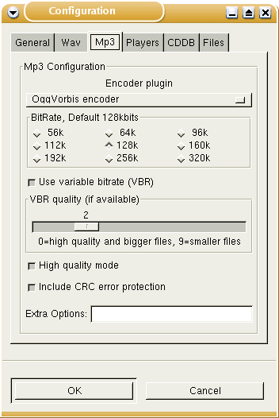
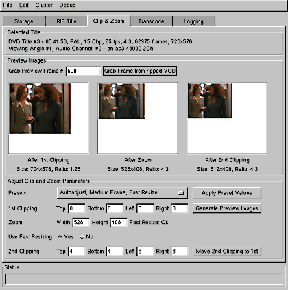

Multimedia¶
Audio¶
Sound-Formate¶
Beschreibung
Dieser Text soll einen kleinen Einstieg ins Thema Sound bieten. Neben dem in aller Munde befindlichen MP3 möchte dieser Text auch auf Alternativen hinweisen. Mit OGG Vorbis gibt es nicht nur eine qualitativ bessere Alternative, sondern auch eine von Patenten unbelastete.
WAV¶
WAV oder genauer WAVE steht für das Audioformat von Windows. Es wurde mit Windows95 zum ersten mal eingeführt und entwickelte sich mangels Konkurrenz schnell zum Standard für Musik auf dem heimischen PC.
Bei WAV wird unkomprimiert aufgezeichnet, was zu einer Dateigröße von rund 10 MB pro Minute führt. Eine Tonquelle wird dabei 44100 mal pro Sekunde (44.1kHz) und mit einer Breite von 16 Bit abgetastet, welches eine Bitrate von 705,6 kbps entspricht.
WAV lässt sich von fast jedem Player abspielen, ist aber wegen seinem großen Platzverbrauch nicht ideal. Heute wird WAV meistens nur noch für die Musikbearbeitung, anhand der Wellen-Struktur und als Zwischenformat auf dem Weg zu MP3 oder OGG Vorbis verwendet. Diese Formate haben nicht die gleiche Tonqualität, doch ist die Dateigröße durch komplexe Komprimierungsalgorithmen wesentlich verkleinert. Wer dennoch auf gleichbleibende Qualität angewiesen ist, der sollte sich vielleicht einmal Lossless Audio Compression ansehen. Diese komprimieren zwar nicht so stark wie MP3 und OGG, jedoch kommt man leicht auf 60% der Größe der WAVE-Datei. (Weiterführende Informationen unter: en http://members.home.nl/w.speek/comparison.htm)
MP3¶
Die Bezeichnung MP3 ist die Kurzform von MPEG 1 Audio Layer 3. Dieses Format wurde vom Fraunhofer Institut in Erlangen DE (de http://www.iis.fraunhofer.de/amm/) entwickelt. Mit MP3 lassen sich Musikdateien stark komprimieren, ohne dass die Qualität beeinträchtigt wird. Dies wird erreicht, in dem vor allem für das Gehör nicht wahrnehmbare Bereiche weggelassen werden. Teilweise werden aber auch die noch hörbaren Klangspitzen entfernt. So beträgt die Größe einer MP3-Datei pro Minute Musik nur rund 1 MB. Dies sind nur noch gerade 10% einer WAV-Datei. Als Beispiel soll hier die am meisten Verbreitete Bitrate dienen: Ein Musikstück von einer Minute und einer Bitrate von 128 kbps entspricht 960 KB Dateigröße.
Durch diese kompakte Größe erwies sich dieses Format als äußerst geeignet um Musikdateien über das Internet auszutauschen. Musste man vorher eine 50 MB große Datei über ein Modem herunter laden, waren es nun nur noch 5 MB und somit in brauchbarer Zeit realisiert.
Rechtliche Situation
Was die Benutzer freute, entwickelte sich sehr schnell zum Ärger der Musikindustrie. Tauschbörsen kamen wie Pilze aus dem Boden und die Meisten verschwanden mit der gleichen Geschwindigkeit. Mit Napster gab es während längerer Zeit eine weithin bekannte Tauschbörse. Durch unzählige Verletzungen des Urheberrechts gab es mehrere Prozesse an deren Ende auch das Ende von Napster stand.
An der rechtlichen Situation hat sich bisher einiges geändert, um die Verbreitung von der Musik über Tauschbörsen und das private Kopieren der CDs zu bremsen. Seit dem 13.09.2003 ist es das aushebeln sämtlicher Kopierschutzorganismen (somit auch private Kopien, z.B. um sich seine CDs im Auto anzuhören) illegal. Auch das digitale Abspeichern (rippen) von Kopiergeschützten CDs ist somit illegal geworden. Da viele dieser Kopiergeschützten CDs nicht mehr der Red Book - Norm unterliegen und somit auch nicht mehr von allen CD-Playern abgespielt werden können, spricht man hier auch oft von Un-CD’s. Näheres zum Thema: de http://transpatent.com/gesetze/urhg.html
Erstellen von MP3-Dateien von eigenen CDs ist insoweit immer noch legal, solange die CD keinen Kopierschutz aufweist. Bei Tauschbörsen ist dies von Land zu Land unterschiedlich.
Einige, vor allem weniger bekannte Künstler, bieten ihre eigenen Stücke zum Download an. Diese Dateien sind legal und dürfen ohne weiteres angehört und abgespeichert werden. Gleiches gilt auch für Dateien, die als Werbung unter die Leute gebracht werden.
Probleme mit Patenten
Der MP3-Algorithmus des Fraunhofer Institutes unterliegt einem Patent. Dadurch müssen alle Hersteller von Encodern eine entsprechende Lizenzzahlung leisten. Da dies für OpenSource-Projekte kaum bezahlbar ist, gibt es einige eigene Lösungen. Zu Beginn waren diese kaum verwendbar, doch hat sich dort einiges geändert. Da dies aber nur die Umgehung des Problems ist, sollte man besser ein anderes Format wie OGG verwenden.
OGG Vorbis¶
Ogg Vorbis (en http://www.vorbis.com/), ist momentan das einzige freie Audioformat, welches durch Entfernung von kaum hörbaren Teilen und einer ausgereiften Kompression der Musik eine große Platzersparnis erzielt.Es ist weder durch Patente noch durch sonstige Rechte belastet. Im Gegensatz zu MP3 sind auch keine Abgaben an die Erfinder nötig, da Ogg Vorbis unter public domain steht. Ein weiteres Audioformat das Frei ist, währe das flac (free lossless audio). Weitere Informationen hierzu findet man unter: en http://flac.sourceforge.net
OGG Vorbis hat eine weithin als besser empfundene Qualität als MP3 bei gleicher wenn nicht geringerer Dateigröße. Wer also seine Musiksammlung digitalisieren will, sollte gleich von Anfang an mit OGG Vorbis arbeiten.
OGG Vorbis ist aber mehr als nur ein Musikformat. Das Projekt OGG will ein komplettes und freies Multimediasystem aufbauen. Vorbis ist der eigentliche Namen der Audiocodec. Da bisher nur OGG Vorbis verfügbar ist, meint man mit der Nennung von OGG grundsätzlich OGG Vorbis. Im weiteren Verlauf dieses Textes steht OGG daher auch stellvertretend für OGG Vorbis.
Konverter MP3 -> OGG
Mit Hilfe eines Konverters können Musikdateien von MP3 nach OGG geändert werden. Dies macht aber nur Sinn, wenn man all seine Dateien vom gleichen Typ haben will. Durch die Konvertierung nach OGG wird die Qualität der MP3-Datei nicht besser, meistens sogar deutlich schlechter. Daher sollte man dies nur mit MP3-Dateien machen, die eine ausreichend hohe Bitrate haben. Als Faustregel hierfür gilt, dass man Mindestens 32kbps Verschlechterung der Qualität in Kauf nehmen muss. Dabei wird die OGG-Datei aber um wesentlich mehr kbps verkleinert.
Wer dennoch seine MP3 Sammlung konvertieren will, findet auf en http://freshmeat.net/search/?q=convert%20ogg%20mp3 etliche Konvertierungsprogramme.
Autor
Johnny Graber linux@jgraber.ch
Formatierung
Torsten Hemm T.Hemm@gmx.de
Grabber und Encoder¶
Begriffe¶
grabben
Das Auslesen einer Musik-CD und abspeichern auf einer Festplatte wird mit grabben bezeichnet. Häufig wird auch von rippen (englisch rip = trennen) gesprochen.
encoden
Mit encoden bezeichnet man die Konvertierung einer WAV-Datei in ein Endformat wie MP3 oder Ogg Vorbis. Dies geschieht vor allem um Speicherplatz zu sparen und die Dateien schneller austauschen zu können.
decoden
Wie es der Name schon sagt, ist es die Umkehr von encoden. Aus einer MP3- oder OGG Vorbis Datei macht man eine WAV-Datei. Dieser Vorgang muss gemacht werden, wenn das Brennprogramm Audio-CDs nur mit WAV-Dateien erstellen kann.
Grabber¶
dagrab
dagrab ist ein reiner Grabber, der ohne grafisches Frontend auskommt. Er kümmert sich als nur um das Auslesen der Musik-CD und erstellt die WAV-Dateien. Was die Geschwindigkeit betrifft, gehört dagrab eindeutig nicht zu den schnellen Grabbern. Zu finden ist dagrab auf seiner en Homepage.
Gerade Anfängern wird die Verwendung des RPM-Paketes empfohlen, da dessen Installation problemlos klappt. Zur Installation genügt nach dem Download als root: root@linux ~# rpm -ihv dagrab-0.3.5-1.i386.rpm
Sollte sich die Version geändert haben, muss auch der Befehl entsprechend angepasst werden.
Da man oft gerne vor dem Start wissen möchte, wieviel Platz für die WAV-Dateien gebraucht wird, gibt es bei dagrab die Option -i. Da man oft auch gerne noch gleich die Titel angezeigt haben will, ist -C angenehm. Mit -H kann man eine beliebige CD-Datenbank angeben. user@linux ~$ dagrab -i -C -H www.freedb.org dagrab: cddb inexact matches found, picking first
DISK: S Club 7 / Sunshine
- track start length type duration MB Title
- 1 150 17522 audio 00:03:53 39 Don’t Stop Movin 2 17672 13930 audio 00:03:05 31 Show Me Your Colours 3 31602 15545 audio 00:03:27 34 You 4 47147 15115 audio 00:03:21 33 Have You Ever 5 62262 16005 audio 00:03:33 35 Good Times 6 78267 13983 audio 00:03:06 31 Boy Like You 7 92250 17495 audio 00:03:53 39 Sunshine 8 109745 17040 audio 00:03:47 38 Dance Dance Dance 9 126785 15815 audio 00:03:30 35 It’s Alright
10 142600 14427 audio 00:03:12 32 Stronger 11 157027 14703 audio 00:03:16 32 Summertime Feeling 12 171730 17167 audio 00:03:48 38 I Will Find You 13 188897 29420 audio 00:06:32 65 Never Had A Dream Come True 14 218317 27507 data 00:06:06 61 CD Rom: Never Had A Dream Come True
170 245824 - leadout
CDDB DISCID: a40ccb0e
einzelne Lieder auslesen mit dagrab
Will man nur die ersten 3 Musikstücke auslesen, genügt ein: user@linux ~$ dagrab 1 2 3
Die Dateinamen lauten dann aber unschön @num-@trk.wav. Der deutlich längere Befehl führt dann aber zum gewünschten Ergebnis: user@linux ~$ dagrab -N -C -H www.freedb.org 1 2 3 ... user@linux ~$ ls 01-Don_t_Stop_Movin.wav 02-Show_Me_Your_Colours.wav 03-You.wav
ganze CD grabben mit dagrad
Will man die WAV-Dateien ohne speziellen Namen auf seine Disk bekommen, genügt wiederum ein kleiner Befehl: user@linux ~$ dagrab -a
Auch hier ist es möglich, die en freedb.org für die Namensgebung zu verwenden: user@linux ~$ dagrab -N -C -H www.freedb.org -a
dagrab mit anderen Tools nutzen
Man kann dagrab auch mit anderen Tools zusammenarbeiten lassen. Dazu genügt die Option -e gefolgt vom Programmnamen und Optionen für das Hilfsprogramm, sofern notwendig: user@linux ~$ dagrab -a -e bladeenc %s
Dieser Befehl ruft den MP3-Encoder bladeenc auf und mit %s wird ihm der Dateinamen übergeben. So kann man mit einem Befehlsaufruf gleich die WAV-Dateien in MP3s umwandeln lassen.
cdparanoia
Die Aufgabe von cdparanoia beschränkt sich ebenfalls nur auf das Auslesen von CDs. Auf seiner Homepage (en http://www.xiph.org/paranoia/index.html) gibt es eine mit gzip komprimierte Binärdatei. Bevor diese verwendet werden kann, muss sie dekomprimiert werden: user@linux ~$ gunzip cdparanoia-III-alpha9.8.i386-linux-elf.gz user@linux ~$ mv cdparanoia-III-alpha9.8.i386-linux-elf.gz cdparanoia (Mit mv wird das Programm auf einen kürzeren Namen umbenannt.)
cdparanoia ist deutlich schneller als dagrab. Wenn man nicht nur gelegentlich ein Musikstück grabbt, wird man sehr schnell über die Geschwindigkeit von cdparanoia erfreut sein.
Da cdparanoia nicht nur schnell, sondern auch flexibel ist, wird es von zahlreichen grafischen Programmen fürs Grabben verwendet.
einzelne Lieder auslesen mit cdparanoia
Will man die ersten 3 Lieder auslesen, lautet der Befehl so: user@linux ~$ cdparanoia -B “1-3”
Mit -B werden die Lieder in einzelne Dateien geschrieben. Lässt man diese Option weg, wird einem nur eine einzige Datei erstellt.
ganze CD grabben mit cdparanoia
Fürs grabben einer ganzen CD können wir den bereits bekannten Befehl nutzen, doch diesmal ohne Angabe des Endes: user@linux ~$ cdparanoia -B
Encoder¶
notlame
notlame baut auf dem Encoder lame auf und kann auf en http://www.eleceng.adelaide.edu.au/Personal/csanders/not_lame/ gefunden werden. In den Anfangstagen verwendete lame grössere Code-Teile der ISO-Implementierung und konnte daher nicht mit den Linux-Distributionen vertrieben werden. So entstand notlame, um dieses Problem zu umgehen. Seit 2000 steht zwar auch lame komplett unter der LGPL, doch hat notlame seither viele Freunde gewonnen.
MP3 erstellen mit notlame
Mit notlame können WAV-Dateien sehr einfach in MP3s umgewandelt werden: user@linux ~$ lame lied.wav lied.mp3 LAME version 3.93 MMX (http://www.mp3dev.org/) CPU features: i387, MMX (ASM used), SIMD Using polyphase lowpass filter, transition band: 15115 Hz - 15648 Hz Encoding lied.wav to lied.mp3 Encoding as 44.1 kHz 128 kbps j-stereo MPEG-1 Layer III (11x) qval=2
Frame | CPU time/estim | REAL time/estim | play/CPU | ETA8943/8945 (100%)| 0:35/ 0:35| 0:45/ 0:45| 6.5862x| 0:00
average: 128.0 kbps LR: 1025 (11.46%) MS: 7921 (88.54%)
Writing LAME Tag...done
notlame bietet etliche Möglichkeiten, um die MP3-Tags zu setzen. Eine ausführliche Liste gibt es in der Hilfe von notlame: user@linux ~$ lame –longhelp ... ID3 tag options:
--tt <title> audio/song title (max 30 chars for version 1 tag) --ta <artist> audio/song artist (max 30 chars for version 1 tag) --tl <album> audio/song album (max 30 chars for version 1 tag) --ty <year> audio/song year of issue (1 to 9999)
...
Jedem der sich länger mit notlame beschäftigen will, sollte einen Blick in die Hilfe werfen. Neben den ID3-Tags finden sich noch unzählige andere Themen.
bladeenc
bladeenc wurde 1998 gestartet, da dem Autor Tord Jansson die bestehenden Encoder zu langsam waren oder nicht sauber mit einer grösseren Datenrate zurecht kamen.
bladeenc findet man entweder auf en http://bladeenc.mp3.no oder als RPM bei en http://www.rpmseek.com.
MP3 erstellen mit bladeenc
Gleich einfach wie bei notlame ist die Erstellung von MP3 mit bladeenc. user@linux ~$ bladeenc lied.wav BladeEnc 0.94.2 (c) Tord Jansson Homepage: http://bladeenc.mp3.no =============================================================================== BladeEnc is free software, distributed under the Lesser General Public License. See the file COPYING, BladeEnc’s homepage or www.fsf.org for more details.
Files to encode: 1
Encoding: lied.wav Input: 44.1 kHz, 16 bit, stereo. Output: 128 kBit, stereo.
Completed. Encoding time: 00:01:08 (3.44X)
All operations completed. Total encoding time: 00:01:08
oggenc
oggenc ist Teil der OGG Vorbis Tools und kann auf en http://www.vorbis.com/download_unix.psp heruntergeladen werden. Im Gegensatz zu den bisher vorgestellten Tools können mit oggenc keine MP3-Dateien hergestellt werden.
OGG Vorbis erstellen
Eine OGG Vorbis Datei ist nicht schwerer zu erstellen als ein MP3: user@linux ~$ oggenc lied.wav Opening with wav module: WAV file reader Encoding “lied.wav” to
“lied.ogg”
- at quality 3.00
- [100.0%] [ 0m00s remaining] -
Done encoding file “lied.ogg”
File length: 3m 53.0s Elapsed time: 1m 01.9s Rate: 3.7719 Average bitrate: 110.8 kb/s
Auch OGG Vorbis kennt Kommentare, die in der Datei abgelegt werden können. Die dafür wichtigsten Optionen sind: -t Titel des Liedes -a Künstler -l Name der CD
Alleskönner¶
grip
grip ist ein mächtiges Tool. Es kann nicht nur CDs grabben, es kann sie auch als MP3 oder OGG encoden. Durch seinen grafisches Frontend ist grip auch sehr einfach zu benutzen.
Sollte grip noch nicht installiert sein, findet man es auf en http://nostatic.org/grip/.
Ein Alleskönner in Sachen Sound
grip konfigurieren
Die Konfiguration ist schnell gemacht. Es braucht kaum etwas geändert werden, da die Standardeinstellung gut gelungen ist. Die wichtigsten Änderungen betreffen unter ‘Rip’ die Anpassung des Ablageortes für WAV-Dateien (Rip-Datei-Format). Dort kann man nicht nur den Ablageort, sondern auch den Dateinamen festlegen. Dies geschieht über Schlüsselzeichen, von denen hier die häufigst verwendeten aufgelistet sind: %n Name des Stücks %a Künstler des Stücks. %A Künstler der CD %d Name der CD %i Der Index (als hex-Zahl) der CD aus der FreeDB-Datenbank %y Das Erscheinungsjahr der CD %t Die Positionsnummer des Stücks (mit führender Null, wenn nötig)
Falls man einen speziellen Grabber verwenden will, kann man den unter “Ripper” auswählen, samt den damit möglichen Optionen.
Erstellt mehr als nur MP3 Dateien
Unter ‘MP3’ kann man den Encoder auswählen. Auch wenn der Name dieses Reiters etwas anderes vermuten lässt: Man kann auch andere Formate als MP3 erstellen. Dazu wählt man bei Kodierer z.B. oggenc oder den OGG Vorbis Encoder seiner Wahl.
grabben und encoden mit grip
Beim Startbildschirm wählt man die gewünschten Lieder durch Mausklick ins Feld “Rip” aus. Sobald man damit fertig ist, wechselt man auf den Reiter “Rip”. Man muss sich dann entscheiden, ob man “Rippen und Kodieren” oder nur “Rippen” will. Wenn beides gemacht werden soll, wählt man ab besten gleich das 1. Sobald das Grabben/Rippen abgeschlossen ist, wird die CD ausgeworfen und das encoden beginnt. Sobald das encoden abgeschlossen ist, wird die nicht mehr benötigte WAV-Datei gelöscht (ausser man hat diese Option deaktiviert).
Das Erstellen von MP3 oder OGG Vorbis Dateien ist unter Linux dank Tools wie grip auch für normale Benutzer ein Kinderspiel.
ripperX
RipperX ist ein universellen Programm mit dem Sie CDs nicht nur grabben können, sondern Sie auch gleich im selben Arbeitsgang zu mp3 oder ogg Dateien umwandeln.
Sie können das Programm bei en http://sourceforge.net/projects/ripperx/ downloaden.
Startbild von ripperX
ripperX konfigurieren
Wenn Sie das Programm das erste Mal starten, erscheint der Startbildschirm. Das erste was Sie tun sollten, ist das Programm nach Ihren Wünschen anzupassen.
Allgemeine Einstellungen
Klicken Sie dazu auf den Button Config. Sie befinden sich jetzt bei den allgemeinen Einstellungen. Dort können Sie das “Aussehen” der Titel einstellen, festlegen ob sie vorhandene WAV-Dateien umwandeln wollen oder ob sie die WAV-Dateien nur bei erfolgreicher Umwandlung löschen wollen.
WAV-Einstellungen
Auf dem WAV Reiter können Sie den Ripper auswählen (Standard ist cdparanoia III). Wenn sich das Laufwerk mit dem Sie Ihre CDs auslesen nicht unter /dev/cdrom befindet, müssen Sie die erste Option aktivieren.
Komprimierungs-Einstellungen
Auf dem MP3 Reiter können Sie den Encoder auswählen. Bei mir steht dort OGG Vorbis Encoder. Sie haben jedoch die Möglichkeit auch z.B. lame auszuwählen, je nachdem welche Encoder auf ihrem System installiert sind. Sie müssen noch ein Bitrate auswählen; standardmässig wird 128kbit ausgewählt, was für die meistens Fälle in Ordnung ist. Sie können auch variable Bitraten benutzen. Empfehlenswert ist dabei eine Einstellung 3 oder 4. Unten haben sie noch 2 Punkte die sie auswählen können: High quality mode und include CRC Error Protection.
Einstellungen der Playern
Auf dem Players Reiter können sie Optionen zu den verschiedenen Playern einstellen. Die Voreinstellungen kann man so übernehmen.
Einstellungen zu CDDB
Auf dem CDDB Reiter können sie einen CDDB Server auswählen. Die Voreinstellungen kann auch hier wieder übernommen werden.
Einstellungen zu den Files
Auf dem Files Reiter können sie Optionen zu den Dateinamen einstellen.
grabben und encoden mit ripperX
Gleich geht es los
Da nun alles konfiguriert ist, können Sie eine CD ins Laufwerk legen. Drücken Sie den Knopf “Scan” und der Inhalt ihrer CD wird angezeigt. Nun können Sie auf den Knopf CDDB drücken (bei aktiver Internetverbindung) und das Programm schaut auf dem von Ihnen gewählten CDDB Server nach, ob ihre CD vorhanden ist. Wenn ja erscheinen die Informationen im Programmfenster. Wenn nicht können Sie die Informationen auch manuell eingeben. Zum Schluss wählen Sie noch die Lieder aus die sie umwandeln wollen und drücken den “Go!!!” Knopf.
Autoren
Johnny Graber linux@jgraber.ch Frank Boerner frank@frank-boerner.de
Formatierung
Johnny Graber linux@jgraber.ch
XMMS¶
Beschreibung
Dieses Dokument unterliegt der GNU FDL. Es darf gemäß dieser Lizenz frei kopiert und weitergegeben werden. Teile der Dokumentation habe ich aus dem Englischen der Original-Dokumenation des XMMS Projektes übersetzt. Hier ein herzliches Danke an die XMMS-Entwickler.
Xmms (X Multimedia System) ist ein plattformübergreifender Audioplayer, der Audiodateien im MP3-, MP2-, OGG und WAV-Format abspielen kann. Mit Plugins können derzeit alle verbreiteten Audiodateien abgespielt werden. Ebenfalls ist es möglich, einen Stream über das Internet zu empfangen. xmms ist in etwa dem Winamp für Microsoft Windows nachempfunden. In der Bedienung sind nur minimale Unterschiede zu verspüren. Dieser ist auch mit den Dateien vom WinAmp kompatibel. (Windows und WinAmp sind eingetragene Warenzeichen der jeweiligen Hersteller) Anzumerken bleibt jedoch, dass XMMS KEINE Portierung vom WinAmp ist! Die Entwickler haben sie lediglich die grafische Benutzeroberfläche geborgt.
Installation¶
Das Kapitel über die Installation ist in mehrere Abschnitte aufgeteilt. Es werden zum einen die normale Paket-Installtion, zum anderen die manuelle distributionsunabhängige Installtion, sowie spezifische Installationen durchgegangen.
Die Installation mit Paketen
Die meisten Distributionen liefern XMMS mit aus. In letzter Zeit jedoch distanzieren sich einige davon (Wie Gentoo zum Beispiel), da XMMS nach wie vor nur auf GTK+/GLIB 1.2 baut und nicht explizit unter GTK+ 2.x lauffähig ist. Sollte Ihre Distribution darunter fallen, empfiehlt es sich, XMMS aus den Quellen manuell zu übersetzen. Oder sie greifen auf auf einen XMMS-Fork wie etwa Beep zurück.
Je nach dem, welche Distribution Sie verwenden, kann sich die Installation mit den Paketen, anders verhalten. Wohingegen bei Debian ein apt-get install xmms oder ein dpkg -i xmms-1.2.8.deb in Frage kommt, würden Sie bei Red Hat eher ein rpm -i xmms-1.2.8.rpm verwenden. Welcher Paket-Manager bei Ihrer Distribution in Frage kommt, erfahren Sie am idealsten auf der jeweiligen Homepage oder in deren Benutzerhandbuch.
Die manuelle Installation aus den Quellen
Voraussetzungen
Folgende Bibliothek wird für die Kompelierung von XMMS benötigt:
gtk/glib 1.2.2 oder besser ftp://ftp.gtk.org/pub/gtk/v1.2/
Wenn Sie die libc5 im Einsatz haben benötigen Sie ausserdem:
gnu gettext 0.10 (benutzen Sie beim Kompelieren von XMMS Folgendes: configure –with-gnu-gettext) ftp://prep.ai.mit.edu/pub/gnu/gettext/gettext-0.10.tar.gz linuxthreads 0.761 http://www.xmms.org/files/libc5/linuxthreads.tar.gz Thread safe Xlibs http://www.xmms.org/files/libc5/XFree86-3.3-libs.tar.gz
Wenn Sie wollen, dass XMMS Formate wie mod, s3m, med, und/oder Formate die mikmod unterstützt, dann sollten Sie noch vor dem ./configure von XMMS die Bibliothek libmikmod installieren. Herunterladen können Sie das Archiv von http://www.ibiblio.org/pub/linux/apps/sound/libs/.
Unter der Domain http://www.mesa3d.org/ erhalten Sie Mesa 3.0, sofern Sie OpenGL PlugIn’s nutzen wollen.
Um das freie Format Ogg Vorbis mit Ihrem XMMS abspielen zu können, ist zusätzlich auch noch die Bibliothek libvorbis von nöten, die sie unter http://www.vorbis.com/download_unix.psp herunterladen können.
Die Basis Installation
Nach dem Sie die Vorbereitungen alle abgeschlossen haben und das XMMS-Archiv entpackt haben, können Sie XMMS wie folgt installieren:
root@linux ~# cd xmms-1.2.8 root@linux ~/xmms-1.2.8# ./configure root@linux ~/xmms-1.2.8# make root@linux ~/xmms-1.2.8# make install
Nach der erfolgreichen Installation finden Sie die ausführbaren Dateien unter /usr/local/bin und die PlugIns unter /usr/local/lib/xmms/
Die Randlose (Borderless) Installation
Die meisten WM’s (Window Maker) akzeptieren die GTK-Fenster-Dekoration des jeweiligen Programmes. Bei jenen wird XMMS auch ohne Ränder dargestellt. Jedoch einige WM’s unterstützen dies nicht und Sie müssen dort leider etwas Handarbeit vornehmen:
Bei AfterStep 1.0 muss die Datei~/.steprc folgende Zeilen beinhalten
Style “XMMS_Player” NoTitle, NoHandles Style “XMMS_Playlist” NoTitle, NoHandles Style “XMMS_Equalizer” NoTitle, NoHandles
Bei AfterSetp 1.4 muss die Datei ~/GNUstep/Library/AfterStep/database folgende Zeilen beinhalten
Style “XMMS_Player” NoTitle, NoHandles Style “XMMS_Playlist” NoTitle, NoHandles Style “XMMS_Equalizer” NoTitle, NoHandles
Beim Einsatz des Fvwm’s müssen Sie die datei ~/.fvwm95rc um drei Zeilen erweitern:
Style “XMMS_Player” NoTitle Style “XMMS_Playlist” NoTitle Style “XMMS_Equalizer” NoTitle
Die Datei ~/.ctwmrc kommt in Frage, wenn Sie CTWM benutzen
NoTitle and NoBorder sections: NoTitle {
“xmms”
}
- NoBorder {
- “xmms”
}
Installieren weiterer Skins
Beim ersten Start von XMMS wird in Ihrem Home-Verzeichnis das Verzeichnis ~/.xmms/Skins/ erstellt. In jenes können Sie die Skins entpacken wie Sie es bei WinAmp auch gewohnt sind. Der Unterschied ist, daß Sie nicht zwingend die Archive entpacken müssen. XMMS kann auch gepackte Skins lesen, die in dem Verzeichnis abgelegt wurden. Unterstützte Formate der Archive sind: zip,wsz, tar,tar.gz und tar.bz2. Es genügt, wenn Sie einfach das archivierte Skin in das entsprechende Verzeichnis hineinkopieren. Über den Rest kümmert sich sodann XMMS. (Natürlich wird davon ausgegangen, daß Ihr GNU/Linux-System mit dem jeweiligen Archiv-Format von sich aus umgehen kann. Sollte dies bei einigen nicht der Fall sein, so installieren Sie bitte den Unpacker einfach nach.)
Damit XMMS Ihr neu installiertes Skin auch nutzt, drücken Sie im laufenden Betrieb von XMMS einfach die Tastenkombination ALT S, um den Skin-Auswahl-Dialog hervorzurufen. XMMS erinnert sich anhand der Konfigurationsdatei ~/.xmms/config welchen Skin sie als letztes benutzt haben und wird diesen bei einem erneuten Start von XMMS wieder laden. In dem Dialog der Skin-Auswahl haben Sie obendrein die Möglichkeit die Option random Skin auszuwählen. Dort ein Haken gesetzt bewirkt, daß bei jedem neuen Start von xmms ein anderer Skin genutzt wird. XMMS benutzt hierbei die Skins aus den Verzeichnissen /share/xmms/Skins und ~/.xmms/Skins. Wenn Sie weitere Verzeichnisse verfügbar machen willen, exportieren Sie einfach den Pfad in die Variable SKINSDIR.
Beispiel für den Export in der Bash: user@linux ~$ export SKINSDIR=/path/to/Skins:/more/paths/to/other/locations/of/Skins
Beispiel für den Export in der csh: user@linux ~$ setenv SKINSDIR /path/to/Skins:/more/paths/to/other/locations/of/Skins
Starten von xmms¶
Am einfachsten starten Sie xmms unter einer X-Oberfläche. Öffnen Sie dazu “Befehl ausführen” entweder über das KDE-Menü oder durch die Tastenkombination Alt+F2. Geben Sie in das nun erschienene Fenster xmms ein.

Befehl ausführen
Auf dem Desktop erscheint nun die Bedienungsoberfläche von xmms.
Sollte dies allerdings nicht der Fall sein, dann ist er wahrscheinlich nicht installiert. Überprüfen kann man dies, indem man einen Terminalemulator (z.B. xterm) startet und “xmms” eintippt. Erscheint eine Meldung wie “bash: xmms: command not found” ist er nicht oder fehlerhaft installiert.
Die Oberfläche von xmms¶

XMMS Hauptscreen
Das Programm xmms erinnert an einen DVD-Player oder moderneren CD-Player. Deswegen werden Sie mit der Bedienung keine großen Schwierigkeiten haben.
Die Oberfläche des xmms besteht aus einer Titelleiste, zwei Displays, drei Schiebereglern und mehreren Bedienknöpfen:
Die Titelleiste weist neben dem Titel selbst drei Buttons (Knöpfe) auf. Der linke Button minimiert das Programm, der mittlere verkleinert das Programm, sodass Sie nur noch die Titel-Leiste sehen können und der rechte Button schliesst XMMS augenblicklich.
In der Anzeige links oben sehen Sie die Spieldauer des aktuell laufenden Musikstückes zusammen mit einm Spectrum Analyzer. Ein Rechtsklick auf diesen Analyzer öffnet das Visualisierungs-Menü. Ein Linksklick daraf welchselt den Analyzer zu einem Oszilloskop und/oder zu garkeiner Anzeige. Rechts neben dem Analyzer zeigt das Display den Interpret, Titel, Spieldauer, Bitrate, die Samplingrate für das Lied, sowie ob es über den Mono oder Stereo Kanal wiedergegeben wird, an. Die Lautstärke und die Balance können Sie mit den beiden Schiebereglern unter den Displays einstellen. Um an jede beliebige Stelle des Liedes zu gelangen, ist der große Schieberegler von Nutzen. Er zeigt den Liedverlauf an.
Rechts neben den beiden kleinen Schiebereglern befinden sich zwei Knöpfe, mit denen der Equalizer (EQ) und der Playlist-Editor (PL) aufgerufen werden können. Mit dem Playlist-Editor erstellen Sie die Liste der Musikstücke, die Sie hören wollen. Drücken Sie auf beide Knöpfe, um zwei weitere Fenster zu öffnen. Die Buttons sind dann blau markiert.
Mit den 6 Knöpfen unter dem großen Schieberegler können Sie den Titel bedienen. Die Bedienung funktioniert genauso wie auf einem normalen CD-Player. Von Links nach Rechts lauten diese: Previous Track (Einen Titel zurück) Play (Abspielen) Pause (Das Abspielen pausieren) Stop (Anhalten des Titels) Next Track (Einen Titel nach Vorne) Eject (Eigentlich bedeutet das bei CD-Playern “Auswurf”. Bei XMMS jedoch löst dies das Datei-öffnen aus, in dem es Ihnen gestattet ist, einen oder mehrere Titel im Dateibrowser auszuwählen, damit diese(r) abgespielt wird. Zeitgleich können Sie diese Titel auch in die aktuelle Playlist mit aufnehmen. Shuffle Ist dies aktiviert, Spielt XMMS die Titel in der Playlist “durcheinander” ab, ohne die festgelegte Reihenfolge zu beachten. Repeat Ist Repeat (Wiederholung) aktiviert, so beginnt XMMS erneut mit dem Abspielen, wenn die Playlist das Ende erreicht hat.
Die beiden Knöpfe neben den CD-Playern-Buttons Rand. (Abkürzung für Random) und Rep (Repeat) können Sie dazu benutzen, um eine Zufallswiedergabe (Rand.) und/oder eine automatische Wiederholung (Rep.) der Playlist starten.
Wenn Sie links vom Spectrum Analyzer sehen, dann finden Sie dort mehrere Buchstaben (beim normalen Default-Skin): O A I D V - Bei einem Klick auf einen der Buchstaben öffnet sich entweder das jeweilige Menü oder es löst eine Aktion aus, wie folgende Tabelle zeigt:
O Das Options-Menü A XMMS immer im Vordergrund halten I Datei Informations Dialog D XMMS in Doppelte Größe anzeigen V Visualisierungs Menü
Mit dem Equalizer arbeiten¶
Equalizer
Beim Equalizer können Sie, wenn Sie auf den ON Button (ganz links oben) gedrückt haben, ganz verschiedene, individuelle Klangvariationen einstellen und mit Presets abspeichern. Probieren Sie ruhig ein wenig herum, um das für Sie das optimale Klangbild zu finden.
ACHTUNG: Wird das Klangbild im EQ verändert, dauert es ca. 5 Sekunden, bis die neuen Einstellungen zu hören sind.
Eine Playlist anlegen¶
Playlist
In den Playlist-Fenstern sehen Sie am unteren Rand eine Leiste mit verschiedenen Bedienknöpfen. Die vier wichtigsten sind: +File, -File, Sel All und Load List. Mit dem ersten Button +File können Sie in die neue oder bereits bestehende Playlist einzelne Dateien (+File), ganze Verzeichnisse (+Dir) oder URL’s (+URL) hinzufügen.
Mit dem Button -File können Sie einzelne Dateien oder auch ganze Verzeichnisse aus Ihrer Playlist entfernen. Sollten Sie bereits verschiedene Playlisten erstellt haben, können Sie diese mit dem Button Load List (ganz rechts auf der Playlist) laden.
Haben Sie eine Playlist erstellt, dann brauchen Sie nur noch auf die Taste play drücken und schon wird das erste Lied abgespielt.
Einstellungen¶
Einstellungen
Sie erreichen die Einstellungen über das Menü (Options/Preferences), mit der Tastenkombination Control+P oder durch das drücken des Buttons “O” neben dem Display.
Audio I/O Plugins
Hier finden Sie verschiedene Plugins für unterschiedliche Medien und Formate. Sie können hier verschiedene Input-Plugins wählen und konfigurieren.
CD Audio-Spieler
Geben Sie hier das Device an, an das Ihr CD-ROM angeschlossen ist. Zudem können Sie hier die Lautstärke einstellen.
Um mit diesem PlugIn Audio-CDs abspielen zu können, muss in der Playlist (über File+) die entsprechende Gerätedatei (meist wird dies /dev/cdrom sein) hinzugefügt werden. Die Anzeige der Titel auf der CD kann automatisch erfolgen, wenn der Rechner ans Internet angeschlossen ist. Als Voreinstellung wird en http://www.freedb.org für die Abfrage benutzt. Sie können auch einen anderen Server benutzen.
MPEG Layer 1/2/3-Spieler
Hier können Sie den Buffer und einen Proxy-Server einstellen. Weiterhin können Sie hier das Speichern der Daten aus dem Netz auf die Festplatte aktivieren (was bei Live-Streams oft von Nutzen sein wird).
Wave Spieler
Hier gibt es keine Einstellmöglichkeiten.
ID software .cin Spieler
Hier gibt es ebenfalls keine Einstellungsmöglichkeiten. Der Player ist für das Quake II-Format (Quake II ist ein 3D-Ego-Shooter-Spiel).
Ausgabe-Plugins
Von den Output-Plugins kann nur eins zur Zeit aktiv sein.
OSS Treiber
Dieses Plugin versorgt die Soundkarte mit den nötigen Daten. Wenn Sie über mehrere Soundkarten in Ihrem Rechner verfügen, können Sie hier eine auswählen. Weiterhin können Sie hier bestimmen, wieviel Speicher zur Pufferung von Daten verwendet werden soll.
eSound Ausgabe-Plugin
Wenn Sie den eSounD (en http://www.tux.org/~ricdude/EsounD.html) installiert haben, können Sie hier den Server wählen, der benutzt werden soll.
Disk Writer Plugin
Mit diesem Plugin können Sie jeden Sound, der von den Input Plugins gelesen werden kann, im WAV-Format speichern.
Effekt-/Allgemeine Plugins
Hier haben Sie verschiedene Plugins zur Auswahl, beispielsweise um xmms mit einem Joystick oder über eine Infrarotschnittstelle zu steuern. Ziemlich lustig ist auch das Echo-Plugin - probieren Sie es aus!
Visualisierungs Plugins
Visuelle Effekte
Hier finden Sie einige tolle Plugins, um Ihre Songs auch grafisch richtig zur Geltung zu bringen. Am beeindruckensten ist sicher das OpenGL-Plugin, bei dem Sie die Tasten z, x, c, v, b wie im Hauptfenster benutzen können. Zusätzlich können Sie die Pfeiltasten zum Verändern der x- und z-Achsen und die Tasten q und w zum Verändern der y-Achse benutzen. Die RETURN-Taste setzt die Werte zurück.
Optionen
Hier finden Sie diverse Einstellmöglichkeiten, die u.a. das Aussehen von xmms beeinflussen oder das Verhalten verändern.
Tastenkürzel¶
Allgemeine Tastenkürzel
z einen Titel zurück x Play c Pause v Stop b Nächster Titel l Öffne Datei j Springe zur Datei (in der vorhandenen Playlist) r Repeat Ein/Ausschalten (Wiederholung) s Shuffle Ein/Ausschalten (Zufallswiedergabe) Shift+1 Spiele Verzeichnis; Öffnet das “Füge Verzeichnis hinzu” Ctrl+1 Gibt eine Location wieder (URL-Adresse) Ctrl+p Öffnet die Einstellungen Ctrl+v Öffnet die Visualization Auswahl Ctrl+r Noch verbleibende Zeit des Titels Ctrl+a xmms immer in der ersten Ebene auf dem Desktop Ctrl+w Minimierter Modus (nur eine kleine Leiste) Ctrl+d Doppelte Fenstergröße Ctrl+e Leichtes Bewegen des Fensters Ctrl+j Springe zu angegebenen Zeit Ctrl+z Starte die Liste Ctrl+n Keine Playlisten Erweiterung Ctrl+3 Datei-Info Ctrl+Alt+w Minimierter Equalizer Modus Ctrl+Shift+w Minimierter Playlist Modus Alt+w Hautfenster ausblenden Alt+e Playlist ausblenden Alt+g Equalizer ausblenden Alt+s Auswählen des Skins
Hauptfenster
Cursor Taste oben Lautstärke um 2% erhöhen Cursor Taste unten Lautstärke um 2% senken Cursor Taste rechts den Titel um 5% vorspulen Cursor Taste links den Titel um 5% zurückspulen
Playlist
Cursor Taste oben Um eine Stufe nach oben Cursor Taste unten Um eine Stufe nach unten Entfernen Lösche markierten Song von der Playlist Bild Auf Gehe eine Seite nach oben Bild Ab Gehe eine Seite nach unten Pos 1 Gehe zum ersten Song Ende Gehe zum letzten Song Enter Spiele markierten Song Einfügen Fügt eine Datei zur Playlist hinzu Shift+Einfügen Füht ein Verzeichnis zur Playlist hinzu Alt+Einfügen Fügt eine URL Adresse zur Playlist hinzu
Equalizerfenster
Cursor Taste oben Lautstärke um 2% erhöhen Cursor Taste unten Lautstärke um 2% senken Cursor Taste rechts Balance um 3% nach rechts Cursor Taste links Balance um 3% nach links
Skins¶
xmms läßt sich auf Ihren eigenen Geschmack anpassen. Dazu gehören neben der Visualisierung auch die Skins (das Oberflächendesign). Wenn Sie statt der normalen schlichten Oberfläche beispielsweise lieber das Aussehen einer Sony Anlage als Skin haben wollen, dann laden Sie sich diesen Skin einfach von en http://www.winamp.com oder en http://www.xmms.org herunter (Winamp ist das Windows-Pendant zu xmms). Dort finden Sie zur Zeit ca. 12 000 verschiedene Skins und auch etliche Plugins für beide Programme (z.B. Visualisierung, Klangeffekte...). Da xmms mit den meisten von Winamp verwendeten Dateiformaten umgehen kann, können Sie diese Dateien beliebig zwischen beiden Programmen austauschen.
Die Installation eines neuen Skins ist ziemlich einfach. Wenn Sie unzip installiert haben, können Sie das gepackte Skin einfach in das Verzeichnis /usr/share/xmms/Skins/ hineinkopieren. Damit steht es dann allen Benutzern zur Verfügung. Mit der Tastenkombination Alt+S können Sie bei laufendem Programm die neu installierten Skins auswählen.
Das zuletzt verwendete Skin wird unter ~/.xmms/config gespeichert. Dort können Sie auch einstellen, dass xmms bei jedem neuen Titel automatisch das Aussehen wechselt. Nähere Informationen finden Sie im Kapitel Installation von Skins hier in der XMMS Dokumentation von SelfLinux.
Features¶
Unterstützt werden:
OGG Vorbis MP2- und MP3-Streams WAV/AU-Samples diverse Modul-Formate:
mod xm s3m med it 669 amf dsm far gdm imf m15 mtm stm stx ult uniabspielen von Audio-CDs Shoutcast-Streams Icecast-Streams Seeking in Dateien Lautstärken und Balance-Regelung Zufallswiedergabe (Shuffle) Wiederholungsfunktion (Repeat) Playlist Editor “One Line” Modus wie etwa WinShade im WinAmp Oszilloskop Zeit verstrichen / Zeit verbleibend beim Abspielen PlugIn-Sytem Output/Input/Effect/General/Visualization HTTP-Streams auf der Festplatte aufzeichnen Input- und Output-Plugins Effekt- und Visualisierungsplugins Verwendung von WinAmp 2.0-Skins (wsz Format) Spectrum Analyzer Winamp 2.0-Skins (wsz-Dateien) Gnome/Afterstep/WindowMaker Dock-Applikation Mausrad
Da xmms immer weiterentwickelt wird, kommen immer mehr Features hinzu.
Mausradunterstützung¶
Es ist möglich, mit dem Mausrad den xmms leichter und komfortabler zu bedienen.
Unter dem Hauptbildschirm ist die Lautstärke regelbar. Unter dem Equalizer kann man die einzelnen Fader regeln. In der Playliste kann die Liste hoch und runter bewegt werden.
xmms auf der Kommandozeile¶
Meistens werden Sie xmms über ein Menü Ihres Windowmanagers oder aus dem GNOME-Panel starten. xmms verfügt aber auch über ein paar sehr nützliche Kommandozeilenoptionen. Wenn Sie xmms mit einem oder mehreren Dateinamen von der Kommandozeile aufrufen und xmms bereits gestartet ist, so wird die aktuelle Titelliste durch die auf der Kommandozeile angegebenen Dateien ersetzt.
Die komplette Übersicht erhalten Sie mit der Option –help:
Befehl: xmms [options] [files] ...
Options: -h, –help Anzeigen des Hilfetextes -n, –session Auswahl der xmms-Session (Default: 0) -r, –rew Springe in der Playlist zurück -p, –play Spielt die aktuelle Playlist ab -u, –pause Pause des aktuellen Titels -s, –stop Stop des aktuellen Titels -f, –fwd Springe in der Playlist vor -e, –enqueue Eine Datei zu Playlist hinzufügen -m, –show-main-window Anzeigen des Hauptfensters -v, –version Anzeigen der Versionsnummer und Ende
Die meisten Optionen sind selbsterklärend. Nützlich ist die Option -e, diese fügt die angegebenen Dateien der aktuellen Playlist hinzu.
Autor
Alexander Fischer tbanus@tbanus.de
Formatierung
Johnny Graber linux@jgraber.ch
Video¶
vdr¶
Beschreibung
Dieses Dokument unterliegt der GNU FDL. Es darf gemäß dieser Lizenz frei kopiert und weitergegeben werden.
Einleitung¶
Vorwort
Das hier ist schon mal ein Ansatz für eine Beschreibung zur Installation der aktuellen VDR-Versionen mit Plugin-Konzept. Diese Version mit neuen Features wie Timeshifting und gleichzeitiger Aufnahme mehrerer Sendungen vom gleichen Transponder mit nur einer einzigen DVB-Karte befindet sich noch in der Entwicklungsphase, kann aber durchaus schon im Alltagsbetrieb genutzt werden.
Die jeweils aktuelle Version der Anleitung findet sich hier: de http://home.t-online.de/home/hubertus.sandmann/
Eine detaillierte Beschreibung für einen Standalone-Rechner mit der letzten stabilen Version 1.0.4 der VDR-Software inklusive AIO-Patch auf der Basis einer SuSE 7.3-Distribution findet sich hier als gezipptes Archiv zum Download. Es beinhaltet auch eine Anleitung für die Installation einer komfortablen Fernbedienung mittels LIRC und der Einrichtung des automatischen Aufwachens des VDR-Rechners für eine programmierten Aufnahme.
Überblick
Für den Aufbau des digitalen Videorecorder auf der Basis von Linux und der VDR-Software reicht grundsätzlich ein PC mit Minimalausstattung, bestückt mit einem Prozessor der PII-Klasse und etwa 32 MByte RAM und natürlich mindestens einer DVB-Karte mit MPEG2-Decoderchip. Ausserdem benötigt man eine auf das ASTRA-Satellitensystem ausgerichtete digitaltaugliche Empfangsanlage mit Universal-LNB. Die Bedienung kann vollständig per Fernbedienung an Hand eines ins Bild eingeblendeten Menüs (OSD) erfolgen. Aufnahmen von digitalen TV-Sendungen lassen sich komfortabel auf der Basis der vom EPG (Electronic Programm Guide) übermittelten Daten realisieren. Ebenfalls ist ein Videoschnitt um z. B. Werbeeinblendungen in den digitalen Aufnahmen auszublenden möglich. Wie bei einer digitalen Aufnahme nicht anders zu erwarten, ist die Bildqualität der Wiedergabe hervorragend, da das MPEG2-Signal ohne weitere Kompression 1:1 abgespeichert wird. 1 GByte Speicherplatz auf der Festplatte reichen dabei für rund eine 1/2 Stunde Aufnahmedauer. Die Ausgabe von Bild und Ton erfolgt im einfachsten Fall direkt über den FBAS-Ausgang und die Stereo-Klinkenbuchse der DVB-Karte.
Der Vorteil dieser Realisierung auf PC-Basis liegt in der beliebigen Erweiterbarkeit wie z. B. in diesem Fall mit der zusätzlichen Nutzung als DVD-, VCD- und MP3-Player. Auch die Wiedergabe von Audio-CD’s und DivX ist möglich, ebenso das automatisierte Konvertieren von Aufnahmen in das DivX-Format sowie das Erstellen von VCD’s bzw. SVCD’s. Die Bedienung und Programmierung kann neben einer Fernbedienung auch über ein lokales Netzwerk oder sogar per Internet erfolgen. Das offene Konzept von VDR ermöglicht die Entwicklung zu einer universellen Multimediazentrale fürs Wohnzimmer mit mehr Möglichkeiten als es kommerzielle Fertiggeräte vermutlich jemals bieten werden. Dahinter steckt der Gedanke von Open Source und freier Software. Dies alles sollte Grund genug sein sich einmal mit dem Betriebssystem Linux zu beschäftigen. Es lohnt sich!
Links
Eine Sammlung an Informationen über Hardwarekompatibilitäten von DVB-Karten und CAM’s und weitere Hilfestellungen zum Thema DVB findet sich hier: en http://www.linuxvb.tv
Eine gute Gelegenheit zum Erfahrungsaustausch bezüglich des Themas DVB und VDR findet sich im deutschsprachigen Forum: de http://dvbforum.de
Auch die englischsprachigen Mailinglisten von en http://LinuxTV.org sind eine interessante Informationsquelle und bieten eine Suchfunktion.
Auf dem Newsserver news://ltv.boerde.de:199/ gibt es eine deutschsprachige Newsgroup für VDR.
Die ausführliche Linksammlung en http://hotchevy.future.easyspace.com/ zum Thema DVB und VDR mit Hinweisen auf diverse User-Foren bei Installationsproblemen ist ebenfalls einen Klick wert.
Installation¶
DVB-Treiber
Für die DVB-Karten braucht man den entprechenden Treiber, welcher ursprünglich von der Firma Convergence entwickelt wurde und auf en http://www.linuxtv.org als freie Software zur Verfügung gestellt wird.
Die vom Entwickler der VDR-Software jeweilig genutzte Version steht auf der Projekthomepage bereit. Sie dient denn auch als Basis für diese Installation.
en http://www.cadsoft.de/people/kls/vdr/ Voraussetzung für eine erfolgreiche Übersetzung der Quellen sind ein aktueller Kernel der Version 2.4 mit Modul-Unterstützung für video4linux und i2c. Ebenso muss die Unterstützung für input-core und event-interface vorhanden sein. Zudem müssen die Kernelquellen installiert sein.
Nunmehr kann es an die Installation des Treibers gehen. Diese erfolgt aus dem Verzeichnis /usr/local/src heraus. root@linux ~# cd /usr/local/src root@linux /usr/local/src# tar -xjvf siemens_dvb-0.9.4-2002-12-08.tar.bz2 root@linux /usr/local/src# ln -s siemens_dvb-0.9.4-2002-12-08 DVB root@linux /usr/local/src# cd DVB/driver root@linux /usr/local/src/DVB/driver# make root@linux /usr/local/src/DVB/driver# ./makedev.napi root@linux /usr/local/src/DVB/driver# make insmod
Aktuell ist dies die als NEWSTRUCT bezeichnete CVS-Entwicklerversion des Treibers, welcher die gleichzeitige Aufnahme mehrerer Programme vom gleichen Transponder und das Timeshifting mit nur einer einzigen DVB-Karte möglich macht.
Beim Laden der Treiber sollte der Copyright-Schriftzug und bei korrekter Ausrichtung auf ASTRA am TV-Ausgang der DVB-Karte erscheinen. Ist das der Fall, war zumindest das Laden des Treibers schon mal erfolgreich.
VDR
Die aktuelle Version der VDR-Software mit Plugins-Konzept befindet sich offiziell noch im experimentellen Stadium, ist aber schon für den praktischen Einsatz geeignet und kann downgeloaded werden.
ftp://ftp.cadsoft.de/vdr/Developer/
Die Übersetzung dieser Software muss unbedingt aus dem gleichen Verzeichnis /usr/local/src wie das des DVB-Treibers erfolgen. root@linux ~# cd /usr/local/src root@linux /usr/local/src# tar -xjvf vdr-1.1.20.tar.bz2 root@linux /usr/local/src# ln -s vdr-1.1.20 VDR root@linux /usr/local/src# cd VDR root@linux /usr/local/src/VDR# make VFAT=1
Die Steuerung mit der Tastatur ist hierbei immer möglich. Man kann auch zusätzlich mit REMOTE=LIRC die Bedienung mittels des Paketes LIRC per Fernbedienung vorsehen. Die Option VFAT=1 ist notwendig, wenn man beispielsweise auf einer FAT32-Partition des Betriebssystems Windows aufzeichnen will, oder aber auch, sobald man die gespeicherten Files zur späteren Bearbeitung etwa mittels Samba im Windows-Netzwerk exportieren will.
Vor dem ersten Aufruf des Programms müssen noch die Konfigurationsdateien in das zu erstellende Verzeichnis /video kopiert werden. In diesem Verzeichnis werden später auch die aufgezeichneten Video-Dateien gespeichert. root@linux /usr/local/src/VDR# mkdir /video root@linux /usr/local/src/VDR# cp *.conf /video
Anschließend wird die Software aus dem aktuellen Verzeichnis heraus gestartet und kann mit Tastatursteuerung bedient werden. root@linux /usr/local/src/VDR# ./vdr
Zum Beenden verwendet man die Tastenkombination STRG+c.
Die verschiedenen Optionen kann man sich anzeigen lassen mittels: root@linux /usr/local/src/VDR# ./vdr –help
Die VDR-Software startet nur, wenn auch die DVB-Treiber geladen sind. Der komfortabelste Weg dies zu erreichen ist, das Skript runvdr dafür zu nutzen. Ruft man dieses als root auf, lädt es die Treiber bei Bedarf automatisch und startet dann die VDR-Software. Ausserdem sorgt es durch Aktivierung der internen Watchdog-Funktion dafür, dass eine im Fehlerfall abgestorbene VDR-Software und auch der DVB-Treiber im Bedarfsfall selbstständig innerhalb einer Minute wieder neu gestartet wird.
Zuvor sollte man noch dafür sorgen, dass die Steuerung über Tastatur weiterhin möglich bleibt. Dazu legt man tty8 als kontrollierendes Terminal mit einer Ergänzung in der Datei runvdr. Von der graphischen Oberfläche schaltet man mit der Tastenkombination STRG+ALT+F8 um und von der Textkonsole aus mit ALT+F8. runvdr
... DVBDIR=”../DVB/driver” VDRPRG=”./vdr” VDRCMD=”$VDRPRG -w 60 -t /dev/tty8 $*” ...
Danach kann man das Startskript aus dem Quellverzeichnis her aufrufen. root@linux ~# cd /usr/local/src/VDR root@linux /usr/local/src/VDR# ./runvdr
Bei der vollständigen Installation der VDR-Software wird das Binary und auch das Skript runvdr in das Verzeichnis /usr/local/bin kopiert. root@linux ~# cd /usr/local/src/VDR root@linux /usr/local/src/VDR# make install
Ebenso ist dann die Manpage als Ergänzung zur beigefügten Dokumentation im Quellpaket auf dem System verfügbar und kann aufgerufen werden. root@linux ~# man vdr
Gleiches gilt für den Abschnitt 5 mit den Erläuterungen zum Format der einzelnen Konfigurationsdateien. root@linux ~# man 5 vdr
Konfigurationsdateien
remote.conf
Beim erstmaligen Aufruf der VDR-Software geht das Programm in den Lernmodus um wahlweise die Tasten oder aber auch bei laufendem LIRC-Dämon im Falle einer Fernbedienung die Signale zur Steuerung der VDR-Funktionen wunschgemäß zuzuordnen. Während der Lernphase kann man Korrekturen durchführen oder vorzeitig abbrechen. Das Ergebnis wird dann in der Datei remote.conf gespeichert. Der Inhalt der erzeugten Datei bei Einsatz von LIRC könnte folgendermaßen aussehen: LIRC.Up UP LIRC.Down DOWN LIRC.Menu MENU LIRC.Ok OK LIRC.Back BACK LIRC.Left LEFT LIRC.Right RIGHT LIRC.Red RED LIRC.Green GREEN LIRC.Yellow YELLOW LIRC.Blue BLUE LIRC.0 0 LIRC.1 1 LIRC.2 2 LIRC.3 3 LIRC.4 4 LIRC.5 5 LIRC.6 6 LIRC.7 7 LIRC.8 8 LIRC.9 9 LIRC.Power POWER LIRC.Volume+ VOLUME+ LIRC.Volume- VOLUME- LIRC.Mute MUTE
Auch wenn es in dieser Beispieldatei noch der Fall ist, ist es jetzt nicht mehr nötig die Tastenbenennung in der lircd.conf den Kommandos für VDR anzupassen. Es ist jetzt grundsätzlich eine freie Belegung möglich. Löscht man diese Datei, geht die VDR-Software beim nächsten Aufruf wieder in den Lernmodus.
Mann kann zusätzlich spezielle Schlüssel für den direkten Zugriff auf einige Menüpunkte der VDR-Software anlernen. Ebenso lassen sich einige weitere Schlüsselwörter auf Wunsch für bestimmte Tasten einer Fernbedienung anlernen, welche z. B. in den Plugins eine besondere Bedeutung zugewiesen bekommen können. Während der Lernphase lassen sich nicht benötigte Tasten auch überspringen. Im obigen Beispiel sind nur die für die Grundfunktionen des VDR nötigen Elemente aufgeführt.
channels.conf
Die mitgelieferte Datei channels.conf für DVB-s(atellite) enthält relativ aktuell eine Senderbelegung des digitalen ASTRA-Programmangebotes. Auch jeweils eine Vorlagedatei für DVB-c(able) und DVB-t(errestrial) liegen bei. channels.conf
ORF1:12692:h:S19.2E:22000:160:161:165:102:13001:0:0:0 ORF2:12692:h:S19.2E:22000:500:501:505:102:13002:0:0:0 ZDF.info:11954:h:S19.2E:27500:610:620:0:0:28011:0:0:0 CNN:12168:v:S19.2E:27500:165:100:0:0:28512:0:0:0 Super RTL:12188:h:S19.2E:27500:165:120:65:0:12040:0:0:0 VOX:12188:h:S19.2E:27500:167:136:71:0:12060:0:0:0 Kabel 1:12480:v:S19.2E:27500:511:512:33:0:899:0:0:0 Neun Live:12480:v:S19.2E:27500:767:768:35:0:897:0:0:0 DSF:12480:v:S19.2E:27500:1023:1024:0:0:900:0:0:0 HOT:12480:v:S19.2E:27500:1279:1280:0:0:40:0:0:0 Bloomberg TV Germany:12552:v:S19.2E:22000:162:99:0:0:12160:0:0:0 Bloomberg TV France:11817:v:S19.2E:27500:163:92:0:0:8004:0:0:0 Bloomberg TV Spain:12168:v:S19.2E:27500:167:112:0:0:12721:0:0:0 Sky News:12552:v:S19.2E:22000:305:306:0:0:3995:0:0:0 Fox Kids Netherlands:12574:h:S19.2E:22000:163:92:0:0:5020:0:0:0 Alice:12610:v:S19.2E:22000:162:96:0:0:12200:0:0:0 n-tv:12670:v:S19.2E:22000:162:96:55:0:12730:0:0:0 Grand Tourisme:12670:v:S19.2E:22000:289:290:0:0:17300:0:0:0 TW1:12692:h:S19.2E:22000:166:167:0:0:13013:0:0:0 Eurosport:11954:h:S19.2E:27500:410:420:0:0:28009:0:0:0 EinsExtra:12110:h:S19.2E:27500:101:102:0:0:28201:0:0:0 EinsFestival:12110:h:S19.2E:27500:201:202:0:0:28202:0:0:0 EinsMuXx:12110:h:S19.2E:27500:301:302:0:0:28203:0:0:0 ZDF Theaterkanal:11954:h:S19.2E:27500:1110:1120:0:0:28016:0:0:0 ZDF.doku:11954:h:S19.2E:27500:660:670:0:0:28014:0:0:0 MDR:12110:h:S19.2E:27500:401:402:404:0:28204:0:0:0 ORB:12110:h:S19.2E:27500:501:502:504:0:28205:0:0:0 B1:12110:h:S19.2E:27500:601:602:604:0:28206:0:0:0 :Premiere World Premiere Start:11797:h:S19.2E:27500:255:256:0:101:8:0:0:0 Premiere 1:11797:h:S19.2E:27500:511:512,513;515:0:101:10:0:0:0 Premiere 2:11797:h:S19.2E:27500:1791:1792,1793;1795:0:101:11:0:0:0 Premiere 3:11797:h:S19.2E:27500:2303:2304:0:101:43:0:0:0 Premiere 4:11797:h:S19.2E:27500:767:768:0:101:9:0:0:0 Premiere 5:11797:h:S19.2E:27500:1279:1280:0:101:29:0:0:0 Premiere 6:11797:h:S19.2E:27500:1535:1536:0:101:41:0:0:0 Premiere 7:11797:h:S19.2E:27500:1023:1024:0:101:20:0:0:0
Im Einzelnen bedeuten die Einträge in jeder Zeile der Reihe nach: Programmbezeichnung, Transponderfrequenz, Polarisation, DiSEqC-Quelle, Symbolrate, Video-PID, Audio-PID, Teletext-PID, Verschlüsselungsmethode und Service-ID. Es folgen noch für zukünftige Nutzung die Network-ID, die Transport Stream-ID und sowie die Radio-ID. Die verschiedenen Programmgruppen können durch eine Zeile mit vorangestelltem Doppelpunkt zusammengefasst werden, damit sie im Menü auf kurzem Wege angewählt werden können. Zusätzlich kann hier nach einem “@” noch die nächste Kanalnummer vorgegeben werden.
ca.conf
Wer ein CI-Modul für seine DVB-Karte sowie ein AllCAM 4.6/4.7SE und natürlich die entsprechende Abo-Karte besitzt, kann auch verschlüsselte Sendungen betrachten. Das jeweilig benutzte Verschlüsselungsverfahren muss dafür im OSD für jede Karte ausgewählt werden. Die in der Datei ca.conf vorgesehenen Werte entsprechen dem vorletzten Wert jeder Zeile in der channels.conf. ca.conf
# Conditional Access configuration for VDR # # Format: # # number description # # Please contact kls@cadsoft.de before assigning a new number # to a description, in order to keep them unique.
0 Free To Air
# BetaCrypt
101 Premiere World 102 ORF 103 DIGI-Kabel
...
Maximal 2 Verschlüsselungen je DVB-Karte sind möglich; die freien Programme (FTA) können dabei auch ohne besondere Angabe empfangen werden.
svdrphosts.conf
Über das Simple Video Disk Recorder Protocol (SVDRP) kann die VDR-Software auch über das Netzwerk gesteuert werden. Standardmäßig ist in der Datei svdrphost.conf nur der Zugriff von localhost mit der IP-Adresse 127.0.0.1 freigegeben, kann aber auf Wunsch auch beispielsweise für ein ganzes Subnetz wie 192.168.1.0 mit der Netzmaske 255.255.255.0 freigegeben werden. Notwendig ist der Zugang via Netz z. B. für Programme wie kvdr und vdradmin, die diese Möglichkeit der Steuerung nutzen. Der gleichzeitige Zugriff mehrerer Programme über diese Schnittstelle ist allerdings nicht möglich. scdrphosts.conf
# # svdrphosts This file describes a number of host addresses that # are allowed to connect to the SVDRP port of the Video # Disk Recorder (VDR) running on this system. # Syntax: # # IP-Address[/Netmask] #
127.0.0.1 # always accept localhost 192.168.1.0/24 # any host on the local net #204.152.189.113 # a specific host #0.0.0.0/0 # any host on any net (USE THIS WITH CARE!)
In der Voreinstellung wird Port 2001 zur Steuerung genutzt. root@linux ~# telnet localhost 2001
Die verfügbaren Befehle werden einem nach dem Einloggen mit help angezeigt. Auch eine Erklärung zu jedem einzelnen Befehl kann man erhalten. root@linux ~# help BEFEHL
sources.conf
VDR arbeitet grundsätzlich mit den verschiedenen DVB-Karten für Kabel (DVB-c), terrestrischen Empfang (DVB-t) und Empfang über Satellit (DVB-s) zusammen. In den Menüeinstellungen zum Festlegen der Quelle eines Kanals werden aus der sources.conf die Angaben entnommen. Sie finden sich dann auch entsprechend in der channels.conf wieder. sources.conf
# Sources configuration for VDR # # Format: # # code description # # S (satellite) xy.z (orbital position in degrees) E or W (east or west) # Note: only the first part is actually used by VDR. The description part # is for the “human” interface for clarity. # # ‘&’ means same orbital position but different host company. # ‘/’ means same (or very little deviation) orbital position & host. # A value in () means this satellite is still in it’s test phase. # # Please contact kls@cadsoft.de before assigning a new code # to a description, in order to keep them unique.
# Satellites
S5E Sirius 2/3 S7E Eutelsat W3 S10E Eutelsat W1R S13E Hotbird 1-(5)-6 S16E Eutelsat W2 S19.2E Astra 1B/C/E/F/G/H/2C
...
# Cable
C Cable
# Terrestrial
T Terrestrial
diseqc.conf
Die Datei diseqc.conf dient zur Steuerung einer Anlage mit mehreren Satelliten. Diese werden mittels der Signalisierung nach DiSEqC (Digital Satellite Equipment Control). Die Angaben werden nur gebraucht, wenn man mehr als einen Satelliten über beispielsweise einen entsprechenden Umschalter an einer DVB-Karte betreibt. diseqc.conf
# DiSEqC configuration for VDR # # Format: # # satellite slof polarization lof command... # # satellite: one of the ‘S’ codes defined in sources.conf # slof: switch frequency of LNB; the first entry with # an slof greater than the actual transponder # frequency will be used # polarization: V = vertical, H = horizontal # lof: the local oscillator frequency to subtract from # the actual transponder frequency # command: # t tone off # T tone on # v voltage low (13V) # V voltage high (18V) # A mini A # B mini B # Wnn wait nn milliseconds (nn may be any positive integer number) # [xx ...] hex code sequence (max. 6) # # The ‘command...’ part is optional. # # Examples:
# Full DiSEqC sequence:
S19.2E 11700 V 9750 t v W15 [E0 10 38 F0] W15 A W15 t S19.2E 99999 V 10600 t v W15 [E0 10 38 F1] W15 A W15 T S19.2E 11700 H 9750 t V W15 [E0 10 38 F2] W15 A W15 t S19.2E 99999 H 10600 t V W15 [E0 10 38 F3] W15 A W15 T
S21.5E 11700 V 9750 t v W15 [E0 10 38 F4] W15 B W15 t S21.5E 99999 V 10600 t v W15 [E0 10 38 F5] W15 B W15 T S21.5E 11700 H 9750 t V W15 [E0 10 38 F6] W15 B W15 t S21.5E 99999 H 10600 t V W15 [E0 10 38 F7] W15 B W15 T
...
Für den Fall des Falles sind hier auch noch Alternativen für die DiSEqC-Ansteuerung aufgeführt.
commands.conf
Die VDR-Software bietet die Möglichkeit selbst definierte Befehle aus dem OSD heraus per Fernbedienung ausführen zu lassen. Hierzu legt man sich eine Datei unter der Bezeichnung commands.conf an. Es lassen sich daraus beliebige Scripte ausführen und deren Ausgaben formatiert im OSD anzeigen.
TDSL-Verbindung ein : root@linux ~# sudo /usr/sbin/cinternet -start; echo “PPPD gestartet”
TDSL-Verbindung aus : root@linux ~# sudo /usr/sbin/cinternet -stop; echo “PPPD gestoppt”
Den verschiedenen Befehlen wird beim Aufruf automatisch eine laufende Nummer zur Kurzwahl vorangestellt. Hängt man ein Fragezeichen hinter den korrespondierenden Text, wird vor der Ausführung noch eine Bestätigung verlangt. Die Kommandos werden hier mit der Berechtigung des Users der VDR-Software ausgeführt. Bei Befehlen, welche eigentlich nur durch dem Superuser root ausgeführt werden können, ist hierzu sinnvollerweise auf die sudo-Anweisung zurückzugreifen, wenn die Software nicht mit der Berechtigung von root gestartet wurde.
reccmds.conf
Wenn man im Auswahlmenü der Aufzeichnungen einen bestimmten Eintrag markiert, lassen sich hierfür frei definierbare Befehle ausführen. Das Format der reccmds.conf entspricht dabei den Vorgaben für die commands.conf. Aufgerufen wird es bei der markierten Aufnahme durch Drücken einer der Zifferntasten.
Konvertierungsliste ergänzen?: root@linux ~# echo $1 >> /video/toconvert.txt
In diesem Beispiel wird nach einer Bestätigung der Name der markierten Aufnahme einer Datei zur späteren Konvertierung dieser Aufnahme hinzugefügt.
keymacros.conf
Beigefügt ist auch eine Datei keymacros.conf für die Definition von Kurzbefehlen, die durch Drücken z. B. der Farbtasten direkt während einer Wiedergabe die direkte Ausführung von Menüpunkten erlaubt. Praktischerweise kann man dabei gleich verschiedene Tastendrücke hintereinander simulieren. keymacros.conf
# Remote control key macros for VDR # # Format: # # macrokey key1 key2 key3... # # See man vdr(5)
Red Recordings Green Schedule Ok Blue Timers Yellow Commands
Systemuser
Aus Sicherheitsgründen ist es normalerweise keine gute Idee einen Dienst mit der Berechtigung des Superusers root laufen zu lassen. Man sollte allerdings bedenken, dass für die Funktion des Setzens der Systemzeit von der VDR-Software dies notwendig wäre. Dennoch richtet man für den im Hintergrund laufenden VDR-Dämon sinnvollerweise einen User auf dem System mit eingeschränkten Rechten ein. Das Konzept hierzu ist dem Paket vdrdaemon_SuSE.tar.gz aus dem Tools-Unterverzeichnis des Downloadservers der VDR-Software entnommen. Diese Paket enthält auch ein Skript namens mk_vdrdaemon, welches vollautomatisch alle notwendigen Schritte zum Einrichten eines Systemusers und der entsprechenden Startskripte ermöglicht, aber es setzt die korrekte und vollständige Installation der DVB-Treiber im System voraus. Dies habe ich auch in mehreren Anläufen noch nicht erfolgreich zu Wege gebracht. Daher beschränke ich mich hier auf denjenigen Teil, der auch tatsächlich funktioniert.
Es wird der User vdr mit der Zugehörigkeit zur vorab erstellten Gruppe vdrdaem sowie entsprechendem Passwort erzeugt. root@linux ~# groupadd -g 99 vdrdaem root@linux ~# useradd -u 99 -g vdrdaem -d /usr/local/vdr -p vdrdaem -c ‘VDR User’ vdr
Die User- und Group-ID unterhalb des Wertes 100 sind traditionell für die speziellen User von Systemdiensten vorbehalten.
Im Anschluss daran muss man noch das Verzeichnis für die Videodaten und ein zu erstellendes Verzeichnis für die Konfigurationsdateien sowie die Gerätetreiber mit den passenden Zugehörigkeiten versehen. root@linux ~# chown -R vdr:vdrdaem /video root@linux ~# mkdir -p /usr/local/vdr/etc/plugins root@linux ~# chown -R vdr:vdrdaem /usr/local/vdr root@linux ~# chown vdr:vdrdaem /dev/dvb/adapter?/*
Ausserdem sind noch die Beispielkonfigurationsdateien in das dafür vorgesehene Verzeichnis zu kopieren. Ebenfalls sind ggf. noch die Rechte zu erweitern für das kontrollierende Terminal wie und das DVD-Laufwerk, wenn es später einmal mit dem DVD-Plugin genutzt werden sollte. root@linux ~# cp /usr/local/src/VDR/*.conf /usr/local/vdr/etc root@linux ~# chmod o+rw /dev/tty8 root@linux ~# chmod o+rw /dev/dvd
Systemstart
Was noch fehlt, ist eine elegante Art die VDR-Software beim Booten des Rechners automatisch vom System aus starten zu lassen. Geeignet ist hierzu das Skript runvdr, weil es gleichzeitig den DVB-Treiber startet. Um mit dem Skript runvdr aus dem Verzeichnis /usr/local/bin die VDR-Software starten zu können sind hierin Änderungen und Ergänzungen durchzuführen. runvdr
... DVBDIR=”/usr/local/src/DVB/driver” VDRPRG=”/usr/local/bin/vdr -L /usr/local/src/VDR/PLUGINS/lib -c /usr/local/vdr/etc” VDRCMD=”$VDRPRG -w 60 -t /dev/tty8 $*” VDRUSR=vdr ...
Wie man erkennen kann, ist das zu nutzende Verzeichnis für die Konfigurationsdateien mit einer Option angegeben und auch die Variable für den Systemuser, mit dessen Berechtigung die VDR-Software laufen soll, ist gesetzt. Ausserdem wird schon mal der Pfad angegeben, in dem später die Libs der Plugins zu finden sind. Damit die Treiber geladen werden können in das Skript zunächst noch vom Superuser root aufzurufen.
Für die vollständige Automatisierung des Startvorgangs kann man am Ende der Datei /etc/inittab z. B. folgende Zeile hinzufügen. Diese bewirkt den Start der VDR-Software in den definierten Runleveln 3 und 5 beim Hochfahren des Rechners. runvdr
... vdr:35:once:/usr/local/bin/runvdr > /dev/null
Shutdown
Die VDR-Software bietet die praktische Möglichkeit den Rechner nach einer bestimmten Zeit der Inaktivität und wenn keine Aufnahmen anstehen den Rechner automatisch oder aber auch per Direkteingabe herunterzufahren. Man benötigt lediglich ein kleines Skript, welches diese Aufgabe erledigt und beispielsweise unter dem Namen vdrshutdown im Verzeichnis /usr/local/bin angelegt wird. vdrshutdown
#!/bin/bash sudo /sbin/halt -p
Das Skript muss ausführbar gemacht werden. root@linux ~# chmod +x /usr/local/bin/vdrshutdown
Da in diesem Fall die VDR-Software mit den beschränkten Rechten des Users vdr läuft muss per sudo das Kommando zum Herunterfahren des Rechners gegeben werden. Damit nun der User vdr auf dem Rechner namens vdr diesen Befehl ohne Eingabe des Passworts ausführen kann, ist die Datei /etc/sudoers zu editieren. Dies geschieht mit mit dem berüchtigten Editor vi, der hier gleichzeitig eine formale Prüfung der Änderungen durchführt. root@linux ~# visudo
Bei diesem Editor gelangt man mit der Taste i in den Einfügemodus und mit ESC wieder zurück. Abgespeichert werden kann durch die Eingabe von :wq und beendet ohne zu speichern wird mit :q. visudo
... # User privilege specification root ALL=(ALL) ALL vdr ALL=(ALL) NOPASSWD: /sbin/halt
Abschließend wird noch die Option für den automatischen Shutdown im Skript runvdr ergänzt. runvdr
DVBDIR=”/usr/local/src/DVB/driver” VDRPRG=”/usr/local/bin/vdr -L /usr/local/src/VDR/PLUGINS/lib -c /usr/local/vdr/etc” VDRCMD=”$VDRPRG -w 60 -t /dev/tty8 -s /usr/local/bin/vdrshutdown $*” VDRUSR=vdr
Plugins¶
VCD
Das Plugin zur Wiedergabe von VCD’s oder SVCD’s mittels der VDR-Software ist sehr einfach zu installieren, da man hierfür keine zusätzlichen Libraries oder weitere Programme braucht. Lediglich das Plugin selbst wird dazu benötigt.
Die Installation erfolgt aus dem Verzeichnis /usr/local/src heraus. root@linux ~# cd /usr/local/src/ root@linux /usr/local/src# tar -xjvf vcd-0.0.3.tar.bz2 -C VDR/PLUGINS/src root@linux /usr/local/src# cd VDR/PLUGINS/src root@linux /usr/local/src/VDR/PLUGINS/src# ln -s vcd-0.0.3 vcd
Der neue symbolische Link für das Plugin-Verzeichnis sollte ausschließlich aus Kleinbuchstaben und Ziffern bestehen.
Für die Verwendung des so genannten NEWSTRUCT-Treibers ist noch eine Zeile des Makefile im Quellverzeichnis des VCD-Plugins anzupassen. Anpassung des Makefiles
... ### The directory environment:
DVBDIR = ../../../../DVB/include ...
Anschließend wird das Plugin dann kompiliert. root@linux ~# cd /usr/local/src/VDR root@linux /usr/local/src/VDR# make plugins
Nun kann man endlich die VDR-Software aus dem Quellverzeichnis heraus starten mit der zusätzlichen Option zur Aktivierung des VCD-Plugins. Es ist dabei nur noch sicherzustellen, dass das betroffene Laufwerk über den Link /dev/cdrom angesprochen wird. Es ist nicht nötig die eingelegte CD vorher zu mounten. root@linux /usr/local/src/VDR# ./vdr -Pvcd
Das lässt sich auch in das Skript /usr/local/bin/runvdr integrieren um gleichzeitig die DVB-Treiber zu laden. Hierbei muss zusätzlich der Pfad zu dem Libraries der Plugins angegeben werden. runvdr
... DVBDIR=”/usr/local/src/DVB/driver” VDRPRG=”/usr/local/bin/vdr -L /usr/local/src/VDR/PLUGINS/lib -c /usr/local/vdr/etc” VDRCMD=”$VDRPRG -w 60 -t /dev/tty8 -s /usr/local/bin/vdrshutdown $*
-P vcd”
VDRUSR=vdr ...
DVD
Für die aktuelle Entwicklerversion der VDR-Software existiert auch ein Plugin zum Abspielen von Video-DVD’s. Um dies erfolgreich zu bewerkstelligen sind aber noch einige Vorbereitungen zu treffen.
Die meisten Video-DVD’s sind mit dem so genannte Content Scrambling System (CSS) versehen.
Dessen Einsatz ist in rechtlicher Hinsicht allerdings nicht unumstritten. Dennoch kann die Installation notwendig werden um die rechtmäßig erworbenen DVD’s auf der rechtmäßig erworbenen Hardware abspielen zu können.
Ein zusammengefasstes Paket mit praktischem Installationsskript, welches ebenfalls noch das Paket Libdvdread für den Zugriff auf die DVD, das für den freien Software-Player Ogle auf en http://www.drek.chalmers.se/groups/dvd/ entwickelt wurde, ist verfügbar.
en http://208.231.8.118/linux/ Die Installation erfolgt mit: root@linux /usr/local/src# tar -xjvf dvdinstall.tar.bz2 root@linux /usr/local/src# cd dvd root@linux /usr/local/src/dvd# ./install
Des Weiteren ist für die Navigation durch das Menü einer DVD noch eine speziell angepasste Variante der Libdvdnav zuvor zu installieren.
en http://linvdr.org/download/vdr-dvd/
Installiert wird dieses folgendermaßen: root@linux /usr/local/src# tar -xjvf libdvdnav-as-0.0.4.tar.bz2 root@linux /usr/local/src# cd libdvdnav-cvs-as root@linux /usr/local/src/libvdnav-cvs-as# ./configure –prefix=/usr root@linux /usr/local/src/libvdnav-cvs-as# make root@linux /usr/local/src/libvdnav-cvs-as# make install
In jedem Fall ist auch für die mögliche Ausgabe des AC3-Sounds die Liba52 von Nöten, auch dann, wenn man den digitalen Sound gar nicht nutzten will.
en http://lib52.sourceforge.net/ Sie wird installiert mit: root@linux /usr/local/src# tar -xzvf a52dec-0.7.4.tar.gz root@linux /usr/local/src# cd a52dec-0.7.4 root@linux /usr/local/src/a52dec-0.7.4# ./configure –prefix=/usr root@linux /usr/local/src/a52dec-0.7.4# make root@linux /usr/local/src/a52dec-0.7.4# make install
Nun braucht man noch das eigentliche DVD-Plugin.
en http://linvdr.org/download/vdr-dvd/
Die Installation erfolgt in diesem Fall aus dem Verzeichnis /usr/local/src heraus. root@linux ~# cd /usr/local/src/ root@linux /usr/local/src# tar -xjvf vdr-dvd-0.2.0.tar.bz2 -C VDR/PLUGINS/src root@linux /usr/local/src# cd VDR/PLUGINS/src root@linux /usr/local/src/VDR/PLUGINS/src# ln -s dvd-0.2.0 dvd
Nach dem Entpacken wird das Plugin kompiliert. root@linux ~# cd /usr/local/src/VDR root@linux /usr/local/src/VDR# make NEWSTRUCT=1 plugins root@linux /usr/local/src/VDR# ./vdr -Pdvd
Es wird dabei angenommen, dass das DVD-Laufwerk unter dem symbolischen Link /dev/dvd ansprechbar ist. Ist dies nicht der Fall kann es auch mit einer zusätzlichen Angabe beim Start der VDR-Software geändert werden. Optionen für ein Plugin müssen in Anführungszeichen eingeschlossen werden. root@linux /usr/local/src/VDR# ./vdr -P”dvd -C /media/dvd”
Auch das lässt sich in das Skript /usr/local/bin/runvdr integrieren um gleichzeitig die DVB-Treiber zu laden. runvdr
... DVBDIR=”/usr/local/src/DVB/driver” VDRPRG=”/usr/local/bin/vdr -L /usr/local/src/VDR/PLUGINS/lib -c /usr/local/vdr/etc” VDRCMD=”$VDRPRG -w 60 -t /dev/tty8 -s /usr/local/bin/vdrshutdown $*
-P vcd -P dvd”
VDRUSR=vdr ...
Um die Systemlast bei DVD-Wiedergabe möglichst gering zu halten, sollte man für das Laufwerk den DMA-Modus aktivieren. Bei einer SuSE erledigt man das z. B. durch einen Eintrag in der Datei boot.local, welche beim Systemstart abgearbeitet wird. boot.local
... /sbin/hdparm -d1 -X34 /dev/dvd
MP3
Ein weiteres Plugin für VDR ist das MP3-Plugin zum Abspielen von MP3-Songs von Festplatte oder CD-ROM.
Voraussetzung für die Installation des MP3-Plugins ist zunächst einmal eine aktuelle Libmad von:
en http://www.mars.org/home/rob/proj/mpeg/
Diese wird folgendermaßen installiert: root@linux ~# tar -xzvf mad-0.14.2b.tar.gz root@linux ~# cd mad-0.14.2b root@linux ~/mad-0.14.2b# ./configure –enable-shared root@linux ~/mad-0.14.2b# make root@linux ~/mad-0.14.2b# make install root@linux ~/mad-0.14.2b# ldconfig
Mit der MP3-Erweiterung lassen sich grundsätzlich auch andere Sound-Files wie etwa WAV-Dateien abspielen. Die dafür benötigte zusätzliche Library Libsndfile besorgt man sich von:
en http://www.zip.com.au/~erikd/libsndfile/
Diese wird dann installiert: root@linux ~# tar -xzvf libsndfile-1.0.3.tar.gz root@linux ~# cd libsndfile-1.0.3 root@linux ~/libsndfile-1.0.3# ./configure root@linux ~/libsndfile-1.0.3# make root@linux ~/libsndfile-1.0.3# make install root@linux ~/libsndfile-1.0.3# ldconfig
Hiermit lassen sich aus dem MP3-Menüpunkt bereits WAV-Dateien von der Festplatte abspielen. Um auch die Tracks auf Audio-CD’s abspielen zu können benötigt man das Paket cdfs von:
en http://www.elis.rug.ac.be/~ronsse/cdfs/
Installiert wird mit: root@linux ~# tar -xjvf cdfs-0.5c.tar.bz2 root@linux ~# cd cdfs-0.5c root@linux ~/cdfs-0.5c# ./configure root@linux ~/cdfs-0.5c# make root@linux ~/cdfs-0.5c# make install root@linux ~/cdfs-0.5c# ldconfig
Normalerweise kann eine Audio-CD nicht gemountet werden, da diese kein eigentliches Dateisystem enthält. Mit der Hilfe von cdfs erscheinen die Tracks jedoch als WAV-Dateien und können somit abgespielt werden. Es findet allerdings bei dieser Methode keine Fehlerkorrektur wie z. B. beim Auslesen mit den Programmen cdda2wav oder cdparanoia statt, sodass bei zerkratzten CD’s Probleme auftreten könnten.
Das MP3-Plugin selbst ist downzuloaden von:
Die Installation erfolgt aus dem Verzeichnis /usr/local/src heraus. root@linux ~# cd /usr/local/src root@linux /usr/local/src# tar -xzvf vdr-mp3-0.7.9.tar.gz -C VDR/PLUGINS/src root@linux /usr/local/src# cd VDR/PLUGINS/src root@linux /usr/local/src/VDR/PLUGINS/src# ln -s mp3-0.7.9 mp3
Nach dem Entpacken werden die Quellen des Plugins übersetzt. root@linux ~# cd /usr/local/src/VDR root@linux /usr/local/src/VDR# make plugins
Dann wird noch beispielsweise ein Verzeichnis /mp3 für die MP3-Dateien angelegt. root@linux /usr/local/src/VDR# mkdir /mp3
Zuletzt werden noch die beigefügten Beispieldateien als Vorlage für diverse Scripte und Konfigurationsdateien des Plugins in die passenden Verzeichnisse kopiert. root@linux /usr/local/src/VDR# cd PLUGINS/SRC/mp3/examples root@linux /usr/local/src/VDR/PLUGINS/SRC/mp3/examples# cp mount.sh.example /usr/local/vdr/mount.sh root@linux /usr/local/src/VDR/PLUGINS/SRC/mp3/examples# chmod +x /usr/local/vdr/mount.sh root@linux /usr/local/src/VDR/PLUGINS/SRC/mp3/examples# cp mp3sources.conf.example /usr/local/vdr/etc/plugins/mp3sources.conf
Meine Datei mp3sources.conf musste ich für mein System anpassen und enthält folgende Zeilen. mp3sources.conf
/mp3;Locale Platte;0 /media/cdrom;CDROM;1 /cdfs;CD-Audio;1;*.wav
Der Einträge für die zu mountenden Wechselmedien müssen mit den Mointpoints in der Datei /etc/fstab korrespondieren. Auszug aus der fstab
... /dev/cdrom /media/cdrom auto ro,noauto,user,exec 0 0 /dev/hdc /cdfs cdfs ro,noauto,user 0 0 ...
Nun kann man endlich die VDR-Software aus dem Quellverzeichnis heraus starten mit der zusätzlichen Option zur Einbindung des MP3-Plugins. Die Optionen für das Plugin selbst müssen in Anführungszeichen angegeben werden. root@linux ~# cd /usr/local/src/VDR root@linux /usr/local/src/VDR# ./vdr -P”mp3 -m /usr/local/vdr/mount.sh”
Wer es wünscht, kann sich zur Anzeige der Tracknamen einer Audio-CD auch noch die Abfrage der FreeDB einrichten. Dies geht entweder mit einer lokal installierten Datenbank als auch alternativ oder zusätzlich bei einer Internetverbindung mit Zugriff auf die Online-Datenbank im Internet. Hierzu legt man das Verzeichnis zum Abspeichern der Daten an und startet das Plugin ggf. mit einigen weiteren Angaben zum Auslesen der Datenbank im Internet. root@linux ~# mkdir /var/lib/cddb root@linux ~# chown vdr:vdrdaem /var/lib/cddb
Das lässt sich auch in das Skript /usr/local/bin/runvdr integrieren, welches die VDR-Software automatisch beim Hochfahren des Rechners startet. runvdr
... DVBDIR=”/usr/local/src/DVB/driver” VDRPRG=”/usr/local/bin/vdr -L /usr/local/src/VDR/PLUGINS/lib -c /usr/local/vdr/etc” VDRCMD=”$VDRPRG -w 60 -t /dev/tty8 -s /usr/local/bin/vdrshutdown $*
-P vcd -P dvd -P’mp3 -m /usr/local/vdr/mount.sh -B /var/lib/cddb’”
VDRUSR=vdr ...
MPlayer
Als Besonderheit beinhaltet das MP3-Plugin gleichzeitig noch die Möglichkeit der Wiedergabe von DivX mit Hilfe von MPlayer. Dies klappt z. Z. in der nachfolgend beschriebenen Art und Weise nur mit der alten DVB-Treiberversion, welche nicht mehr für die VDR-Version 1.1.20 verwendet werden kann! Für flüssige Wiedergabe der verschiedensten DivX-Formate über den TV-Ausgang der DVB-Karte braucht man einen GHz-Prozessor. Die Software gibt es auf:
en http://www.mplayerhq.hu/homepage/
Im so genannten Slave-Modus erfolgen die Steuerung des MPlayers und auch die Menüeinblendungen über die laufende VDR-Software. Hierzu muss man jedoch zuvor die Quellen des Mplayers mit der entsprechenden Datei aus dem Quellverzeichnis des MP3-Plugins patchen. root@linux ~# tar -xjvf MPlayer-0.90pre9.tar.bz2 root@linux ~# cd MPlayer-0.90pre9 root@linux ~/Mplayer-0.90pre9# patch < mplayer-slavemode.diff
Danach schließt man die Installation ab. root@linux ~/Mplayer-0.90pre9# ./configure –with-extraincdir=/usr/local/src/DVB/ost/include root@linux ~/Mplayer-0.90pre9# make root@linux ~/Mplayer-0.90pre9# make install
Statt der dem Plugin beigefügten Beispieldatei für das Skript mplayer.sh verwendet man geschickterweise das etwas ausgefeiltere Skript von:
de http://ma.hoff.bei.t-online.de/mplayer.sh/ Es wird beispielsweise in das Verzeichnis /usr/local/vdr installiert. root@linux ~# tar -xzvf mplayer.sh004.tar.gz -C /usr/local/vdr
Mit der Hilfe dieses Skripts werden auch DivX-Filme der verschiedensten Auflösungen Bildschirm füllend über die DVB-Karte auf dem TV-Gerät ausgegeben. In der zugehörigen Konfigurationsdatei mplayer.sh.conf im gleichen Verzeichnis sind normalerweise keine Änderungen notwendig. Will man hingegen das MPlayer-Plugin im Slave-Modus nutzen muss am Ende dieser Datei noch eine Ergänzung gemacht werden. mplayer.sh.conf
... # Lirc RC File ## LIRCRC /usr/local/vdr/etc/.lircrc
# Userdefined Options - make sure they do not collide with options # used in mplayer.sh # Only for experienced users # userdef -what -option you ever -like to give -to mplayer
# mplayer options for SlaveMode USERDEF “-slave -quiet -nolirc”
# End of Options
Für die mplayersources.conf kann man einen symbolischen Link auf die vorhandenen Konfigurationsdatei des MP3-Plugins anlegen oder aber auch eine separate Datei hierfür anlegen.
Jetzt kann man die VDR-Software aus dem Quellverzeichnis heraus starten mit den benötigten Optionen des MPlayer-Plugins. root@linux ~# cd /usr/local/src/VDR root@linux /usr/local/src/VDR# ./vdr -P”mplayer -m /usr/local/vdr/mount.sh -M /usr/local/vdr/mplayer.sh”
Auch dies kann man in das Skript /usr/local/bin/runvdr integrieren. runvdr
... DVBDIR=”/usr/local/src/DVB/driver” VDRPRG=”/usr/local/bin/vdr -L /usr/local/src/VDR/PLUGINS/lib -c /usr/local/vdr/etc” VDRCMD=”$VDRPRG -w 60 -t /dev/tty8 -s /usr/local/bin/vdrshutdown $*
-P vcd -P dvd -P’mp3 -m /usr/local/vdr/mount.sh’ -P’mplayer -m /usr/local/vdr/mount.sh -M /usr/local/vdr/mplayer.sh’”
VDRUSR=vdr ...
Teletext
Damit die Darstellung des Teletextes mittels des Plugins für VDR über den TV-Ausgang der DVB-Karte möglich ist, braucht man das FFmpeg-Paket von en http://ffmpeg.sourceforge.net/ Entpackt wird es in das gleiche Verzeichnis /usr/local/src wie das, aus dem die Installation der VDR-Software erfolgt. Dies klappt z. Z. allerdings nur mit einer etwas älteren Version von FFmpeg! root@linux ~# tar -xzvf ffmpeg-cvs.tar.gz -C /usr/local/src root@linux /usr/local/src# cd ffmpeg root@linux /usr/local/src/ffmpeg# ./configure root@linux /usr/local/src/ffmpeg# make
Auch die Installation des Teletext-Plugins erfolgt aus dem Verzeichnis /usr/local/src heraus. root@linux ~# cd /usr/local/src/ root@linux /usr/local/src# tar -xzvf vdr-teletext-0.7.6.tgz -C VDR/PLUGINS/src root@linux /usr/local/src# cd VDR/PLUGINS/src root@linux /usr/local/src/VDR/PLUGINS/src# ln -s teletext-0.7.6 teletext root@linux /usr/local/src/VDR/PLUGINS/src# cd ../.. root@linux /usr/local/src/VDR# make NEWSTRUCT=1 plugins
Nun muss noch das Verzeichnis /vtx zur Speicherung der aufgerufenen Seiten angelegt und mit den passenden Benutzerrechten versehen werden. root@linux /usr/local/src/VDR# mkdir /vtx root@linux /usr/local/src/VDR# chown vdr:vdrdaem /vtx
Damit das Verzeichnis vtx nicht auf Dauer zugemüllt wird, kann man ein temporäres Filesystem einrichten. Im Gegensatz zu einer RAM-Disk ist es hier nicht nötig ein Filesystem einzurichten. In diesem Beispiel für die Datei /etc/fstab wird der Bereich dynamisch bis zu 16MByte für die Zwischenspeicherung verwendet. Der Inhalt geht bei einem Neustart verloren. fstab
... tmpfs /vtx tmpfs size=16m 0 0
Damit der neue Menüpunkt beim nächsten Start der VDR-Software erscheint, ist die Datei /usr/local/bin/runvdr entsprechend zu ergänzen. runvdr
... DVBDIR=”/usr/local/src/DVB/driver” VDRPRG=”/usr/local/bin/vdr -L /usr/local/src/VDR/PLUGINS/lib -c /usr/local/vdr/etc” VDRCMD=”$VDRPRG -w 60 -t /dev/tty8 -s /usr/local/bin/vdrshutdown $*
-P vcd -P dvd -P’mp3 -m /usr/local/vdr/mount.sh’ -P’mplayer -m /usr/local/vdr/mount.sh -M /usr/local/vdr/mplayer.sh’ -P teletext”
VDRUSR=vdr ...
Streaming
Mit dem aktuell verfügbaren Streaming-Plugin kann man bereits jetzt schon mal einen festen Kanal über das Netzwerk auf bis zu 10 entfernte Rechner im lokalen Netz verteilen.
en http://www.magoa.net/linux/
Die Installation erledigt man aus dem Verzeichnis /usr/local/src heraus. root@linux ~# cd /usr/local/src/ root@linux /usr/local/src# tar -xzvf vdr-stream-0.1.0.tgz -C VDR/PLUGINS/src root@linux /usr/local/src# cd VDR/PLUGINS/src root@linux /usr/local/src/VDR/PLUGINS/src# ln -s stream-0.1.0 stream root@linux /usr/local/src/VDR/PLUGINS/src# cd ../.. root@linux /usr/local/src/VDR# make plugins
Zur Aktivierung des Streaming-Plugins ergänzt man die Datei /usr/local/bin/runvdr. runvdr
... DVBDIR=”/usr/local/src/DVB/driver” VDRPRG=”/usr/local/bin/vdr -L /usr/local/src/VDR/PLUGINS/lib -c /usr/local/vdr/etc” VDRCMD=”$VDRPRG -w 60 -t /dev/tty8 -s /usr/local/bin/vdrshutdown $*
-P vcd -P dvd -P’mp3 -m /usr/local/vdr/mount.sh’ -P’mplayer -m /usr/local/vdr/mount.sh -M /usr/local/vdr/mplayer.sh’ -P teletext -P stream”
VDRUSR=vdr ...
Auf dem entfernten Rechner wird die Clientsoftware aus dem Unterverzeichnis der Plugin-Quellen übersetzt. root@linux ~# tar -xzvf vdr-stream-0.1.0.tgz root@linux ~/stream-0.1.0/client# cd stream-0.1.0/client root@linux ~/stream-0.1.0/client# make root@linux ~/stream-0.1.0/client# cp stream /usr/local/bin
Der aus dem Menü der VDR-Software gestartete Stream des laufenden Kanals kann mit der Clientsoftware unter Angabe der IP-Adresse des VDR-Rechners im Netzwerk sowie dem Programm mplayer empfangen werden. root@linux ~# stream <IP-ADRESSE_DES_VDR-RECHNERS> | mplayer -
Alternativ kann der Stream auch per Multicast übertragen werden. Dazu ist aber zuvor die entsprechende Route zu setzen. root@linux ~# route add -net 224.0.0.0 netmask 240.0.0.0 dev eth0
Die Unterstützung für Multicast muss dazu im Kernel grundsätzlich vorhanden sein. Damit diese Route beim Start des Rechners automatisch gesetzt wird, ist eine entsprechende Ergänzung in der Datei /etc/route.conf zu tätigen. route.conf
# Destination Dummy/Gateway Netmask Device
224.0.0.0 0.0.0.0 240.0.0.0 eth0
Mit mplayer lautet die entsprechende Kommandozeile für den Empfang auf dem Client-Rechner: root@linux ~# mplayer rtp://224.0.1.2:5002 -cache 2048
Wichtig ist, dass auch auf den Clientrechnern die Multicastroute durch den Eintrag in der Datei /etc/route.conf wie auf dem VDR-Rechner eingerichtet ist. Ansonsten ist kein Empfang des Datenstroms möglich.
Addons¶
kvdr
Für die VDR-Software gibt es auch ein Frontend für den KDE-Desktop namens kvdr. Damit ist auf dem Rechner selbst eine Bedienung per Tastatursteuerung möglich ist. Ausserdem wird die Bildschirmausgabe des TV-Ausgangs der DVB-Karte in einem Fenster der X-Oberfläche oder im Vollbild angezeigt. Es lassen sich dafür Helligkeit, Farbe und Kontrast einstellen und abspeichern. Auch Snapshots vom Bildschirminhalt sind machbar. Dieses praktische Programm gibt es auf:
en http://www.s.netic.de/gfiala/
Das Kompilieren aus den Sourcen bereitete mir auf meiner SuSE-Distribution bereits mehrfach Probleme. Glücklicherweise gibt es aber auch eine vorkompiliertes Binary, welches nur noch entpackt werden muss und dann aus dem aktuellen Verzeichnis heraus gestartet wird. root@linux ~# tar -xzvf kvdr-0.51-i386.tgz root@linux ~# ./kvdr
Zur endgültigen Installation sucht man noch ein geeignetes Verzeichnis für das Programm. Dies sollte im Suchpfad für ausführbare Programme eines normalen Users liegen. user@linux ~$ echo $PATH
Anschließend wechselt man mit dem Befehl su und Eingabe des Administratorpassworts in die Identität von root und verschiebt das Binary z. B. in das für KDE-Programme vorgesehene Verzeichnis /opt/kde2/bin. user@linux ~$ su root@linux ~# mv kvdr /opt/kde2/bin root@linux ~# exit
Danach kann es als normaler User ganz einfach aufgerufen werden. user@linux ~$ kvdr
Voraussetzung für die korrekte Funktion ist natürlich, dass die DVB-Treiber und die VDR-Software bereits laufen und der Zugriff über Port 2001 auf den lokalen Rechner mittels SVDRP möglich ist.
vdradmin
Ebenso wie das graphische Frontend kvdr setzt das hier für die Websteuerung benutzte Perl-Programmpaket vdradmin auf die Möglichkeit der Steuerung über das Netzwerk auf. Viele Funktionen lassen sich nach dessen Installation dann komfortabel per Browsersteuerung erledigen. Sogar eine elektronische Programmzeitschrift auf der Basis der gespeicherten EPG-Daten mit einer Suchfunktion ist integriert. Mit der aktivierten Autotimer-Funktion kann man auch anhand von Suchbegriffen Timer-Aufnahmen automatisch generieren lassen. Die gebotene Weboberfläche ist sehr ansprechend gestaltet und vollkommen selbsterklärend.
en http://www.LinVDR.org/download/vdradmin/
Die Installation gestaltet sich zunächst ganz einfach. root@linux ~# tar -xzvf vdradmin-0.18.tar.gz -C /opt root@linux ~# cd /opt root@linux /opt# chown -R vdr:vdrdaem vdradmin-0.18 root@linux /opt# ln -s vdradmin-0.18 vdradmind
Danach wird das entstandene Unterverzeichnis an den bereits zuvor angelegten Systemuser vdr übergeben und die einmalig durchzuführende Konfiguration erledigt. root@linux /opt# cd vdradmind root@linux /opt/vdradmind# ./vdradmind.pl –config
Da der Dienst hier auf dem VDR-Rechner selbst installiert wird, ist es sinnvoll bei der Abfrage für den Hostrechner localhost anzugeben. Der SVDRP-Port ist standardmäßig 2001 und sollte so belassen werden. Auch den Vorgabewert des Portes 8001 kann man getrost übernehmen. Über diesen Port ist später die Websteuerung im Netzwerk möglich. Ausserdem vergibt man für den Zugang zum Server-Dämon vdradmind noch einen Usernamen und ein Passwort.
Aus Sicherheitsgründen soll der Serverdienst nicht mit der Berechtigung von root laufen. Der Einfachheit halber habe ich den bereits angelegten Systemuser vdr hierfür vorgesehen. Gestartet und auch wieder gestoppt werden kann der Server dann jederzeit aus dem aktuellen Verzeichnis. root@linux /opt/vdradmind# su vdr -c ./vdradmind.pl root@linux /opt/vdradmind# ./vdradmind.pl –kill
Ich habe ein sehr einfach gehaltenes SysV-Initskript für den automatischen Start des Servers in den Runleveln 3 und 5 erstellt. SysV-Initskript
#! /bin/sh # # /etc/init.d/vdradmind # ### BEGIN INIT INFO # Provides: vdradmin # Required-Start: $network # Required-Stop: # Default-Start: 3 5 # Default-Stop: 0 1 2 6 # Description: starts vdradmind ### END INIT INFO
. /etc/rc.status rc_reset
- case “$1” in
- start)
- echo -n “Starting Vdradmind: ” ## Startet vdradmind als User vdr ps -A | grep -q -w vdradmind.pl || cd /opt/vdradmind; su vdr -c /opt/vdradmind/vdradmind.pl rc_status -v ;;
- stop)
- echo “Shutting down Vdradmind” ## Stoppt vdradmind killall -q vdradmind.pl rc_status -v ;;
- restart)
- $0 stop $0 start rc_status ;;
- status)
- echo -n “Checking for Vdradmind: ” ps -A | grep -q -w vdradmind.pl || rc_failed rc_status -v ;;
- *)
- echo “Usage: $0 {start|stop|status|restart}” exit 1 ;;
esac rc_exit
Das Skript muss ausführbar sein. root@linux ~# chmod +x /etc/init.d/vdradmind
Anhand der Infozeilen des Skripts werden die notwendigen symbolischen Links automatisch erzeugt. root@linux ~# insserv -d vdradmind
Die gängigen Distributionen verwenden ähnliche Systematiken für das Runlevelkonzept. Inwieweit dies auf andere Distributionen als auf die von mir verwendetet SuSE 7.3 ohne Anpassungen anwendbar ist, vermag ich nicht zu sagen.
Die Bedienung des VDR-Rechners lässt sich danach von jedem Rechner mit beliebigem Betriebssystem innerhalb des lokalen Netzes bequem erledigen. Hierzu nutzt man einfach in einem gängigen Browser. Auf demselben Rechner kann die Weboberfläche als localhost über den Port 8001 angesprochen werden.
Von anderen Rechnern im lokalen Netz erreicht man dies über den Rechnernamen oder die IP-Adresse des VDR-Rechners.
Man muss sich dann noch mit dem gewählten Usernamen und Passwort anmelden. Die Angaben für den Rechnernamen und die IP-Adresse sind dabei natürlich für die eigenen Verhältnisse passend zu wählen.
epg2timers
Die VDR-Box lässt sich auch ganz einfach über das Internet programmieren. Dazu gibt es im Web eine EPG-basierte TV-Programmzeitschrift mit deren Hilfe man sich sehr übersichtlich und geordnet nach Sparten und Kategorien seine Wunschsendungen und Serien zur Aufnahme markieren kann. Die Nutzung des werbefinanzierten Dienstes ist kostenfrei. Man muss sich lediglich zuvor anmelden. Danach speichert man sich im Setup-Menü die Seite für den schnellen Zugriff auf die persönlichen Einstellungen als Bookmark im Browser. So erhält man dann den schnellen Zugriff zur persönlichen Merkliste mit den vorgemerkten Sendungen.
Das Programmpaket epg2timers sorgt dafür, dass diese Merkliste aus dem Internet heruntergeladen und passend aufbereitet wird um damit den Timer des VDR zu füttern.
ftp://ftp.cadsoft.de/pub/people/kls/vdr/Tools/
Installiert wird beispielsweise mit: root@linux ~# tar -xjvf epg2timers0.9.6.tar.bz2 -C /opt root@linux ~# cd /opt/epg2timers
Das darin enthaltene Perl-Programm get_merkliste.pl lädt dabei die online verfügbare Liste herunter und speichert sie lokal ab. Zuvor ist aber noch die persönliche ID anzupassen. Im Modus zum Bearbeiten der Bookmarks kann man sie einfach mittels Copy und Paste aus der URL des Bookmark-Links im Browser übernehmen. get_merkliste.pl
... $filename = “merkliste.html”; $base_url = “http://www.tvtv.de”; # Hier das Bookmark von TVTV eintragen: @files_to_fetch = (“/cgi-bin/bookmark.cgi?id=1234567890_abcdefghIJKLMNOPQrstuvwXYZ”); ...
Für diesen Zweck neben Perl noch perl-libwww-perl installiert sein.
Weiterhin wird aus der Sammlung noch epg2timers benötigt, um die in der lokal zwischengespeicherten Datei merkliste.html enthaltenen Daten in das passende Format für VDR zu wandeln. In der Regel kann es ohne weitere Anpassungen einfach kompiliert werden mit: root@linux ~# g++ epg2timers.cxx -o epg2timers
Im Anschluss daran wird mit dem ebenfalls mitgelieferten Perl-Programm loadvdr.pl der Timer des VDR geupdated.
Alle notwendigen Schritte werden in dem Shell-Script update_timers zusammengefasst. Damit das klappt, ist in der jeweiligen Variablen noch das Verzeichnis, in dem die benötigten Programme zu finden sind hierin anzupassen; ebenso der Aufenthaltsort der Datei channels.conf. update_timers
#!/bin/sh
# update_timers: retrieve a new “merkliste” from http://tvtv.de, # convert it to vdr format and transmit it to vdr via SVDRP.
TOOLDIR=”/opt/epg2timers” CHANPATH=”/usr/local/vdr/etc/channels.conf” ...
Nach der Zusammenstellung der gewünschten Sendungen für die Timerprogrammierung im Web kann bei bestehender Verbindung des VDR zum Internet die Aktualisierung des Timers ganz einfach erfolgen mit dem Aufruf: root@linux ~# /opt/epg2timers/update_timers
Hat der VDR-Rechner ständigen Zugang zum Internet, lässt man das Timer-Update regelmäßig per cron-Job durchführen. Im Falle einer Dial-Up-Verbindung kann man den obigen Aufruf auch in das ip-up-Skript aufnehmen.
Eine andere Möglichkeit ist, das Update händisch aus dem Kommando-Menü des VDR zu starten. Dazu erstellt man ein passendes Skript. script-Erstellung
#!/bin/sh /opt/epg2timers/update_timers
Diese Skript muss ausführbar gemacht werden. root@linux ~# chmod +x /usr/local/vdr/epg2timers.sh
Zusätzlich baut man noch folgende Zeile in die Datei commands.conf ein: commands.conf
epg2timers-Update starten : at now -f /usr/local/vdr/epg2timers.sh; echo “epg2timers-Update gestartet”
master-timer
Ähnlich der Autotimer-Funktion von vdradmim gibt es für VDR eine Perl-Skriptsammlung namens master-timer, die ein automatisches Programmieren an Hand von Konfigurationsdateien und der EPG-Daten der VDR-Software ermöglicht. Wenn man tiefer in die Materie einsteigt, lassen sich damit komplexe Kriterien zum Aufnehmen von Serien, Movies und zur Vermeidung von Wiederholungen festlegen.
en http://www.fall-tot-um.org/home/scin18/mt/
Zunächst wird installiert. root@linux ~# tar -xzvf master-timer-0.5.11a.tar.gz -C /opt root@linux ~# cd /opt root@linux /opt# ln -s master-timer-0.5.11a master-timer
Die mitgelieferten Konfigurationsdateien werden in ein verstecktes Unterverzeichnis des Home-Verzeichnisses des vorgesehenen Users kopiert. In diesem Fall ist es das Verzeichnis /usr/local/vdr/.master-timer. Das erledigt man am Besten als der betreffende User vdr. root@linux ~# su vdr root@linux ~# cd master-timer root@linux ~/master-timer# mkdir ~/.master-timer root@linux ~/master-timer# cp sample/* ~/.master-timer
In der hier beschriebenen einfachen Konfiguration braucht man an der Datei config nichts zu ändern. In der Datei torecord legt man, den darin enthaltenen Beispielen folgend, die gewünschten Sendungen, deren Aufnahmen selbstständig programmiert werden sollen, fest. torecord
... [Harald Schmidt Show] Title = Harald Schmidt Show Prio = 99 Timeframe = 2300-0100 Margin = 120;900 ...
Danach kann man schon mal einen Test durchführen. root@linux ~/master-timer# ./run-mt.pl
Sinnvollerweise lässt man diesen Aufruf später automatisch von cron erledigen, indem man als User vdr mit crontab -e eine entsprechende Zeile anlegt. crontab
15 0 * * * /opt/master-timer/run-mt.pl 2&>1 >/dev/null
Hiermit wird das Skript täglich um 15 Minuten nach Mitternacht vom System gestartet. Beim Editieren mit dem eigenwilligen Editor vi erreicht den Einfügemodus mit der Taste i und kehrt daraus mit ESC wieder zurück. Abgespeichert wird mit :wq; Beenden ohne zu Speichern geht mit :q.
vdr2divx
Für VDR gibt es eine praktische Skriptsammlung zur automatischen Konvertierung von Aufnahmen im Platz sparenden DivX-Format. Auf Wunsch kann man auch entsprechende Vorgaben für die Benennung und die Verzeichnisse bei Aufnahmen von Serien vorgeben. Die Bitrate wird dabei so berechnet, dass das Ergebnis auf einen einzelnen Rohling zur dauerhaften Archivierung passt.
Zunächst ist der DivX4-Codec zum Wandeln des von der DVB-Karte gelieferten MPEG2-Formats nach DivX erforderlich. Hierzu nutzt man z. B. das für Linux erhältliche divx4linux-Paket. von
en http://avifile.sourceforge.net/ root@linux ~# tar -xzvf divx4linux-20011025.tgz root@linux ~# cd divx4linux-20011025 root@linux ~/divx3linux-20011025# ./install.sh
Ausserdem muss man noch den Lame-MP3-Codec zur Umwandlung des Ton ins MP3-Format installieren.
en http://lame.sourceforge.net/ root@linux ~# tar -xzvf lame-3.92.tar.gz root@linux ~# cd lame-3.92 root@linux ~/lame-3.92# ./configure root@linux ~/lame-3.92# make root@linux ~/lame-3.92# make install
Ebenso braucht man noch den eigentlichen Encoder zum Wandeln des Formats. Hierfür nimmt man in diesem Fall den MEncoder, der im Paket des MPlayer bereits enthalten ist und mit dessen Installation automatisch mit installiert wird.
en http://www.mplayerhq.hu/homepage/ root@linux ~# tar -xjvf MPlayer-0.90pre9.tar.bz2 root@linux ~# cd MPlayer-0.90pre9 root@linux ~/Mplayer-0.90pre9# ./configure root@linux ~/Mplayer-0.90pre9# make root@linux ~/Mplayer-0.90pre9# make install
Nun kann es daran gehen, das eigentliche Skriptpaket von zu installieren: root@linux ~# tar -xzvf 2divx160pre1.tar.gz -C /opt root@linux ~# cd /opt root@linux /opt# ln -s dist160pre1 vdr2divx
Es muss dann noch die Konfigurationsdatei 2divx.conf erzeugt werden. root@linux ~# cd /opt/vdr2divx root@linux /opt/vdr2divx# ./setup
Voraussichtlich sind noch einige Anpassungen darin erforderlich. setup
... # *** User Configuration (should be adapted to your system ...) #
# Path where all 2divx scripts are located MYPATH /opt/vdr2divx
# Where should the Jobfile be placed - and whats the name ? /path/file JOBFIL /movies/JobQ
# Temporary Directory where the script(s) can store temp files... WRKTMP /movies/temp
# Where should the output files be placed ? DSTDIR /movies
# Where is the mencoder executable located ? (/path/binary) ENCEXE /usr/local/bin/mencoder ...
Man hat hier in dieser Datei noch die Wahl zwischen den Codes von ffmpeg und divx4 mit den Einstellungen “lavc” und “divx”.
Als Alternative zum kommerziellen DivX4/5-Codec kann man stattdessen den freien XviD-Codecs nutzen. Hiermit kann man dann auch mit der Einstellung “divx” oder auch “xvid” die Konvertierung durchführen.
Aller Wahrscheinlichkeit muss hierzu auf nicht allzu taufrischen Distributionen erst noch auf einen aktuellen nasm upgedated werden.
en http://nasm.sourceforge.net/ root@linux ~# rpm -Uvh nasm-0.98-35-1.i386.rpm
Danach kann man die Xvid-Libraries z. B. in das Verzeichnis /usr/local/src installieren.
en http://www.xvid.org root@linux ~# tar -xzvf xvid_latest.tar.gz -C /usr/local/src root@linux ~# cd xvid_20021027/xvidcore/build/generic
In der Datei Makefile.linuxx86 habe ich für meinen PIII und den gcc 2.9X meiner SuSE 7.3 die Zeile für die i686-Architektur entkommentiert. Dann erfolgt das Kompilieren mit: root@linux /usr/local/src/xvid_20021027/xvidcore/build/generic# make -f Makefile.linuxx86
Anschließend muss noch die Übersetzung der Quellen des MEncoder mit der Integration der Xvid-Libraries wiederholt werden.
en http://www.mplayerhq.hu/homepage/ root@linux ~# cd MPlayer-0.90pre9 root@linux ~/MPlayer-0.90pre9# make distclean root@linux ~/MPlayer-0.90pre9# ./configure –with-extraincdir=/usr/local/src/xvid_20021027/xvidcore/src –with-xvidcore=/usr/local/src/xvid_20021027/xvidcore/build/generic/libxvidcore.a root@linux ~/MPlayer-0.90pre9# make root@linux ~/MPlayer-0.90pre9# make install
Das Verzeichnis und die Unterverzeichnisse für temporäre Dateien und das Endprodukt der DivX-Files müssen noch erstellt und mit den passenden Zugehörigkeiten versehen werden. root@linux ~# mkdir -p /movies/temp /movies/MusicVideos root@linux ~# chown -R vdr:vdrdaem /movies
Praktischerweise stößt man die Umwandlung erst an, nachdem man die Aufnahmen mit der Schnittfunktion des VDR entsprechend bearbeitet hat. Hierbei wird nach dem Abschluss eines Editiervorgangs mit der Taste 2 von der VDR-Software automatisch das Script nq.sh aufgerufen wird, welches eine entsprechende Job-Warteschlange erstellt. Dazu ist noch eine Ergänzung im Script runvdr zu machen: runvdr
...
- VDRCMD=”$VDRPRG -w 60 -t /dev/tty8 -s /usr/local/bin/vdrshutdown $*
- -P vcd -P dvd -P’mp3 -m /usr/local/vdr/mount.sh’ -P’mplayer -m /usr/local/vdr/mount.sh -M /usr/local/vdr/mplayer.sh’ -r /opt/vdr2divx/nq.sh”
VDRUSR=vdr ...
Der Inhalt der Datei JobQ wird vom Skript wait2enc.sh minütlich überprüft und ggf. die Konvertierung durch das Script 2divx angestoßen. Dafür erstellt man z. B. ein Skript namens vdr2divx.sh: vdr2divx.sh
#!/bin/bash cd /opt/vdr2divx; ./wait2enc.sh
Das Skript muss ausführbar gemacht werden. root@linux ~# chmod +x /opt/vdr2divx/vdr2divx.sh
Den Anstoß dazu könnte man aus dem VDR-Menü heraus über eine Zeile in der Datei commands.conf geben.
DivX-Konvertierung starten: at now -f /opt/vdr2divx/vdr2divx.sh; echo “Konvertierung gestartet”
Die Wandlung einer Aufnahme erfolgt im aufwändigen 2-Pass-Verfahren mit verminderter Priorität um die eigentlichen Funktionen der VDR-Box im normalen Betrieb nicht zu beeinträchtigen. Dies kann auch durchaus schon mal die ganze Nacht dauern. Um nicht die automatische Shutdown-Funktion deaktivieren zu müssen, kann man eine zusätzliche Zeile in der Datei vdrshutdown einfügen, die verhindert, dass der Rechner herunter gefahren wird, solange eine laufende Konvertierung noch andauert. vdrshutdown
#!/bin/bash test -s /movies/JobQ && exit 1 ...
tosvcd
Als Alternative zur dauerhaften Archivierung der VDR-Aufnahmen im DivX-Format kann man diese auch zu SVCD’s konvertieren, die sich auf vielen preisgünstigen DVD-Playern problemlos abspielen lassen. Auch die Wiedergabe mittels der VDR-Box ist möglich für den Fall, dass die Prozessorleistung für DivX-Wiedergabe ein wenig zu dürftig ausfällt.
Zur Umwandlung der VDR-Aufnahmen in das benötigte MPEG2-Format für SVCD’s gibt es ein Tool mit der treffenden Bezeichnung tosvcd. Es lassen sich bei Bedarf mannigfaltige Optionen wie z. B. zum Festlegen der maximalen Anzahl der benötigten CDR’s, der maximalen Größe der Rohlinge, usw. übergeben. Eine Umrechnung auf die Auflösung von 480x576 findet automatisch statt. Abweichend vom Standard für SVCD’s wird der Ton aber mit einer Samplingfrequenz von 48 kHz statt 44,1 kHz erstellt. Auf vielen DVD-Playern bereitet das aber keine Probleme beim Abspielen. Es können auch gleich SVCD- und VCD-konforme Image-Dateien erstellt werden.
en http://muse.seh.de/tosvcd/ Es wird installiert mit: root@linux ~# tar -xjvf tosvcd-0.9.tar.bz2 root@linux ~# cd tosvcd-0.9 root@linux ~/tosvcd-0.9# make root@linux ~/tosvcd-0.9# make install
Voraussetzung sind die installierten MJPEG-Tools.
http://mjpeg.sourceforge.net/ Die Installation des RPM-Paketes muss ggf. ohne Berücksichtigung der Abhängigkeiten erfolgen: root@linux ~# rpm -ivh –nodeps mjpegtools-1.6.0-1.i386.rpm
Weiterhin wird VCDImager benötigt um automatisch die Images zu erstellen, welche den gültigen Spezifikationen für VCD bzw. SVCD entsprechen.
en http://www.vcdimager.org Hier wird ebenfalls das geeignete RPM-Paket für die Installation gewählt: root@linux ~# rpm -ivh vcdimager-0.7.12-1.i386.rpm
Zusätzlich braucht man noch für weitere Schritte wie die Erstellung eines Startmenüs für die fertigen SVCD’s das Paket Netpbm.
http://sourceforge.net/projects/netpbm/
Bei der Installation lassen sich zunächst die Voreinstellungen übernehmen. root@linux ~# tar -xzvf netpbm-10.9.tgz root@linux ~# cd netpbm-10.9 root@linux ~/netpbm-10.9# ./configure root@linux ~/netpbm-10.9# make root@linux ~/netpbm-10.9# make package root@linux ~/netpbm-10.9# ./installnetpbm
Beim abschließenden Schritt wird für den “install prefix” der Pfad “/usr” gewählt und die weiteren Default-Werte lässt man unverändert.
Zwar ist es auch mit dem Tool tosvcd möglich direkt Images von SVCD’s zu erstellen, doch haben diese den Nachteil, dass diese kein Menü haben und der Wechsel häufig Mitten in einer Szene oder gar einem Dialog erfolgt. Ausserdem besteht beim Abspielen mit VDR das Problem durch lückenhafter Wiedergabe am Anfang und Ende einer SVCD. Hier kann ein Vor- und Abspann Abhilfe schaffen. Ein entsprechendes Konzept mit den passenden Skripten findet sich hier:
en http://www.mannitec.de/SVCD.htm
Für die Zwischenspeicherung der temporären Dateien und der fertig gestellten Images habe ich ein Unterverzeichnis unter der Video-Partition vorgesehen. Nur hier kann ich auf meinem VDR-Rechner genügend freien Speicherplatz bereit stellen. Das Verzeichnis muss erstellt und mit den notwendigen Zugehörigkeiten versehen werden: root@linux ~# mkdir /video/mpeg root@linux ~# chown vdr:vdrdaem /video/mpeg
Bei diesem Konzept ist erst einmal die gewünschte Aufnahme mit der Schnittfunktion des VDR von Werbung zu befreien und der Schnitt mit der Taste “2” einzuleiten. In dieser bereits geschnittenen Version werden die Anfangs- und Ende-Markierungen für die Aufteilung der Aufnahme auf die einzelnen CD-Roms sinnvoll bei einem Szenenwechsel gesetzt. Es sollten etwa 40 Minuten Filmlänge auf einen 80-Minuten-Rohling passen. Für die weiteren Verarbeitung werden diese Schnittpunkte in der Datei marks.vdr automatisch beachtet, sodass es an dieser Stelle nicht mehr nötig ist den Schnitt mit der Taste “2” zu beenden. Wenn man im Auswahlmenü der Aufzeichnungen diesen Eintrag markiert, wird mit dem anschließenden Drücken der Taste “1” diese Aufnahme der Liste mit den zu konvertierenden Aufnahmen in der Datei toconvert.txt hinzu gefügt. Dazu dient eine entsprechende Zeile in der Datei reccmds.conf.
Todoliste ergänzen? : /usr/local/bin/todolist.sh
Das hier aufgerufene Skript namens todolist.sh muss noch erstellt todolist.sh
#!/bin/bash
TODOLIST=/video/toconvert.txt
[ echo $1 >> ${TODOLIST} ] && echo “Fehler mit der TODOLIST ${TODOLIST}!!!”
und anschließend ausführbar gemacht werden. root@linux ~# chmod +x /usr/local/bin/todolist.sh
Das eigentliche Konvertieren startet man aus dem Befehls-Menü des OSD heraus. Dazu ist eine entsprechende Zeile in der commands.conf zu ergänzen. commands.conf
- run conversion : if [ ps -ef | grep -e “/svcd.sh”| grep -c -v grep -eq 0 ];
- then at now -f /usr/local/bin/tosvcd.sh && echo “conversion gestartet”;else echo “Läuft schon”;fi
- status conversion : [ -f /video/mpeg/status ] && cat /video/mpeg/status;
- [ -f /video/mpeg/TOSVCD.log ] && cat /video/mpeg/TOSVCD.log |tr “r” “n”|tail -1
view jobs : cat /video/toconvert.txt|cut -c1-38 clear jobs : rm -f /video/toconvert.txt && echo “clean” list /video/mpeg : cd /video/mpeg; du -sk /.mpg |cut -c1-38
Es sind hier noch weitere Zeilen zum Überwachen der Vorgänge enthalten.
Auch das hier aufgerufene Skript namens tosvcd.sh muss noch erstellt werden. tosvcd.sh
#!/bin/bash
nice -n 19 /usr/local/bin/svcd.sh
Es muss ebenfalls ausführbar sein. root@linux ~# chmod +x /usr/local/bin/tosvcd.sh
Die eigentliche Arbeit, bestehend aus dem Erstellen der SVCD-konformen MPGE2-Files in der passenden Länge, erledigt das Beispielskript svcd.sh von obiger Site. Es wird ebenfalls aus den in der summary.vdr enthaltenen EPG-Daten zum Film automatisch ein Startmenü generiert. Ein für meine Verhältnisse angepasstes Skript habe ich hier abgelegt: svcd.sh
Zudem braucht man für das Erstellen der fertigen Images noch ein weiteres Skript namens vcdbatch.sh. Für meine Zwecke habe ich das Beispielskript ebenfalls ein wenig ändern müssen. Ich lasse es ausserdem direkt im Anschluss aus dem vorhergehenden Skript starten. Meine Variante des Skripts liegt hier: vcdbatch.sh
Beide Scripte müssen ausführbar gemacht werden. root@linux ~# chmod +x /usr/local/bin/svcd.sh root@linux ~# chmod +x /usr/local/bin/vcdbatch.sh
Die kurzen MPEG-Dateien, welche als Vor- und Abspann dienen sollen, müssen hierfür im Verzeichnis /video/mpeg als intro.mpg und outtro.mpg vorhanden sein.
Man sollte natürlich darauf achten, dass die automatische Abschaltung des VDR-Rechners für die Dauer der Konvertierung deaktiviert ist, da die Umwandlungen in der Regel längere Zeit in Anspruch nehmen.
Stilecht brennt man die fertigen Images dann mit Linux und der freien Software CDRDAO auf Rohlinge. Es lassen sich die Images aber auch z. B. per Samba auf Windows-Rechner exportieren und dann mit Sharewareprogrammen wie CDRWin bzw. FireBurner brennen. Grundsätzlich lassen sich die erzeugten Images auf der Basis der Cuesheets auch mit Nero verarbeiten.
Sonstiges¶
Samba
Im Gegensatz zu kommerziellen Fertiggeräten ist es bei der VDR-Box grundsätzlich kein Problem, die gespeichterten Dateien auf andere Rechner zu exportieren um sie auf Wunsch weiter zu verarbeiten. Der Datenaustausch mit Windows-Rechnern geschieht üblicherweise mittels Samba. Um auf dem VDR einen Samba-Server einzurichten ist bei meiner SuSE 7.3 zunächst per yast mit das entsprechende Paket samba nachzuinstallieren. Weiterhin ist in der Konfigurationsdatei /etc/rc.config dazu eine Variable zu setzen. rc.config
START_SMB=”yes”
Ausserdem wird eine Konfigurationsdatei /etc/samba/smb.conf nach folgendem Beispiel erstellt: smb.conf
- [global]
workgroup = ARBEITSGRUPPE security = user server string = Samba-Server %v auf Rechner %h hosts allow = 192.168.1.0/255.255.255.0 interfaces = 192.168.1.0/255.255.255.0 bind interfaces only = yes
guest account = nobody keep alive = 30 os level = 2 kernel oplocks = false encrypt passwords = yes socket options = TCP_NODELAY map to guest = Bad User wins support = no
- [video]
- comment = Meine Videodateien path =/video read only = no create mode = 0644
Ich habe versucht, dies auf möglichst sichere Weise zu realisieren, indem der Zugriff auf das als Beispiel gewählte lokale Netzwerk mit der Netzadresse 192.168.1.0 und der Netzmaske 255.255.255.0 beschränkt wird. Diese Daten sind natürlich auf die eigenen Verhältnisse anzupassen. Wichtig ist, dass die VDR-Software mit der Option “VFAT=1” übersetzt wird, ansonsten lässt sich der Inhalt der Verzeichnisse nicht darstellen. Vollen Zugriff von einem Windowsrechner aus erhält nur der passende User “vdr” mit dem richtigen Passwort. Dieser User muss wegen der verschlüsselten Übertragung der Passwörter ab Windows‘98 speziell angelegt werden. root@linux ~# smbpasswd -a -e vdr
Es muss noch ein Passwort vergeben werden. Dieses muss nicht mit dem des lokal auf dem VDR-Rechner angelegten User vdr übereinstimmen. Lesenden Zugriff erlangen nur User, welche ebenfalls mittels smbpasswd angelegt wurden.
Der Samba-Server kann nun von Hand gestartet werden. root@linux ~# /etc/init.d/smb start
NFS
Zwischen Linux-Rechnern hingegen exportiert man Dateien im Netzwerk per Network File System (NFS). Dazu betreibt man auf dem VDR-Rechner einen NFS-Server und passt die Konfigurationsdatei /etc/exports entsprechend an. exports
| /video | 192.168.1.0/24(rw,root_squash) |
In diesem Beispiel wird der Zugriff auf das lokale Netz 192.168.1.0 mit der Netzmaske 255.255.255.0 beschränkt und der Zugriff ist ausschließlich lesend möglich ausser für denjenigen User auf der entfernten Maschine mit der UserID “99”. Diese UID muss mit der des lokalen Users namens vdr übereinstimmen, nicht jedoch der Username.
Für den automatischen Start des Serverdienstes beim Booten des Rechners sind in der Konfigurationsdatei einer SuSE-Distribution /etc/rc.config die notwendigen Variablen entsprechend zu setzen. rc.config
START_NFS_SERVER=”yes” START_PORTMAP=”yes”
Auf der Seite des Clients wird dann der Inhalt des Verzeichnisses /video auf dem VDR-Rechner beispielsweise in das Verzeichnis /mnt gemountet. root@linux ~# mount -t nfs 192.168.1.99:/video /mnt
Automounter
Für das MP3- bzw. MPlayer-Plugin lässt sich das Mounten und Unmounten der CD’s im ein wenig eleganter und komfortabler mit dem so genannten Automounter-Service handhaben. Das jeweilige Medium wird hiermit dann automatisch im Hintergrund eingehängt, sobald darauf zugegriffen wird. Nach einem wählbaren Timeout erfolgt selbständig die Freigabe des Mediums, wenn kein Zugriff mehr erfolgt. Bei einer SuSE 7.3 ist dazu das Paket autofs zu installieren und in der Konfigurationsdatei /etc/rc.config wird der Dienst mittels der dafür vorgesehenen Variablen mit einem Timeout-Wert von beispielsweise 5 Sekunden aktiviert. /etc/rc.config
START_AUTOFS=”yes” AUTOFS_OPTIONS=”–timeout 5”
Anschließend ist ggf. noch die Konfigurationsdatei /etc/auto.master für die Nutzung des vorgesehenden Mountpoints /misc anzupassen. auto.master
| /misc | /etc/auto.misc |
Ausserdem muss natürlich das benutzte Verzeichnis /misc vorhanden sein. root@linux ~# mkdir /misc
In der speziell für diesen Mountpoint zuständigen Konfigurationsdatei /etc/auto.misc werden passend zu den Einträgen in den Dateien mp3sources.conf und mplayersources.conf für ein an hdc angeschlossenes DVD/CD-Rom-Gerät die notwendigen Ergänzungen gemacht. Das Verzeichnis /misc wird fortan vom Automounter-Dienst ständig überwacht. cdrom -fstype=iso9660,ro :/dev/hdc cdfs -fstype=cdfs,ro :/dev/hdc
Abschließend muss noch die Datei mp3sources.conf und ggf. mplayersources.conf für diesen Anwendungsfall angepasst werden. Anpassung von mp3sources.conf / mplayersources.conf
/misc/cdrom;CDROM;0 /misc/cdfs;CD-Audio;0 /mp3;Locale Platte;0
Von nun an kann das Mounten und Unmounten von CD’s per Menüsteuerung komplett entfallen. Diese Menüpunkte werden durch die “0” am Ende jeder Zeile für das betreffende Laufwerk auch gar nicht mehr angeboten.
Autoren
Hubertus Sandmann Hubertus.Sandmann@t-online.de Alexander Fischer tbanus@tbanus.de
Formatierung
Alexander Fischer Tbanus@tbanus.de
DVDs rippen¶
Beschreibung
DVD-Rippen und -Wandlung mit Linux
Einführung¶
Da hast Du nun also die schöne neue DVD gekauft. Du findest sie absolut Klasse und möchtest sicher sein, dass, was immer auch passiert, Du auf jeden Fall eine Kopie dieses Films besitzt. Aber, zum Kuckuck, wie bekommst Du ihn von der großen DVD auf so eine kleine CD? Und wohlgemerkt in guter Qualität? Lies einfach weiter.
WARNUNG! Diese Anleitung ist nichts für das mutlose Gemüt. Sie umfasst Dinge wie das Kompilieren von Code, Installieren von Software und die Benutzung der Kommandozeile. Wenn Du nicht weißt, wie configure; make; make install auszuführen ist, dann lese zunächst andere Dokumentationen und lerne es. Wenn Du das nicht willst, dann installiere Windows und benutze eines jener guten DVD-Ripping-Programme, die es dafür gibt. Ich möchte keinen Flame-Krieg Linux gegen Windows. Es ist einfach so, dass dieser Vorgang unter Linux etwas schwieriger ist.
Du bist immer noch dabei? Wunderbar! Du bist dabei, eine Reise durch ein wunderschönes Land anzutreten...
Copyright
Copyright (c) 2002 Moritz Bunkus ( moritz@bunkus.org). Es ist erlaubt, dieses Dokument unter Einhaltung der GNU Free Documentation License, Version 1.2 oder neuer, wie sie von der Free Software Foundation herausgegeben wird, zu verteilen und/oder zu modifizieren. Originaltext wurde von Moritz Bunkus in englischer Sprache verfasst. Die vorliegende deutsche übersetzung stammt von Nicolai Lissner.
Für SelfLinux bearbeitet von Arnulf Pelzer ( webmaster@arnulfpelzer.de)
Notwendige Software
Zunächst möchte ich Dir einige Werkzeuge vorstellen, die Du benutzen wirst:
MPlayer ist ein Movie-Player, der eine große Zahl von Dateiformaten und Media-Codecs unterstützt: MPEG1, AVIs (einschließlich aller Windows-Codecs und alle DivX-Codecs), DVDs, VCDs, SVCDs usw. Ich benutze ihn zum Betrachten aller Arten von Dateien. MEncoder ist Teil des MPlayer-Pakets und wird zum Kodieren von Video und Sound verwendet. MEncoder ist in der Lage, DVDs zu wandeln. transcode ist ein Satz von Werkzeugen, die es erlauben, eine lange Liste von Dateiformaten in eine lange Liste von anderen Dateiformaten zu wandeln, einschließlich von DVD zu AVI oder (S)VCD. Wie du weißt, sind die meisten DVDs verschlüsselt. libdvdcss ist eine Library, die DVD-Inhalte entschlüsselt. DVDs enthalten Informationen über Titel, Kapitel, Angles und Sprachen, die in den Dateien enthalten sind. Diese Informationen werden in .IFO-Dateien gespeichert. libdvdread wird häufig verwendet, um diese Dateien zu analysieren und die nötigen Informationen zu extrahieren. lame (Lame Ain’t an MP3 Encoder) kodiert MP2/WAV-Audio in das MP3-Format. vobcopy kann dazu benutzt werden, VOBs von der DVD zu kopieren. Die Entschlüsselung geschieht dabei ‘on the fly’. dvd::rip ist die grafische Benutzeroberfläche für transcode.
Ich werde Dir zwei Methoden zur DVD-Wandlung zeigen - eine unter Verwendung von MEncoder und eine unter Verwendung von transcode. Nichtsdestotrotz benötigst du für beide Methoden einige Dateien.
Ein Wort zu Codecs
In einer idealen Welt würde es nur ein Codec geben - das beste. Aber diese Welt ist weit vom Ideal entfernt. Das Ergebnis ist, dass es eine große Anzahl von Video- und Audio-Codecs zur Auswahl gibt. Zunächst werde ich die verschiedenen Arten von Codecs erklären:
Native Codecs sind normale Linux-Binärdateien (meistens shared objects, libCODECNAME.so). Ihre Unterstützung ist trivial. Windows-Codecs sind die originalen oder leicht modifizierten Windows dynamic libraries (DLLs, AX u.ä.) Diese Codecs funktionieren nicht von Haus aus unter Linux - Du benötigst eine spezielle Library, um diese Codecs verwenden zu können. Diese Library nennt sich avifile. Noch vor einigen Monaten war dies die einzige Möglichkeit, AVIs unter Linux anzusehen.
Heute erscheinen die meisten Codecs mit einer speziellen Linux-Version (wie z.B. XviD, DivX 4/5/) und andere.
Video Codecs
Hier ist eine Liste der unterstützten Video-Codecs
MPEG4 ist ein offizieller Video-Kompressions-Standard. Es gibt keinen Codec, dessen Name einfach MPEG4 ist. Wenn Du über MPEG4 sprichst, sprichst Du nicht über einen spezifischen Codec - Du sprichst über einen Sammlung von Techniken, Videos zu komprimieren. MPEG4-kompatibel meint, dass ein Codec Dateien erzeugt, die mit anderen MPEG4-kompatiblen abgespielt werden können. DivX ;-) ist der original gehackte Microsoft MPEG4-Codec, mit dem all diese Ripperei anfing. Er unterstützt nicht alle MPEG4-Features wie z.B. B-Frames oder global motion compensation GMC). Einige benutzen diesen Codec noch immer unter Windows mit dem exzellenten Werkzeug Nandub. Er wird unter Linux seltener benutzt, da es Codecs gibt, die eine bessere Qualität zur Verfügung stellen. Der Codec kommt als Windows dynamic library daher (divx.dll und einige andere) und benötigt unter Linux avifile. DivX 4 und 5 sind die offiziellen Nachfolger. DivX 5 ersetzt DivX 4. Das ist der Grund, warum Du nicht beide Codecs zur gleichen Zeit installieren kannst (nun - technisch ist das möglich, aber Du solltest das aus ersichtlichen Gründen nicht tun). Dies sind native Linux shared objects - genannt libdivxdecore.so und libdivxencore.so. Die Sourcen dazu liegen nicht offen. Für Windows gibt es andere Versionen, und nur die kommerzuelle Version unterstützt sämtliche Optionen wie B-Frames, GMC oder Quarter PEL. Die kostenlose Version kann aber Dateien abspielen, auch solche, die mit der kommerziellen Version erstellt wurden. Leider gibt es nur eine kostenlose Version für Linux, die all diese netten Möglichkeiten nicht zur Verfügung stellt. DivXNetworks denkt darüber nach, auch für Linux eine kommerzielle Lösung zu Verfügung zu stellen. Aber erwarte nicht, dass dieser Codec in Naher Zukunft erscheinen wird.
XviD (das ist DivX rückwärts gelesen) ist eine OpenSource MPEG4 Implementierung, die im Hinblick auf Kompression und Bildqualität wirklich gut ist. An der Unterstützung erweiterter MPEG4-Funktionen (b-frames , GMC) wird gearbeitet oder sind bereits implementiert. libavcodec oder kurz lavc ist ein weiterer Open Source MPEG4-kompatibler Video-Codec, der in Performance und Qualität DivX 5 und auch XviD überlegen ist. Dieser Codec unterstützt B-Frames. Er ist Teil des ffmpeg-Projekts. Natürlich gibt es MPEG1-kompatible Codecs, die Du für VCDs benötigst und MPEG2-kompatible Codecs für SVCDs oder DVDs. Im Moment zielt diese Anleitung auf die Erzeugung von AVIs, daher werde ich zu keinem dieser Codecs ins Detail gehen. Die meisten anderen Codecs sind entweder veraltet (wie Intel Indeo 5) oder andere gecrackte Version von Microsofts MPEG4-Codec wie AngelPotion). Es gibt weitere Codecs (wie VP4), die aber noch in der Entwicklungsphase sind und noch keine funktionierenden Lösungen für uns hier bieten.
Die Anleitung richtet ihr Hauptaugenmerk auf zwei Codecs: XviD und lavc. Die Gründe dafür sind, dass beide eine exzellente Qualität bieten, beide schnell sind und Du nur einen MPEG4-kompatiblen Decoder (wie DivX 5 oder XviD) auf einem Windowssystem zum Abspielen brauchst. Die Wiedergabe unter Linux ist überhaupt kein Problem - MPlayer oder Xine spielen fröhlich DivX 4/5, XviD und lavc-kodierte Filme.
Audio Codecs
Wieder eine Liste, dieses mal für Audio-Codecs:
MP3 ist die Kurzform für MPEG1 layer 3 und ist ein offizieller Kompressions-Standard. Wenn Du über MP3 sprichst, sprichst Du ber eine Kompressions-Technik, nicht über einen speziellen Codec. Es gibt mehr Codecs für MP3 als ich an einem Tag aufzählen könnte. lame ist eine Abkürzung für Lame Ain’t an MP3 Encoder (Lame ist kein MP3-Encoder - auch wenn es einer ist ;-)) lame bietet einen Encoder der der MP3-Dateien in sehr guter Qualität produziert. Sowohl transcode als auch MEncoder nutzen lame zur Audio-Kompression. AC3 ist wieder ein offizieller Audio-Kompressions-Standard. Nahezu alle DVDs enthalten AC3-kodierte Audiospuren. Es gibt heute Dekoder sowohl für Windows als auch für Linux, die mit AC3-Ton innerhalb von AVIs arbeiten. Der Vorteil ist, dass keine erneute Komprimierung nötig ist (eine erneute Komprimierung ist immer mit einem Verlust an Qualität verbunden) und das Mehrkanal-Ton (Dolby Surround und ähnliches) erhalten bleibt. Der Nachteil ist, dass AC3-Ton mehr Speicherplatz als MP3-kodierter Ton benötigt. Vorbis ist ein neuer Open Source Audio-Kompressions-Codec. Er ist sowohl für Windows als auch Linux erhältlich. Die Vorteile sind ein besseres Qualität-zu-Größe-Verhältnis verglichen mit MP3 und Mehr-Kanal-Unterstützung. Leider kann man Vorbis-Audio nicht vernünftig in AVIs einbetten - aber ich arbeite an einem Programm, das Video und Vorbis-Audio zusammen in einer OGG-Datei speichern kann. Sobald dieses fertig ist werde ich es in diese Anleitung aufnehmen.
Ich hoffe, dies hat die Dinge ein bischen geklärt.
Allgemeine Libraries / Codecs
Ich werde in diesem Kapitel nicht all zu sehr ins Detail gehen. Es gibt in jedem Paket weitere Dokumentation zur Installation. Siehe dort, falls Du Probleme haben solltest. Beachte, dass MPlayer ziemlich umfangreiche Anforderungen bezüglich der Versionen von gcc, binuntils und anderen zentralen System-Komponenten hat. Siehe Die MPlayer-Installations-Dokumentation.
Beachte: Prüfe vor dem Download der Software, ob Deine Distribution bereits diese Software enthält. Ich verwende Debian Woody (testing) und habe festgestellt, dass sehr viel Software bereits als fertiges Paket vorhanden ist.
libdvdcss - findet man an diversen Stellen im Internet. Auf Grund der deutschen Gesetzgebung darf ich hier keine konkreten Hinweise zum Bezug dieser Software geben. libdvdread - erhälst Du meist von der gleichen Website wie libdvdcss. Beachte das Debian Woody libdvdread bereits enthält. Ein einfaches apt-get install libdvdread2 libdvdread2-dev sollte genügen. XviD-Codec - wird gebraucht, wenn Du transcode benutzen willst. Eine kurze Anleitung aus der MPlayer-Dokumentation:
cvs -z3 -d:pserver:anonymous@cvs.xvid.org:/xvid login Wenn Du nach einem Passwort gefragt wirst, drücke einfach Enter cvs -z3 -d:pserver:anonymous@cvs.xvid.org:/xvid co xvidcore cd xvidcore/build/generic Passe Makefile.linux Deinem System an. make -f Makefile.linux Kopiere die Datei xvidcore/src/divx4.h nach /usr/local/include/decore.h und nach /usr/local/include/encore2.h|. Erstelle ein Backup der Dateien, die Du überschreibst Kopiere libxvidcore.so und libcore.a nach /usr/local/lib/Zum Compilieren brauchst du möglicherweise eine spezielle Version von nasm, die Du unter http://homepage1.nifty.com/herumi/soft/petit/nasmsse2.tgz bekommst. vobcopy - Erhälst Du von der Homepage en http://linux-programming-newbie.org/. avifile - wie bereits erklärt wird es gebraucht, um Windows-Codecs zu verwenden, für die es keine linuxeigenen Binärdateien gibt. Gehe zur Homepage en http://avifile.sourceforge.net/. Bevor Du das tust, prüfe, ob Deine Linux-Distribution nicht bereits avifile enthält (Debian Woody enthält avifile). Außerdem benötigst Du die Windows-Codecs von der avifile-Homepage oder direkt von der MPlayer’s Homepage en http://www2.mplayerhq.hu/MPlayer/releases/codecs/. DivX 5 - obwohl diese Anleitung sich nicht mit DivX 5 beschäftigt, kannst Du das Codec bei en http://www.divx.com/ erhalten. Falls Du ein wenig Zeit übrig hast, schlage ich vor, dass Du selbst einige Vergleiche zwischen DivX 5 und XviD oder lavc vornimmst und selbst siehst, dass es schlechter als die letzten beiden Codecs ist.
MPlayer
Du brauchst MPlayer. Es ist egal, ob Du später MEncoder oder transcode verwenden willst - Du brauchst in jedem Fall MPlayer. Also besorge MPlayer von en http://www.mplayerhq.hu/. Ich bevorzuge die CVS-Version, da sie häufig Features besitzt, die dem offiziellen Release fehlen. Tatsächlich basiert diese Anleitung auf Features seit wenigen Tagen in der CVS-Version existieren (heute ist der 30. April 2002). Tu einfach das Gleiche - sei tapfer und nimm die CVS-Version.
Wenn Du MEncoder zum Kodieren verwenden möchtest, empfehle ich außerdem die Verwendung von libavcodec. Bei Verwendung der CVS-Version von MPlayer musst Du libavcode herunterladen, die Release-Version von MPlayer beinhaltet bereits libavcodec. Die Anweisungen sind aus der MPlayer-Dokumentation entnommen:
Lade das ffmpeg-Project über CVS: cvs -d:pserver:anonymous@cvs.ffmpeg.sourceforge.net:/cvsroot/ffmpeg login. Drücke einfach ENTER, wenn Du nach einem Login oder Passwort gefragt wirst. cvs -d:pserver:anonymous@cvs.ffmpeg.sourceforge.net:/cvsroot/ffmpeg co ffmpeg Verschiebe das libavcodec-Verzeichnis von den FFmpeg-Sourcen in das Wurzelverzeichnis des MPlayer-CVS-Pfads. Symlink reicht nicht aus, Du musst das Verzeichnis bewegen oder kopieren.
Eine Bemerkung zum Kompilieren: Stelle sicher, nicht XviD support einzubinden. Stattdessen binde die Unterstützung für den libavcodec ein. Installations-Anweisungen stehen in der MPlayer-Dokumentation zur Verfügung. Ja, Du hast richtig gelesen: Kompiliere transcode mit XviD und MPlayer ohne XviD aber mit libavcodec. Der Grund dafür ist, dass MPlayer nicht für beide Codecs zur gleichen Zeit Unterstützung enthalten kann, da beide Codecs Variablen mit dem gleichen Namen verwenden.
Transcode
Besorge transcode von der en Homepage. Stelle sicher, dass es mit XviD-Unterstützung und Unterstützung für MPlayer’s post processing-Funnktionen compiliert wird. Nochmals: Ich empfehle die Verwendung der CVS-Version.
Außerdem willst Du dvd::rip herunterladen, eine exzellente, Gtk+ basierte Benutzerobefläche für transcode. Du bekommst sie en hier. Installations-Anweisungen sind enthalten.
RPMs erhalten
Ich kenne zumindest zwei Adressen, an denen du einige RPMs für die oben erwähnte Software erhälst.
Penguin Liberation Front lair en http://plf.zarb.org/ - RPMs für Mandrake en http://ftp.falsehope.com/home/rathann/mplayer/ - RPMs für Redhat 7.x
Rippen der VOBs¶
Dieser Teil ist ziemlich einfach. Alles was Du brauchst ist etwas freier Speicherplatz (eigentlich viel freien Speicherplatz). In Abhängigkeit davon, was Du wandeln willst, brauchst Du etwa 10GB freien Speicher. Solltest Du den nicht haben, investiere etwas Geld in ein neues Laufwerk, sie sind wirklich günstig zur Zeit (ca. 100 ? für ein 80GB-Laufwerk).
Bevor Du fortsetzt, mache Dir Gedanken über den Regional-Code. Alle heute erhältlichen Laufwerke haben den sogenannten RPC-mode-2-Schutz. Das bedeutet, dass Du nur fünf mal den Regional-Code ändern kannst, bevor er gesperrt wird. Du erhältst Informationen über das Entfernen des Regional-Codes Deines Laufwerkes bei en Digital Digest. Warum also erwähne ich dies? Die Ripping-Methoden, die hier erläutert werden, beruhen auf einer korrekten Wahl des Regional-Codes (lies: der gleiche Code, den auch die eingelegte DVD beinhaltet) oder gar keinen Regional-Code. Alle diesbezüglichen Fehlermeldungen beim Rippen sind eher kryptisch, und oftmals ist es nicht sehr klar, dass es sich um ein Regional-Code-Problem handelt. Behalte dies also im Hinterkopf.
Teste zunächst die DVD. Starte MPlayer und schau Dir den ersten Titel an: mplayer -dvd 1. Gefällt es Dir? Cool. Stelle fest, ob das Video interlaced ist oder nicht (siehe unten). Schließe den MPlayer.
2.1 Interlaced Video
Was Du auf einem Fernseher siehst, ist nicht 25 Bilder pro Sekunde. In Wirklichkeit siehst Du 50 Halb-Bilder pro Sekunde. Ein Bild enthält die ungeraden Zeilen, ein Bild die geraden Zeilen. Auf diese Art und Weise siehst Du 25 Bilder pro Sekunde (frames per second=fps). Das Problem ist, das diese Halb-Bilder zu unterschiedlichen Zeiten aufgenommen sind. Wenn Du schnelle horizontale Bewegung in Deinem Film hast, wirst Du ein Objekt oder eine Person in den ungeraden Zeilen an einer Position und in den geraden Zeilen an einer anderen Position sehen. Das ist für das endgültige Video nicht erwünscht. Schau Dir dieses interlaced Bild
interlaced
an, es stammt von meiner Ally McBeal DVD. Mit den geeigneten Filtern kannst Du den diesen Interlacing-Effekt abstellen (genannt de-interlacing - was für eine überraschung ;)) Hier ist das gleiche Bild mit aktiviertem de-interlacing.
de-interlacing
Da Du nun eine Vorstellung davon besitzt, wie ein interlaced-Bild aussieht, solltest Du in der Lage sein, selbst zu entscheiden, ob Deine DVD Dateien mit oder ohne Interlacing enthält.
Bis zum Ende dieser Anleitung nehme ich folgendes an:
Das DVD-Laufwerk ist verfügbar unter /dvd. Es gibt einen Eintrag in /etc/fstab für /dvd. Du besitzt genügend freien Speicher unter /space. Der DVD-Titel 1 ist derjenige, den Du kopieren möchtest (Robos, Autor von vobcopy, sagte mir, dass die meisten DVDs den Haupttitel unter 2 beinhalten. Dein Ergebnis kann anders sein.).
Bitte ersetze diese Pfade mit Pfaden, die zu Deinem System passen.
Es gibt viele Wege, die VOBs zu rippen. Ich werde zwei vorstellen: Benutzen des Kommandozeilen-Werkzeugs (vobcopy) und die Benutzung der transcode-GUI dvd::rip. Du musst nicht beides vornehmen :-)
Benutzung des Kommando-Zeilen-Interfaces
Starte vobcopy. Es wird automagisch den Inhalt der DVD auf Deine Festplatte kopieren.
Als erstes binde Dein DVD ein: mount /dvd Dann lass vobcopy seine Arbeit tun: vobcopy -i /dvd -m
Dies wird die VOBs von der DVD kopieren und sie in das aktuelle Verzeichnis schreiben (was Du z.B. mit -o /space ändern kannst). Die Dateinamen werden nach dem DVD-Titel benannt (z.B. habe ich ALLY_MCBEAL_DISC21-1.vob, ALLY_MCBEAL_DISC21-2.vob etc.). Die Option -m veranlasst vobcopy, die komplette DVD zu kopieren, inklusive der .IFO-Datein. Dies ist nützlich, da sowohl MPlayer/MEncoder als auch transcode die kopierten Dateien genauso wie eine echte DVD behandeln können. Das dauert seine Zeit. Sei einfach geduldig.
Bemerkung des Autors (Robos): vobcopy hat einige Probleme beim Folgen von Angles. Möglicherweise erhälsts Du doppelte Szenen z.B. in The Matrix. Ich arbeite daran.
Noch eine Bemerkung von Robos: Es gibt inzwischen ein neues Programm namens en dvdbackup, das ebenfalls DVDs kopieren kann.
Benutzen von dvd::rip
dvd::rip kann fast das gleiche für Dich tun. Starte dvd::rip durch Eingabe von dvdrip. Du siehst dann das Haupt-Fenster. Wähle Edit / Preferences und dvd::rip zeigt Dir den Voreinstellungen-Dialog.
Voreinstellungen-Dialog
Hier musst Du Deine Pfadangaben eingeben. Das erste ist der Pfad zum DVD-Gerät (device) und nicht zum mount point. Häufig ist dies /dev/dvd, welches ein symbolischer Link zu dem tatsächlichen Laufwerk sein kann, z.B. /dev/hdc.
Schliesse den Dialog. Nun starte ein neues Projekt (File / New Project). Es beginnt mit der Speicher-Tabelle
Speicher-Tabelle
Gib wieder die korrekten Pfade ein. Beachte wie die anderen Namensfelder sich ändern, wenn Du den Projekt-Titel änderst.
Wechsel zur Rip Title tab
Rip Title tab
und klicke auf den Read DVD Table of Contents (lies DVD-Inhaltsverzeichnis)-Knopf. Nach ein oder zwei Sekunden wird die Liste darunter mit Titeln, die auf der DVD gespeichert sind, gefüllt, Wähle nun einfach die Titel, die Du rippen möchtest (Du kannst mehrere Titel durch Drücken von Strg+klicken auf die Titel auswählen) Wähle Sprache und Angle. Lasse Specify Chapter Mode auf No (Nein). Letzter Schritt: Drücke Rip selected Title(s)/Chapter(s). Wiederum: Sei geduldig, trink etwas Milch, habe eine nette Unterhaltung mit Deiner Freundin.
Der Rest von dvd::rip wird später behandelt.
Wandlung der DVD in eine AVI-Datei¶
Hier hast Du die Wahl zwischen zwei Möglihckeiten - entweder transcode oder MEncoder. Beide haben Pro und Contras. Hier ist eine kurze Liste, die zumindest für die CVS-Versionen vom 28. April 2002 zutrifft.
MEncoder kann keine Audio-Verzögerungen korrigieren. Falls Audio und Video nicht beim Abspielen mit MPlayer synchron laufen, solltest Du transcode stattdessen verwenden. transcode kann keine VBR- MP3, nur CBR-MP3 . Solltest Du wirklich VBR MP3 audio benötigen, dann bist Du an MEncoder gebunden. Beachte, dass die AVI tools, die mit transcode zusammen kommen, nicht mit AVIs, die VBR MP3 enthalten, arbeiten. Daher kannst Du keine sync-Probleme in von MEncoder erzeugten AVIs mit dem avisync-utility beheben. Gemäß der Dokumentation sollte MEncoder nur mit VBR/ABR MP3 Kodierung verwendet werden. CBR kodierte Dateien werden nicht unter Windows-Systemen laufen (während MPlayer sie problemlos abspielt) Es gibt im Moment noch keine GUI für MEncoder. Das macht Schneiden oder Größe verändern ziemlich mühselig. Siehe auch Glossar
Seitenverhältnisse
Bevor wir anfangen, möchte ich Dich in die meist gebräuchlichen Seitenverhältnisse, die Dir begegnen könnten, einführen. DVDs sind immer kodiert als 720x576 (5:4), obgleich das Bild beim Abspielen skaliert wird. übliche Video-Formate sind 4:3 = 1.33 für TV, 16:9 = 1.78 für normale Kinofilme und 2.35:1 für Cinemascope.
Hier eine Liste der üblichen Szenarien:
4:3 Filme, die das gesamte Bild ausfüllen (kein letterboxing) : scale 5:4 to 4:3 16:9 Filme, die das gesamte Bild ausfüllen (wiedrum kein letterboxing): scale 5:4 to 16:9 16:9 Filme, die “letterboxed” sind : scale 5:4 to 4:3 und schneide einen Teil der schwarzen Balken ab 2.35 Filme, die “letterboxed” sind : scale 5:4 to 16:9 und schneidet einen Teil der schwarzen Balken ab
Keine Sorge, falls Du das nicht auf Anhieb verstehst. Schau dir dvd::rip’s clipping und scaling Optionen für einen eher intuitiven überblick an.
Benutzung von dvd::rip
Die Benutzung von dvd::rip ist mit Abstand die beste und einfachste Methode Dein AVI-File zu erstellen. Wie bereits zuvor erwähnt, beruht es stark auf transcode, dass die eigentliche Aufgabe erledigt.
Nach dem Start von dvd::rip ripst Du die Titel, die Du wandeln möchtest auf Deine Festplatte.
Schneiden und Zoomen
Nun wirf einen Blick auf die Clip & Zoom
Tabelle. Hier kannst Du alle Parameter bezüglich Bildgröße und Ausschnitt einstellen. Zunächst hole ein Bild zum damit Arbeiten: Gib einfach eine Frame-Zahl (wie z.B. 200) in die Grab Preview Frame Eingabezeile und drücke auf Grab Frame from ripped VOB. Nach wenigen Sekunden zeigen die 3 Anzeigen darunter den angeforderten Frame.
transcode verwendet drei Schritte um das Bild zu seiner endgültigen Größe zu bringen: Erst schneidet es das nichtskalierte Bild, dann ändert es die Größe und schließlich schneidet es nochmals. Jeder dieser Schritte kann ausgelassen werden; durch Auswahl von 0 für Clipping und durch die Original-Breite und Höhe für das ändern der Größe. Jedes Fenster zeigt das Ergebnis eines dieser drei Schritte. Wenn Du sehen willst, wie groß die Bilder tatsächlich sind, klicke einfach auf eines von ihnen und ein PopUp-Fenster öffnet sich mit dem Ergebnis.
Möglicherweise hast Du die drop-down-listbox unter den drei Vorschau-Fenstern bemerkt. dvd::rip biete eine große Zahl an Voreinstellungen zum Arbeiten an. Die einfache Auswahl eine dieser Voreinstellungen gibt Dir eine gute Startposition. Alle Voreinstellungen die autoadjust - heißen, versuchen die korrekte Schnitt-Region automatisch zu ermitteln. Nach der Auswahl einer Voreinstellung drücke den Apply Preset Values Knopf. Nun verstelle die Werte bis du mit dem Ergebnis zufrieden bist.
Die big frame, medium frame und small frame Teile beziehen sich auf die endgültige Bildgröße, die erreicht werden soll. big erhält fast die volle DVD-Auflösung, medium liegt irgendwo zwischen 500 und 600 für die Breite und small liegt irgendwo um 350.
Eine Anmerkung zum Verändern der Größe: Use fast resizing (benutze schnelle Größenänderung) hat großen Einfuß auf die Bildverarbeitung aber erfordert, dass die Ziel- Breite und Höhe durch 32 teilbar ist. Keine Sorge dvd::rip wird Dir sagen, wenn Du kein Fast Resizing nutzen kannst. Beachte: Wenngleich es möglich ist, tatsächlich die Bilder zu vergrößern, rate ich stark davon ab. Es gibt mehrere Nachteile: Zum einen braucht der Encoder viel mehr Bits um die gleiche Qualität zu erreichen, die Du auch erreichst, wenn Du ein kleineres Bild kodierst und dieses dann beim Abspielen vergrößerst, und zudem kann es auch zu Bildverzerrungen kommen (Peter Schuller berichtete mir von einem solchen Fall). Skaliere immer nach unten (=kleiner).
Wahl der Kodierungs-Parameters
Wir sind fertig mit dieser Tabelle. öffne die Transcode
Tabelle. Entscheide zuerst welches Video-Codec Du verwenden möchtest. Wenn Du DivX5 für Linux installiert hast, kannst Du es verwenden, aber ich würde die Verwendung von XviD empfehlen. Wenn Du die CVS-Version von XviD heruntergeladen hast, dann ist dazu die Option xvidcvs (offensichtlich) zu wählen. Sollte transcode später mit einigen obskuren Fehlermeldungen abbrechen, kannst Du xvid ausprobieren.
Erinnerst Du Dich, dass ich Dich bat, zu prüfen, ob das Video interlaced ist? Jetzt brauchen wir diese Information. Falls Dein Video nicht interlaced ist, lasse einfach deinterlacing und antialias auf off. Andernfalls wähle 3 - Zoom To Full Frame. Dies ist der langsamste aber am besten aussehende Deinterlacer. Hier ist nochmal das Interlaced
Bild-Beispiel aus Ally McBeal. Du kannst das Ergebnis aus 3 - Zoom To Full Frame unter first deinterlaced picture
betrachten.
Ein weiterer De-Interlacing-Filter steht durch ein externes Plugin zur Verfügung (keine Sorge, Du hast es bereits beim Installieren von transcode selbst mitinstalliert). Schau nach unten rechts. Dort ist ein Eingabefeld mit der Bezeichnung transcode options. Alle hier eingegebenen Optionen werden einfach an transcode weitergegeben. Das können wir für das De-Interlacing nutzen. Hier ist das gleiche Bild wie oben deinterlaced mit einem anderen Deinterlacer
Dieser Deinterlacer ist schneller als die 3 - Zoom To Full Frame-Option. Wenn Du diesen Deinterlacer verwenden willst, dann setze deinterlace auf off und gebe -J dilyuvmmx in die Eingabezeile ein.
dvd::rip versucht die Bildrate automatisch zu ermitteln. Falls dies fehlschlägt kannst Du es hier korrigieren. Use YUV internal sollte immer auf yes stehen, es sei denn der Ausgabe-Codec unterstützt keine YUV-Modes. XviD unterstützt aber YUV. Es angeschaltet zu lassen gibt einen großen Geschwindigkeitsschub. DivX multipass sollte auch auf yes stehen, es sei denn, Du möchtest lediglich eine Vorschau. Für das endgültige AVI-File solltest Du immer 2-Pass-Kodierung verwenden. Auch wenn diese Option DivX multipass bezeichnet ist, arbeitet sie auch prima mit XviD
Die Audio-Optionen sollten selbsterkärend sein. Du wählst entweder die Tonspur in MP3 umzukodieren (unter Verwendung der angegebenen Bitrate) oder die Original AC3-Tonspur ohne Veränderung beizubehalten. AC3-Audio stellt Surround-Sound zur Vefügung und all diese Vorteile, aber benötigt mehr Platz als MP3-Sound. Es ist wirklich Deine Wahl. Wenn Du MP3 wählst, stelle sicher, dass die MP3 Quality auf 2 steht. Gemäß der lame-Dokumentation (lame wird zur MP3-Kompression verwendet) höhere Qualitätseinstellungen wie 1 oder 0 - beste aber langsamste sind viel langsamer aber erzeugen keine bezeichnend bessere Qualität. Volume rescale erlaubt die Normalisierung des Tons, die kein separates (externes) Programm benötigt. dvd::rip scant automatisch die Tonspur und stellt einen rescale-Wert zur Verfügung
Oben rechts befindet sich die Bitraten-Option. Du kannst einfach die Rip-Größe durch Wahl der Anzahl und Größe der CDs, die Du verwenden willst einstellen. Verändern der Target Size (Zielgröße) oder der Video Bitrate funktioniert auch. dvd::rip aktualisiert automatisch die errechneten Werte darunter, sodass es einfach ist, die optimale Bitrate zu ermitteln.
Erstellen einer schnellen Vorschau
In den meisten Fällen solltest Du dvd::rip eine kleine Vorabansicht erstellen lassen. Das tust Du duch Angabe eine Frame Range. Ich verwende meist ein 30 Sekunden-Sample, das entspricht 750 Bildern bei 25 fps (Anzahl der Sekunden * Bildrate = Anzahl der zu kodierenden Frames) und starte irgendwo im Film (so bei 200 oder 300 frames). Gute Werte könnten z.B. 200 - 950 sein. Du solltest außerdem transcode einen hohen nice-Wert (was einer niedrigen Prozess-Priorität entspricht) geben, sodass es nur freie CPU-Zeit verwendet. Wenn Du wirklich dein Preview jetzt und sofort haben möchtest, kannst Du auch vorübergehend DivX Multipass abschalten. Vergiss nicht, es später wieder einzuschalten!
Wenn Du fertig bist klicke auf Transcode. Nach einigen Minuten wird Dein AVI/MPEG fertig sein. Nun schau es Dir an (z.B. mit mplayer my-new-file.avi) Dies ist ein guter Moment um zu sehen, ob deinterlacing wie erwartet arbeitet und um zu prüfen ob Audio und Video synchron laufen. Wenn ja, bist Du bereit. Andernfalls lies weiter:
Verhindern von Audio/Video Desynchronisation
Wenn Deine Audio- und Videospur bei der Vorschau nicht synchron zueinander abgespielt werden (oder auch beim Abspielen der DVD selbst), kannst Du transcode einen Frame-Offset für die A/V-Synchronisation geben. Das tust Du durch Angabe des Parameters -D nr in der transcode options Eingabezeile in der Transcode Tabelle. nr ist die Anzahl der Frames die die Audiospur verzögert ist. Diese Zahl kann auch negativ sein. Ein Frame ist 40ms lang bei 25 fps. Im Allgemeinen ist die Frame-Länge (1000 / fps) ms lang. Für meine Ally McBeal-DVD benötige ich eine Korrektur von -2, was -80ms entspricht: -D -2. Nun erstelle erneut eine Vorschau (die anderen Parameter sollten die gleichen bleiben) und prüfe die Tonspur erneut. Falls nötig wiederhole diesen Schritt bis Du mit dem Ergebnis zufrieden bist.
Das Ganze ausführen
Wenn die Vorschau gut ist, kannst Du mit der Wandlung beginnen. Stelle sicher, dass DivX Multipass wieder eingeschaltet ist, falls Du es für die Vorschau abgestellt hast. Klicke dann entweder auf Transcode oder auf Transcode + Split falls Du Deine Dateien automagisch nach den Angaben unter Video Bitrate Calculation geteilt haben möchtest.
Jetzt ist eine gute Zeit für soziale Kontakte :-)
Für fortgeschrittene Benutzer: transcode Kommandozeilen-Argumente
Dieses Kapitel erklärt die transcode Kommandozeilen-Optionen, die von dvd::rip genutzt werden. Dies ist nicht entscheidend für den Wandlungs-Prozess, Du kannst diesen Teil also auch überspringen. Ich schreibe ihn für diejenigen, die einen tieferen Einblick haben möchten, was dvd::rip und transcode tun.
In dvd::rip drücke Strg+t, um die Kommandos, die dvd::rip ausführt, zu sehen. Im Moment wollen wir uns auf die letzten Kommandos konzentrieren, Transcode command. Hier ein Beispiel für meine Star Trek: The Next Generation DVD ohne die ganzen mkdir und cd Kommandos: user@linux ~$ transcode -i /space/tng-biggoodbye/vob/004 -w 4357,250,100 -a 1 -b 128,0,0 -s 3.311 -V -f 25 -B 12,10,8 -R 1 -x vob,null -o /dev/null -y xvidcvs,null user@linux ~$ transcode -i /space/tng-biggoodbye/vob/004 -w 4357,250,100 -a 1 -b 128,0,0 -s 3.311 -V -f 25 -B 12,10,8 -R 2 -x vob -o /space/tng-biggoodbye/avi/004/tng-biggoodbye-004.avi -y xvidcvs
Ein Blick auf das erste Kommando und seine Parameter:
-i /space/tng-biggoodbye/vob/004 teilt offensichtlich transcode mit, wo es die Dateien findet. Das kann eine Datei, ein Gerät oder ein Verzeichnis mit Dateien sein. -w 4357,250,100 setzt die Video-Kodierungs-Parameter: Bitrate, maximales Keyframe-Interval und Crispness. -a 1 wählt Audio-Track Nummer 1 (beginnend mit 0). -b 128,0,0 setzt die Audio-Kodierungs-Parameter für lame: bit rate, vbr und Qualität. Siehe auch lame’s man page für eine Erklärung der Parameter -V and -q. -s 3.311 veranlasst lame die Tonspur zu verstärken und damit on the fly zu normalisieren -V veranlasst transcode die Bildverarbeitung im YUV Farbraum vorzunehmen. Ohne -V würden die Bilder in den RGB Farbraum konvertiert werden. Beachte, dass einige externe Filter einen der beiden Farbräume voraussetzen. YUV processing erhöht die Geschwindigkeit stark. -f 25 setzt die Bildrate. -B 12,10,8 setzt die fast scaling (schnelle Skalierung) Optionen: das Bild wird herunterskalier auf Höhe - 12 * 8 Zeilen und auf Breite - 10 * 8 Spalten. -R 1 ist der Marker für den ersten (von zwei) Kodierungs- Durchgang -x vob,null - Die Video Eingabe kommt aus VOB-Dateien und die Audio-Eingabe wird übersprungen (sie ist im ersten Durchgang ohnehin unnötig) -o /dev/null - Wir brauchen die Ausgabe des ersten Durchgangs nicht. -y xvidcvs,null - Ausgabe Video unter Verwendung von XviD und ohne audio.
Die zweite Kommandozeile weicht nicht so sehr davon ab. Sie überspringt alle Optionen die die Ausgabe abschalten würden (wie -o real-file-name und -y xvidcvs). Für eine vollständige Kommandoreferenz siehe die transcode und lame man pages.
Eine letzte Anmerkung: Du wirst sehen, dass transcode seit Version 0.6.0pre6-20020529 Unterstützung für das libavcodec über ein von mir geschriebenes noch expermentelles Export-Modul enthält. Du kannst dies aktivieren durch Verwendung von -y ffmpeg4 (zur Erinnerung: libavcodec ist Teil von ffmpeg) anstelle des vorherigen Codecs. dvd::rip unterstützt dies zur Zeit noch nicht (lies: der Codec ist nicht in der Liste der auswählbaren Codecs).
Benutzung von MEncoder
Wie zuvor erwähnt, gibt es im Moment noch keine GUI für den MEncoder. Daher werde ich keine Screenshots zeigen und Du musst alles von Hand machen. Es ist ein Prozess der 3-Pass-Kodierung genannt wird.
Kodierung der Tonspur
Der erste Schritt ist die Kodierung der Tonspur. Stelle sicher, dass du weisst, welche Sprache Du verwenden willst - Du benötigst entweder die Audio ID (d.h. 128 für den ersten Stream, 129 für den zweiten, usw.) oder den zwei-Buchstaben-Länder-Code (wie en für Englisch oder de für Deutsch). Du kannst diese Codes durch Ausführen von MPlayer im Verbose-Mode ermitteln: mplayer -dvd 1 -v. Das Programm sollte eine Menge Zeilen ausgeben. Suche nach Zeilen die diesen ähneln:
[open] audio stream: 0 audio format: ac3 language: en aid: 128 [open] audio stream: 1 audio format: ac3 language: de aid: 129 [open] audio stream: 2 audio format: ac3 language: es aid: 130
Hier habe ich drei Audio-Streams: Englisch, Deutsch, Spanisch und ihre IDs
Rufe nun MEncoder auf, um die Tonspur für dich zu kodieren user@linux $ nice -+19 cat /space/*vob | nice -+19 mencoder -ovc frameno -o frameno.avi -oac mp3lame -lameopts abr:br=128 -alang de -
Hier ist eine Erklärung der verwendeten Kommandozeilen-Argumente:
- nice -+19
- Gibt MEncoder die niedrigste Prozess-Priorität, sodass er die normale Arbeit nicht stört
- -ovc frameno
- Ausgabe-Video-Codec ist frameno was bedeutet, dass gar keine Video-Daten geschrieben oder verarbeitet werden.
- -o frameno.avi
- Schreibe die Ausgabe in eine Datei mit Namen frameno.avi. Die Tonspur muss in eine Datei mit diesem Namen geschrieben werden, da MEncoder die Tonspur genau aus dieser Datei im nächsten Schritt lesen wird.
- -oac mp3lame
- Ausgabe-Audio-Codec ist die lame encoder library.
- -lameopts abr:br=128
- Optionen für lame. Veranlasst lame eine Datei unter Verwendung von ABR (average bitrate (durchschnittliche Bitrate, eine variable Bitrate mit dem vom Benutzer angegeben Durchschnitt) mit einer durchschnittlichen Bitrate von 128kbits/s zu erzeugen.
- -alang de
- verwendet die deutsche Tonspur. Alternativ könnte -aid 129 verwendet werden.
Warte eine Weile und Du hast Deine Tonspur. MEncoder gibt auch einige Vorschläge für die Video-Bitrate an:
Recommended video bitrate for 650MB CD: 1845 Recommended video bitrate for 700MB CD: 1992 Recommended video bitrate for 800MB CD: 2287
Wie Du erkennst, sind diese Werte ziemlich hoch - aber das ist darauf zurückzuführen, dass eine Ally-McBeal-Folge nur 41 Minuten lang ist. Also würde ich zwei Episoden pro CD erzeugen und dem Video eine Bitrate von etwa 1000 geben.
Erstellen einer Vorabansicht (Erster Durchgang)
Nun ist es Zeit sich zu entscheiden, welcher Video-Codec verwendet werden soll. Ich nehme an, dass eine AVI-Datei mit einem der verschiedenen DivX-Encoder erstellt werden soll. MEncoder unterstützt DivX 4 oder DivX 5 (das gilt auch für Windows - Du hast entweder v4 oder v5 installiert) genauso wie XviD oder lavc. Obwohl die meisten von Euch nichts von libavcodec oder dem ffmpeg-projekt zuvor gehört haben, sei Dir angeraten dass lavc den Codecs DivX 4 or 5 weit überlegen ist und mindestens so gut ist wie XviD. Daher will ich nur Beispiele für lavc zur Verfügung stellen, zumal Du dafür keine speziellen Codecs zum späteren Abspielen benötigst. MPlayer spielt sie (natürlich) prima ab, und für Windows benötigst Du einfach DivX 5 (die kostenlose Ausgabe ist absolut ausreichend). Auf geht’s.
Wir wollen nun die Kommandozeilen-Optionen zusammenstellen:
- -oac copy
- MEncoder braucht die Informationen des ersten Durchgangs, um Audio & Video synchron zu halten. Du darfst auf keinen fall -nosound benutzen, auch wenn ich das in früheren Versionen dieser Anleitung empfohlen habe. Wenn dich die technischen Details dazu interessieren, dann schau bei der MPlayer-Mailliste en MPlayer-Mailliste nach. -o /dev/null - Wir brauchen auch die Ausgabe des ersten Durchgangs nicht.
- -ovc lavc
- wählt lavc als Ausgabe-Video-Codec
- -lavcopts vcodec=mpeg4:vbitrate=1000:vhq:vqmin=1:vqmax=31:vpass=1
- libavcodec unterstützt tatsächlich eine handvoll verschiedener Video-Codecs. Mit vcodec=mpeg4 wählen wir den MPEG4-kompatiblen Encoder. vbitrate=1000 ist die gewünschte Bitrate. vhq (very high quality / sehr hohe Qualität) veranlasst den Kodierer eine Menge Zeit mit der Optimierung des Ergebnisses zu verbringen. Es ist den Aufwand wert. vpass=1 teilt schließlich dem Encoder mit, dass dies nur der erste Durchgang ist. Die Benutzung von vqmin und vqmax teilt dem Codec mit, wie stark das Video mindestens und maximal komprimiert werden soll. Diese Werte auf ihren Voreinstellungen zu lassen (siehe (see man mencoder) beschränkt die erreichbare Ausgabe-Bitrate sehr, daher empfehle ich eine größere Reichweite.
- -vop scale=640:480
- Skaliert das Bild herunter auf 640x480 Pixel. Ich habe in der Mailing-Liste gelesen dass es einen neuen Parameter gibt, der automatisch die Höhe von der angegebenen Breite und umgekehrt errechnet, sodass das Seitenverhältnis erhalten bleibt. Ich habe es selbst nicht probiert, aber das sollte so aussehen: -vop scale -xy 640. Beachte wenngleich es möglich ist, tatsächlich die Bilder zu vergrößern, rate ich stark davon ab. Es gibt mehrere Nachteile: Zum einen braucht der Encoder viel mehr Bits um die gleiche Qualität zu erreichen, die Du auch erreichst, wenn Du ein kleineres Bild kodierst und dieses dann beim Abspielen vergrößerst, und zudem kann es auch zu Bildverzerrungen kommen (Peter Schuller berichtete mir von einem solchen Fall). Skaliere immer nach unten (=kleiner).
Falls Dein Bild interlaced ist, kannst Du es durch Angabe des Parameters -npp lb de-interlaced ausgeben. Wir möchten nur eine Vorabansicht, daher geben wir eine Startposition und die gewünschte Länge mit an: -ss 0:20 bezeichnet 20 Sekunden nach Filmbeginn als Anfang, und -endpos 0:30 sagt, dass wir 30 Sekunden bearbeiten wollen. Dieser Parameter wurde ungünstig benannt, da es sich nicht um die End-Position, sondern um die Länge des zu kodierenden Ausschnitts handelt.
Füge die gesamte Kommandozeile zusammen: user@linux ~$ nice -+19 mencoder -nosound -o /dev/null -ovc lavc -lavcopts vcodec=mpeg4:vbitrate=1000:vhq:vpass=1 -vop scale=640:480 -npp lb -ss 0:20 -endpos 0:30 /space/first.vob
Erstellen einer Vorabansicht (zweiter Durchgang)
Für dieses Schritt können wir den größten Teil der vorhergehenden Kommandozeile beibehalten. Natürlich ändern wir vpass=1 in vpass=2 um dem Encoder mitzuteilen, dass es diesmal der zweite Durchgang ist. Natürlich sollten wir diesmal die endgültige Ausgabe speichern und ersetzen daher -o /dev/null mit etwas Brauchbarem, z.B. -o ally-preview.avi.
Hier die Kommandozeile: user@linux ~$ nice -+19 mencoder -oac copy -o ally-preview.avi -ovc lavc -lavcopts vcodec=mpeg4:vbitrate=1000:vhq:vpass=2 -vop scale=640:480 -npp lb -ss 0:20 -endpos 0:30 /space/first.vob
Nachdem MEncoder fertig ist, sehen wir uns die Vorabansicht an. Berichtige, sofern nötig, die Einstellungen. Wiederhole die Erstellung der Vorabansicht, bis Du zufrieden damit bist.
Erstellen der endgültigen AVI-Datei (beide Durchgänge)
Die Aufrufe der endgültigen Optionen lassen einfach die Optionen -ss und -endpos weg. Unglücklicherweise kann MEncoder nicht mehrere Eingabe-Dateien von der Kommandozeile lesen. Daher verwenden wir das cat-Kommando. Gib einfach user@linux ~$ cat /space/*vob | nice -+19 mencoder -oac copy -o /dev/null -ovc lavc -lavcopts vcodec=mpeg4:vbitrate=1000:vhq:vpass=1:vqmin=1:vqmax=31 -vop scale=640:480 -npp lb - user@linux ~$ cat /space/*vob | nice -+19 mencoder -oac copy -o ally.avi -ovc lavc -lavcopts vcodec=mpeg4:vbitrate=1000:vhq:vpass=2:vqmin=1:vqmax=31 -vop scale=640:480 -npp lb -
ein. Beachte, dass -ss scheinbar nicht zusammen mit der cat *vob mencoder...-Variante funktioniert. Also muß für die Vorschau einfach die erste VOB-Datei als letztes Argument angegeben werden (siehe oben)
Nun geh und hol Dir ein Bier und ein gutes Buch.
Zusätzliche Tricks¶
Es gibt einige weitere Themen bezüglich der Video-Produktion.
Reparieren einer nichtsynchronen Audio-Spur
Dies funktioniert nicht mit AVIs die VBR/ABR MP3s verwenden. Dieser Schritt benutzt avisync, welches Teil des transcode Pakets ist.
avisync ist leicht zu benutzen: gib einfach eine Eingabe-Datei (-i name.avi), eine Ausgabe-Datei (-o newname.avi) und den Sync-Offset in Frames (-n count) an. Aus der avisync-Hilfe: count>0: Audio startet mit frame ‘count’. count<0: stelle ‘count’ audio frames voran. Ein Beispiel: user@linux ~$ avisync -i ally-not-synched.avi -o ally-synched.avi -n -2
Zerteilen von AVIs
Dies funktioniert nicht mit AVIs, die VBR/ABR MP3s benutzen. Dieser Schritt benutzt avisplit, welches Teil des transcode-Paketes ist. Benutze es nur mit AVIs, die von transcode erzeugt wurden.
avisplit ist leicht zu benutzen: Gib einfach eine Eingabe-Datei (-i name.avi) an und an welcher Stelle die Datei aufgeteilt werden soll. Du kannst die Datei nach einer festen Größe spalten: (-s Größe_in_Megabyte), nach einer Anzahl von Frames (-f f1-f2) oder nach einer Anzahl von Sekunden -t s1-s2). Ein Beispiel: user@linux ~$ avisplit -i ally-big-file.avi -o ally -s 100
Dies erzeugt Dateien mit den Namen ally-0000.avi, ally-0001.avi etc., die jeweils maximal eine Größe von 100 MByte haben.
Extrahieren des Tons aus VOBs MPEGs AVIs
MPlayer kann leicht dazu verwendet werden, den Ton zu extrahieren. Die Option -vo null veranlasst MPlayer, die Videospur nicht auszugeben.
VOB -> AC3: mplayer -vo null -nogui -alang de -dumpaudio -dumpfile lang-de.ac3 *vob Dies extrahiert die deutsche Tonspur in eine Datei namens lang-de.ac3. VOB -> WAV: mplayer -vo null -nogui -aid 128 -ao pcm -aofile lang-de.wav *vob Dies extrahiert die Tonspur Nr. 128, mischt den AC3-Ton herunter in PCM und schreibt das Ergebnis in lang-de.wav. MPG -> MP2: mplayer -vo null -nogui -dumpaudio -dumpfile audio.mp2 myvideo.mpg Dies extrahiert die Tonspur in eine Datei namens audio.mp2. AVI -> WAV: mplayer -vo null -nogui -ao pcm -aofile audio.wav myvideo.avi Die extrahiert die Tonspur, konvertiert sie in PCM und schreibt die entstehende .WAV in audio.wav.
Ich liste nicht alle möglichen Optionen auf. Im Allgemeinen verwende -dumpaudio -dumpfile newaudio.extension wenn du die Tonspur ohne Bearbeitung extrahieren willst und -ao pcm -aofile newaudio.wav Wenn Du die Datei als .WAV benötigst.
Benutzung separater Audio-Dateien
Manchmal willst Du eine andere Ton-Datei zusammen mit Deinem Video abspielen. MPlayer macht dies ziemlich einfach: mplayer -audiofile anotherlang.mp3 myvideo.avi spielt das Video aus myvideo.avi und den Ton aus anotherlang.mp3. Eine Menge Windows media player unterstützen ebenfalls externe Audio-Dateien. Auf diese Art und Weise kannst Du mehrere Sprach-Versionen als separate Audio-Dateien verfügbar machen. Eine häufig verwendete Kombination ist die Verwendung des englischen Audio-Tracks im AVI-File und die zusätzliche Erzeugung anderer Audio-Tracks als separate Files.
Ein grafischer AVI-Editor: avidemux
Wenn Du schon einmal unter Windows Videobearbeitung gemacht hast, dann kennst Du wahrscheinlich auch den exzellente OpenSource-Videoeditor en VirtualDub. Ein OpenSource-Werkzeug für Linux, das darauf abzielt, dem Benutzer eine ähnliche Funktionsvielfalt wie VirtualDub zu bieten, ist en avidemux. Damit kannst du ganz einfach bestimmte Teile deines Films herausschneiden, verschiedene Filter anwenden, Filme erneut enkodieren und noch eine ganze menge mehr machen. Ich empfehle Dir, dass Du es Dir einfach einmal anschaust, auch wenn die Benutzung der Kommandozeile für Dich so natürlich ist wie sie es für mich ist.
Links¶
Libraries, codecs
libdvdread: en http://www.dtek.chalmers.se/groups/dvd/downloads.shtml DivX 5: en http://www.divx.com/ XviD: en http://www.xvid.org/ ffmpeg (the home of libavcodec): en http://ffmpeg.sourceforge.net/
Media players
MPlayer:
- en http://www.mplayerhq.hu/
- Xine:
en http://xine.sourceforge.net/ Ogle: en http://www.dtek.chalmers.se/groups/dvd/index.shtml
Media encoders
MEncoder (part of MPlayer):en http://www.mplayerhq.hu/ transcode: en http://www.theorie.physik.uni-goettingen.de/~ostreich/transcode/ dvd::rip (GUI for transcode): en http://www.exit1.org/dvdrip/
Andere Dokumentation
Sowohl MPlayer als auch transcode bringen normale Unix-man-pages mit: man mplayer, man mencoder und man transcode zeigen diese Seiten. Zusätzlich liefert die Angabe von -h oder –help als einzigem Parameter zu einem dieser Programme eine Liste der Kommandozeilenoptionen (die allerdings evtl. nicht komplett ist).
- MPlayer-Dokumentation:
- http://www.mplayerhq.hu/DOCS/ transcode-Dokumentation und Beispiele:
en http://www.theorie.physik.uni-goettingen.de/~ostreich/transcode/html/index.html
Mail Listen
Ich empfehle sehr, dass Du die Mailing-Listen nach Informationen durchsuchst/durchstöberst und sie Dir selbst abonnierst. Eine Menge Informationen sind dort verfügbar, die nicht in der Haupt-Dokumentation oder der Kommandozeilen-Referenz auftauchen.
MPlayer’s user mailing list: en http://mplayerhq.hu/mailman/listinfo/mplayer-users MPlayer’sdeveloper mailing list: en http://mplayerhq.hu/mailman/listinfo/mplayer-dev-eng transcode’s user mailing list: en http://www.theorie.physik.uni-goettingen.de/pipermail/transcode-users/ dvd::rip’s mailing list: en http://www.exit1.org/dvdrip/list.cipp
Glossar¶
CBR, VBR und ABR
Diese drei Abkürzungen stehen für Constant Bit Rate, Variable Bit Rate und Average (=durchschnittliche) Bit Rate.
Mit CBR verwendet der Encoder die gleiche Anzahl von Bits in jedem Frame, unabhängig davon, wieviele Bits er tatsächlich bräuchte. Dies hat den Nachteil, das z.B. ein komplett schwarzes Bild oder absolute Stille in einem Audio-Frame eine Menge Bits veschwendet, während Bilder oder Audio-Frames mit einer Menge Elementen von diesen Bits profitieren könnten.
VBR nimmt nun soviele Bits, wie tatsächlich gebraucht werden. So bekommt ein komplett schwarzes Bild nur einige wenige Bits und ein komplexes Bild bekommt soviele Bits wie es benötigt. Während dies die beste Qualität erzeugt, ist die endgültige Dateigröße nicht mehr vorhersagbar.
Das ist die Stelle, an der ABR in Spiel kommt. Du gibst eine durchschnittliche Bitrate an,die Du erreichen möchtest, und der Encoder verteilt die Bits, die ihm zur Verfügung stehen. So spart der Encoder bei schwarzen Bildern Bits ein, die dann komplexeren Bildern zur Verfügung stehen. Es ist somit ein Kompromiss zwischen Qualität und Vorhersagbarkeit der Dateilänge.
Global Motion Compensation (GMC)
Global motion compensation (GMC) hilft beim Zoomen und Schwenken der Kamera, wenn sich Objekte nur in ihrer Größe oder Position verändern, ihren Typ dabei aber beibehalten. Die Aktivierung von GMC ist für Naturfilme oder Landschafts-Dokumentationen zu empfehlen, die komprimiert werden sollen.
Letterboxing
Vielleicht ist Dir aufgefallen, dass Videos manchmal vor dem Kodieren mit schwarzen Balken eingerahmt sind. Dieser Vorgang nennt sich letterboxing. Er kann bei einigen Abspielern dabei helfen, das korrekte Seitenverhältnis zu erhalten. Andere nutzen die schwarzen Balken zum Anzeigen von Untertiteln. Der Nachteil ist, dass diese schwarzen Balken das Bild vergrößern und daher mehr Bandbreite zum Kodieren benötigen, obgleich komplett schwarze Teile nicht sehr viel Platz beanspruchen - aber gerade die Übergänge zwischen dem Bild und den schwarzen Streifen brauchen sehr viele Bits.
P/I/B-Frames, GOPs
GOP:
beginnt mit einem “I”-Frame, gefolgt normalerweise von einer Anzahl von “P” und “B”-Frames jede GOP ist unabhängig: alle Frames, die für Hochrechnungen benötigt werden, sind in jedem GOP vorhanden. GOPs können so klein sein wie ein einzelner I-Frame oder so groß wie gewünscht, aber normalerweise nicht mehr als 15 Frames für MPEG2. MPEG4 GOPs können so groß wie das maximale Keyframe-Intervall sein (üblicherweise 200-300 frames). Die meisten Codecs erlauben GOPs beliebiger Länge. Je länger eine GOP, desto effizienter aber unrobuster die Kodierung.
I-frame:
“Intra-coded” frames: Durchschnittliche 7:1-Reduzierung. wie JPEG, jedes Video-Bild ist unterteilt in Blöcke zu 8x8 Pixeln aus Y, R-Y, and B-Y Blöcke sind in “macroblocks” zu 16x16 gruppiert. Die Standards besagen, dass Macroblocks horizontal in Scheiben gruppiert werden, die eine ähnliche durchschnittlichen Blockhöhe besitzen, obgleich tatsächlich vorhandene Codecs dieser Regel nicht notwendigerweisefolgen. Außerdem besagen die Standards, dass mehrere Scheiben einen Frame formen, und dass diese Frames die sich ergebenden “I”-Frames sind, obgleich Codecs auch dieser Vorgabe nicht folgen.
P-frame:
P-Frames sind auf der Basis vorhergehender I- oder P-Frames zuzüglich der Daten veränderter Macroblocks vorhergesagte Frames. Durchschnittlich etwa 20:1 Reduzierung, oder etwa die Hälfte der Größe eine I-frames
B-frame:
Bidirektional vorhersagbare Frames basierend auf dem Aussehen und der Position vergangener und folgender Frame-Macroblöcke. B-Frames benötigen weniger Daten als P-Frames, durchschnittlich etwa 50:1 Reduzierung. BFrames benötigen mehr decoder-buffer-Speicher da zwei Frames während der Rekonstruktion miteinander verglichen werden. B frames benötigen außerdem einer änderung der Kodierungsreihenfolge: Frames, die sich vom Encoder zum Decoder bewegen, sind NICHT in der Reihenfolge der Präsentation.
Für jeden Macroblock in einem P-Frame entscheidet der Encoder, ob er diesen Block bereits aus dem vorhergeheneden Frame kennt, oder ob es sich um einen komplett neuen Frame handelt. Im ersten Fall codiert er nur die Unterschiede (INTER mode). Im letzten Fall codiert er den gesamten Macroblock (INTRA mode).
Die Situation für B-Frames ist wie die folgende: “Ich kennen diesen Block nicht” (INTRA mode), “Ich kenne diesen Block vom vorhergehenden I- oder P-Frame (backward mode)”, “dieser Block sieht aus wie ein Block im nächsten Frame (forward mode)”, oder “dieser Block sieht aus wie eine Mischung des vorhergehenden und des nachfolgenden Frames (bidirectional mode”.
MPEG1 GOPs sind immer “IBBPBBPBBPBB” (dies ist die Reihenfolge in der die Frames angezeigt werden, nicht notwendigerweise die Reihenfolge in der sie kodiert/gespeichert werden). MPEG2 GOPs sehen genauso aus. Sie können auch drei B-frames enthalten. Der DivX5 MPEG4 codec benutzt nur “IBPBPBPBPB”, da es leichter zu implementieren ist, und weil B-Frame-Support for MPEG4-Codecs ziemlich neu ist. Du kannst in Zukunft mehr B-Frames erwarten.
Quarter Pixel (QP)
Quarter pel oder Quarter Pixel wirkt auf die Präzision beim Filtern von Macroblöcken. DivX 4 arbeitet mit Half Pel (1.5, 1.5); 1.25, 1.75, etc. sind beginnend mit DivX 5 möglich. Die konventionelle Teilung eines Bildes in Macroblöcke wird auf der Basis von Integer-Zahlen - 16x16 oder 8x8 - unter Verwendung der ergänzenden Information von dem, was als Virtual Block bekannt ist, verfeinert. Dies erlaubt es, Bewegungen von Objekten in Bildern realistischer wiederzugeben.
Autoren
Moritz Bunkus moritz@bunkus.org Nicolai Lissner Arnulf Pelzer webmaster@arnulfpelzer.de
Formatierung
Matthias Hagedorn matthias.hagedorn@selflinux.org
xine - Ein freier Video-Player¶
Beschreibung
Übersetzung dieses Textes ins Deutsche: Stephan Walter ( stephan.walter@gmx.ch)
FAQ Aktualisiert von: Philipp Hahn ( pmhahn@users.sourceforge.net)
Überarbeitet für SelfLinux: Arnulf Pelzer ( webmaster@arnulfpelzer.de)
Dokumentation¶
Ziel dieses Dokuments
Dieser Text (README_de) ist an die Endbenutzer von xine gerichtet. Weitere Information finden Sie im Verzeichnis doc/ in den xine-lib und xine-ui Paketen. Bitte nehmen Sie sich auch Zeit, die FAQs (Frequently Asked Questions = häufig gestellte Fragen) weiter unten im Text zu lesen.
Was ist xine?¶
xine (gesprochen “ksin”) ist ein GPL-lizenzierter Video-Player für Unix, Linux und andere Systeme. Es werden u.a. folgende Formate unterstützt:
MPEG-1 Audio und Video MPEG-2 Audio und Video MP3 AVI (verschiedene Formate, auch DivX) Ogg Vorbis QuickTime (eingeschränkt, da diese Formate proprietär sind)
xine spielt sowohl Audio- und Videodaten eines Streams. Die dazu benötigte Hardware-Leistung ist abhängig vom Format des Streams. Die untere Grenze für MPEG-2 bei voller Bildrate ist ein Pentium II mit 400MHz.
“Von Haus aus” kann xine Video CDs, SVCDs und DVDs abspielen. Leider ist in vielen Ländern das Abspielen verschlüsselter DVDs durch “nichtauthorisierte” Software verboten oder rechtlich unklar. Aus diesem Grund besitzt xine keine Funktion zum Abspielen verschlüsselter DVDs. Um solche DVDs abzuspielen, benötigen Sie zusätzliche Software, wie z.B. libdvdread und das dvdnav-Plugin.
Die Entwickler von xine lehnen jede Verantwortung für Folgen einer solchartigen Benutzung von xine ab. Durch die Möglichkeit, Plug-Ins zu laden, kann xine weitere Stream-Formate und Ausgabegeräte unterstützen.
Unterstützte Systeme und Voraussetzungen
Software-Voraussetzungen (werden von allen aktuellen Distributionen erfüllt):
Linux oder FreeBSD. xine sollte aber auch auf Solaris, IRIX und Apple PPC laufen. X-Server X11 empfehlenswert: MIT-Xv oder MIT-Shm aktuelle GNU-Versionen von make, gcc und binutils OSS, ALSA, ESD oder artsd (KDE) für Sound-Wiedergabe optional: aalib für ASCII-Art Video :-)
Hardware-Voraussetzungen:
von X11 unterstützte Grafikkarte mit 8, 15, 16, 24 oder 32 Bit Farbtiefe. Dringend empfohlen: Xv- oder XShm-Unterstützung. Folgende Karten wurden erfolgreich mit Xv oder XShm getestet: nVidia Riva TNT und Riva TNT2 Matrox G400 ATI Rage128, M64 und Rage II 3dfx Voodoo 3 Trident 9660
Wenn Ihre Karte Xv nicht unterstützt, sollten Sie 16 Bit Farbtiefe verwenden, da sonst die Performance drastisch sinkt. Xv läuft mit jeder Farbtiefe okay.
mind. Pentium II 400MHz für DVD-Wiedergabe, schnellerer Prozessor dringend empfohlen. empfohlen: DMA-Unterstützung für Festplatten und DVD-Laufwerke
Von xine verwendete Software
xine verwendet folgende, unter der GPL veröffentlichte Software:
liba52 (von Aaron Holtzman und Michel Lespinasse) libmpeg2 (von Aaron Holtzman und Michel Lespinasse) libmad (von Robert Leslie) libffmpeg (von Gerard Lantau)
Ohne diese Programme wäre xine nicht das, was es heute ist! Ein grosser Dank gebürt auch dem “Linux Video and DVD Project” (LiViD) . en http://www.linuxvideo.org
Entwickler
Hauptentwickler: Günter Bartsch viele Ideen und Fehlerbehebung, ALSA Plugin, Bedienoberfläche (GUI): Daniel Caujolle-Bert Audio Programmierung: Siegfried “Siggi” Langauf libmpeg2 und libac3 “Hacks”: Michael Lespinasse ... u.v.a.m., siehe Datei xine-lib-x.x.x/AUTHORS
Benutzung
Sie können xine ohne Optionen starten. Geben Sie dazu einfach xine In einem X-Terminal ein. xine überprüft, ob Ihr System Xv unterstützt und wenn nicht, benutzt es XShm. Sollte diese Überprüfung nicht funktionieren, können Sie mit der -V Option das Output-Plugin auswählen, z.B: user@linux ~$ xine -V XShm
So verwendet xine das XShm Plugin.
Sie können als Option eine Datei oder ein sog. “Media Resource Locator” angeben. Ein Media Resource Locator (MRL) ist dem von Internet her bekannten URL ähnlich. Er hat folgendes Format: Zuerst müssen Sie eine Eingabequelle angeben, gefolgt von ”://” und der Angabe, welchen Ausschnitt/Kapitel der Quelle Sie sehen möchten.
Beispiel: Kapitel 3 einer VCD abspielen user@linux ~$ xine vcd://3
Beispiel: Direktzugriff auf eine DVD user@linux ~$ xine dvd://VTS_01_1.VOB
Das Standard-Plugin zum Abspielen von DVDs (wie im oberen Beispiel) unterstützt weder Menüs noch verschlüsselte DVDs. Bessere DVD-Plugins sind xine-dvdnav, xine-dmd und xine-d5d.
Die möglichen Eingabeformate sind abhängig von den Input-Plugins. Geben Sie folgendes ein, um einen Überblick über die Benutzung von xine zu erhalten: user@linux ~$ xine –help
xine unterstützt “Drag’n’Drop” (xdnd Protokoll Version 3). Sie können Dateien mit der Maus auf xine ziehen, um diese abzuspielen. Wenn Sie den Sound per ESD über ein Netzwerk senden wollen, müssen Sie die Umgebungsvariable ESPEAKER setzen, bevor Sie xine starten.
Bedienung mit der Tastatur
Taste Funktion ENTER abspielen LEERTASTE Pause AUF / AB schnell vorspulen / Zeitlupe 0 gehe zum Anfang des Streams 1 - 9 gehe zu 10 - 90% des Streams LINKS / RECHTS +/- 15 Sekunden (mit STRG: +/- 60 Sek.) BILD-AUF gehe zum vorherigen Eintrag in der Liste BILD-AB gehe zum nächsten Eintrag in der Liste f Vollbild an/aus a Seitenverhältnis (AUTO/16:9/4:3/DVB) i Interlace-Modus an/aus z Z hinein-/herauszoomen (+STRG: Zoom horizontal, +ALT: Zoom vertikal) EINFG Mauscursor “gefangenhalten” (nützlich für Virtual Screen) < >> Fenstergrösse verändern + - (nicht auf dem Ziffernblock) Audiokanal (Sprache) wechseln , . Sprache der Untertitel wechseln n m Audio und Video synchronisieren POS1 Audio- und Video-Synchronisation auf Standardwert setzen q xine beenden h Video-Fenster deaktivieren (nur Ton-Wiedergabe) g (oder rechte Maustaste) Player-Fenster deaktivieren
Tastenfunktionen ändern: Sie können die Tastenzuordnungen ändern, indem Sie die Datei ~/.xine/keymap bearbeiten. Die Syntax lautet wie folgt:
WindowReduce { key = less modifier = none }
Vor der Klammer { steht die auszuführende Funktion. Nach key = ” kommt die Bezeichnung der Taste. Um die Bezeichnung einer bestimmten Taste zu erfahren, verwenden Sie das Programm xev. Starten Sie es in einem X-Terminal und drücken Sie die Taste. Im Terminalfenster erscheint ungefähr folgendes:
KeyPress event, serial 27, synthetic NO, window 0x1a00001, root 0x53, subw 0x0, time 3574935687, (-204,707), root:(544,731), state 0x10, keycode 99 (keysym 0xff55, Prior), same_screen YES, ^^^^^ Bezeichnung der Taste
Die “modifier”-Taste (Zusatztaste) kann eine der folgenden sein: “none” keine Zusatztaste “control” oder “ctrl” Strg-Taste “meta” oder “alt” Alt-Taste “mod3”, “mod4” oder “mod5” Spezialtasten auf einigen Systemen.
Es können mehrere Zusatztasten angegeben werden (durch Kommas getrennt). Wenn Sie die Zeile “modifier” weglassen, wird keine Zusatztaste verwendet. Um ein sog. “Alias” (zweite Taste für dieselbe Funktion) festzulegen, geben Sie folgendes ein:
Alias { entry = Pause key = p modifier = meta }
Die aktuellen Tastenzuordnungen anzeigen: xine –keymap (Standard-Zuordnung)
oder xine –keymap=default (Standard-Zuordnung)
oder xine –keymap=remapped (von Ihnen definierte Zuordnung)
Sie können die Ausgabe in die Datei ~/.xine/keymap umlenken und diese Datei dann bearbeiten.
Audio-Kanäle (Sprachen)
Mit der “-a” Option können Sie einen Audio-Kanal wählen. Vor allem bei DVDs werden die Kanäle für die verschiedenen Sprachen benutzt. user@linux ~$ xine -a 3 test.mpg
spielt das Video test.mpg und dessen dritte Tonspur. Der Audio-Kanal kann auch mit der Bedienoberfläche ausgewählt werden.
Untertitel
Die verschiedenen Untertitel (-sprachen) können Sie mit der Option “-u” auswählen. user@linux ~$ xine -u 0 test.vob
Zeigt die Standard-Untertitel (Nr. 0) an. Auch die Untertitel können mit der Bedienoberfläche gewählt werden.
LIRC
Sie können xine mit einer herkömmlichen Fernbedienung steuern. Dazu benötigen Sie LIRC en http://www.lirc.org. Sie sollten Folgendes in die Datei ~/.lircrc schreiben (natürlich angepasst an Ihre IR-Hardware): ~/.lircrc
- begin
end begin
remote = SAMSUNG button = Button_1 prog = xine repeat = 0 config = SetPosition10%end
xine kann die nötigen Eintrage erzeugen, wenn Sie es mit der Option –keymap=lirc starten und die Ausgabe in eine Datei lenken. Die Datei müssen Sie aber noch nachbearbeiten und die Namen der Fernbedienung und der zuzuweisenden Knöpfe eingeben.
Sonstiges¶
Was DVDs mit Freiheit zu tun haben
xine ist freie Software. “Freie Software” hat mit Open Source zu tun, doch es ist mehr: Es bedeutet Freiheit für die Anwender der Software. Wenn Sie etwas Zeit und Englischkenntnisse haben, sollten Sie diesen Text der Free Software Foundation (FSF) über Freiheit und Software lesen: en http://www.gnu.org/philosophy/free-sw.html
Dieser Freiheit geht es an den Kragen, wenn Sie DVDs abspielen wollen: Die Filmindustrie scheut keine noch so grossen Bemühungen, das Abspielen von DVDs auf “authorisierte” und kontrollierte Geräte zu beschränken. Die meiste heutzutage verkauften DVDs sind deshalb mit einem proprietären Verfahren verschlüsselt, und es ist vielen Ländern (u.a. in den USA) verboten, sie zu entschlüsseln, auch für den privaten Gebrauch.
Es werden hoffentlich möglichst viele Leute einsehen, dass dies eine sehr fragwürdige Art ist, Kunden zu “behandeln”. Das xine Projekt Team verurteilt diese Praktiken der Filmindustrie. Diese Versuche, Umsatzverluste einzudämmen, sind ein Zeichen mangelnden Respekts gegenüber ehrlichen Kunden. Das xine Projekt Team will aber nicht dazu aufrufen, bestehende Gesetze zu brechen. Es ist nicht genau bekannt, ob das Schreiben, Besitzen, Verteilen und Benutzen von Software zum Abspielen verschlüsselter DVDs verboten ist, in welchem Staat auch immer.
Da hier also rechtlich alles andere als Klarheit herrscht,verfügt xine nicht über eine Funktion, um verschlüsselte DVDs abzuspielen. Allerdings haben andere Programmierer Erweiterungen für xine entwickelt, um das zu ermöglichen. So oder so: xine allein spielt keine verschlüsselten DVDs ab. Es handelt sich hier also nicht um einen “Bug”, sondern um ein rein rechtliches Problem.
Die einzige Lösung für dieses Problem wäre, Staatsbehörden (allen voran die der Vereinigten Staaten) und/oder die Filmindustrie davon zu überzeugen, dass der heutige Weg ein unnötiger und ungerechter ist.
Kontakt zum xine Projekt Team¶
Sie finden die Internetseite des xine Projekts unter folgender Adresse:
en http://xine.sourceforge.net Brauchen Sie Hilfe? Möchten Sie beim xine Projekt mithelfen? Dann abonnieren Sie eine der Mailing-Listen:
xine-user@lists.sourceforge.net englisch, für Anwender xine-user.de@lists.sourceforge.net deutsch, für Anwender xine-devel@lists.sourceforge.net englisch, für Entwickler
FAQ¶
Was ist das Ziel dieses Textes?
Diese Datei enthält sog. “FAQs” (Frequently Asked Questions = häufig gestellte Fragen) zu allem, was die Verwendung von xine betrifft.
Meine Frage wird hier nicht beantwortet. Was soll ich tun?
Zuerst stellen Sie bitte wirklich sicher, dass Ihre Frage nicht beantwortet wird. Aber Sie dürfen Ihre Fragen natürlich in der Mailing-List stellen: xine-user@lists.sourceforge.net (nur english) xine-user.de@lists.sourceforge.net (deutsch) Diese Mailing-Lists können Sie auf der Homepage von xine (en http://xine.sourceforge.net) abonnieren.
Bitte liefern Sie einige Informationen zu ihrer Installation, damit man Ihnen helfen kann. Machen Sie insbesondere Angaben zu Ihrer Audio/Video-Hardware, den verwendeten Treibern, dem Betriebssystem, dem CPU-Typ und den aufgetretenen Fehlern bzw. Meldungen. Geben Sie bitte auch die von Ihnen verwendeten Kommandozeilenparameter und nach Möglichkeit den Typ des Datenstroms an, den Sie versucht haben abzuspielen. Besonders wichtig ist die von Ihnen verwendete Version von xine und Informationen zu allen zusätzlichen Plugins, die Sie auf ihrem System installiert haben könnten.
Allgemeine Fragen¶
Wofür sind diese “xine-lib” und “xine-ui” Module?
Früher war xine lediglich ein Programm. Dieses wurde aber zu komplex und deshalb wurde xine in zwei Teile aufgeteilt. xine-lib ist der “Motor” von xine. Es enthält alle Plugins und ist in jedem Fall notwendig. xine-ui ist die Bedienoberfläche (User Interface). xine-plugin ist ein Plugin für Browser, dass es ihnen ermöglicht, ihre beliebten Video-Streams innerhalb ihres Browsers (z.B. mozilla) mit Hilfe von xine ansehen. gnome-xine ist eine gnome-Bedienoberfläche, die als Ersatz für xine-ui verwendet werden kann. Sie konzentriert sich mehr auf die allgemeinen Medienwiedergabe-Aspekte von xine, im Gegensatz zu der vollständigen einem DVD-Spieler ähnlichen Oberfläche xine-ui.
Wie bekomme ich die neuste Version?
Aktuelle stabile Version: en http://xine.sourceforge.net Entwicklungsversionen per CVS: cvs -d :pserver:anonymous@cvs.xine.sourceforge.net:/cvsroot/xine login (als eine Zeile einzugeben) <leeres Passwort> cvs -d :pserver:anonymous@cvs.xine.sourceforge.net:/cvsroot/xine co xine-lib (als eine Zeile einzugeben) cvs -d :pserver:anonymous@cvs.xine.sourceforge.net:/cvsroot/xine co xine-ui (als eine Zeile einzugeben)
Wo gibt es fertig übersetzte Versionen, z.B. RPMs?
Das xine-Projekt stellt aus rechtlichen Gründen keine fertig übersetzten Versionen zur Verfügung (einige Teile von xine unterliegen in einigen Ländern Patenten). Einige Betriebssystemprojekte/Distributoren (insbesondere debian, freebsd, ...) bieten Binärprogramme für ihre Distributionen an - bitte fragen Sie bei diesen nach weiteren Informationen nach. Sie können außerdem auf der xine-Homepage einige Links zu Drittanbietern finden, die xine-RPMs zur Verfügung stellen. Sehen Sie in Abschnitt 3 dieser FAQ nach, wie xine aus den Quellen übersetzt werden kann
Kompilieren (Build-Prozess)¶
Was benötige ich, um xine fehlerfrei zu kompilieren?
Sie benötigen eine offizielle und stabile Version von GCC. Verwenden Sie keine gepatchten GCC-Version, sonst werden Sie xine nicht korrekt kompilieren können (libmpeg2 kann mit pgcc nicht fehlerfrei kompiliert werden). Ausserdem benötigen Sie GNU make. Auf den meisten Linux-Systemen wird GNU make mit dem Befehl “make” aufgerufen, auf allen anderen Systemen müssen Sie “gmake” verwenden.
Wie kompiliere ich xine?
Einfache Übersetzungsanweisungen für Anfänger
Laden Sie die neusten TAR-Archive “xine-lib” und “xine-ui” herunter und folgen Sie den weiteren Anweisungen. Um die TAR-Archive zu entpacken, benutzen Sie tar xzvf xine-XXX.tar.gz Die folgenden Anweisungen werden xine für alle Benutzer zugänglich nach /usr/local installieren. Sie benötigen dafür auf den meißten Systemem root-Rechte. Entpacken Sie zunächst xine-lib, danach: root@linux ~/xine-XXX# ./configure root@linux ~/xine-XXX# make install
Stellen Sie sicher, dass /etc/ld.so.conf “/usr/local/lib” enthält, danach root@linux ~/xine-XXX# ldconfig
Nun entpacken Sie xine-ui, danach: root@linux ~/xine-XXX# ./configure root@linux ~/xine-XXX# make install
Vollständige Übersetzungsanweisungen
Der Ablauf des Build-Prozesses ist bei allen Modulen identisch (siehe 2.1).
Zuerst müssen Sie xine-lib installieren. Wenn Sie es korrekt kompiliert UND installiert haben, können Sie xine-ui und/oder xine-plugin kompilieren.
Wenn Sie xine-lib nicht mit dem Standard-Verzeichnispräfix /usr/local/bin installiert haben haben, müssen Sie dafür sorgen, dass $prefix/bin in der PATH-Variable vorhanden ist und das der Linker die Bibliotheken in $prefix/lib finden kann. Anderenfalls wird das Erzeugen von Modulen, die xine-lib benötigen, fehlschlagen und Sie werden Fehlermeldungen bezüglich fehlender Module von xine-lib bekommen.
Verwenden Sie in der bash folgende Befehle, um die Verfügbarkeit sicherzustellen: user@linux ~$ export PATH=”$PATH:$prefix/bin” user@linux ~$ export LD_LIBRARY_PATH=”$LD_LIBRARY_PATH:$prefix/lib”
Wenn die Variable $prefix nicht gesetzt ist, müssen Sie sie in den obigen Befehlen durch den echten Pfad ersetzen. Und so kompilieren Sie xine schlussendlich: (Wie oben bereits bemerkt, gilt dieser Ablauf für alle Module von xine; siehe 2.1)
(nur notwendig, wenn Sie den Quellcode über CVS bezogen haben) user@linux ~$ ./cvscompile.sh user@linux ~$ ./configure user@linux ~$ make user@linux ~$ make install
Eigene RPM-Packete erzeugen (xine-lib, xine-ui)
Im Prinzip müssen Sie nur ein einziges Kommando ausführen, wenn Sie die Quellcode-tar-Dateien von der WWW-Seite heruntergeladen haben: root@linux ~# rpm -ta DER_NAME_DES_TAR_ARCHIVES
Dies wird das Erzeugen der Binär-RPMs und Quellen-RPMs starten. Nach dem Übersetzen finden Sie das Binär-RPM in ihrem RPM-Binärverzeichnis, welches normalerweise /usr/src/RPM/RPMS/[IHRE_CPU_ARCHITEKTUR] ist.
Das Quellen-RPM wird in ihr RPM-Quelldateienverzeichnis geschrieben (normalerweise /usr/src/RPM/SRPMS/).
Falls Sie eine frische CVS-Version verwenden, müssen Sie zunächst folgendes ausführen, um ein tar-Archiv zu erzeugen, dass Sie dann wie oben beschrieben mit rpm -ta benutzen können: ./cvscompile.sh && make clean && make dist
Auf jeden Fall sollten Sie nicht vergessen, dass Sie xine-lib übersetzen und installieren müssen, bevor Sie mit xine-ui fortfahren.
Wie kann ich den Build-Prozess mit CFLAGS steuern?
Ja, Sie können mit der Variable GLOBAL_CFLAGS die Optionen für den Compiler setzen. Anschließend müssen Sie configure erneut starten. Damit können Sie zusätzliche Pfade für Bibliotheken oder Include-Dateien angeben. Beispiel: user@linux ~$ export GLOBAL_CFLAGS=”-I/usr/include -L/home/guenter/xine_libs”
Gibt es für den AMD K7 optimierte Binaries?
Wenn Sie eine aktuelle Version von GCC haben (3.x), können Sie versuchen, xine mit “mehr” K7-Unterstützung zu kompilieren. Falls configure Ihren Prozessor oder Ihre GCC-Version nicht korrekt erkennt, können Sie mit der Variable xine_BUILD die Konfiguration explizit angeben, z.B.: user@linux ~$ export xine_BUILD=k7-pc-linux-gnu user@linux ~$ rm -f config.cache user@linux ~$ ./cvscompile.sh
oder wenn Sie xine als Tarball bezogen haben: user@linux ~$ ./configure user@linux ~$ make user@linux ~$ make install
xine-lib lässt sich nicht kompilieren
Das Paket xine-lib lässt sich überhaupt nicht kompilieren
Damit Sie xine-lib kompilieren können, benötigen Sie u.a. die zlib Bibliothek inklusive des Headers. Beides finden Sie normalerweise im Paket zlib-devel (nicht Bestandteil des xine Projekts).
Das Xv-Plugin lässt sich nicht kompilieren
Die Xv Bibliothek ist normalerweise nur in der Static-Version vorhanden. Einige Versionen von xine-lib benötigen allerdings die Shared-Version. Überprüfen Sie mit dem Befehl user@linux ~$ ls /usr/X11R6/lib/libXv*
ob die Shared-Bibliothek vorhanden ist (erkennbar an der Endung ”.so” oder ”.so.1”). Falls nicht, und wenn Ihre Version von libtool älter als 1.4 ist (überprüfen mit “libtool –version”), können Sie die Shared-Bibliothek mit folgenden Befehlen erstellen: user@linux ~$ ld –whole-archive -shared -o libXv.so.1 libXv.a user@linux ~$ ln -s libXv.so.1 libXv.so user@linux ~$ ldconfig
Nun können Sie das Xv-Plugin für xine kompilieren.
xine-ui lässt sich nicht kompilieren
Ich habe xine-lib installiert, aber xine-ui findet es nicht
Bitte lesen Sie (noch einmal) den Abschnitt über xine-lib Möglicherweise haben Sie etwas übersehen.
Überprüfen Sie, dass Sie $prefix/bin in der PATH Variable haben und dass der Linker die Bibliotheken in $prefix/lib finden kann. $prefix ist dasselbe Verzeichnis, in das Sie davor xine-lib installiert haben sollten (ja, xine-lib mit make install zu installieren wäre wirklich nicht schlecht...)
Läßt sich xine im Benutzerverzeichnis ohne root-Rechte installieren ?
Ja. Zuerst erzeugen Sie ein Unterverzeichnis, in dem Sie ihre private Software installieren wollen, zum Beispiel user@linux ~$ mkdir ~/usr
Danach müssen Sie einige Umgebungsvariablen setzten - eventuell ist es sogar eine gute Idee, diese dauerhaft in Ihre ~/.bashrc oder ähnliches zu setzen: ~/.bashrc
export PATH=”$HOME/usr/bin:$PATH” export LD_LIBRARY_PATH=”$HOME/usr/lib:$LD_LIBRARY_PATH” export CFLAGS=”-I$HOME/usr/include -L$HOME/usr/lib -O3” export ACLOCAL_FLAGS=”-I $HOME/usr/share/aclocal”
Nun können Sie die TAR-Archive entpacken, zum Beispiel in “~/usr/src” (ggf. mkdir ~/usr/src ausführen), und danach folgendes tun: user@linux ~$ ./configure –prefix=$HOME/usr user@linux ~$ make install
Installation¶
Können die Windows DLLs als codes in xine benutzt werden?
Ja, xine kann einige win32-DLLs (von Windows) benutzen, um einige obskure Formate zu dekodieren. Wir heißen solche Binär-Codecs nicht für gut, und Sie als Benutzer sind daür verantwortlich, eventuelle Lizenzkonflikte zu beachten. Hier einige funktinoierende CODECs (keine vollständige Liste):
mpg4c32.dll - Microsoft MPEG-4 v1/v2 ir50_32.dll - Indeo Video 5 format ir41_32.dll - Indeo Video 4.1 format ir32_32.dll - Indeo Video 3.2 format iccvid.dll - Cinepak video wmvds32.ax - Windows Media Video 7 wmv8ds32.ax - Windows Media Video 8 vp31vfw.dll - VP32 Video format divxa32.acm - DivX audio (WMA) voxmsdec.ax - Voxware Metasound
Diese win32-DLLs funktionieren nur auf x86-Systemen.
Wo müssen die Windows DLLs hin?
xine verwendet als Standard das Verzeichnis /usr/lib/win32 für die DLLs. Sie können aber im Konfigurationsfenster (Tipp: auf den Schraubenschlüssel klicken) diese Einstellung ändern. (Seite “Codec” => “path to win32 codec dlls”)
Alternativ können Sie auch die Konfigurationsdatei ~/.xine/config editieren und den Eintrag codec.win32_path:/usr/lib/win32 direkt anpassen.
Fantastisch! Warum werden die DLLs nicht mitgeliefert?
Nein. Der Code in diesen DLLs ist propietäre Software (gehört Microsoft, Intel und anderen). Einige können kostenlos aus dem WWW heruntergeladen werden, aber aus rechtlichen Gründen können wir diese nicht mitliefern (wegen Lizenzeinschränkungen, sowohl von xine als auch von den CODECs selbst).
Jetzt gehts richtig Los...¶
Nochmal Allgemeine Fragen
Ich habe lauter “dropped frames”. Was tun?
Ihre Hardware ist für xine zu langsam. Versuchen Sie, Ihren PC auf optimale Leistung einzustellen:
Zu allererst führen Sie bitte das xine-check Skript aus, dass bei xine-ui dabei ist (Evtl. bereits auf ihrem System installiert). xine-check kann einige der am meisten vorkommenden Probleme finden und melden. Wenn alles stimmt, sollte die Ausgabe von xine-check so aussehen:
user@linux ¯$ xine-check Please be patient, this script may take a while to run... [ good ] you’re using Linux, doing specific tests [ good ] looks like you have a /proc filesystem mounted. [ good ] You seem to have a reasonable kernel version (2.4.18) [ good ] intel compatible processor, checking MTRR support [ good ] you have MTRR support and there are some ranges set. [ good ] found the player at /usr/local/bin/xine [ good ] /usr/local/bin/xine is in your PATH [ good ] found /usr/local/bin/xine-config in your PATH [ good ] plugin directory /usr/local/lib/xine/plugins exists. [ good ] found input plugins [ good ] found demux plugins [ good ] found decoder plugins [ good ] found video_out plugins [ good ] found audio_out plugins [ good ] skin directory /usr/local/share/xine/skins exists. [ good ] found logo in /usr/local/share/xine/skins [ good ] I even found some skins. [ good ] /dev/cdrom points to /dev/hdc [ good ] /dev/dvd points to /dev/hdc [ good ] DMA is enabled for your DVD drive [ good ] found xvinfo: X-Video Extension version 2.2 [ good ] your Xv extension supports YUV overlays (improves MPEG performance) [ good ] your Xv extension supports packed YUV overlays [ good ] Xv ports: YUY2 YV12 I420 UYVY
verwenden Sie einen aktuellen, für Ihre Hardware optimierten Kernel (2.4.x). verwenden Sie die neueste Version von gas und GCC. beenden Sie alle nicht benötigten Programme (verwenden Sie “top”, um eine Übersicht über alle “CPU-fressenden” Programme zu erhalten) Falls Sie nicht Xv verwenden: Stellen Sie für den X-Server 16 Bit Farbtiefe ein. 24 Bit oder mehr benötigen wesentlich mehr Bandbreite. Stellen Sie sicher, dass Ihre Festplatte/CDROM-/DVD-Laufwerk DMA unterstützt und dass es eingeschaltet ist.
Bei den meisten Linux-Systemen können Sie hdparm verwenden, um das zu überprüfen. Beispiel: root@linux ~# hdparm /dev/hda ...
using_dma = 1 (on)
...
Zeigt hdparm “0 (off)” an, können Sie DMA so aktivieren: root@linux ~# hdparm -d1 /dev/hda
Ersetzen Sie “/dev/hda” in den obigen Beispielen durch den Namen des Geräts, von dem die Videodaten kommen. Weitere Informationen über hdparm finden Sie mit dem Befehl man hdparm oder unter dieser Adresse: en http://linux.oreillynet.com/lpt/a/linux/2000/06/29/hdparm.html >
auf Ihr eigenes Risiko: CPU Übertakten, BIOS Setup optimieren. xine benötigt schnelle RAM-Bausteine, also aktivieren Sie alle Optionen für mehr Geschwindigkeit. Vor allem der VIA Apollo Pro Chipsatz ist berüchtig für seine schlechte RAM-Ansteuerung (entgegen meinen Ehrfahrungen, Anm. d. Übers.). Wenn Sie die Ansprechung des RAMs mit dem BIOS Setup nicht einstellen können, können Sie ein paar wüste Tricks versuchen, die auf folgender Seite erwähnt werden: en http://www.overclockers.com/tips105/index03.asp Die Seite dreht sich hauptsächlich um ein Windows-Programm, mit dem Sie den Chipsatz “frisieren” können, under FreeBSD können Sie dasselbe mit pciconf erreichen. Manche Linux- Distributionen enthalten ähnliche Tools. Verwenden Sie PowerTweak, ein gutes “Frisierwerkzeug”: en http://powertweak.sourceforge.net Aktivieren Sie die MTRR Unterstützung (wenn Sie XFree 3.x verwenden, lesen Sie bitte das DVD-HOWTO für Details über MTRR Unterstützung mit XFree 3.x). Falls Sie XFree 4.x benutzen, sollte die Aktivierung der MTTR-Unterstützung im Kernel genügen. Verwenden Sie cat /proc/mtrr, um die Unterstützung zu überprüfen (es sollte nicht “No such file or directory” angezeigt werden). Falls Sie einen Eintrag passend zur Größe des Speichers Ihrer Grafikkarte finden, sollte alles in Ordnung sein. Verwenden Sie sog. “raw devices”, um auf DVD-Laufwerke zuzugreifen. Dazu benötigen Sie einen 2.4er Kernel oder, wenn Sie einen älteren Kernel einsetzen wollen, einen passenden Patch von dieser Seite: ftp://ftp.kernel.org/pub/linux/kernel/people/sct/raw-io/ Damit Sie ein Raw-Gerät verwenden können, müssen Sie es zuerst mit Ihrem DVD-Laufwerk verbinden: raw /dev/raw1 /dev/hdc
(vorausgesetzt, dass hdc das DVD-Laufwerk ist) und dann sollten Sie einen Link wie folgt erstellen: root@linux ~# ln -s /dev/raw1 /dev/rdvd
Wie kann ich Streams von der Standardeingabe (stdin) spielen?
So: user@linux ~$ cat stream.mpg | xine stdin://mpeg1
oder (wenn Sie einen MPEG-2 Stream spielen wollen): user@linux ~$ cat stream.vob | xine stdin://mpeg2
Wie kann ich das Aussehen der Bedienoberfläche ändern?
Verwenden Sie den Konfigurationsdialog (auf das Schraubenschlüssel-Symbol klicken). Im Feld “gui skin theme” geben Sie den Namen des “Skins” ein.
In neueren Versionen von xine wird nur noch ein Skin mitgeliefert.
Weitere Skins finden Sie auf der xine Homepage unter de http://xinehq.de/index.php/skins
“sinek” ist kein Skin, sondern ein GTK+ Frontend en http://sinek.sourceforge.net
Was ist “aalib”? Wie kann ich es mit xine verwenden?
aalib ist ein Programmbibliothek für ASCII Art. ASCII Art ist die Bezeichnung für die “Kunst”, mit herkömmlichen Textzeichen (ASCII-Zeichen) Bilder darzustellen. Einfachstes Beispiel dafür sind die Smileys :-) :-(
xine verfügt über ein Output-Plugin für aalib, so dass Sie Filme im X-Terminal, mit der Konsole oder auf einem alten VT100 schauen können - cooool ;-)
Dazu müssen Sie sicherstellen, dass Sie zuerst aalib und dann xine-lib und xine-ui installieren. Neben dem xine Programm wird nun auch eines mit dem Namen aaxine erstellt, welches Sie z.B. so aufrufen: user@linux ~$ aaxine film.mpeg
Was bedeutet dieses Zeugs in der Datei “~/.xine/config”?
Lesen Sie dazu die Datei xine-ui-x.x.x/doc/README.config_en (Zur Zeit leider nur in englischer Sprache)
Wie verwende ich das DVD-Plugin?
Erster Hinweis: Das z.Z. mit xine ausgelieferte DVD-Plugin unterstützt keine verschlüsselten bzw. kopiergesperrten DVDs. Sie benötigen zusätzliche Programme oder ein “verbessertes” DVD-Plugin, um solche DVDs mit xine abzuspielen. Natürlich können Sie den Film abspielen, wenn Sie ihn mit zusätzlicher Software entschlüsseln.
Das standard DVD-Plugin von xine unterstützt auch keine Menüs. Für weitere Informationen zur Menüunterstützung schauen Sie bitte auf en http://dvd.sf.net/ nach.
Wenn Sie ein anderes oder “erweitertes” DVD-Plugin installieren, wird ein zusätzlicher Knopf in xine-ui erscheinen. Der “DVD”-Knopf wird weiterhin das alte Plugin (ohne Menüunterstützung und Entschlüsselung/Entsperrung) aktivieren.
Da die rechtliche Situation in diesem Bereich alles andere als klar ist, verfügt xine nicht über irgendwelche Software(teile) für diesen Zweck. Das xine Projekt Team unterstützt nicht grundsätzlich die Verwendung solcher Software. Überprüfen Sie bitte die rechtliche Situation in Ihrem Land, bevor Sie Software zum Entschlüsseln von DVDs verwenden.
Wir hoffen, dass dieser Konflikt bald und zu Gunsten der Konsumenten gelöst wird.
Zweiter Hinweis: Das Standard-Plugin unterstützt keine Menüs sowie das nahtlose Abspielen eines Films. Verwenden Sie dazu die Plugins dvdnav oder d5d.
Das xine eigene Plugin verwenden Sie folgendermassen: Mounten Sie zuerst die DVD, um einen Überblick über die Dateien darauf zu erhalten. Sie sollten folgende Dateien finden: [...]/VIDEO_TS/VTS_xx_x.VOB (x sind Ziffern)
Suchen Sie grosse VOB-Dateien. In ihnen ist der Film gespeichert. Um diese Datei abzuspielen, geben Sie folgendes ein: user@linux ~$ xine dvd://VTS_xx_x.VOB
Achten Sie darauf, den Pfadnamen nicht anzugeben und Grossbuchstaben zu tippen.
xine verwendet /dev/cdrom oder /dev/dvd, um auf das DVD-Laufwerk zuzugreifen.
Kann ich mit xine (S)VCDs abspielen?
Ja. Verwenden Sie eine solche MRL: user@linux ~$ xine VCD://<Track-Nummer>
Wie kann ich Filme mit externen AVI Untertiteln ansehen?
Verwenden Sie eine solche MRL: user@linux ~$ xine foo.avi%bar.sub
Fragen zu Audio
Ich sehe das Bild, aber der Ton kommt nicht!
Dieser Fall kann bei MPEG-2-Videos (z.B. DVDs) auftreten. Versuchen Sie, einen anderen Audio-Kanal zu wählen: user@linux ~$ xine -a <Kanal> stream.vob
Oder verwenden Sie die Tasten + und - (nicht die auf dem Ziffernblock!), oder wählen Sie mit der Maus den Audio-Kanal (im Feld “Aud:”)
Einige VOB-Dateien haben den Ton auf unüblichen Kanälen (z.B. 3, 7, 10)
Wie bringe ich ALSA 0.9.x zum laufen?
Versuchen Sie, folgende Zeilen in die Datei ~/.xine/config einzufügen: ~/.xine/config
alsa_pcm_device:plughw:0,0 alsa_ac3_device:plughw:0,2
Und was ist mit ALSA 0.5.x?
Obwohl es möglich ist, xine mit ALSA 0.5.x laufen zu lassen, ist es nicht empfehlenswert. Verwenden Sie stattdessen ALSA 0.9.x.
Wollen Sie trotzdem 0.5.x verwenden, versuchen Sie folgendes (Tipp von Benjamin Pierce <bpierce815@yahoo.com>): Öffnen Sie die Datei /etc/modules.conf und entfernden Sie folgende Zeile (falls vorhanden): alias sound-slot-0 Ihr_OSS_Modul
Fügen Sie dann diese zwei Zeilen hinzu: alias char-major-116 snd alias snd-card-0 Ihr_ALSA_Modul
Kann xine Surround-Sound ausgeben?
Ja, mit OSS oder ALSA kann xine 4-/5-Kanal Surround-Sound ausgeben. Voraussetzung ist, dass der Sound-Treiber dies unterstützt. Beim Starten zeigt xine die Modi zur Soundausgabe an, z.B.: audio_alsa_out : supported modes are mono stereo (4-channel not enabled in xine config) (5-channel not enabled in xine config) (5.1-channel not enabled in xine config) (a/52 and DTS pass-through not enabled in xine config)
Hier ist 4-Kanal Surround-Sound möglich. Da xine aber nicht sicherstellen kann, ob auch wirklich Lautsprecher angeschlossen sind, müssen Sie diesen Modus von Hand aktivieren.
Sie können dies entweder im Konfigurationsdialog während der Laufzeit von xine machen (Drücken Sie den Konfigurationsknopf und wechseln Sie auf die AUDIO-Karte) oder direkt die Konfigurationsdatei ~/.xine/config ändern: ~/.xine/config
# 4-channel: audio.four_channel:1 # 5-channel: audio.five_channel:1 # 5.1-channel audio.five_lfe_channel:0
Kann xine AC3 über S/P DIF ausgeben?
Selbstverständlich... Aber auch hier gilt dasselbe wie bei Surround-Sound: Sie müssen die Option manuell aktivieren. Benutzen Sie den Konfigurationsdialog oder editieren Sie folgende Zeile in der Datei ~/.xine/config: audio.ac3_pass_through:1
Ich kann die Lautstärke nicht mit den Knöpfen ändern!
Einige Treiber unterstützen diese Funktion nicht, auch wenn die Knöpfe zum Ändern der Lautstärke angezeigt werden. Dies ist kein “Bug”. aRts (das Sound-System von KDE) hat z.B. diese Funktion nicht.
Fragen zu Video
Ich höre den Ton - aber wo ist das Bild?
Möglicherweise ist Ihre Hardware einfach zu langsam. Lesen Sie im Abschnitt “dropped frames” wie Sie Ihren PC etwas “frisieren” können.
Wie kann ich xine dazu bringen, den Xv-Treiber zu verwenden?
Wenn Xv verfügbar ist, wählt xine automatisch diesen Treiber. In gewissen Fällen möchten Sie aber Xv manuell wählen (etwa dann, wenn in der config-Datei XShm angegeben ist): user@linux ~$ xine -V Xv film.mpg
Wenn das nicht funktioniert, ist auf Ihrem System Xv wahrscheinlich nicht vorhanden.
Zuerst müssen Sie sicherstellen, dass Sie XFree 4.x installiert haben. Ausserdem muss der Treiber für Ihre Grafikkarte Xv unterstützen. Unter diesen Adressen finden Sie Treiber für Ihre Karte: Xv-Unterstützung mitgeliefert in XFree86: Voodoo (3dfx) ? Intel i815 ? Matrox G200/G400 http://www.matrox.com NVidia http://www.nvidia.com Permedia 2/3 ?
Unklarheit über Xv-Unterstützung: ATI http://www.linuxvideo.org/gatos/ Savage http://www.probo.com/timr/savage40.html
Das xine-Logo wird angezeigt, aber mein Video nicht!
Drücken Sie den “Play”-Knopf oder die Eingabetaste, um das Video abzuspielen.
Stellen Sie sicher, dass Sie festgelegt haben, was xine abspielen soll, z.B. in der Befehlszeile: user@linux ~$ xine beispielfilm.mpg
Teile des Desktops werden durchsichtig!
Offenbar stimmen einige Farben Ihres Desktops mit dem von Xv verwendeten “Colorkey” überein. Ändern Sie den Colorkey-Wert, um das zu verhindern. Im Konfigurationsdialog können Sie den Wert unter “Video” verändern.
Das Verhältnis Höhe/Breite des Videos stimmt nicht!
Drücken Sie die Taste “a” wiederholt, um das Seitenverhältnis zu ändern.
Wie kann ich Farben/Helligkeit/Kontrast änderm?
Zur Zeit wird diese Option nur von einigen Xv-Treibern und von XShm unterstützt. Sie können diese Werte mit der Bedienoberfläche einstellen, oder wie folgt in der Datei ~/.xine/config : ~/.xine/config
video.xv_brightness:0video.xv_saturation:0 video.xv_contrast:128
Die möglichen Werte hangen von Ihrem XV-Treiber ab, Sie müssen also ein wenig experimentieren, um ein gutes Bild zu erhalten. Für XShm fügen Sie folgende Zeile in die Datei ein, um die Helligkeit (eigentlich: Gamma-Korrektur) zu verändern: video.xshm_gamma:20
Hier können Sie Werte von -100 bis +100 eingeben. Beachten Sie dass alle diese Massnahmen keine Wirkung haben, falls ihr Videotreiber das Einstellen der Werte nicht ermöglicht. Lesen Sie die Datei README.config_en für mehr Informationen zur Konfigurationsdatei.
Was ist der Unterschied zwischen verworfenen (‘discarded’) und übersprungenen (‘skipped’) Frames?
Ab und zu wird xine Nachrichten ausgeben, die etwa so aussehen: 200 frames delivered, XX frames skipped, YY frames discarded
Der Unterschied zwischen diesen Zählern ist für Nicht-Programmierer nur von sehr feiner Natur. xine benutzt zwei Threads, um das Video zu dekodieren: Der Decoder-Thread reicht die Bilder an den Video-Ausgabe-Thread weiter, der dafür zuständig ist, diese zum richtigen Zeitpunkt anzuzeigen.
Wenn Ihr System mit der Dekodierung nicht nachkommt, wird der Dekoder Bilder verspätet übergeben. Beispielsweise ist die Dekodierung des Bildes für den Zeitpunkt 11:30 erst dann beendet, als die Uhr von xine schon auf 11:31 steht. Wenn diese Situation auftritt, versucht xine einige Bilder nicht zu dekodieren und diese zu überspringen. Allerdings unterstützen nicht alle Dekoder dieses Vorgehen.
Wenn ein Bild bereits dekodiert ist, um in der Zukunft angezeigt zu werden, aber der Ausgabe-Thread nicht rechtzeitig vom Betriebssystem ausgeführt wird, um das Bild anzuzeigen, wird das Bild verworfen. Ein Grund dafür kann Festplattenaktivität sein, die ein System ohne DMA für einige Millisekunden anhalten kann.
Beachten Sie bitte auch, dass wenn Dekoder aus irgendwelchen Gründen keine Bilder überspringen können, Sie niemals übersprungene (‘skipped’) Bilder angezeigt bekommen (diese werden alle verworfen).
Fehlermeldungen
xine startet nicht und beklagt sich über Audio- oder Video-Treiber
Sie können den Audio-Treiber mit der Option “-A” wählen. Versuchen Sie folgendes: user@linux ~$ xine -A null
So wird xine mit dem “null”-Treiber geladen (kein Sound). Wenn Sie ALSA installiert haben, probieren Sie das: user@linux ~$ xine -A alsa09
Wenn Sie ESD verwenden: user@linux ~$ xine -A esd
Für arts (KDE): user@linux ~$ xine -A arts
“no video port found”
Sie haben die Xv-Erweiterung installiert, der wird von Ihrem Grafikkartentreiber aber nicht unterstützt. Versuchen Sie, einen Treiber zu finden, der Xv auf Ihrer Hardware unterstützt (versuchen Sie es mit der Homepage des Grafikkartenherstellers).
Wenn Ihr Treiber Xv-Unterstützung hat, aber sie funktioniert nicht, dann versuchen Sie, eine geringere Auflösung einzustellen (1024 x 768 ist mehr als genug).
Wenn alle Stricke reissen, können Sie immer noch XShm verwenden: user@linux ~$ xine -V XShm film.mpg
“Unable to open dvd drive (/dev/dvd)”
Möglicherweise haben Sie keine Gerätedatei /dev/dvd. Wenn das der Fall ist, erstellen Sie einen Link auf ihr DVD-Gerät, z.B.: user@linux ~$ cd /dev user@linux ~$ ln -s hdc dvd
...wenn ihr DVD-Laufwerk Master am Secondary-IDE ist.
“demux error! 00 00 00 (should be 0x000001)”
Wahrscheinlich kann xine nicht auf die Datenquelle zugreifen. Das ist v.a. dann der Fall, wenn Sie versuchen, eine gesperrte/ verschlüsselte DVD abzuspielen. Wie bereits erwähnt, spielt xine diese DVDs aus rechtlichen Gründen nicht ohne Zusatzsoftware von Drittanbietern ab.
Sie können ein DVD-Plugin mit CSS-Unterstützung verwenden, um das zu verhindern.
Ein anderer Grund für diese Fehlermeldung könnte sein, dass Ihr DVD-Laufwerk nicht auf den richtigen Regionalcode gesetzt ist. Aktuelle Versionen von xine überprüfen, ob die DVD verschlüsselt ist und geben eine entsprechende Meldung aus (siehe nächste Frage).
“input_dvd: Sorry, Xine, doesn’t play encrypted DVDs. ...”
Ihre DVD ist verschlüsselt, deshalb kann Sie von xine nicht abgespielt werden.
“audio driver ‘oss’ failed, using null driver instead”
Zuerst überprüfen Sie bitte, ob Ihr OSS-Treiber funktioniert, d.h. ob Sie mit anderen Programmen Musik abspielen können.
Der häufigste Grund für diese Fehlermeldung ist, dass ein anderes Programm Ihre Soundkarte bereits verwendet (auch wenn Sie keinen Ton hören). Unter Linux können Sie mit dem Befehl “fuser /dev/dsp” sehen, welcher Prozess (PID) das Gerät verwendet.
Wenn Sie Gnome verwenden, kann es auch am ESD-Treiber liegen. Dann haben Sie zwei Möglichkeiten: Entweder Sie deaktivieren ESD zwischenzeitlich (klicken Sie dazu mit der rechten Maustaste auf den Sound Monitor und wählen Sie “Place Esound in standby”), oder Sie verwenden den ESD-Treiber mit xine: user@linux ~$ xine -A esd
Dies kann eine schlechtere Qualität zur Folge haben, da mit ESD eine genaue Synchronisation von Ton und Bild nicht möglich ist.
Wenn Sie KDE verwenden, kann es sein, dass der aRts Sound Dämon läuft und das Soundgerät blockiert. Hier gilt dasselbe: Entweder Sie deaktivieren arTs in KDE-Kontrollcenter (empfohlen), oder Sie verwenden aRts mit xine: user@linux ~$ xine -A arts
“video_out: throwing away image with pts xxx because it’s too old”
Es handelt sich um ein Geschwindigkeitsproblem.
Falls Sie einen schnellen Rechner haben und diese Nachricht von Zeit zu Zeit auftaucht, wenn Sie eine DVD/CDROM abspielen, dann unterstützt ihr Laufwerk evtl. kein DMA oder es ist nicht aktiviert.
No video plugin available to decode ‘xxxxxx’.”
Sie haben versucht, einen Stream abzuspielen, der einen unbekannten oder nicht unterstützten CODEC verwendet. Wahrscheinlich benutzt die Datei ein obskures und propietäres Format, zu dem keine öffentlichen Informationen bekannt sind, um es zu dekodieren.
Diese Meldung kann gentrennt für Audio, Video oder beide zusammen deaktiviert werden. Siehe die ‘gui.warn_unhandled_codec’ Einstellung.
“w32codec: decoder failed to start. Is ‘xxxxxx’ installed?”
Wahrscheinlich haben Sie die win32-DLLs nicht installiert, die zum Dekodieren der Datei benötigt werden.
“xine-lib xxx expected. Version xxx found”
Ihre xine-ui Installation passt nicht zu ihrer xine-lib Installation. Falls Sie nicht gerade vergessen haben, ihr aktuelles xine-lib (bzw. xine-ui) zu installieren, haben Sie wahrscheinlich von einer älteren Version aufgerüstet, wovon noch einige alte Dateien übriggeblieben sind und im Weg stehen. Evtl. handelt es sich auch nur um einen fehlerhaften symbolischen Verweis.
Das kann passieren, wenn Sie von den Quellen installieren oder eine Packetverwaltung benutzen, die alte Versionen nicht gründlich genug deinstalliert.
Entfernen Sie bitte von Hand alle alten xine-Bibliotheken (“rm $prefix/lib/libxine*”, und wo Sie schon dabei sind auch alle alten Plugins in $prefix/lib/xine/plugins/). Installieren Sie danach xine-lib und xine-ui erneut, womit das Problem behoben sein sollte.
Autor
Stephan Walter stephan.walter@gmx.ch
Formatierung
Torsten Hemm Sunshine@goldenergrund.de
MPlayer - The Movie Player for Linux¶
Wie diese Dokumentation zu lesen ist¶
Wenn du die Installation zum ersten Mal durchführst: Pass auf, dass du alles von hier bis zum Ende der Installationsanleitung durchliest, und folge den entsprechenden Links. Wenn du immer noch Fragen hast, kehre zum Inhaltsverzeichnis zurück und suche nach dem Begriff, lies die FAQ oder versuche, mit Hilfe von grep die Dateien zu durchsuchen.
Die Hauptregel dieser Dokumentation: Wenn es nicht dokumentiert ist, existiert es nicht. Wenn nichts von einer Möglichkeit der Audioencodierung von TV-Karten steht, kann man dies auch nicht tun. Wenn du gut kombinieren kannst, dann ist das hier wirklich gut für dich. Viel Glück. Du wirst es brauchen :) Ein weiterer guter Ratschlag ist folgendes Zitat von Chris Phillips, der auf der en mplayer-users Mail-Liste folgendes schrieb:
Vor einiger Zeit habe ich gesagt, dass es einen Unterschied zwischen einem Neuling und einem Idioten gibt. Egal, wieviel du von einer Sache wirklich weißt (sei es Linux, Autos, Frauen :D), du solltest IMMER dazu fähig sein, einen Schritt zurück zu machen und objektiv die Lage zu betrachten. Andernfalls bist du meiner bescheidenen Meinung nach einfach nur dumm. Eine Frau, mit der ich zusammen wohne, nahm einmal an, dass der Staubsauger defekt war, nur weil er nichts mehr aufgesaugt hat. Sie hat nie daran gedacht, den Staubbeutel zu wechseln, weil sie das nie vorher gemacht hatte. Und das ist einfach nur doof und kein Fall von ‘ich weiß nicht, was ich tun soll’. Mit etwas nicht vertraut zu sein ist absolut keine Entschuldigung für a) Faulheit und b) Unwissenheit. Es gibt so viele Menschen, die das Wort Fehler sehen und dann einfach aufhören zu denken. Tatsächlich scheinen nur wenige auch die Wörter hinter dem Punkt zu lesen.
Einleitung¶
MPlayer ist ein Video-Player für LINUX (er läuft auch auf vielen anderen Unix-Systemen und nicht-x86-CPUs, siehe Sektion 6 . Er spielt die meisten MPEG, VOB, AVI, OGG/OGM, VIVO, ASF/WMA/WMV, QT/MOV/MP4, FLI, RM, NuppelVideo, yuv4mpeg, FILM, RoQ und PVA-Dateien ab. Dabeikommen viele eingebaute Codecs, Xanim-, RealPlayer- und Win32-DLL-Codecs zum Einsatz. Du kannst dir VideoCDs, SVCDs, DVDs, 3ivx-, RealMedia- und auch DivX-Filme sehen (und dafür wird nicht einmal die avifile-Bibliotek benötigt). Ein weiteres großes Feature von MPlayer ist die große Bandbreite unterstützter Ausgabetreiber. MPlayer funktioniert mit X11, Xv, DGA, OpenGL, SVGAlib, fbdev, AAlib und DirectFB. Du kannst aber auch GGI und SDL (und dadurch alle deren Treiber) und einige grafikkartenspezifische Low-Level-Treiber verwenden - z.B. für Matrox, 3Dfx und Radeon, Mach64 oder Permedia3. Die meinsten von ihnen unterstützen Software- oder Hardware-Skalierung, sodass du deine Videos im Vollbild genießen kannst. MPlayer unterstützt auch die Wiedergabe mit einigen Hardware-MPEG-Decoder-Karten wie der DVB und der DXR3/Hollywood+! Und was meinst du zu den schönen, großen, antialiasten und schattierten Untertiteln (10 unterstützte Typen) mit europäischen (ISO 8859-1,2, Ungarisch, Englisch, Tschechisch, usw.), kyrillischen und koreanischen Schriften? Und das onscreen display (OSD)?
Der Player spielt felsenfest beschädigte MPEG-Dateien (nützlich für einige VCDs) und schlechte AVI-Dateien, welche auch mit dem bekannten Windows Media Player nicht mehr abspielbar sind. Auch AVI-Dateien ohne Index sind abspielbar, und du kannst den Index entweder temporär mit der -idx-Option oder permanent mit MEncoder wiederherstellen. Beides ermöglicht wieder die Suchfunktion! Du siehst also, Stabilität und Qualität sind die wichtigsten Dinge für mich, aber die Geschwindigkeit ist genauso beeindruckend.
MEncoder (der Filme encodierende Partner von MPlayer) ist ein einfacher Filmencodierer, der dazu bestimmt ist, von MPlayer abspielbare Filme (AVI/ASF/OGG/DVD/VCD/VOB/MPG/MOV/VIV/FLI/RM/NUV/NET/PVA) in andere von MPlayer abspielbare Formate umzuwandeln (siehe unten). Er kann verschiedene Codecs zum Encodieren benutzen (DivX4 (mit 1 oder 2 Durchgängen), libavcodec, PCM/MP3/VBR MP3-Audio). Er verfügt weiterhin über ein mächtiges Pluginsystem für die Manipulation des Videos.
Features von MEncoder:
verfügt über die gleiche große Bandbreite von Eingangsformaten wie MPlayer kann alle von FFmpegs libavcodec zur Verfügung gestellten Codecs benutzen Videoencodierung direkt von einem V4L-kompatiblen TV-Gerät Encodieren/Multiplexen in ein verschachteltes (interleaved) AVI mit einem korrekten Index am Ende Erstellen des Audio-Streams von externen Audiodateien Encodieren mit einem, zwei oder drei Durchgängen VBR MP3-Audio - WICHTIGER HINWEIS: VBR-MP3-Audio wird eventuell nicht immer korrekt von Windows-Playern wiedergegeben! PCM-Audio 1:1-Streamkopien Audio-/Videosynchronisation basierend auf den PTS (kann mit der Option -mc 0 deaktiviert werden) Anpassung der Framerate mit der -ofps-Option (kann z.B. dazu benutzt werden, 29.95fps-VOBs in 24fps-AVIs umzuwandeln) benutzt unser äußerst mächtiges Pluginsystem (beschneiden (crop), erweitern (expand), spiegeln (flip), Nachbearbeitung (postprocess), drehen (rotate), skalieren (scale), RGB/YUV-Konvertierung etc.) kann DVD/Vobsub-Untertitel UND Textuntertitel direkt in das Bild einbetten kann DVD-Untertitel in das Vobsub-Untertitel extrahieren
Geplante Features:
noch größere Bandbreite von verfügbaren En-/Decodier-Formate/-Codecs (z.B. die Erstellung von VOB-Dateien mit DivX4/Indeo5/VIVO-Streams ;))
MPlayer und MEncoder können unter den Bedingungen der GNU General Public License Version 2 vertrieben werden.
Geschichte¶
Es begann vor einem Jahr - Ich (A’rpi) hatte eine eine Menge von Playern unter Linux ausprobiert (mtv, xmps, dvdview, livid/oms, videolan, xine, xanim, avifile, xmmp), aber sie hatten alle ihre Probleme. Meist mit speziellen Dateien oder mit der Audio-Video-Synchronisation. Die meisten waren unfähig, alle drei - MPEG1, MPEG2 und AVI (DivX) - abzuspielen. Einige Player hatten auch Probleme mit der Bildqualität und der Geschwindkeit. So beschloss ich, einen Player zu schreiben/zu modifizieren...
mpg12play v0.1-v0.3: Sep 22-25, 2000 Der erste Versuch, innerhalb von nur 30 Minuten zusammengehackt! Ich verwendete libmpeg3 von en www.heroinewarrior.com bis zu Version 0.3, aber es gab Bildqualitäts- und Geschwindigkeitsprobleme. mpg12play v0.5-v0.87: Sep 28-Oct 20, 2000 Der MPEG-Codec wurde durch DVDview von Dirk Farin ersetzt. Es war ein großartiges Programm, aber es war langsam und in C++ geschrieben (ich hasse C++!). mpg12play v0.9-v0.95pre5: Oct 21-Nov 2, 2000 Als MPEG-Codec wurde libmpeg2 (mpeg2dec) von Aaron Holtzman & Michel Lespinasse verwendet. Es ist großartiger, optimierter und schneller C-Code mit perfekter Bildqualität und 100%ig zum MPEG-Standard kompatibel. MPlayer v0.01: Nov 11, 2000 Der erste MPlayer. MPlayer v0.3-v0.9: Nov 18-Dec 4, 2000 Diese Version war ein Paket aus 2 Programmen: mpg12play v0.95pre6 und mein neuer, einfacher AVI-Player avip, der auf dem Win32-DLL-Loader von avifile basierte. MPlayer v0.10: Jan 1, 2001 Der MPEG- und AVI-Player in einem einizigen Binary! MPlayer v0.11pre Serien: Einigen neue Entwickler sind beigetreten, und seit 0.11 war MPlayer Teamarbeit. .ASF-Datei- und OpenDivX-Unterstützung (siehe en www.projectmayo.com) für en-/decoding hinzugefügt. MPlayer v0.17 “The IdegCounter” Apr 27, 2001 Die Release-Version nach 0.11pre nach 4 Monaten schwerer Entwicklung. Probiere es und sei beeindruckt! Tausende von neuen Features hinzugefügt - Und natürlich wurde auch der alte Code verbessert, Fehler entfernt usw. MPlayer 0.18 “The BugCounter” Jul 9, 2001 2 Monate seit 0.17, und hier ist das neue Release. Komplette ASF-Unterstützung, mehr Untertitel-Formate, libao wurde eingeführt (wie libvo, aber für Audio), stabiler denn je, und so weiter. Es ist ein muss! MPlayer 0.50 “The Faszom(C)ounter” Oct 8, 2001 Hmmm. Wieder ein Release. Tonnen von neuen Featues, Beta-Version vom GUI, Fehler beseitigt, neue vo- und ao-Treiber, Ports auf viele Systeme inklusive OpenSource-DivX-Codecs und vieles mehr. Probier’s! MPlayer 0.60 “The RTFMCounter” Jan 3, 2002 MOV/VIVO/RM/FLI/NUV-Dateiformat-Unterstützung, native CRAM-, Cinepak-, ADPCM-Codecs und Support für die Binary-Codecs von XAnim; DVD-Untertitel-Unterstützung, erstes Release des MEncoders, TV-Grabbing, Cache, liba52, unzählbare Fehlerbehebungen. MPlayer 0.90pre10 “The BirthdayCounter” Nov 11, 2002 Obwohl diese Version kein Release ist werde ich sie hier erwähnen, da sie genau zwei Jahre nach MPlayer v0.01 herauskam. Herzlichen Glückwunsch, MPlayer! MPlayer 0.90 ”?” Datum noch unbekannt MPlayer 0.90rc1 “The CodecCounter” Dec 7, 2002 Schon wieder kein Release, aber MPlayer ist nach den neuen Features (Unterestützung für Sorenson 3 (QuickTime) und Windows Media 9) der einzige Player, der alle bekannten Videoformate unterstützt!
MPlayer Installation¶
In diesem Kapitel versuche ich, dich auf dem Weg der Konfiguration und Kompilierung von MPlayer zu begleiten. Es ist nicht einfach, aber auch nicht unnötig schwer. Wenn dir ein unterschiedliches Verhalten als hier beschrieben auffällt, versuche bitte diese Dokumentation zu durchsuchen, und du wirst eine Antwort erhalten. Wenn du Links siehst, folge ihnen bitte und lies, was sie enthalten. Es wird einige Zeit benötigen, aber es zahlt sich aus.
Du brauchst ein ziemlich aktuelles System. Unter Linux sind 2.4.x-Kernel empfohlen.
Voraussetzungen an die Software
binutils - vorgeschlagene Version ist 2.11.x. Diese Programme sind für das Erzeugen von MMX/3DNow!/usw-Befehlen verantwortlich und deshalb sehr wichtig. gcc - vorgeschlagene Version ist von 2.95.3, (eventuell 2.95.4) und 3.3. Verwende NIEMALS 2.96 oder 3.0.x! Sie erzeugen für MPlayer fehlerhaften Code. Wenn du dich dazu entscheidest, den 2.96 über Bord zu werfen, dann nimm nicht einfach den 3.0.x, nur weil er neuer ist! Frühe Versionen von 3.0.x waren sogar schlechter als 2.96, downgrade also zu 2.95.x (downgrade auch die libstdc++, sie wird vielleicht von anderen Programmen benötigt) oder up-/downgrade überhaupt nicht (sei aber in diesem Falle auf Laufzeitfehler vorbereitet). Wenn du 3.x,x verwenden willst, dann solltest du die neuste Version ausprobieren. Ältere hatten verschiedene Fehler. Es sollte also darauf geachtet werden, dass wenigstens 3.1 verwendet wird, da diese Version getestet wurde und funktionieren sollte. Detaillierte Information dazu (die Fehler von gcc 2.96 sind immer noch nicht behoben, sondern wurden nur in MPlayer umgangen) können in der gcc 2.96-Sektion und in den FAQs gefunden werden. XFree86 - vorgeschlagene Version ist immer die neueste (4.2.1. Normalerweise will das jeder, da XFree86 seit Version 4.0.2 die XVideo -Erweiterung enthält (auch bezeichnet als Xv), die benötigt wird, um Hardware-YUV-Beschleunigung (schnelle Bildanzeige) auf Karten zu benutzen, die es unterstützen. Stelle sicher, dass die Development-Pakete installiert sind, sonst wird es nicht funktionieren. Bei einigen Grafikkarten wird XFree86 noch nicht einmal benötigt. Für eine Liste siehe unten. make - vorgeschlagene Version ist immer die neueste (mindestens 3.79.x). Dies ist normalerweise nicht so wichtig. SDL - SDL ist nicht vorgeschrieben, aber es ist in einigen Fällen hilfreich (bei schlechtem Ton oder Videokarten, welche Probleme mit dem Xv-Treiber haben). Verwende immer die aktuellste Version, mindestens aber 1.2.x). libjpeg - optionaler (M)JPEG-Decoder, der bei -mf und einigen QT/MOV-Dateien benutzt wird. Sowohl für MPlayer als auch für MEncoder nützlich. libpng - empfohlen und Standard-(M)PNG-Decoder. Wird für das GUI benötigt. Sowohl für MPlayer als auch für MEncoder nützlich. lame - empfohlen, wird benötigt, um mit MEncoder MP3-Audio zu encodieren. Die empfohlene Version ist immer die neuste (wenigstens 3.90). libogg - optional, wird für das OGG-Dateiformat benötigt. libvorbis - optional, wird für Vorbis-Audio benötigt. en LIVE.COM Streaming Media - optional, wird für die Wiedergabe von RTSP/RTP-Streams benötigt. directfb - optional, von en http://www.directfb.org cdparanoia - optional, für CDDA-Unterstützung libfreetype - optional, für die Unterstützung von TrueType-Schriften. Mindestens Version 2.0.9 wird benötigt. libxmms - optional, für Unterstützung von XMMS-Inputplugins. Mindestens Version 1.2.7 oder neuer wird benötigt.
Codecs
libavcodec: Dieses Codec-Paket kann mit H263/MJPEG/RV10/DivX3/DivX4/DivX5/MP41/MP42/WMV1 codierte Filme und mit WMA (Windows Media AUdio) v1/v2 codierte Audiostreams auf mehreren Plattformen decodieren. Es ist bekanntermaßen auch die schnellste Variante für diese Aufgaben. Details können in der libavcodec-Sektion gefunden werden. Features:
Decodierung der genannten Codecs auf nicht-x86 Maschinen Encodierung mit den meisten der genannten Codecs Dies ist der schnellste verfügbare Codec für DivX/3/4/5 und andere MPEG4-Typen und wird deshalb sehr empfohlen!Win32-Codecs: Wenn du planst, MPlayer auf einer x86 Architektur zu verwenden, wirst du sie möglicherweise brauchen. Lade dir dazu die w32codecs.zip herunter und entpacke sie nach /usr/lib/win32. Hinweis: Das Avifile-Projekt hat ein ähnliches Codecs-Paket, aber es unterscheidet sich von unserem. Wenn du also alle unterstützten Codecs verwenden willst, dann benutze unser Paket. Du kannst aber auch problemlos unserer Paket für avifile nutzen. Features:
Du wirst sie möglicherweise brauchen, um ein Video abzuspielen oder zu encodieren, das mit verschiedenen Hardware-Kompressoren wie Tuner-Karten und digitalen Kameras (z.B. DV, ATI VCR, MJPEG) aufgenommen wurde. Erforderlich, wenn du WMV8- oder WMV9/WMA9-Filme abspielen willst. Es wird nicht für alte ASFs mit MP41- oder MP42-Video benötigt (auch wenn VoxWare Audio für diese Dateien häufig anzutreffen ist und dieses von den Win32-Codecs behandelt wird), genausowenig für WMV7. Nicht einmal für WMA (Windows Media Audio) werden sie benötigt - libavcodec hat einen OpenSource-Decoder dafür.QuickTime-Codecs: Auf der x86-Plattform können diese Codecs benutzt werden, um Sorenson v1/v3, RPZA und andere QuickTime-Videoformate sowie QDesign Audiostreams zu decodieren. Installationsanweisungen finden sich in der Sektion über den Sorenson Videocodec. DivX4/DivX5: Wenn du MEncoder verwendest, solltest du auch libavcodec (siehe oben) verwenden, was schneller ist und eine bessere Qualität bietet. Features:
1-Pass- oder 2-Pass-Encodierung mit MEncoder Du kannst alte DivX3-Film schneller als mit Win32-DLL-Codecs aber langsamer als mit libavcodec ansehen. Es ist Closed-Source und nur in einer x86-Version verfügbar.XviD: Open Source-Encodierungs-Alternative zu Divx4Linux Features:
1-Pass- oder 2-Pass-Encodierung mit MEncoder Es ist Open-Source und nicht nur als x86 Version verfügbar. Es ist ungefähr zwei mal schneller als DivX4 bei der Encodierung - und das bei gleicher oder sogar besserer Qualität.Die XAnim-Codecs sind die besten Codecs (Vollbild, hardwareseitig unterstützter YUV-Zoom), um 3ivx- und Indeo 3/4/5-Filme sowie einige alte Formate abzuspielen. Und sie sind für verschiedene Plattformen verfügbar, sodass sie die einzige Möglichkeit sind, wenn du Indeo-Video auf nicht-x86-Plattformen abspielen möchtest (nun mal abgesehen von XAnim :). Andere Codecs wie z.B. der Cinepak-Codec werden am besten mit dem MPlayer eigenen Cinepak-Decoder wiedergegeben. Für Ogg Vorbis-Audiodecodierung wird eine korrekte Installation von libvorbis benötigt. Es sollten, falls vorhanden, deb/rpm-Pakete werden oder diese Sourcen en http://ogg.org/ogg/vorbis/download/vorbis_nightly_cvs.tgz kompiliert werden (dies ist eine täglich erneuerter tarball des Vorbis CVS). MPlayer kann die Libraries von RealPlayer 8 oder RealONE verwenden, um Dateien mit RealVideo 2.0 bis 4.0 und Sipro/Cook-Audio wiederzugeben. Eine Installationsanleitung und weitere Informationen finden sich in der Sektion RealMedia-Dateiformat.
Grafikkarten
Es gibt allgemein gesprochen zwei Arten von Grafikkarten. Die eine Art (die neueren Karten) besitzen Hardware-Skalierung und YUV-Beschleunigung, die anderen nicht.
YUV-Karten
YUV-Karten können das Bild anzeigen und auf jede beliebige Größe skalieren, die noch in ihren Speicher passt. Dabei kommt es zu sehr sehr geringer CPU-Beslastung (Zoomen erhöht sie nicht!), weswegen Abspielen im Vollbild gut aussieht und sehr schnell ist.
Matrox G200/G400/G450/G550-Karten: Obwohl ein Vidix Treiber zur Verfügung gestellt wird, wird empfohlen, stattdessen die alten mga_vid-Kernelmodule zu verwenden, da diese viel besser funktionieren. in der mga_vid Sektion. Es ist wichtig, diese Schritte vor der Kompilierung von MPlayer vorzunehmen, da ansonsten keine mga_vid-Unterstützung einkompiliert wird. Du solltest auch die Matrox TV-out-Sektion lesen. Nicht-Linux-Benutzer können nur die Vidix-Treiber verwenden. Lies dazu die Vidix-Sektion. 3Dfx Voodoo3/Banshee-Karten: Du solltest die Sektion lesen, um eine möglichst hohe Geschwindigkeit zu erzielen. Es ist wichtig, diese Schritte vor der Kompilierung von MPlayer vorzunehmen, da ansonsten keine 3Dfx-Unterstützung einkompiliert wird. Du solltest auch die 3dfx TV-out-Sektion lesen. Wenn X verwendet wird, solltest du mindestens Version 4.2.0 installiert haben, da die 3dfx Xv-Treiber in 4.1.0 und den früheren Versionen kaputt waren! ATI-Karten: Der Vidix-Treiber wird für folgende Karten zur Verfügung gestellt: Radeon, Rage128, Mach64 (Rage XL/Mobility, Xpert98). Du solltest auch die Sektion über ATI-Karten TV-out-Dokumentation lesen, um herauszufinden, ob der jeweilige TV-out der Karte unter Linux/MPlayer unterstützt wird. S3-Karten: Die Savage und Virge/DX Chips besitzen Hardwarebeschleunigung. Verwende die neueste XFree86 Version, ältere Treiber sind fehlerhaft. Savage-Chips machen Problem mit YV12-Anzeige, siehe S3-Xv-Sektion für Details. ältere, Trio-Karten haben keinen oder nur langsamen Hardwaresupport. nVidia-Karten: Solche können eventuell eine gute Wahl für Videowiedergabe sein. Wenn du weder eine GeForce2 noch eine neuere Karte hast, dann wird es wahrscheinlich nicht fehlerfrei funktionieren. Der in XFree86 eingebaute nVidia-Treiber stellt bei manchen Karten keine YUV-Beschleunigung zur Verfügung! Du musst dir also eventuell die Closed-Source-Treiber von en nvidia.com herunterladen. Nähere Details findest du in der nVidia-Xv-Treiber-Sektion. Wenn du den TV-Ausgang der Karte benutzen willst, dann schau auch in der nVidia-TV-Out-Sektion nach. 3DLabs GLINT R3 und Permedia3: Ein Vidix-Treiber steht zur Verfügung (pm3_vid). Andere Karten: Du hast keine der oben genannten?
Schau, ob dein XFree86-Treiber (und deine Karte) Hardwarebeschleunigung unterstützt. Wenn nicht, werden die Features deiner Karte unter deinem Betriebssystem nicht unterstützt :( Wenn die Hardware-Skalierung unter Windows läuft, bedeutet dies nicht, dass das auch unter Linux oder anderen Betriebssysten funktioniert. Es hängt von den Treibern ab! Die meisten Hersteller erstellen weder Linux-Treiber, noch geben sie die Chipspezifikationen frei - du bist also der Unglückliche, wenn du diese Karten verwendest.
Nicht-YUV-Karten
Vollbild kann durch Zoomen durch eine Softwareskalierung (benutze die Option -zoom oder -vop scale) erreicht werden. Aber sei gewarnt: Es ist langsam! Eventuell reicht es auch schon aus, in einen kleineren Videomodus zu wechseln, z.B. zu 352x288. Wenn keine YUV-Beschleunigung zur Verfügung steht, ist diese letztgenannte Methode zu empfehlen. Bei MPlayer wird dieses mit der -vm-Option angeschaltet und funktioniert mit folgenden Karten:
Verwendung von XFree86: siehe Details in der DGA-Treiber und der X11-Treiber. DGA ist empfohlen! Versuche auch, DGA via SDL zu verwenden. Manchmal funktioniert das besser. Ohne XFree86: versuche die Treiber in folgender Reihenfolge:
vesa, fbdev, svgalib, aalib.
Einige Karten:
- Cirrus-Logic-Karten:
- GD 7548: In Compaq Armada 41xx-Notebook-Serien eingebaut und getestet.
- XFree86 3: Funktioniert im 8/16bpp-Modus. Der Treiber ist aber in 800x600@16bpp zu langsam und fehlerbehaftet. Empfohlen: 640x480@16bpp XFree86 4: Der Xserver friert bald nach dem Start ein, es sei denn, die Beschleunigung ist deaktiviert. Dann wird jedoch alles langsamer als XFree86 3. Kein XVideo. FBdev: Der Framebuffer kann mit dem clgenfb-Kerneltreiber aktiviert werden, obwohl er bei mir nur im 8bpp-Modus funktioniert hat und somit für Videowiedergabe unbenutzbar ist. Ich musste vor der Kompilierung den Sourcen des clgenfb die ID des 7548-Chips hinzufügen. VESA: Die Karte kann bloss VBE 1.2, sodass der VESA-Framebuffer nicht verwendet werden kann. Dieses Problem kann nicht mit UniVBE umgangen werden. SVGAlib: Erkennt ältere Cirrus Chips. Es funktioniert mit mit -bpp 8, ist aber ziemlich langsam.
Soundkarten
Soundblaster Live!: Diese Karte kann 4 oder 6 (5.1) Kanäle (von AC3) anstelle von 2 verwenden. Lies die Sektion über AC3-Decodierung in Software. Für die unveränderte Ausgabe der AC3-Daten an den Ausgang musst du ALSA 0.9 mit der OSS-Emulation verwenden! C-Media mit SP/DIF Ausgang: Hardware-AC3-Durchgabe ist mit diesen Karten möglich. Die Features von anderen Karten werden von MPlayer nicht unterstützt.
Features von MPlayer¶
Entscheide dich, ob du das GUI brauchst. Wenn du es braucht, wirf einen Blick auf die GUI-Sektion vor dem Kompilieren. Wenn du MEncoder (unsen grossartigen Encoder-für-Alles) installieren willst, dann lies die MEncoder-Sektion. Wenn du eine V4L-kompatible TV-Tuner-Karte hast und du mit MPlayer fernsehen oder encodieren willst, dann lies die TV-Input-Sektion. Inzwischen gibt es ein hübsches OSD-Menü, das nur darauf wartet, ausprobiert zu werden. Schau dazu in der OSD-Menü-Sektion nach.
Nun kompiliere MPlayer: user@linux ~$ ./configure user@linux ~$ su Password: root@linux ~# make root@linux ~# make install
Ab diesem Zeitpunkt ist MPlayer zur Benutzung bereit. Das Verzeichnis $PREFIX/etc/mplayer enthält die Datei codecs.conf, welche benutzt wird, um dem Programm alle Codecs und deren unterstütze Features mitzuteilen. Diese Datei sollte zusammen mit dem Hauptprogramm immer aktuell gehalten werden!
Du solltest außerdem überprüfen, ob eine codecs.conf deinem Home-Verzeichnis (~/.mplayer/codecs.conf) von einer alten MPlayer-Version vorhanden ist. Diese solltest du unbedingt löschen!
Debian-Benutzer können ein .deb-Paket für sich kompilieren, was sehr einfach ist. Du musst bloß fakeroot debian/rules binary in MPlayer’s Sourceverzeichnis ausführen. Genauere Anleitungen können in der Debian-Sektion gefunden werden.
Schau dir immer die Ausgabe von ./configure und die configure.log-Datei an. Beide enthalten Infos darüber, welche Features einkompiliert werden, und welche nicht. Du kannst dir auch die Dateien config.h und config.mak ansehen. Wenn einige Bibliotheken installiert sind, diese aber nicht von ./configure erkannt werden, dann solltest du überprüfen, ob auch die dazugehörigen Header-Dateien installiert sind (welche sich meist in -dev-Paketen befinden), und ob die Versionsnummern übereinstimmen. Das configure.log sagt dir normalerweise, was fehlt.
Auch wenn sie nicht zwingend erforderlich sind, solltest du doch Schriften installieren, um das OSD und Untertitel benutzen zu können. Die empfohlene Methode ist, eine TrueType-Schrift zu installieren und MPlayer anzuweisen, diese zu benutzen. Wie das funktioniert, kannst du in der Sektion über Untertitel und das OSD nachlesen.
Was ist mit dem GUI?
Das GUI basiert auf GTK 1.2.x (nicht das ganze GUI benutzt GTK, sondern nur die Dialoge). Die Skins sind als PNG-Grafiken gespeichern, so dass du also auch gtk und die libpng (und deren devel-Pakete) installieren musst. Du kannst das GUI durch den Parameter –enable-gui bei ./configure anschalten. Um MPlayer im GUI-Modus zu betreiben, kannst du entweder
gui=yes in deine Config-File eintragen oder ln -s $PREFIX/bin/mplayer $PREFIX/bin/gmplayer ausführen und gmplayer aufrufen.
Im Moment kannst du die -gui-Kommandozeilenoption nicht verwenden.
Da MPlayer keine Skins enthält, musst du dir welche herunterladen, wenn du das GUI verwenden willst. Schau dazu auf die Download-Seite en http://www.mplayerhq.hu/homepage/dload.html. Diese sollten in das normale, systemweite Verzeichnis ($PREFIX/share/mplayer/Skin) oder nach $HOME/.mplayer/Skin extrahiert werden. MPlayer sucht standardmäßig nach einem Verzeichnis namens default, aber du kannst mit der Option -skin (neuer Skin) oder dem Eintrag skin=(neuer Skin) in der Konfigurationsdatei den Skin /Skin/(neuer Skin) auswählen.
Untertitel und das OSD
MPlayer kann Untertitel zu Filmen darstellen. Momentan werden folgende Formate unterstützt:
VobSub OGM CC (closed caption) Microdvd SubRip SubViewer Sami VPlayer RT SSA MPsub AQTitle JACOsub
MPlayer kann die oben aufgeführten Formate (bis auf die ersten drei) in die folgenden Formate konvertieren, wenn du die jeweils dahinter angegebene Option benutzt:
MPsub: -dumpmpsub SubRip: -dumpsrtsub Microdvd: -dumpmicrodvdsub JACOsub: -dumpjacosub Sami: -dumpsami
Die Kommandozeilenoptionen unterscheidet sich leicht für die unterschiedlichen Formate:
VobSub-Untertitel bestehen aus einer mehreren MB großen .SUB-Datei und optionalen .IDX- und/oder .IFO-Dateien. Benutzung: wenn du Dateien wie beispiel.sub, beispiel.ifo (optional) und beispiel.idx hast, dann musst du die Optionen -vobsub beispiel [-vobsubid <id>] angeben (optional mit Pfadangabe natürlich). Die -vobsubid-Option funktioniert wie -sid bei DVDs. Du kannst mit ihr zwischen Untertitel-Sprache wählen. Falls keine -vobsubid angegeben wird, versucht MPlayer, die mit -slang angegebene Sprache zu benutzen und zur Not die durch langidx in der .IDX-Datei angegebene Sprache wählen. Wenn das ebenfalls fehlschlägt, werden keine Untertitel angezeigt.
Andere Untertitelformate
Die anderen Formate bestehen aus einer einzigen Textdatei, welche das Timing, die Platzierung und die Texte selber enthält. Verwendung:
Wenn man eine Datei wie beispiel.txt hat, übergibt man einfach die Option -sub beispiel.txt (natürlich optional mit Pfadname).
Angleichung der Untertitel-Anzeigezeit und der Platzierung
-subdelay <sec>
Verzögert die Untertitel um <sec> Sekunden. Der Wert kann negativ sein.
-subfps <rate>
Gibt die Bildrate in Bildern pro Sekunde für die Datei an (Fließkommazahl).
-subpos <0 - 100>
Legt die Position für die Untertitel fest.
Wenn du feststellst, dass bei Verwendung einer Micro DVD Untertiteldatei die Verzögerung im Laufe der Zeit immer größer wird, dann liegt das wahrscheinlich daran, dass die Bildraten für den Film und die Untertitel unterschiedlich sind. Es sei gesagt, dass das MicroDVD-Format absolute Bildnummern verwendet, um anzugeben, wann Text anzuzeigen ist. Deswegen funktioniert die -subfps-Option mit diesem Format nicht. Da MPlayer natürlich nicht in der Lage ist, die richtige Bildrate zu erraten, musst du die Bildrate manuell konvertieren. Auf dem MPlayer-FTP-Server liegt im contrib-Verzeichnis ein kleines Perl-Skript, das diese Konvertierung für dich vornehmen kann.
MPlayer wird versuchen, die Untertiteldatei zu erraten, wenn er einen Film abspielt. Wenn, wie das meistens der Fall ist, der Film und die Untertiteldatei den gleichen Namen haben und am gleichen Ort liegen, dann musst du nicht die Untertiteloption benutzen. Spiel einfach den Film ab, und MPlayer wird automatisch die Untertitel finden.
Für DVD Untertitel lies die DVD-Sektion.
MPlayers eigenes Untertitelformat (MPsub)
MPlayer hat ein neues Untertitelformat eingeführt, das MPsub genannt wird. Es wurde von Gabucino entwickelt. Das Haupt-Feature ist, dass es dynamische Zeitabhängigkeiten benutzt (obwohl es auch einen Frame-basierende Modus besitzt). Ein Beispiel (aus en mpsub.sub): Beispiel aus mpsub.sub
# erste Nummer : warte so lange nach dem Verschwinden des vorherigen Untertitels # zweite Nummer : zeige den momentanen Untertitel für so viele Sekunden
15 3 A long time ago...
0 3 in a galaxy far, far away...
0 3 Naboo was under attack.
Wie man erkennen kann, ist das Hauptziel, das Bearbeiten/Timing/ Zusammenfügen/Schneiden von Untertiteln einfach zu machen. Und wenn du mal angenommen einen SSA-Untertitel bekommst und er zeitlich schlecht zu deinem Video abgestimmt ist, kannst du einfach mplayer dummy.avi -sub quelle.ssa -dumpmpsub ausführen. Es wird eine dump.mpsub-Datei im aktuellen Verzeichnis erzeugt, die den Quell-Untertitel-Text enthält, jedoch im MPsub-Format. Dann kannst du dem Untertitel einfach Sekunden hinzufügen usw.
Untertitel werden mit einer Technik - genannt OSD, On Screen Display - angezeigt. OSD wird verwendet, um die aktuelle Zeit, die Lautstärken- und Such-Leisten etc. anzuzeigen.
Installation des OSD und der Untertitel
Du brauchst ein MPlayer-Schriftenpaket, um das OSD oder Untertitel anzeigen zu können. Es gibt mehrere Möglichkeiten, eines zu bekommen:
Lade die fertigen Schiftpakete von der MPlayer-Seite. Hinweis: Momentan sind nur Schriftarten verfügbaren, die den ISO 8859-1/2-Zeichensätzen entsprechen, aber es gibt auch ein paar von Benutzern erstellte Font-Pakete für andere Zeichensätze (einschließlich Koreanisch, Russisch, 8859-8 etc.). Diese kannst du im contrib/font-Verzeichnis auf dem FTP-Server finden.
Zu jeder Schrift muss eine passende font.desc-Datei existieren, die festlegt, wo im Zeichensatz die einzelnen Unicode-Zeichen zu finden sind. Eine andere Möglichkeit besteht darin, dass man bei in UTF8 kodierten Untertiteln die Option -utf8 verwendet oder die Datei in <video_name>.utf umbenennt und im gleichen Verzeichnis liegen hat. Die Umwandlung zwischen verschiedenen Zeichnsätzen und UTF8 kann mit den Programmen konwert (unter Debian) oder iconv (unter RedHat) vorgenommen werden. Einige URLs:
ftp://ftp.mplayerhq.hu/MPlayer/releases/fonts/ - ISO Schiften ftp://ftp.mplayerhq.hu/MPlayer/contrib/fonts - verschiedene Schriften von Anwendern en http://realtime.ssu.ac.kr/~lethean/mplayer - koreanische Schrift und RAW-Plugin Verwende das Schrift-Erzeugungs-Tool, das in TOOLS/subfont-c liegt. Es ist ein komplettes Tool, um TTF/Type1/usw.-Schriften in ein MPlayer-Schriftpaket zu konvertieren (lies TOOLS/subfont-c/README für Details). Verwende das GIMP-Plugin für Schrift-Erzeugung unter TOOLS/subfont-GIMP (Hinweis: Du musst auch das HSI-RAW-Plugin haben; siehe URL unten). Mit Hilfe der freetype-Bibliothek kannst du auch TrueType-Schriften verwenden. Dafür wird mindestens Version 2.0.9 benötigt, und du musst configure die Option –enable-freetype mitgeben. Danach hast du zwei Möglichkeiten:
Gib bei jedem Aufruf mit dem Parameter -font /pfad/zu/arial.ttf eine TrueType-Schrift an. Erstelle einen Symlink wie folgt: ln -s /pfad/zu/arial.ttf ~/.mplayer/subfont.ttf
Wenn du eine Nicht-TrueType-Schrift benutzt, dann entpacke die Dateien nach den Download nach ~/.mplayer oder $PREFIX/share/mplayer. Danach benennst du eine davon um oder erstellst einen symbolischen Links zu font (wie z.B.: ln -s ~/.mplayer/arial-24 ~/.mplayer/font). Nun solltest du die Zeit in oberen linken Ecke des Films sehen (kann man mit der Taste o ausschalten).
Das OSD hat 4 Anzeigearten, zwischen denen du mit o umschalten kannst:
(Untertitel werden immer angezeigt. Wie du sie deaktivierst, findest du in der man-Page.)
Lautstärken- + Suchleiste (Standard) Lautstärken- + Suchleiste + und prozentuale Dateiposition beim Spulen Lautstärken- + Suchleiste + die totale Länge der Datei nur Untertitel
Du kannst das Standard-Verhalten mit der osdlevel=-Variable in der Konfigurationsdatei oder der Kommandozeilenoption -osdlevel ändern.
Das OSD-Menü
MPlayer besitzt nun ein komplett vom Benutzer definierbares OSD-Menü.
ANMERKUNG: das Optionsmenü ist momentan NICHT IMPLEMENTIERT!
Installation
Gib vor der Kompilierung ./configure die Option –enable-menu mit. überzeuge dich, dass du auch wirklich eine Schrift für das OSD installiert hast (siehe oben). Kopiere die Datei etc/menu.conf in dein ~/.mplayer-Verzeichnis. Kopiere die Datei etc/input.conf in dein ~/.mplayer-Verzeichnis oder in MPlayers systemweites Konfigurationsverzeichnis (standardmäßig /usr/local/etc/mplayer). überprüfe den Inhalt der Datei input.conf und passe ihn nach deinen Wünschen an, um die Navigationstasten des Menüs zu aktivieren. Wie das geht, steht unten. Starte MPlayer analog zu diesem Beispiel: mplayer -menu file.avi Drücke die Tasten, die du vorher für die Navigation festgelegt hast.
RTC
Es gibt drei Methoden der Zeitmessung in MPlayer.
Um die alte Methode zu verwenden, musst du nichts tun. MPlayer verwendet usleep(), um Audio und Video synchron zu halten, und erreicht dabei eine Genauigkeit bis zu +/- 10ms. Manchmal muss die Synchronisation aber einfach feiner eingestellt werden können. Der neue Timercode verwendet die RTC (Real Time Clock [Echtzeituhr]) für diese Aufgabe, da sie Timer mit genauen 1ms-Intervallen erzeugen kann. Dies wird automatisch aktiviert, falls verfügbar, erfordert jedoch Root-Privilegien, ein setuid root MPlayer-Binary oder einen passend eingerichteten Kernel. Wenn der Kernel 2.4.19pre8 oder später verwendet wird, kannst du die maximale RTC-Frequenz für normale Benutzer über das /proc-Dateisystem anpassen. Du kannst folgenden Befehl verwenden, um die RTC für alle normalen Benutzer zu aktivieren:
echo 1024 > /proc/sys/dev/rtc/max-user-freq
Wenn du einen älteren Kernel verwendest, dann kannst du auch eine Zeile in der Datei drivers/char/rtc.c des Kernelquelltextes verändern und den Kernel neu kompilieren. Dazu musst du folgenden Abschnitt finden: Kernelquelltexte drivers/char/rtc.c
We don’t really want Joe User enabling more
than 64Hz of interrupts on a multi-user machine. / if ((rtc_freq > 64) && (!capable(CAP_SYS_RESOURCE)))
Hier änderst du die 64 in 1024. Du solltest dabei aber wirklich wissen, was du tust. Du kannst die Effizienz des neuen Timers in der Statusleiste sehen. Die Energieverwaltungs-Funktionen einiger Notebook-BIOSse mit Speedstep-CPUs haben Probleme mit der RTC. Audio und Video können dadurch aus der Synchronisation fallen. Das einstecken des externen Stromsteckers vor dem Booten soll scheinbar helfen. Du kannst die Verwendung der RTC kann jedoch jederzeit mit der Option -nortc deaktivieren. In einigen Hardwarekombinationen (bestätigt durch die Verwendung eines nicht-DMA-DVD-Laufwerkes auf einem ALi1541-Board) verursacht der RTC-Timer eine rucklige Wiedergabe. Du solltest in solchen Fällen die folgende Methode verwenden. Der dritte Timercode wird mit der Option -softsleep aktiviert. Er besitzt dieselbe Effizienz wie die RTC, braucht jedoch kein RTC. Er braucht jedoch auch mehr CPU-Leistung.
Warnung: Installiere NIEMALS MPlayer mit setuid root auf einem Mehrbenutzersystem! Das wär ein simpler Weg, um Root-Rechte zu bekommen.
Features¶
Unterstützte Formate
Es ist wichtig, einen häufigen Fehler zu berichtigen. Wenn Leute eine Datei mit .AVI-Erweiterung sehen denken sie sofort, dass es keine MPEG- Datei ist. Das ist nicht wahr. Zumindest nicht vollständig. Im Gegensatz zur verbreiteten Ansicht kann solche eine Datei MPEG1-Video enthalten.
Ein Codec ist nicht dasselbe wie ein Dateiformat. Beispiele für Video-Codecs sind: MPEG1, MPEG2, DivX, Indeo5, 3ivx. Beispiele für Dateiformate sind: MPG, AVI, ASF.
Theoretisch kannst du ein OpenDivX-Video und MP3-Audio in einer .MPG-Datei vereinigen. Die meisten Player könnten es jedoch nicht abspielen, da sie MPEG1-Video und MP2-Audio erwarten (im Gegensatz zu AVI besitzt MPG nicht die nötigen Felder, die die Video- und Audio-Streams beschreiben). Oder du könntest ein MPEG1-Video in ein .AVI geben. en ffmpeg und MEncoder können solche Dateien erzeugen.
Videoformate
MPEG-Dateien
MPEG-Dateien kommen in unterschiedlichen Erscheinungen:
MPG: Dies ist die grundlegende Form des MPEG Dateiformates. Es enthält MPEG1-Video und MP2-(MPEG-1 layer 2) oder selten MP1- Audio. DAT: Dies ist dasselbe Format wie MPG mit einer unterschiedlichen Endung. Es wird auf Video CDs benutzt. Auf Grund der Tatsache, wie VCDs erzeugt werden und wie Linux entworfen wurde, kann man die DAT- Dateien einer VCD weder abspielen noch kopieren. Du musst die -vcd-Option zum Abspielen verwenden. VOB: VOB ist das MPEG Dateiformat bei DVDs. Es ist das gleiche wie MPG mit zusätzlicher Unterstützung für Untertitel oder nicht-MPEG-(AC3)-Audio. Es enthält MPEG2-Video und normalerweise AC3- Audio, aber auch DTS, MP2 und unkomprimierte LPCMs sind erlaubt. Lies die DVD-Sektion !
Serien von Frames bilden unabhängige Gruppen in MPEG-Dateien. Das bedeutet, dass du eine MPEG-Datei mit einem Standard-Dateitool (wie dd oder cut) schneiden und zusammenfügen kannst und dieses trotzdem vollständig funktionsfähig bleibt.
Ein wichtiges Feature von MPGs ist, dass sie ein Feld besitzen, das das Breiten-/Höhenverhältnis des Video-Streams angibt. SVCDs haben zum Beispiel Video mit einer Auflösung von 480x480, und im Header ist dieses Feld auf 4:3 gesetzt. Also wird es als 640x480 abgespielt. AVI-Dateien haben dieses Feld nicht, sodass diese während des Encodierens skaliert werden müssen oder die Option -aspect bei der Wiedergabe verwendet werden muss.
AVI-Dateien
AVI (Audio Video Interleaved) ist ein von Microsoft entworfenes und weitverbeitetes Multifunktionsformat, das zur Zeit hauptsächlich für DivX und DivX4 Videos verwendet wird. Es hat einige bekannte Nachteile,und ihm fehlen ein paar wichtige Features (zum Beispiel Streaming). Es unterstützt einen Videostream und 0 bis 99 Audiostreams. Die Dateien können bis zu 2 GB groß sein. Es existiert eine Erweiterung für größere Dateien, genannt OpenDMS. Microsoft rät von der Verwendung stark ab und propergiert ASF/WMV. Als ob das irgendwen kratzen würde.
Es gibt einen Hack, der es AVI-Dateien erlaubt, Ogg Vorbis Audio-Streams zu enthalten, sie aber auch inkompatibel zu Standard-AVIs macht.MPlayer unterstützt die Wiedergabe solcher Dateien. Eine Spulfunktion ist auch implementiert, jedoch wird diese stark von schlecht konvertierten Dateien mit verwirrenden Headers gestört. Leider schreibt der einzige Encodierer, der fähig ist, solche Dateien zu erzeugen (NanDub), solch problematischen Header.
Hinweis: DV-Kameras können Raw-DV-Streams erzeugen, welche von DV-Aufnahmetools in zwei unterschiedliche Typen von AVI-Dateien konvertiert werden. Die AVI-Datei enthält dabei entweder separate Audio- und Video-Streams, die MPlayer wiedergeben kann, oder den unveränderten DV-Stream. An dessen Unterstützung wird gerade gearbeitet.
Es gibt 2 Arten von AVI-Dateien:
Interleaved: Audio- und Video-Inhalt werden paketweise ineinandergeschachtelt. Die ist üblich, wird empfohlen und auch meist verwendet. Einige Tools erzeugen interleaved AVIs mit schlechtem Sync. MPlayer erkennt diese als interleaved, was zum Verlust von A/V-Sync führen kann (evtl. erst beim Vor-/Zurückspueln). Diese Dateien sollten non-interleaved (mit der -ni-Option) abgespielt werden. Non-interleaved: Als erstes kommt der ganze Videostream, dann dann der ganze Audiostream. Dies erfordert viel Suchen in der Datei, was die Wiedergabe vom Netzwerk oder von CDROM schwierig macht.
MPlayer unterstützt zwei Arten des timings für AVI-Dateien:
bps-basiert: Diese Methode basiert auf der Bitrate/Samplerate des Video-/Audio-Streams. Diese Methode wird von den meisten Playern verwendet, inklusive en avifile und Windows Media Player. Dateien mit kaputten Headern und Datein, welche mit VBR-Audio aber nicht VBR-unterstützendem Encoder erstellt wurden, führen zu A/V-Desync mit dieser Methode (meistens beim Spulen). interleaving-basiert: Diese Methode benutzt nicht mehr den Wert der Bitrate sondern die relative Position des Audio-Paketes zum aktuellen Video-Paket, was einige falsch codierte Dateien mit VBR-Audio abspielbar macht.
Jeglicher Audio- und Video-Codec ist erlaubt. Aber bedenke, dass VBR-Audio von den meisten Playern nicht gut unstützt wird. Das Dateiformat macht es möglich, VBR-Audio zu verwenden, aber die meisten Player erwarten CBR- Audio, weswegen VBR-Audio nicht funktioniert. VBR ist ungewöhnlich, und Microsofts Spezifikation zu AVI beschreiben nur CBR-Audio. Bedenke auch, dass die meisten AVI-Encoder/Multiplexer schlechte Dateien mit VBR-Audio erzeugen. Es gibt nur zwei Ausnahmen: NanDub und MEncoder.
ASF/WMV-Dateien
ASF (Active Streaming Format) kommt von Microsoft. Sie habe zwei Arten von ASF entwickelt, v1.0 und v2.0. v1.0 wird von ihren Media Tools (Windows Media Player und Windows Media Encoder) verwendet und ist sehr geheim. v2.0 ist veröffentlicht und patentiert :). Natürlich sind sie unterschiedlich und besitzten überhaupt keine Gemeinsamkeiten (es ist nur ein weiteres Spiel mit den Gesetzen). MPlayer unterstützt nur v1.0, weil noch niemand v2.0 Dateien gesehen hat :). Beachte, dass .ASF-Dateien heute auch mit der Extension .WMA oder .WMV vorkommen.
QuickTime/MOV-Dateien
Diese Formate sind von Apple designt und können jeden beliebigen Codec enthalten, CBR oder VBR. Normalerweise haben sie die Endung .QT oder .MOV. Seitdem die MPEG4-Gruppe QuickTime als das empfohlene Dateiformat für MPEG4 ausgewählt hat, kommen ihre .MOV-Dateien mit den Endungen .MPG oder .MP4. (Interessanterweise sind bei diesen Dateien die Video- und Audiostreams richtige MPG- und AAC-Dateien. Mit den den Optionen -dumpvideo und -dumpaudio kannst du sie sogar extrahieren.).
Hinweis: Die meisten QuickTime-Dateien benutzen Sorenson- Video und QDesign-Audio. Lies dazu die Sorenson-Codec-Sektion.
VIVO-Dateien
MPlayer demuxt nun auch fröhlich VIVO-Dateiformate. Der grösste Nachteil des Formates ist, dass es keinen Index-Block besitzt, auch keine fixe Paketgröße oder Sync-Bytes. Die meisten Dateien besitzen nicht mal Keyframes, also vergiss das Spulen!
Der Videocodec von VIVO/1.0-Datei ist Standard-h.263. Der Videocodec der VIVO/2.0 Dateien ist veränderter, nichtstandard-h.263. Bei Audio ist es dasselbe, es ist g.723 (Standard) oder Vivo Siren.
In den VIVO-Videocodec- und VIVO-Audiocodec -Sektionen findest du Installationsanweisungen.
FLI-Dateien
FLI ist ein sehr altes vom Autodesk Animator benutztes Dateiformat. Es ist aber immer noch ein im Internet gebräuchliches Dateiformat für kurze Animationen. MPlayer demuxt und decodiert FLI-Filme und ist sogar fähig, in ihnen vor- und zurückzuspulen (nützlich, wenn man looping mit der -loop-Option aktiviert hat). FLI-Dateien haben keine Keyframes, was zu verunstalteten Bildern kurz nach dem Spulen führt.
RealMedia-(RM)-Dateien
Ja, MPlayer kann RealMedia (.rm) Dateien lesen (demuxen). Spulen (seeking) funktioniert, jedoch muss die -forceidx-Option verwendet werden (das Format unterstüzt Keyframes). Hier ist die Liste der unterstützten RealVideo- und RealAudio-Codecs.
NuppelVideo-Dateien
NuppelVideo ist, soweit ich weiss, ein TV-Aufnahmeprogramm. MPlayer kann dessen .NUV- Dateien (nur NuppelVideo 5.0) lesen. Diese Dateien können unkomprimierte YV12-, komprimierte YV12+RTJpeg-, komprimierte YV12-RTJpeg+lzo- und komprimierte YV12+lzo-Frames enthalten, welche MPlayer alle dekodiert (und diese auch mit MEncoder zu DivX/etc! encodiert). Spulen (seeking) funktioniert.
yuv4mpeg-Dateien
en yuv4mpeg / yuv4mpeg2 ist ein Dateiformat, das von den en mjpegtools- Programmen verwendet wird. Du kannst damit Video in diesem Format einlesen, produzieren, filtern oder encodieren. Das Dateiformat ist eigentlich eine Sequenz von unkomprimierten YUV 4:2:0 Bildern.
FILM-Dateien
Dieses Format wird auf alten Sega Saturn CD-Rom-Spielen verwendet.
RoQ-Dateien
RoQ-Dateien sind Multimedia-Dateien, welche in gewissen ID-Spielen wie Quake III und Return to castle Wolfenstein benutzt werden.
OGG/OGM-Dateien
Dies ist ein neues Dateiformat von en Xiphophorus. Es kann beliebige Video- und Audio-Codecs enthalten, sowohl CBR als auch VBR. Man benötigt dazu installierte libogg- und libvorbis-Bibliotheken vor der Kompilierung von MPlayer, um sie wiedergeben zu können.
SDP-Dateien
en SDP ist ein IETF-Standardformat, das Video- und/oder Audio-RTP-Streams beschreibt. (Dazu werden die en LIVE.COM Streaming Media -Bibliotheken benötigt.)
PVA-Dateien
PVA ist MPEG-ähnliches Format, das von verschiedenen Windowsprogrammen benutzt wird, die bei DVB-TV-Karten mitgeliefert werden (z.B. MultiDec, WinTV).
Die PVA-Spezifikationen können an der folgenden Adresse heruntergeladen werden: de http://www.technotr end.de/download/av_format_v1.pdf
GIF-Dateien
Das GIF-Format ist ein weit verbreitetes Format für Grafiken im Web. Es gibt zwei Versionen der GIF-Spezifikationen, GIF87a und GIF89a. Der größte Unterschied liegt darin, dass GIF89a Animationen unterstützt. MPlayer unterstützt beide Formate mit Hilfe der libungif-Bibliothek oder einer anderen libgif-kompatiblen Bibliothek. Nicht animierte GIFs werden als Ein-Bild-Videos dargestellt. (Mit den Optionen -loop und -fixed-vo können solche GIFs länger angezeigt werden.)
Momentan unterstützt MPlayer nicht das Spulen in GIF-Dateien. Die einzelnen Bilder in GIF-Dateien haben nicht zwangsläufig die gleichen Dimensionen, und auch nicht eine feste Bildrate. Jedes Bild hat vielmehr seine eigenen Dimensionen und soll an einer bestimmten Position auf einem Bereich angezeigt werden, der selber aber eine feste Größe hat. Die Bildrate wird von einem optionalen Block vor jedem Bild kontrolliert, der die Anzeigedauer des nachfolgenden Bildes in Zentisekunen angibt.
Standard-GIF-Dateien enthalten 24 Bit RGB-Bilder mit einer indizierten Palette, die höchstens bis 8 Bit geht. Die Bilder sind normalerweise mit dem LZW-Algorithmus komprimiert. Es gibt aber auch GIF-Encoder, die unkomprimierte Bilder erzeugen, um die Patentprobleme mit dem LZW-Algorithmus zu umgehen.
Detaillierte technische Informationen findest du in den en GIF89a-Spezifikationen.
Audio Formate
MPlayer ist ein Movie-(Film-) und kein Media-Player. Er kann auch einige Audioformate wiedergeben (diese sind in der unteren Sektion beschrieben). Dies wird jedoch nicht empfohlen, und du solltest besser en xmms verwenden.
MP3-Dateien
Du hast vielleicht Probleme mit der Wiedergabe einigen MP3-Dateien, die MPlayer falsch als MPEGs erkennt und dementsprechend falsch oder gar nicht wiedergibt. Dies kann nicht gelöst werden, ohne die Unterstützung für einige kaputte MPEG-Dateien aufzugeben und wird desshalb bis auf weiteres so bleiben. Die Option -demuxer, welche in der Manpage beschrieben wird, könnte dir in diesen Fällen helfen.
WAV-Dateien
OGG/OGM-Dateien (Vorbis)
Benötigt richtig installierte libogg und libvorbis.
WMA/ASF-Dateien
MP4-Dateien
CD-Audio
MPlayer kann die Bibliotheken von cdparanoia benutzen, um CDDA-Dateien wiederzugeben. Alle Kommandozeilenparameter von cdparanoia aufzuzählen gehört nicht zu den Aufgaben dieser Dokumentation. Schau in der Manpage bei der Option -cdda nach, wie mit ihr Parameter an cdparanoia übergeben werden können.
XMMS
MPlayer kann XMMS-Inputplugins benutzen, um eine Vielzahl von Dateiformaten abzuspielen. Es gibt Plugins für SNES-Spielemusik, SID-Musik (vom guten alten Commodore 64), viele Amiga-Formate, .xm, .it, VQF, musepack, Bonk shorten und viele weitere. Du findest sie auf der Seite für en XMMS-Inputplugins.
Um dieses Feature benutzen zu können, brauchst du XMMS und musst MPlayer mit ./configure –enable-xmms kompilieren. Funktioniert das nicht, dann musst du eventuell die Pfade für die XMMS-Plugings und die XMMS-Bibliotheken explizit mit –with-xmmsplugindir und –withxmmslibdir angeben.
Unterstützte Codecs
Video-Codecs
Siehe en Codec-Status -Seite für die komplette, täglich generierte Liste. Eine Vielzahl von Codecs kann von unserer Homepage runtergeladen werden. Du findest sie auf der en Codec-Seite.
Die wichtigsten Video-Codecs:
MPEG1- (VCD) und MPEG2-Video (DVD) eingebauter Dekoder für DivX ;-), OpenDivX, DivX4, DivX5, M$ MPEG4 v1, v2 und andere MPEG4-Varianten eingebauter Decoder für Windows Media Video 7/8 (WMV1/WMV2) und Win32-DLL-Decoder für Windows Media Video 9 (WMV3). Beide werden in .wmv-Dateien verwendet. eingebauter Sorenson 1 (SVQ1) Decoder Win32/QT Sorenson 3 (SVQ3) Decoder 3ivx-Decoder für v1 und v2 Cinepak und Intel Indeo Codecs (3.1, 3.2, 4.1, 5.0) MJPEG, AVID, VCR2, ASV2 und andere Hardwareformate VIVO 1.0, 2.0, I263 und andere h263(+)-Varianten FLI/FLC RealVideo 1.0 von libavcodec und RealVideo 2.0, 3.0 und 4.0 durch die RealPlayer-Libraries eingebauter Decoder für HuffYUV Verschiedene alte, einfache RLE-ähnliche Formate
Wenn du einen Win32-Codec hast, der noch nicht aufgelistet und unterstützt ist, dann lies Win32 Codec-Importierungs-HOWTO und hilf uns, die Unterstützung hinzuzufügen.
DivX4/DivX5
Diese Sektion enthält Informationen über den DivX4- und Divx5-Codec vom en Project Mayo. Ihre ersten verfügbaren alpha-Versionen waren OpenDivX 4.0 alpha 47 und 48. Unterstützung dafür war früher standardgemäß in MPlayer eingebaut. Es wurde auch deren Postprocessing Code verwendet, um optional die Bildqualität von MPEG1/2-Filmen zu verbessern. Nun benutzen wir unseren eigenen für alle Dateitypen.
Die neue Version dieses Codecs heisst DivX4Linux und kann sogar Filme decodieren, die mit dem berüchtigten DivX-Codec (DivX 3 ;-)) erzeugt wurden! Dazu ist sie noch um einiges schneller als die traditionelle Win32-DivX-DLL aber immer noch langsamer als libavcodec. Vom Gebrauch dieses Codecs wird desshalb abgeraten. Er lässt sich jedoch trotzdem zum Encodieren verwenden. Ein Nachteil diese Codecs ist, dass er zurzeit nicht unter einer OpenSource-Lizenz verfügbar ist.
MPlayer erkennt automatisch, ob DivX4/DivX5 korrekt installiert ist, du kannst ihn wie gewöhnlich kompilieren. Wenn es nicht erkannt wird, wurde es nicht korrekt installiert oder konfiguriert.
DivX4Linux arbeitet in zwei verschiedenen Modi:
-vc odivx
Spricht den Codec so wie den alten OpenDivX-Codec an. In diesem Fall produziert der Codec YV12-Bilder in seinem eigenen Puffer, und MPlayer nimmt die Farbraumkonvertierung mittels libvo vor (schneller und empfohlener Modus!).
-vc divx4
Benutzt die Farbraumkonvertierung des Codecs. In diesem Modus kannst du auch YUY2/UYVY benutzen (LANGSAM).
Der -vc odivx-Modus ist normalerweise schneller da er die Daten in einem YV12-Format (planares YUV 4:2:0) übermittelt, was weniger Bandbreite für den Bus bedeutet. Für gepackte YUV-Formate (YUY2, UYVY) verwende den -vc divx4-Modus. Für den RGB-Modus ist die Geschwindigkeit gleich und hängt am ehesten von deiner momentanen Farbtiefe ab.
Hinweis: Wenn der -vo-Treiber direct rendering unterstützt, ist -vc divx4 wahrscheinlich die schnellere oder sogar die schnellste Lösung.
Die binäre DivX4/5-Bilbiothek kann von en avifile oder en divx.com heruntergeladen werden. heruntergeladen werden. Entpacke ihn, starte ./install.sh als root, und vergiss nicht, /usr/local/lib deiner /etc/ld.so.conf hinzuzufügen und ldconfig aufzurufen.
Besorge dir die CVS-Version der ALTEN OpenDivX-Kernbibliothek wie folgt:
cvs -d:pserver:anonymous@cvs.projectmayo.com:/cvsroot login cvs -d:pserver:anonymous@cvs.projectmayo.com:/cvsroot co ivxcore Diese Kernbibliothek inst in eine Dekodierbibliothek und eine Enkodierbibliothek aufgeteilt, sie separat kompiliert werden müssen. Bei der Dekodierbibliothek gibst du einfach folgendes ein:
cd divxcore/decore/build/linux make cp libdivxdecore.so /usr/local/lib ln -s /usr/local/lib/libdivxdecore.so /usr/local/lib/libdivxdecore.so.0 cp ../../src/decore.h /usr/local/include
Für die Enkodierbibliothek gibt es leider kein Linux-Makefile, und der MMX-optimierte Code funktioniert auch nur unter Windows. Du kannst die Bibliothek aber trotzdem kompilieren, wenn du dieses Makefile benutzt:
cd ../../../encore/build mkdir linux cd linux cp path/Makefile . make cp libdivxencore.so /usr/local/lib ln -s /usr/local/lib/libdivxdecore.so /usr/local/lib/libdivxdecore.so.0 cp ../../src/encore.h /usr/local/include
MPlayer findet DivX4/DivX5 automatisch, sofern es richtig installiert wurde. Kompiliere also einfach wie sonst auch. Wenn configure die Bibliothek nicht findet, dann hast du DivX4/5 einfach nicht richtig installiert.
FFmpeg’s DivX/libavcodec
Das en FFmpeg-Projekt enthält ein Open-Source-Codec-Paket, das fähig ist, mit H263/MJPEG/RV10/DivX3/DivX4/DivX5/MP41/MP42/WMV1/WMV2/HuffYUV codiertes Video und mit WMA (Windows Media Audio) codiertes Audio zu decodieren. Man kann nicht nur einige dieser Codecs zum Encodieren benutzen, sondern die Geschwindigkeit ist sogar um einiges häher als die der Win32-Codecs oder der ProjectMayo DivX4/5-Bibliothek!
FFmpeg beinhaltet auch viele nette Codecs. Die wichtigsten sind die MPEG4-Varianten: DivX3, DivX4, DivX5, Windows Media Video 7 (WMV1). Ein weiterer sehr interessanter Decoder ist der für WMA.
Wenn ein offizielles MPlayer-Release verwendet wird, befindet sich libavcodec (die Codec-Bilbiothek des FFmpeg-Projektes) bereits im Paket, welches normal kompiliert werden kann. Wenn du die MPlayer-Sourcen per CVS runterlädst, musst du die libavcodec vom FFmpeg CVS-Server verwenden, da das offizielle FFmpeg-Release 0.4.5 nicht mit MPlayer zusammen läuft. Um dies zu erreichen gibst du folgendes ein:
cvs -d:pserver:anonymous@cvs.ffmpeg.sourceforge.net:/cvsroot/ffmpeg login cvs -d:pserver:anonymous@cvs.ffmpeg.sourceforge.net:/cvsroot/ffmpeg co ffmpeg Das libavcodec-Verzeichnis von den FFmpeg-Sourcen muss in’s Hauptverzeichnis des MPlayer CVS-Baums verschoben/kopiert werden. Es sollte etwa so aussehen: main/libavcodec
Das Erstellen eines symbolischen Links ist nicht genug; es muss kopiert/verschoben werden! Es folgt die Kompilierung. configure sollte Probleme vor der Kompilierung erkennen.
Hinweis: Die MPlayer-Sourcen im CVS enthalten ein libavcodec- Unterverzeichnis. Es enthält jedoch nicht den Quellcode von libavcodec! Du musst - wie oben beschrieben - dir die CVS- Version von FFmpeg besorgen.
Mit FFmpeg und meiner Matrox G400 kann ich sogar DivX-Filme in hoher Auflösung auf meinem K6/2 500 ohne Framedrops betrachten.
XAnim-Codecs
Vorwort: Es ist darauf hinzuweisen, dass die XAnim-Binary-Codecs mit einem Textstück geliefert werden, das eine legal bindende Softwarelizenz sein soll, welche (neben einigen anderen Einschränkungen) dem Benutzer das Verwenden der Codecs mit anderen Programmen als XAnim verbietet. Der XAnim-Autor hat jedoch noch keine rechtliche Schritte gegen irgendjemanden wegen Codec bezogenen Fragen unternommen.
Installation und Bedienung: MPlayer kann XAnims Codecs für das Decodieren verwenden. Um diese zu aktivieren, solltest folgenden Anweisungen folgen:
Lade dir die Codecs, die du verwenden willst, von der en XAnim-Seite herunter. Der 3ivx Codec befindet sich nicht dort. Er kann jedoch von der en 3ivx-Seite heruntergeladen werden. ODER lade dir das Codec-Paket von unserer en Codecseite herunter. Verwende die –with-xanimlibdir-Option, um configure zu sagen, wo es die XAnim-Codecs finden kann. Normalerweise werden diese in /usr/local/lib/xanim/mods, /usr/lib/xanim/mods/ und /usr/lib/xanim gesucht. Weiterhin kannst du auch die Umgebungsvariable XANIM_MOD_DIR auf den Verzeichnisnamen der XAnim-Codecs setzen. Entferne/Symlinke die Dateinamen, wobei du das Architektur-Zeugs löschst, sodass die Dateinamen etwa so aussehen: vid_cvid.xa, vid_h263.xa, vid_iv50.xa.
XAnim ist die Videocodec-Familie xanim. Du kannst also die -vfm xanim-Option verwenden, um MPlayer zu sagen, dass er sie, wenn möglich, verwenden soll.
Die getesteten Codecs beinhalten: Indeo 3.2, 4.1, 5.0, CVID, 3ivX, h263.
VIVO-Video
MPlayer kann VIVO (1.0 und 2.0) Videos abspielen. Der beste geeignete Codec für 1.0-Dateien ist FFmpegs H263-Decoder. Du kannst ihn mit der -vc ffh263-Option aufrufen. Für v2.0-Dateien musst du die Win32-DLLs mit der Option -vc vivo benutzen. Wenn du keine expliziten Angaben zum Codec auf der Kommandozeile machst, so wählt MPlayer automatisch den besten aus.
MPEG 1/2-Video
MPEG1 und MPEG2 werden von der eingebauten Multiplatform-Bibliothek libmpeg2 decodiert, deren Source in MPlayer enthalten ist. Wir spielen fehlerhafte MPEG1/2-Videos durch das Abfangen des sig11 (segmentation fault) und die anschließend schnelle Neuinitialisierung des Codecs ab. Dadurch kann exakt an der Stelle des Fehlers fortgefahren werden. Es ist dabei kein Geschwindigkeitsverlust messbar.
MS Video 1
Dies ist ein sehr alter und sehr schlechter Codec von Microsoft. In der Vergangenheit wurde es mit dem msvidc32.dll Win32-Codec decodiert, aber nun haben wir einen Open-Source-Codec (von Mike Melanson ( mailto:melanson@pcisys.net)) eingebaut.
Cinepak CVID
MPlayer verwendet normalerweise seinen eigenen, Open-Source multiplatformfähigen Cinepak-Decoder, der von Dr. Tim Ferguson ( mailto:timf@csse.monash.edu.au) geschrieben wurde. Er unterstützt YUV-Ausgabe, was Hardwarescaling ermöglicht, wenn dies vom Videoausgabetreiber unterstützt wird.
RealVideo
MPlayer unterstützt die Dekodierung aller Versionen von RealVideo:
RealVideo 1.0 (fourcc RV10) - En/Dekodierung durch libavcodec unterstützt RealVideo 2.0, 3.0, 4.0 (fourcc RV20, RV30, RV40) - Dekodierung durch die RealPlayer Libraries unterstützt
Es wird empfohlen, RealPlayer8 oder RealONE herunterzuladen und zu installieren, da MPlayer deren Bibliotheken verwenden kann, um RealVideo 2.0, 3.0 oder 4.0 zu decodieren. Das configure-Script von MPlayer sollte die RealPlayer-Bibliotheken an der normalen Stelle der Vollinstallation finden. Falls nicht, kannst du configure über die Option –with-reallibdir mitteilen, wo sie zu suchen/finden sind.
Hinweis: Momentan funktionieren die RealPlayer-Bibliotheken nur mit Linux, FreeBSD, NetBSD und Cygwin auf der x86 oder der Alpha-Plattform.
XviD
en XviD ist eine abgespaltene Entwicklung des OpenDivX-Codecs. Es geschah, als ProjectMayo OpenDivX in das ClosedSource-Projekt DivX4 (jetzt DivX5) änderte, woraufhin die Leute, die an OpenDivX aber nicht beim ProjectMayo arbeiteten, sauer wurden und XviD starteten. Beide Projekte haben also den selben Urpsrung.
Vorteile:
Open Source Das API ist kompatibel mit DivX4, sodass es leicht ist, Unterstützung dafür einzubauen. 2-Pass Encodierungs-Unterstützung gute Encodierungsqualität, höhere Geschwindigkeit als DivX4 (man kann es während des Kompilierens für den jeweiligen Rechner optimieren)
Nachteile:
Es decodiert momentan nicht alle DivX/DivX4-Dateien sauber (kein Problem, da man sie ja immer noch mit der libavcodec abspielen kann). Man muss sich beim Kompilieren für die DivX4- ODER XviD-Unterstützung entscheiden. in der Entwicklung
Installation der XVID-CVS-Version:
XviD ist momentan nur als CVS erhältlich. Hier sind die Download- und Installations-Anweisungen:
cvs -z3 -d:pserver:anonymous@cvs.xvid.org:/xvid login cvs -z3 -d:pserver:anonymous@cvs.xvid.org:/xvid co xvidcore cd xvidcore/build/generic ändere Makefile.linux deinen Bedürfnissen entsprechend make -f Makefile.linux Nimm die encore2.h und decore.h vom Divx4linux-Paket und kopiere diese nach /usr/local/include/. kompiliere MPlayer neu mit –with-xvidcore=/pfad/zu/libcore.a.
Sorenson
Sorenson ist eine von Sorenson Media entwickelte und von Apple lizenzierte Videocodecfamilie. Wir sind momentan in der Lage, alle Videos zu decodieren, die mit einer der folgenden Sorenson-Versionen erstellt wurden:
Sorenson 1 (fourcc /SVQ1/) - Decodierung durch selbstentwickelte Codecs. Tatsächlich gibt es zwei (qualitativ nahezu identische) Decoder für SVQ1: Einer ist der in MPlayer enthaltene OpenSource-Codec, der andere ist der in libavcodec vorhandene Decoder. Du kannst sie mit -vc svq1 respektive -vc ffsvq1 benutzen. Manche Dateien funktionieren eventuell nur mit einem der beiden Decoder. Probier als bei problematischen Dateien beide Decoder aus. Der Decoder wurde von den en xine-Autoren geschrieben. Sorenson 3 (fourcc /SVQ3/) - Decodierung mit den Win32-QuickTime-Bibliotheken
Kompilierung von MPLAYER mit Unterstützung für Quicktime-Bibliotheken
Anmerkung: Momentan wird nur die 32bit-Intel-Architektur unterstützt.
Lade die CVS-Version von MPlayer herunter. Kompiliere MPlayer mit: ./configure –enable-qtx-codecs Lade dir das QuickTime-DLL-Paket von en http://www.mplayerhq.hu/MPlayer/releases/codecs herunter. Entapcke die QuickTime-DLLs in dein Win32-Codec-Verzeichnis, das standardmäßig /usr/lib/win32 ist.
Audio-Codecs
Die wichtigsten Audiocodecs als erstes:
MPEG layer 2 und layer 3 (MP3) Audio (eingebauter Code, mit MMX/SSE/3DNow!-Optimierungen) MPEG layer 1 Audio (eingebauter Code, mit libavcodec) Windows Media Audio 9 (WMAv3) (mit der DMO-DLL) AC3 Dolby Audio (eingebauter Code, mit MMX/SSE/3DNow!-Optimierungen) Ogg Vorbis Audiocodec (eingebaute Bibliothek) RealAudio: DNET (AC3 mit niedriger Bitrate), Cook, Sipro, Atrac QuickTime: Qualcomm und QDesign Audiocodecs VIVO Audio (G723, Vivo Siren) Voxware Audio (Verwendung der DirectShow-DLL) alaw, MSGSM, PCM und andere einfache, alte Audioformate
AC3-Decodierung in Software
Dieser ist der standardmäße Decoder für Dateien mit AC3-Audio.
Der AC3 Dekoder kann die Audio-Ausgabe für 2, 4 oder 6 Lautsprecher erzeugen. Wenn er für 6 Lautsprecher konfigieriert ist, unterstützt dieser Decoder die Ausgabe aller AC3-Kanäle an den Soundtreiber. Damit ermöglicht er die vollständige “Surround Sound”-Erfahrung ohne einen externen AC3-Decoder, der bei der Verwendung des hwac3-Codecs nötig ist.
Verwende die -channels-Option um die Anzahl der Ausgabekanäle zu wählen. Verwende -channels 2 für Downmix auf Stereo. Für Downmix auf 4 Kanäle (links vorne, rechts vorne, links Surround und rechts Surround) verwende -channels 4. In diesem Fall werden alle Center-Känale gleichmäßig den Frontkanälen beigemischt. -channels 6 gibt alle AC3-Kanäle wie Aufgezeichnet in der Reihenfolge links, rechts, links Surround, rechts Surround, Center und LFE aus.
Die Standardanzahl der Ausgabekanäle ist 2.
Um mehr als 2 Kanäle zu verwenden, musst du OSS verwenden und eine Soundkarte besitzen, die die Anzahl der Ausgabekanäle via SNDCTL_DSP_CHANNELS ioctl unterstützt. Ein Beispiel eines passenden Treibers ist emu10k1 (verwendet bei SB Live! Karten) vom August 2001 oder neuer (ALSA CVS sollte auch funktionieren).
AC3 Decodierung in Hardware
Du brauchst eine AC3-fähige Soundkarte mit einem Digitalausgang (SP/DIF). Der Treiber muss das AFMT_AC3 Format richtig unterstützen (wie z.B. der für die C-Media-Karten). Verbinde den AC3-Decoder mit dem SP/DIF-Ausgang, und benutze die Option -ac hwac3. Dieser Code ist noch experimentell, läuft aber bekanntermaßen mit C-Media-Karten, SoundBlaster Live!-Karten mit dem ALSA-Treiber (aber nicht mit dem OSS-Treiber) und mit den DXR3/Hollywood+-MPEG-Decoderkarten.
libmad-Unterstützung
en libmad ist eine Multiplattform-Bibliothek für die Decodierung von MPEG-Audio. Sie verarbeitet kaputte Dateien nicht so gut und hat teilweise Probleme mit dem Suchen. Um die Unterstützung zu aktivieren, verwende configure mit der Option –enable-mad.
VIVO-Audio
Der verwendete Audiocodec in VIVO-Dateien hängt davon ab, ob es eine VIVO/1.0- oder VIVO/2.0-Datei ist. VIVO/1.0-Dateien verwenden g.723-Audio und VIVO/2.0-Dateien Vivo-Siren-Audio. Beide werden unterstützt.
RealAudio
MPlayer unterstützt die Dekodierung fast aller RealAudio-Versionen:
RealAudio DNET - Decodierung durch liba52 RealAudio Cook/Sipro/Atrac - Decodierung durch die RealPlayer-Bibliotheken
Wie die RealPlayer Libraries installiert werden können, wird in der RealVideo-Sektion behandelt.
QDesign-Codecs
QDesign-Audio (fourcc: QDMC, QDM2) findest du in MOV/QT-Dateien. Beide Versionen dieses Codecs können mit den QuickTime-Bibliotheken decodiert werden. Schau in der Sorenson-Video-Codec-Sektion für Installationsanweisungen nach.
Qualcomm-Codec
Qualcomm-Audiostreams (FourCC: Qclp) finden sich in MOV/QT-Dateien. Sie können mit den Quicktime-Bibliotheken decidiert werden. Installationsanweisungen findest du in der Sektion über den Sorenson Videocodec.
Win32 Codec-Importierungs-HOWTO
VfW-Codecs
VfW (Video for Windows) ist die alte Video-Schnittstelle für Windows. Diese Codecs haben die Erweiterung .DLL oder (eher selten) .DRV. Wenn MPlayer mit folgender Meldung fehlschlägt, ein AVI abzuspielen:
UNKNOWN video codec: HFYU (0x55594648)
...bedeutet es, dass das AVI mit einem Codec erstellt wurde, der den fourcc HFYU besitzt (HFYU = HuffYUV-Codec, DIV3 = DivX Low Motion, usw...). Jetzt musst du nur noch herausgefunden, welche DLL Windows lädt, um diese Datei abzuspielen. In diesem Fall enthält die System.ini diese Information in solch einer Zeile:
VIDC.HFYU=huffyuv.dll
Also braucht man die Datei huffyuv.dll.
Hinweis:
die Audio-Codecs werden durch das MSACM-Prefix angegeben:
msacm.l3acm=L3codeca.acm
Dies ist ein MP3 Codec. Da du nun alle nötigen Informationen hast (fourcc, Codec-Datei, AVI-Beispiel), solltest du per Mail um Unterstützung für diesen Codec bitten und die Dateien auf folgenden FTP-Server hochladen:
Anmerkung: Auf Windows NT/2000/XP-Systemem solltest du in der Registry nach diesen Informationen suchen, also z.B. nach “VIDC.HFYU”. Um herauszufinden, wie das geht, lies die Sektion “alte DirectShow-Methode”.
DirectShow Codecs
DirectShow ist die neuere Video-Programmierschnittstelle, welche noch schlimmer als ihr Vorgänger ist. Den Namen der DLL herauszufinden ist bei DirectShow schwieriger, weil...
die system.ini nicht mehr die benötigten Informationen enthält (stattdessen stehen diese in der Registry), und weil man die GUID des Codecs braucht.
Neue Methode: mittels Microsoft GraphEdit (schnell)
Besorg dir GraphEdit entweder aus dem DirectX-SDK oder von en Doom9. Starte graphedit.exe. Wähle im Menü “Graph -> Insert Filters”. Klappe DirectShow Filters auf. Suche und wähle den richtigen Codec, dann klappe auch diesen auf. Der Eintrag DisplayName enthält die gesuchte GUID. Diese steht nach dem Backslash () in geschweiften Klammern und besteht aus fünf Blöcken mit Ziffern und Buchstaben, die jeweils mit Punkten voneinander getrennt sind. Schreib diese GUID auf. Der Dateiname des Codecs steht im Eintrag Filename.
Anmerkung: Wenn es keinen Eintrag namens Filename gibt und der DisplayName-Eintrag etwas in der Art device:dmo enthält, so handelt es sich um einen DMO-Codec.
Alte Methode: Atme tief durch und beginne mit dem Durchsuchen der Registry...
Starte regedit Drücke Strg+f, deaktiviere die ersten beiden Auswahlfelder und aktiviere das Dritte. Nun gib den fourcc des Codecs ein (z.B.: TM20). Du solltest ein Feld sehen, welches den Pfad und Dateinamen enthält (z.B.: C:WINDOWSSYSTEMTM20DEC.AX). Jetzt da man die Datei hat, braucht man die GUID. Versuche erneut zu suchen, aber nun nach dem Codec-Namen, nicht nach der fourcc. Der Codec-Name kann bei der Wiedergabe mit dem Windows Media Player herausgefunden werden, indem man unter Datei -> Eigenschaften -> Erweitert nachschaut. Falls dies nichts bringt, hast du Pech. Versuche zu raten (suche z.B. nach: TrueMotion). Wenn die GUID gefunden wurde, sollte ein FriendlyName- und ein CLSID-Feld auftauchen. Schreibe die 16 Byte lange CLSID auf, dies ist die von uns benötigte GUID.
Hinweis: Wenn die Suche fehlschlägt, versuche alle Auswahlfelder zu aktivieren. Du wirst möglicherweise falsche Ergebnisse finden, aber vielleicht hast du auch Glück...
Da du nun alle nötigen Informationen hast (fourcc, GUID, Codec-Datei, AVI-Beispiel), solltest du per Mail um Unterstützung für diesen Codec bitten und die Dateien auf folgenden FTP-Server hochladen: ftp://ftp.mplayerhq.hu/MPlayer/incoming/[codecname]/
Video & Audio-Ausgabegeräte
Video-Ausgabe-Geräte
MTRR
Du solltest UNBEDINGT sicherstellen, dass die MTRR-Register richtig belegt sind, denn sie können eine großen Geschwindigkeits-Schub bringen.
Mache ein cat /proc/mtrr: user@linux ~$ cat /proc/mtrr reg00: base=0xe4000000 (3648MB), size= 16MB: write-combining, count=9 reg01: base=0xd8000000 (3456MB), size= 128MB: write-combining, count=1
Diese Anzeige ist richtig. Sie zeigt meine Matrox G400 mit 16MB Speicher. Ich habe die Einstellung von XFree 4.x.x, was die MTRR-Register automatisch einstellt.
Wenn nichts funktioniert, musst du sie manuell setzen. Als erstes musst du die Basisadresse finden. Dazu gibt es drei Möglichkeiten:
durch die X11 Start-Meldungen, zum Beispiel:
(–) SVGA: PCI: Matrox MGA G400 AGP rev 4, Memory @ 0xd8000000, 0xd4000000 (–) SVGA: Linear framebuffer at 0xD8000000
durch /proc/pci (verwende lspci -v):
root@linux ~# lspci -v 01:00.0 VGA compatible controller: Matrox Graphics, Inc.: Unknown device 0525 Memory at d8000000 (32-bit, prefetchable)
durch die mga_vid Kerneltreiber-Meldungen (verwende dmesg):
root@linux ~# dmesg mga_mem_base = d8000000
So, nun gilt es, die Speichergröße zu finden. Dies ist sehr einfach, konvertiere einfach die Video-RAM-Größe nach Hexdezimal oder verwende diese Tabelle: 1 MB 0x100000 2 MB 0x200000 4 MB 0x400000 8 MB 0x800000 16 MB 0x1000000 32 MB 0x2000000
Du weißt die Base-Adresse und die Speichergröße? Lass uns die MTRR Register einstellen! Für die Matrox Karte von oben (base=0xd8000000) mit 32MB RAM (size=0x2000000) führst du einfach das Folgende aus: root@linux ~# echo “base=0xd8000000 size=0x2000000 type=write-combining” >| /proc/mtrr
Nicht alle CPUs unterstützen MTRRs. Zum Beispiel ältere K6-2s [die bei ca. 266MHz, stepping 0] unterstützen kein MTRR, aber stepping 12 CPUs tun es (cat /proc/cpuinfo gibt Aufschluss).
Videoausgabegeräte für traditionelle Grafikkarten
Xv
Mit XFree86 4.0.2 oder neureren Versionen kannst du die Hardware-YUV-Unterstützung deiner Grafikkarte mit Hilfe der XVideo-Erweiterungen benutzen. Das ist die Technik, die -vo xv benutzt. Dieser Treiber unterstützt darüber hinaus die Anpassung von Helligkeit/Kontrast/Sättigung etc (es sei denn, du benutzt den alten und langsamen DirectShow DivX-Codec, welcher diese Anpassungen unabhängig vom Videoausgabetreiber unterstützt). Schau in der Manpage nach.
Um Xv zum Laufen zu bringen, musst du auf die folgenden Punkte achten:
Du musst XFree86 4.0.2 oder eine neuere Version benutzen, da die älteren Versionen XVideo noch nicht kannten. XVideo) Deine Grafikkarte muss Hardware-Unterstützung für YUV bieten, was alle modernen Karten tun. X muss die XVideo-Erweiterung auch tatsächlich laden, was zu Meldungen ähnlich den folgenden führt:
- Loading extension XVideo
Anmerkung: Diese Meldung besagt nur, dass die XFree86-Erweiterung geladen wird. Bei einer guten Installation sollte das immer der Fall sein. Das heißt allerdings noch nicht, dass die XVideo-Unterstützung der Grafikkarte auch geladen wurde!
Deine Karte muss unter Linux Xv-Unterstützung haben. Du kannst dich dessen mit xvinfo vergewissern, das Teil der XFree86-Distribution ist. Es sollte einen längeren Text ausgeben, der ungefähr so aussieht:
X-Video Extension version 2.2 screen #0
- Adaptor #0: “Savage Streams Engine”
number of ports: 1 port base: 43 operations supported: PutImage supported visuals:
depth 16, visualID 0x22 depth 16, visualID 0x23number of attributes: 5
- (...)
- Number of image formats: 7
- id: 0x32595559 (YUY2)
- guid: 59555932-0000-0010-8000-00aa00389b71 bits per pixel: 16 number of planes: 1 type: YUV (packed)
- id: 0x32315659 (YV12)
- guid: 59563132-0000-0010-8000-00aa00389b71 bits per pixel: 12 number of planes: 3 type: YUV (planar)
(...etc...)
Damit MPlayer Xv benutzen kann, müssen die Pixelformate “YUY2 packed” und “YV12 planar” unterstützt werden. Stell als letztes sicher, dass MPlayer mit Unterstützung für Xv kompiliert wurde. configure gibt eine entsprechende Meldung aus.
3dfx-Karten
ältere 3dfx-Treiber hatten bekanntermaßen Probleme mit der XVideo-Beschleuningung, die entweder YUY2 oder YV12 nicht unterstützte. Stell sicher, dass du XFree86 Version 4.2.0 oder neuer verwendest, da diese Versionen mit YV12 und YUY2 keine Probleme haben. Vorherige Versionen, auch 4.1.0, sind bei Verwendung von YV12 abgestürzt. Wenn du merkwürdige Effekte bei der Verwendung von -vo xv bemerktst, dann probier aus, ob mit SDL, das ebenfalls XVideo benutzen kann, diese Effekte verschwinden. In der SDL-Sektion stehen Details darüber.
Alternativ kannst du auch den NEUEN tdfxfb-Treiber mit -vo tdfxfb verwenden! Lies dazu die tdfxfb- Sektion.
S3-Karten
S3 Savage3D-Karten sollten problemlos funktionieren, aber bei Savage4- Chips solltest du XFree86 4.0.3 oder neuer verwenden. Probier bei Problemen den 16bpp-Farbmodus aus. Und der S3 Virge... Es gibt für ihn zwar Xv- Unterstützung, aber die Karte selber ist so langsam, dass du sie besser verkaufst.
Anmerkung: Momentan ist nicht ganz klar, welche Savage-Modelle keine Unterstützung für YV12 in Hardware haben, sodass bei ihnen der Treiber diese Konvertierung sehr langsam vornimmt. Wenn du deine Karte deswegen verdächtigst, dann besorg dir einen neueren Treiber, oder frag auf der MPlayer-Users-Mailingliste freundlich nach einem Treiber, der MMX/3DNow unterstützt.
nVidia-Karten
nVidia ist für Linux keine optimale Wahl (auch wenn das laut nVidia nicht stimmt <users_against_developers.html#nvidia>). Du wirst die binären Closed-Source-Treiber benutzen müssen, die auf nVidias Webseite verfügbar sind. Die Standard-XFree86-Treiber bieten aufgrund der nicht öffentlichen Quellen und auch nicht öffentlich erhältlichen Spezifikationen der nVidia-Chips keine XVideo- Unterstützung für diese Karten.
Soweit ich weiß enthalten die neuesten in XFree86 enthaltenen Treiber XVideo-Unterstützung für GeForce2- und GeForce3-Modelle.
Riva128-Karten bieten nicht einmal mit den binären nVidia-Treibern XVideo-Unterstützung (beklag dich bei nVidia).
Xv mit ATI-Karten
Die en GATOS-Treiber, die du einsetzen solltest, sofern du keine Rage128- oder Radeon-Karte hast, haben standardmäßig VSYNC angeschaltet. Das bedeutet, dass die Decodiergeschwindigkeit zur Bildwiederholrate des Monitors synchronisiert wird. Wenn dir die Wiedergabe langsam vorkommt, dann versuch, irgendwie VSYNC abzuschalten, oder setze die Bildwiederholrate des Monitors auf n (fps des Films) Hz. Radeon VE - Momentan bietet nur die CVS-Version von XFree86 diese Karten, Version 4.1.0 tut dies noch nicht. Außerdem gibt es keine Unterstützung für den TV-Ausgang. Natürlich bekommst du mit MPlayer hardwarebeschleunigte Wiedergabe, das ganze wahlweise mit oder ohne TV-Ausgang, und es werden dabei nicht einmal weitere Bibliotheken oder X selber benötigt. Lies dazu die VIDIX-Sektion.
NeoMagic-Karten
Diese Chips befinden sich in vielen Laptops. Leider unterstützt der in X 4.2.0 enthaltene Treiber nicht Xv, aber wir haben einen veränderten Treiber mit Xv-Unterstützung für dich. Lade ihn hier herunter. Dieser Treiber wird von Stefan Seyfried zur Verfügung gestellt.
Um die Wiedergabe von Video in DVD-Auflösung zu ermöglichen, ändere deine XF86Config wie folgt: XF86Config
- Section “Device”
- /[...]/ Driver “neomagic” Option “OverlayMem” “829440” /[...]/
EndSection
Xv mit Trident-Karten
Wenn du Xv mit einer Trident-Grafikkarte benutzen willst, dann installiere XFree86 4.2.0, sofern Xv nicht schon mit 4.1.0 funktioniert. Version 4.2.0 enthält Unterstützung für Xv im Vollbild für Cyberblade XP-Karten.
Kyro/PowerVR-Karten
Wenn du Xv mit Kyro-Karten (wie z.B. der Hercules Prophet 4000XT) verwenden möchstest, dann solltest du die Treiber von der en PowerVR-Seite benutzen.
DGA
Einleitung:
Dieser Abschnitt versucht, in wenigen Worten zu beschreiben, was DGA generell ist, und was der DGA-Videotreiber in MPlayer erreichen kann, und was nicht.
Was ist DGA?:
DGA ist die Abkürzung für Direct Graphics Access (direkter Zugriff auf die Grafikhardware) und gibt Programmen die Möglichkeit, unter Umgehung des X-Servers direkt den Framebuffer der Grafikkarte zu verändern. Technisch gesehen wird das dadurch realisiert, dass der Framebuffer in den virtuellen Adressraum des jeweiligen Prozesses abgebildet wird. Das wird vom Kernel aber nur dann zugelassen, wenn der Prozess Superuserprivilegien besitzt. Dazu musst du dich entweder als root anmelden oder das SUID-bit des MPlayer-Binaries setzen (was nicht empfohlen wird).
Von DGA gibt es zwei Versionen: DGA1 kommt mit XFree 3.x.x, und DGA2 wurde mit XFree 4.0.1 eingeführt.
DGA1 bietet nur den oben beschriebenen Zugriff auf den Framebuffer. Die Umschaltung des Videomodus klappt nur mit der XVidMode-Erweiterung.
DGA2 beinhaltet die Features der XVidMode-Erweiterung und erlaubt außerdem, die Farbtiefe zu ändern. Damit kannst du also auf 32bit Farbtiefe umschalten, auch wenn der X-Server gerade mit 15bit Farbtiefe läuft.
DGA hat aber auch ein paar Nachteile. Die Funktionsweise scheint ein wenig von der Grafikkarte und dem Grafikkartentreiber im X-Server abhängig zu sein. Es fuktioniert also nicht auf jedem System...
DGA-Unterstützung für MPLAYER Installieren:
Stell als erstes sicher, dass X die DGA-Erweiterung lädt. Schau in /var/log/XFree86.0.log nach: /var/log/XFree86.0.log
- Loading extension XFree86-DGA
Wie du siehst ist XFree86 4.0.x oder neuer SEHR ZU EMPFEHLEN! MPlayers DGA-Treiber wird von ./configure automatisch erkannt. Alternativ kannst du seine Kompilierung mit –enable- dga erzwingen.
Falls der Treiber nicht zu einer kleineren Auflösung wechseln konnte, dann experimentier mit den Optionen -vm (nur bei X 3.3.x), -fs, -bpp, -zoom, um einen Videomodus zu finden, in den der Film reinpasst. Momentan gibt es keinen Konverter :(
Werde root. DGA bruacht root-Privilegien, um direkt in den Grafikspeicher zu schreiben. Wenn du MPlayer als normaler Benutzer starten möchtest, dann installiere MPlayer mit dem SUID-Bit: root@linux ~# chown root /usr/local/bin/mplayer root@linux ~# chmod 750 /usr/local/bin/mplayer root@linux ~# chmod +s /usr/local/bin/mplayer
Jetzt funktioniert es auch als normaler Benutzer.
Warnung: Sicherheitsrisiko! Dieses ist ein großes Sicherheitsloch. Tue das niemals auf einem Server oder auf einem Computer, auf dem auch andere Leute Zugriff haben, da sie durch einen SUID-root-MPlayer root-Privilegien erlangen können.
Benutze jetzt die Option -vo dga, und ab geht’s (hoffe ich zumindest :))! Du solltest auch ausprobieren, ob bei dir die Option -vo sdl:dga funktioniert. Sie ist viel schneller.
Ändern der Auflösung:
Der DGA-Treiber ermöglicht es, die Auflösung zu ändern. Damit entfällt die Notwendigkeit der langsamen Softwareskalierung und bietet gleichzeitig ein Vollbild. Idealerweise würde DGA in die gleiche Auflösung schalten, die das Video (natürlich unter Beachtung des Höhen-/Breitenverhältnisses) hat, aber der X-Server lässt nur Auflösungen zu, die vorher in der /etc/X11/XF86Config bzw. /etc/X11/XF86Config-4 definiert wurden. Diese werden durch sogenannte Modelines festgelegt und hängen von den Fähigkeiten deiner Grafikhardware ab. Der X-Server liest diese Konfigurationsdatei beim Start ein und deaktiviert alle Modelines, die sich nicht mit deiner Hardware vertragen. Du kannst die “überlebenden” Modelines anhand der X11- Logdatei herausfinden (normalerweise /var/log/XFree86.0.log).
Diese Einträge funktionieren mit einem Riva128-Chip und dem nv.o-X-Server-Treibermodul. Riva128-Chip
- Section “Modes”
- Identifier “Modes[0]” Modeline “800x600” 40 800 840 968 1056 600 601 605 628 Modeline “712x600” 35.0 712 740 850 900 400 410 412 425 Modeline “640x480” 25.175 640 664 760 800 480 491 493 525 Modeline “400x300” 20 400 416 480 528 300 301 303 314 Doublescan Modeline “352x288” 25.10 352 368 416 432 288 296 290 310 Modeline “352x240” 15.750 352 368 416 432 240 244 246 262 Doublescan Modeline “320x240” 12.588 320 336 384 400 240 245 246 262 Doublescan
EndSection
DGA & MPLAYER:
DGA wird bei MPlayer an zwei Stellen benutzt: beim SDL-Treiber mit -vo sdl:dga oder beim DGA-Treiber selber (-vo dga). Das oben gesagte gilt für beide Treiber. In den folgenden Abschnitten erkläre ich, wie der DGA-Treiber von MPlayer selber arbeitet.
Features des DGA-Treibers:
Der DGA-Treiber wird durch die Option -vo dga aktiviert. Sein Standardverhalten sieht vor, dass er in die Auflösung schaltet, die der Videoauflösung am nächsten kommt. Der Treiber ignoriert absichtlich die Optionen -vm (Videomodusumschaltung aktivieren) und - fs (Vollbildmodus erzwingen) - er versucht immer, so viel des Bildes wie möglich durch eine änderung der Auflösung zu bedecken. Dadurch wird nicht ein einziger weitere CPU-Takt für die Skalierung des Bildes verwendet. Wenn du mit dem Modus nicht zufrieden bist, den der Treiber gewählt hat, dann kannst du ihn zwingen, denjenigen Modus zu wählen, der am besten zu dem mit den Optionen -x und -y angegebenen Werten passt. Die Option -v veranlasst den DGA-Treiber, neben einigen anderen Dingen auch alle von deiner XF86-Konfiguration unterstützen Videomodi aufzulisten. Wenn DGA2 verwendet wird, dann kannst du mit der -bpp-Option die Verwendung einer bestimmten Farbtiefe erzwingen. Gültige Werte sind 15, 16, 24 und 32. Es hängt dann von deiner Hardware ab, ob der Modus nativ unterstützt wird, oder ob eine (möglicherweise langsame) Konvertierung stattfindet.
Wenn du Glück hast und dir genug unbenutzter Grafikspeicher zur Verfügung steht, um ein komplettes Bild aufzunehmen, dann wird der DGA-Treiber Doppelpufferung verwenden, was zu regelmäßigerer Wiedergabe führt. Der DGA-Treiber wird dir mitteilen, ob Doppelpufferung angeschaltet ist oder nicht.
Doppelpufferung bedeutet, dass das nächste Bild deines Videos bereits an einer anderen Stelle im Grafikspeicher aufgebaut wird, während das aktuelle Bild angezeigt wird. Wenn das nächste Bild fertig ist, so wird dem Grafikchip nur noch mitgeteilt, wo er das neue Bild im Speicher finden kann. Somit holt sich der Chip seine Daten einfach von dort. In der Zwischenzeit wird der andere, jetzt unbenutze Puffer wieder mit neuen Videodaten gefüllt.
Doppelpufferung kann mit der Option -double aktiviert und mit -nodouble deaktiviert werden. Momentan ist die Doppelpufferung standardmäßig deaktiviert. Wenn der DGA-Treiber verwendet wird, dann funktioniert das Onscreen-Display (ODS) nur dann, wenn auch die Doppelpufferung aktiviert ist. Andererseits kann die Doppelpufferung auch einen großen Einbruch bei der Geschwindigkeit hervorrufen, was sehr von der DGA-Implementierung der Treiber für deine Hardware abhängt (auf meinem K6-II+ 525 benötigt Doppelpufferung weitere 20% CPU-Zeit!).
Punkte bezüglich der Geschwindigkeit:
Generell gesehen sollte der Zugriff auf den DGA-Framebuffer genauso schnell sein wie der X11-Treiber, wobei man zusätzlich noch ein Vollbild erhält. Die prozentualen Geschwindigkeitswerte, die MPlayer ausgibt,müssen mit Vorsicht genossen werden, da sie z.B. beim X11- Treiber nicht die Zeit beinhalten, die der X-Server tatsächlich zum Anzeigen des Bildes benötigt. Klemme ein Terminal an deinen seriellen Port und starte top, wenn du wissen willst, wie’s wirklich mit der Geschwindigkeit aussieht.
Allgemein betrachtet hängt die Geschwindigkeitsverbesserung von DGA gegenüber dem “normalen” X11-Treiber sehr von deiner Grafikkarte und davon ab, wie gut das X-Servermodul optimiert ist.
Wenn du ein langsames System hast, dann benutze besser eine Farbtiefe von 15 oder 16bit, da sie nur die halbe Bandbreite des 32bit-Farbmodus benötigen.
Eine gute Idee ist auch die Verwendung von 24bit Farbtiefe selbst dann, wenn deine Grafikkarte nativ nur 32bit unterstützt, da bei 24bit 25% weniger Daten über den Bus transferiert werden müssen.
Ich habe schon gesehen, wie einige AVI-Dateien auf einem Pentium MMX 266 wiedergegeben werden konnten. AMD K6-2-CPUs werden ab ca. 400 MHz oder höher funktionieren.
Bekannte Fehler:
Die Entwickler von XFree sagen selber, dass DGA ein ganz schönes Monstrum ist. Sie raten eher davon ab, es zu benutzen, da seine Implementation bei bestimmten Treibern nicht immer ganz fehlerfrei war.
Bei der Kombination aus XFree 4.0.3 und dem nv.o-Treiber gibt es einen Fehler, der zu merkwürdigen Farben führt. Die ATI-Treiber müssen den Videomodus mehrmals zurückstellen, nachdem der DGA-Modus verlassen wurde. Einige Treiber schaffen es manchmal einfach nicht, in die vorherige Auflösung zurückzuschalten. Benutze in solch einem Fall Ctrl+Alt+Keypad + und -, um manuell die Auflösung zu ändern. Einige Treiber zeigen einfach nur merkwürdige Farben an. Einige Treiber lügen, was die von ihnen in den Prozessorspeicher eingeblendete Menge Grafikspeicher anbelangt, weswegen vo_dga nicht die Doppelpufferung verwendet (SIS?). Einige Treiber schaffen es nicht einmal, auch nur einen einzigen gültigen Grafikmodus bereitzustellen. In solchen Fällen gibt der DGA-Treiber schwachsinnige Modi wie z.B. 100000x100000 oder so ähnlich aus. Das OSD funktioniert nur, wenn auch die Doppelpufferung aktiviert ist.
SDL
SDL (Simple Directmedia Layer, Simpele Schicht für den direkten Zugriff auf Mediageräte) bietet grundsätzlich eine einheitliche Schnittstelle zu Audio- und Videogeräten. Programme, die die SDL benutzen, kennen nur die SDL und brauchen kein Wissen darüber, welche Video- oder Audiotreiber die SDL tatsächlich benutzt. So kann z.B. eine Doom-Portierung mit der SDL die Svgalib, aalib, X11, fbdev und andere Treiber benutzen. Dazu musst du z.B. nur den Videotreiber angeben, indem du die Umgebungsvariable SDL_VIDEODRIVER setzt. So lautet zumindest die Theorie.
Bei MPlayer benutzten wir damals die Softwareskalierroutinen der X11-Treiber von SDL bei Grafikkarten, die keine Unterstützung für XVideo hatten, bis wir unsere eigenen schrieben, die schneller und hübscher waren. Wir benutzten damals außerdem SDLs aalib-Ausgabe. Auch davon haben wir selber eine komfortablere Version geschrieben. SDLs DGA-Code war besser als unserer - zumindest bis vor kurzem. Verstehst du, worauf ich hinauswill? :)
SDL ist auch bei einigen fehlerbehafteten Treibern/Karten nützlich, wenn das Video ruckelig abgespielt wird (und es nicht an einem langsamen System liegt), oder wenn der Ton hinterherhinkt.
Die SDL-Videoausgabe unterstützt die Anzeige von Untertiteln unterhalb des Films auf den schwarzen Balken (sofern diese vorhanden sind).
Es gibt einige Kommandozeilenparameter bezüglich SDL:
-vo sdl:name
Gibt den Namen des SDL-Videotreibers an (z.B. aalib, dga, x11)
-ao sdl:name
Gibt den Namen des SDL-Audiotreibers an (z.B. dsp, esd, arts)
| -noxv | Deaktiviert die XVideo-Hardwarebeschleunigung |
| -forcexv | Versucht, die Verwendung der XVideo-Beschleunigung zu erzwingen |
SDL-Tasten: Funktion: F Umschalten zwischen Vollbild/Fenstermodus C Wechselt zwischen den vorhandenen Vollbildmodi W/S gleiche Funktionen wie und / (Mixersteuerung)
Bekannte Fehler:
Tasten, die bei sdl:aalib einmal gedrückt werden, bleiben aus Sicht des Programmes gedrückt (benutz also -vo aa!). Das ist ein Fehler in SDL, den ich nicht beheben kann (mit SDL 1.2.1 getestet). Benutze AUF KEINEN FALL SDL mit dem GUI! Das funktioniert nicht so, wie es sollte.
SVGAlib
Installation:
Du must zuerst die svgalib und die dazugehörigen Devel-Pakete installieren, bevor du MPlayer kompilierst, da es die Svgalib sonst nicht automatisch findet und den Treiber dazu nicht kompiliert (das kann aber trotzdem erzwungen werden). Vergiss auch nicht, in /etc/vga/libvga.config richtige Werte für deine Grafikkarte & deinen Monitor anzugeben.
Anmerkungen:
Verwende nicht die -fs-Option, da sie die Benutzung des Softwareskalierers erzwingt, und das ganze dann langsam wird. Wenn du diese Option wirklich brauchst, dann verwende auch -sws 4, welche zwar schlechte Qualität produziert, dafür aber auch ein wenig schneller ist.
EGA(4bpp)-Unterstützung:
SVGAlib beinhaltet die EGAlib, und MPlayer kann damit jeden Film in 16 Farben bei den folgenden Modi anzeigen:
EGA-Karte mit EGA-Monitor: 320x200x4bpp, 640x200x4bpp, 640x350x4bpp EGA-Karte mit CGA-Monitor: 320x200x4bpp, 640x200x4bpp
Der bpp-Wert (Bits pro Pixel) muss von Hand auf vier gesetzt werden:
-bpp 4
Die Auflösung des Films muss wahrscheinlich verkleinert werden, damit er in den EGA-Modus reinpasst:
-vop scale=640:350 oder -vop scale=320:200
Dafür brauchen wir eine schnelle, aber schlechte Qualität produzierende Skalierroutine:
-sws 4
Eventuell muss die automatische Anpassung des Höhen-/Breitenverältnisses ausgeschaltet werden:
-noaspect
ANMERKUNG: Die besten Ergebnisse bei EGA-Bildschirmen erhält man meiner Erfahrung nach, wenn man die Helligkeit ein wenig verringert: -vop eq=-20:0. Ich musste auch die Audiosamplerate erniedrigen, weil bei 44KHz der Sound nicht richtig funktionierte: -srate 22050.
Du kannst das OSD und Untertitel mit dem expand-Filter aktivieren. Die man-Page enthält die exakten Parameter.
Framebuffer-Ausgabe (FBdev)
./configure erkennt automatisch, ob es den Framebuffertreiber (fbdev) kompilieren soll oder nicht. Lies die Framebufferdokumentation in den Kernelquellen (Documentation/fb/); dort stehen mehr Informationen.
Falls deine Karte den VBE 2.0-Standard nicht unterstützt (wie z.B. ältere ISA-/PCI-Karten wie die S3 Trio64) oder nur VBE 1.2 und älter unterstützt: Tja, dann kannst du immer noch VESAfb benutzen, benötigst aber den SciTech Display Doctor (ehemals UniVBE), der vor dem Booten von Linux geladen werden muss. Benutze dazu eine DOS-Bootdiskette oder was auch immer. Vergiss nicht, deine Kopie von UniVBE zu registrieren ;).
Die fbdev-Ausgabe kenn neben den üblichen Parametern noch einige andere:
| -fb | Gibt das zu benutzende Framebuffergerät an (Standard /dev/fb0) |
| -fbmode | Gibt zu benutzenden Modusnamen an (wie sie in /etc/fb.modes stehen) |
-fbmodeconfig
Konfigurationsdatei für die Modi (Standard /etc/fb.modes)
-monitor_hfreq -monitor_vfreq -monitor_dotclock
Wichtige Werte, schau dir die example.conf an.
Wenn du in einen speziellen Modus wechseln willst, dann benutze user@linux ~$ mplayer -vm -fbmode (Modusname) Dateiname
-vm ohne weitere Optionen wird den am besten passenden Modus aus /etc/fb.modes auswählen. Kann auch zusammen mit -x und -y benutzt werden. Die Option - flip wird nur dann unterstützt, wenn das Pixelformat des Films mit dem Pixelformat des Videomodus übereinstimmt. Pass auf den bpp-Wert auf. fbdev wird den aktuell eingestellten benutzen, wenn du nicht mit -bpp einen bestimmten angibst. -zoom wird nicht unterstützt (Softwareskalierung ist langsam). -fs wird nicht unterstützt. Du kannst keine Modi mit 8bpp oder weniger benutzen. Wahrscheinlich wirst du den Cursor (echo -e ‘033[?25l’ oderr setterm -cursor off) und den Bildschirmschoner (setterm -blank 0) deaktivieren wollen. Um den Cursor wieder zu aktivieren: echo -e ‘033[?25h’ oder setterm - cursor on.
Anmerkung: fbdev kann den Videomodus in Verbindung mit dem VESA- Framebuffer nicht ändern. Frag auch nicht danach - das ist keine Einschränkung seitens des MPlayers.
Matrox-Framebuffer (mga_vid)
Dieser Abschnitt beschäftigt sich mit der Unterstützung für den BES (Back-End Scaler, Hardwareskalierungseinheit) bei Karten mit dem Matrox-G200/G400/G450/G550-Chip durch das mga_vid-Kernelmodul. Es wird von A’rpi aktiv entwickelt und bietet Unterstützung für Hardware- VSYNC und Dreifachpufferung. Dieser Treiber funktioniert sowohl unter der Framebufferconsole als auch unter X.
Anmerkung: Das Modul ist nur für Linux-Systeme verfügbar! Auf nicht-Linux-Systemen solltest du statt dessen VIDIX benutzen!
Installation:
Um den Treiber benutzen zu können, musst du erstmal mga_vid.o kompilieren: cd drivers make Jetzt erstelle das Gerät /dev/mga_vid: mknod /dev/mga_vid c 178 0 und lade das Kernelmodul: insmod mga_vid.o Du solltest sicherstellen, dass das Modul die Größe des Grafikkartenspeichers korrekt ermittelt hat. Benutze dazu dmesg. Wenn die Angabe nicht stimmt, dann gib nach rmmod mga_vid mithilfe der Option mga_ram_size die Größe explizit an: insmod mga_vid.o mga_ram_size=16 Wenn das Modul automatisch geladen und entladen werden soll, sobald es benötigt wird, so füge die folgende Zeile in der Datei /etc/modules.conf ein: alias char-major-178 mga_vid Jetzt kopiere mga_vid.o in das entsprechende Verzeichnis unterhalb von /lib/modules/<Kernelversion>/irgendwo. Jetzt gib ein: depmod -a Schließlich musst du noch MPlayer (erneut) kompilieren. configure wird automatisch /dev/mga_vid finden und den ‘mga’-Treiber erstellen. Die entsprechende Option für MPlayer lautet -vo mga, wenn du mit dem matroxfb auf der Console arbeitest, oder -vo xmga, wenn du unter XFree 3.x.x oder XFree 4.x.x arbeitest.
Der mga_vid-Treiber kooperiert mit Xv.
Das /dev/mga_vid-Gerät kann z.B. mit cat /dev/mga_vid ausgelesen werden, um ein paar Informationen über den aktuellen Zustand zu erhalten. Die Helligkeit kann zusätzlich mit z.B. echo “brightness=120” > /dev/mga_vid angepasst werden.
3dfx-YUV-Unterstützung (tdfxfb)
Dieser Treiber benutzt den tdfx-Framebuffertreiber des Kernels, um Filme mit YUV-Beschleunigung abzuspielen. Deswegen benötigst du einen Kernel mit tdfxfb-Unterstütztung. Danach musst du MPlayer kompilieren und configure mit der Option –enable-tdfxfb aufrufen.
OpenGL-Ausgabe
MPlayer unterstützt die Ausgabe von Filmen via OpenGL. Wenn aber deine Plattform/dein Treibe Xv unterstützt (was bei PCs mit Linux praktisch immer der Fall ist), dann benutze besser Xv, da die OpenGL- Geschwindigkeit deutlich geringer als die von Xv ist. Wenn du dagegen eine X11-Implementation hast, die Xv nicht unterstützt, so mag OpenGL eine brauchbare Alternative sein.
Leider unterstützden nicht alle Treiber die erforderlichen Features. Die Utah-GLX-Treiber (für XFree86 3.3.6) unterstützen sie für alle Karten. Auf en http://utah- glx.sourceforge.net findest du Details zur Installation.
XFree86(DRI) 4.0.3 oder neuer unterstützt OpenGL mit Matrox- und Radeon-Karten, 4.2.0 und neuer unterstützen zustätzlich Rage128. Auf http://dri.sourceforge.net findest du Details zur Installation.
AAlib - Ausgabe im Textmodus
AAlib ist eine Bilbiothek, mit der Grafiken im Textmodus angezeigt werden, wobei ein mächtiger Textmodusrenderer benutzt wird. Es gibt SEHR viele Programme, die das bereits unterstützen, wie z.B. Doom, Quake etc. MPlayer enthält einen sehr gut brauchbaren Treiber für AAlib. Wenn ./configure feststellt, dass die AAlib installiert ist, dann wird anschließend der AAlib-Treiber gebaut.
Du kannst diese Tasten im AA-Fenster benutzen, um die Render-Optionen zu beeinflussen: 1 Kontrast verringern 2 Kontrast erhöhen 3 Helligkeit verringern 4 Helligkeit erhöhen 5 Schnelles Rendern an-/ausschalten 6 Wahl des Farbverteilungsmodus (keiner, Fehlerverteilung, Floyd Steinberg) 7 Bild invertieren a schaltet zwischen den MPlayer- und den AA- Tastenbelegungen um
Die folgenden Kommandozeilenparamter stehen zur Verfügung:
-aaosdcolor=V
OSD-Farbe ändern
-aasubcolor=V
Farbe der Untertitel ändern
V kann folgende Werte annehmen: (0/normal, 1/dark ( = dunkel), 2/bold ( = fett), 3/bold font ( = fette Schrift), 4/reverse ( = negative Farben), 5/special)
Die AAlib selber bietet ebenfalls eine große Anzahl von Optionen. Hier sind die wichtigsten:
| -aadriver | wählt den empfohlenen aa-Treiber (X11, curses, Linux) |
| -aaextended | benutze alle 256 Zeichen |
| -aaeight | benutze auch ASCII-Zeichen mit dem achten Bit |
| -aahelp | gibt alle aalib-Optionen aus |
Anmerkung: Das Rendern ist sehr CPU-intensiv, vor allem, wenn AA unter X benutzt wird. AAlib braucht auf einer Nicht-Framebuffer-Console am wenigstens CPU-Zeit. Benutze SVGATextMode, um einen möglichst großen Textmodus zu wählen, und genieß den Film! (Hercules- Karten als zweitem Ausgebegerät rocken :)) (Kann irgendjemand fbdev/hgafb beibringen, Konvertierung/Farbverteilung vorzunehmen? Wäre nett :)) Wenn dein Computer nicht schnell genug ist, um alle Bilder anzuzeigen, dann benutz -framedrop. Wenn du auf einem Terminal abspielst, dann erzielst du mit dem Linux- Treiber (-aadriver linux) bessere Ergebnisse als mit dem curses- Treiber. Allerdings benötigst du dafür auch Schreibrechte auf /dev/vcsa<terminal>. Das wird nicht automatisch von aalib festgestellt, aber vo_aa versucht, den besten Modus herauszufinden. Lies en http://aa- project.sourceforge.net/tune/ für weitere Tuningtipps.
VESA-Ausgabe über das VESA-BIOS
Dieser Treiber ist vom Design her ein generischer Treiber für alle Grafikkarten, deren Bios VESA VBE 2.0+ unterstützt. Ein weiterer Vorteil dieses Treibers liegt darin, dass er versucht, den TV-Ausgang anzuschalten. VESA BIOS EXTENSION (VBE) Version 3.0 Date: September 16, 1998 (Seite 70) hat folgendes zu sagen: Design für zwei Controller VBE 3.0 unterstützt zwei Controller dadurch, dass angenommen wird, dass beide Controller vom gleichen OEM (Hardwarehersteller) stammen und unter Kontrolle desselben BIOS auf derselben Grafikkarte sitzen. Somit ist es möglich, die Tatsache, dass zwei Controller vorhanden sind, vor der Anwendung zu verbergen. Das verhindert zwar, dass beide Controller unabhängig voneinander gesteuert werden, erlaubt andererseits aber, dass Anwendungen weiterhin problemlos funktionieren, die vor Erscheinen der VBE-3.0-Spezifikation geschrieben wurden. Die VBE-Funktion 00h (Auskunft über die Controller, Return Controller Information) gibt dementsprechend die kombinierten Informationen über beide Controller zurück, was auch eine kobinierte Liste der vorhandenen Grafikmodi einschließt. Sobald eine Anwendung einen Grafikmodus wählt, wird der entsprechende Controller aktiviert. Alle weiteren VBE-Funtkionen werden dann auf diesem Controller ausgeführt.
Somit hast du also eine Chance, den TV-Ausgang mit diesem Treiber zum Laufen zu bringen. (Ich vermute, dass der TV-Ausgang normalerweise auf einer separaten Grafikkarte oder zumindest ein separater Ausgang ist.)
Vorteile:
Du hast die Möglichkeit, selbst dann Filme anzusehen, wenn Linux nichts von deiner Grafikhardware weiß. Du musst keine einzige Grafikanwendung installiert haben (wie X11/XFree86, fbdev usw.). Dieser Treiber wird im Textmodus benutzt. Die Chancen stehen gut, dass der TV-Ausgang funktioniert. (Es funktioniert nachweislich zumindest auf ATI-Karten.) Dieser Treiber ruft wirklich die int 10h-Routine auf und ist dementsprechend kein Emulator - er ruft echte Funktionen des echten BIOS im Real-Modus auf (bzw. im vm68-Modus). Du kannst den Treiber zusammen mit VIDIX benutzen und erhälst dadurch gleichzeitig hardwarebeschleunigte Grafikanzeige UND den TV-Ausgang! (für ATI-Karten empfohlen) Wenn du ein VESA-VBE-3.0+-BIOS hast und irgendwo die Optionen monitor_hfreq, monitor_vfreq, monitor_dotclock angegeben werden (Kommandozeile, Konfigurationsdatei), dann bekommst du die höchstmögliche Bildwiederholrate (mit den generischen Timingformeln). Um dieses Feature zu aktivieren, müssen alle Monitoroptionen angegeben werden.
Nachteile:
Der Treiber funtkioniert nur auf x86-Systemen. Er kann nur von root benutzt werden. Momentan ist er nur für Linux verfügbar.
Benutz diesen Treiber nicht mit GCC 2.96! Das wird nicht funktionieren!
Bei VESA Verfügbare Kommandzeilenoptionen:
-vo vesa:opts
momentan erkannte Optionen dga, um den DGA-Modus zu erzwingen und nodga, um ihn zu deaktivieren. Im DGA-Modus kannst du den Doppelpuffermodus mit -double aktivieren. Anmerkung: Du kannst diese Parameter auch weglassen, um die automatische Erkennung des DGA-Modus zu ermöglichen.
Bekannte Probleme und wie man sie umgeht:
Wenn du unter Linux eine NLS-Schrift verwendest und du den VESA-Treiber aus dem Textmodus heraus aufrufst, dann wird nach dem Beenden von MPlayer die ROM-Schrift anstelle der nationalen geladen sein. Du kannst die nationale Schriftart erneut mit setsysfont-Tool laden, das z.B. bei Mandrake zur Distribution gehört. (Tipp: Das gleiche Tool wird für die Lokalisation von fbdev verwendet.) Eine Linux-Grafiktreiber aktualisieren nicht den aktiven BIOS-Modus im DOS-Speicher. Wenn du also so ein Problem hast, dann benutze den VESA-Treiber nur aus dem Textmodus heraus. Andernfalls wird immer der Textmodus (#03) aktiviert werden, und du wirst den Computer neustarten müssen. Oftmals siehst du nur einen schwarzen Bildschirm, wenn der VESA-Treiber beendet wird. Um die Anzeige wieder in den richtigen Zustand zu versetzen, wechsele einfach zu einer anderen Console (mit Alt+Fx) und wieder zurück. Um eine funktionierenden TV-Ausgabe zu erhalten, musst du das TV-Kabel eingesteckt haben, bevor du deinen PC bootest, da das BIOS nur einmal während der POST-Phase initialisiert wird.
X11
Vermeide diesen Treiber, wenn’s geht. Er benutzt X11 (mit den Shared- Memory-Erweiterungen) ohne jegliche Hardwarebeschleunigung. Unterstützt MMX-/3DNow/SSE-beschleunigte Softwareskalierung mit den Optionen -fs - zoom, aber die ist trotzdem langsam. Die meisten Karten bieten Unterstützung für Hardwareskalierung. Benutze also -vo xv in den meisten fällen bzw. -vo xmga bei Matrox- Karten.
Ein Problem liegt darin, dass die meisten Grafikkartentreiber Hardwarebeschleunigung nicht beim zweiten Ausgang/beim TV-Ausgang unterstützen. In diesen Fällen siehst du nur ein grünes/blaues Fenster anstelle des Films. Hier ist der X11-Treiber ganz praktisch, aber du brauchst trotzdem eine schnelle CPU für die Softwareskalierung. Benutze nicht den SDL-Ausgabetreiber und SDLs Skalierer, da dieser eine schlechtere Qualität bietet!
Softwareskalierung ist sehr langsam. Versuch also besser, vorher in einen anderen Videomodus zu schalten. Das ist sehr einfach. Such die Modelines in der DGA-Sektion und füge sie in deine XF86Config ein.
Wenn du XFree86 4.x.x hast, dann benutze die Option -vm. MPlayer wird dann die Auflösung in diejenige ändern, in die dein Film am besten hineinpasst. Wenn das nicht funktioniert: Unter XFree86 3.x.x musst du mit CTRL+ALT+plus und -minus die Auflösung ändern.
Wenn du die soeben eingefügten Modi nicht wiederfindest, dann schau dir die Ausgabe von XFree86 an. Einige Treiber können nicht die niedrigen Pixelclock-Werte benutzen, die für niedrige Auflösungen von Nöten sind.
VIDIX
Einleitung:
VIDIX ist die Abkürzung für VIDeo Interface for niX (Video-Schnittstelle für nx). VIDIX wurde entworfen, um eine Schnittstelle für schnelle Userspacetreiber für Grafikkarten zur Verfügung zu stellen, so wie es mga_vid für Matroxkarten tut. VIDIX ist ebenfalls sehr portabel.
Diese Schnittstelle wurde als Versuch entworfen, den vorhandenen Schnittstellen für Videobeschleunigung (mga_vid, rage128_vid, radeon_vid, pm3_vid) ein einheitliches Dach zu geben. Sie stellt einen einheitlichen Highlevel-Zugang zu BES- und OV-Chips zur Verfügung (BackEnd Scaler und Video Overlays). Sie stellt keine Lowlevel-Funktionen für z.B. Grafikserver zur Verfügung. (Ich möchte nicht mit dem X11-Leuten in Sachen Grafikmodusumschaltung konkurieren.) Das Ziel dieser Schnittstelle liegt also einfach darin, die höchstmögliche Geschwindigkeit bei der Videowiedergabe zu erreichen.
Benutzung:
Du kannst den eigenständigen Videotreiber benutzen: -vo vidix Dieser Treiber wurde als das X11-Frontend für die VIDIX-Technologie entwickelt. Er benötigt dementsprechend einen X-Server und funktioniert auch nur unter X. Beachte, dass der Pixmap-Cache korumpiert werden kann, weil der Treiber unter Umgehung des X-Treibers direkt auf die Hardware zugreift. Du kannst das dadurch verhindern, dass du die von X verwendete Menge des Grafikspeichers verringerst. Benutze dafür die Option “VideoRam” in der “device”-Sektion der XF86Config. Du solltest dort die installierte Menge Grafikspeicher minus 4MB eintragen. Wenn du über weniger als 8MB Grafikspeicher verfügst, dann solltest du stattdessen die Option “XaaNoPixmapCache” in der “screen”-Sektion verwenden. Du kannst auch das VIDIX-Untergerät verwenden, das bei vielen Treibern zur Verfügung steht: -vo vesa:vidix (nur unter Linux) und -vo fbdev:vidix
Es ist in der Tat nicht wichtig, welcher Videoausgabetreiber mit VIDIX verwendet wird.
Anforderungen:
Die Grafikkarte sollte sich gerade im Grafikmodus befinden (ich schreibe sollte, weil ich’s mal im Textmodus ausprobiert habe - es funktioniert zwar, produziert aber hässliche Ausgabe ;) Benutze in diesem Fall AAlib). Anmerkung: Jeder kann diesen Trick ausprobieren, indem er den Moduswechsel im vo_vesa-Treiber auskommentiert. MPlayers Videoausgabetreiber sollte den aktiven Videomodus kennen und in der Lage sein, dem VIDIX-Untergerät ein paar Charakteristika des X-Servers mitzuteilen.
Ich hoffe, dass jeder von MPlayers Videoausgabetreibern das :vidix-Untergerät erkennt.
Bedienung:
Wenn VIDIX als Untergerät (-vo vesa:vidix) benutzt wird, dann wird die Konfiguration des Videomodus vom Videoausgabegerät erledigt (kurz vo_server). Deswegen kannst du die gleichen Kommandozeilenparameter wie für vo_server verwenden. Zusätzlich ist die Option -double global verfügbar. (Ich empfehle diese Option zumindest bei VIDIX und ATI-Karten.) -vo xvidix erkennt momentan die folgenden Optionen: -fs -zoom -x -y -double.
Du kannst den VIDIX-Treiber auch direkt als drittes Teilargument auf der Kommandozeile angeben: root@linux ~# mplayer -vo xvidix:mga_vid.so -fs -zoom -double file.avi
oder root@linux ~# mplayer -vo vesa:vidix:radeon_vid.so -fs -zoom -double -bpp 32 file.avi
Das ist allerdings gefährlich, und du solltest das lieber nicht tun. Hierbei wird die Verwendung des angegebenen Treibers erzwungen, und das Resultat ist unklar (dein Computer könnte sogar abstürzen). Du solltest das wirklich NUR DANN tun, wenn du absolut sicher bist, dass es funktioniert und MPlayer es nicht eh schon automatisch auswählt. Berichte den Entwicklern von deinen Erfahrungen. Die korrekte Art, VIDIX zu benutzen, ist ohne das dritte Teilargument, sodass MPlayer automatisch den richtigen Treiber aussucht.
VIDIX ist eine sehr junge Technologie. Es ist deshalb gut möglich, dass sie auf deinem System nicht funktioniert. In diesem Fall liegt deine einzige Möglichkeit darin, VIDIX auf dein System zu portieren (hauptsächlich die libdha). Aber es gibt immer noch die Hoffnung, dass es auf den Systemen funktioniert, auf denen auch X11 funktioniert.
Da VIDIX direkten Zugriff auf die Hardware benötigt, musst du MPlayer entweder als root starten oder der Programmdatei das SUID-Bit setzen (WARNUNG: Das ist ein Sicherheitsrisiko!). Alternativ kannst du auch spezielle Kernelmodule benutzen:
Lade dir die en Entwicklerversion der svgalib herunter (z.B. 1.9.17), ODER lade dir eine von Alex speziell für die Benutzung mit MPlayer modifizierte Version herunter (die nicht die svgalib-Sourcen zum Kompilieren benötigt): svgalib_helper-1.9.17-mplayer.tar.bz2. Kompiliere das Modul im svgalib_helper-Verzeichnis (das im svgalib-1.9.17/kernel/-Verzeichnis gefunden werden kann, wenn du die Sourcen von der svgalib-Seite heruntergeladen hast) und lade es mit insmod. Verschiebe dassvgalib_helper-Verzeichnis nach mplayer/main/libdha/svgalib_helper. Wenn du die Sourcen von der svgalib-Seite heruntergeladen hast, dann musst du den Kommentar vor der CFLAGS-Zeile entfernen, die “svgalib_helper” enthält, und die sich in libdha/Makefile befindet. Kompiliere und installiere libdha.
VIDIX mit ATI-Karten
Momentan werden die meisten ATI-Karten unterstützt, von der Mach64 bis hin zur neuesten Radeon.
Es gibt zwei Kompilierte Binaries: radeon_vid für Radeons und rage128_vid für Rage128-Karten. Du kannst entweder eine der beiden erzwingen oder das VIDIX-System automatisch alle verfügbaren Treiber ausprobieren lassen.
Matrox-Karten
Matrox G200,G400,G450 und G550 funktionieren. Der Treiber unterstützt Videoequalizer und sollte fast genauso schnell, wie der Matrox-Framebuffer sein.
VIDIX mit Trident-Karten
Es gibt einen Treiber für den Trident Cyberblade/i1-Chipsatz, der auf VIA Epia-Mainboards eingesetzt wird.
Der Treiber wurde von Alastair M. Robinson geschrieben und weiterentwickelt, welcher auch die neuesten Treiberversionen auf seiner en Homepage zum Download anbietet. Dieser Treiber wird bei MPlayer immer sehr schnell nach Updates implementiert, sodass die CVS-Version von MPlayer immer auf dem aktuellen Stand sein sollte.
DLabs-Karten
Auch wenn es einen Treiber für 3DLabs GLINT R3-Chips und Permedia3-Chips gibt, so hat noch niemand diese getestet. Feedback wird deswegen gern gesehen.
DirectFB
DirectFB ist eine Grafikbibliothek, deren Zielplattform eingebettete Systeme sind. Sie bietet maximale Hardwarebeschleunigung bei minimalem Ressourcenverbrauch und minimalem Overhead. - Zitat von en http://www.directfb.org.
Ich lasse die DirectFB-Features in dieser Sektion weg.
Obwohl MPlayer nicht als “Videoprovider” bei DirectFB unterstützt wird, bietet dieser Treiber Videowiedergabe mittels DirectFB. Die Wiedergabe ist - natürlich - hardwarebeschleunigt. Bei meiner Matrox G400 war der DirectFB genauso schnell wie XVideo.
Versuche, immer die neueste Version von DirectFB zu verwenden. Du kannst DirectFB-Optionen mit der -dfbopts-Option auf der Kommandozeile angeben. Layer-Auswahl erfolgt durch Angabe als Teilargument, z.B. mit -vo directfb:2 (Layer -1 ist der Standardwert: automatische Layerauswahl).
DirectFB/Matrox (dfbmga)
Bitte lies die DirectFB-Sektion für generelle Informationen über DiretcFB.
Dieser Videoausgabetreiber wird auf einer Matrox G400 den CRTC2 (des zweiten Ausgangs) aktivieren und damit das Video unabhängig vom primären Ausgang anzeigen.
Anweisungen, um das zum Laufen zu bringen, stehen in der en Techniksektion.
Anmerkung: Uns ist es nicht gelungen, das zum Laufen zu bringen, aber anderen schon. Wie auch immer, eine Portierung des CRTC2-Codes für mga_vid ist bereits in Arbeit.
MPEG-Dekoderkarten
DVB
MPlayer unterstützt Karten mit dem Siemens-DVB-Chipsatz von Herstellern wie Siemens, Technotrend, Galaxis oder Hauppauge. Die neuesten DVB-Treiber gibt’s auf der en Linux TV- Seite. Wenn du in Transcodierung in Software machen willst, dann brauchst du eine CPU mit mindestens 1GHz.
configure sollte automatisch deine DVB-Karte erkennen. Wenn es das nicht tut, dann erzwinge DVB-Unterstützung mit root@linux ~# ./configure –enable-dvb
Wenn die ost-Headerdateien nicht an ihrem normalen Platz liegen, dann gib explizit den Pfad zu ihnen an: root@linux ~# ./configure –with-extraincdir=<DVB-Quellenverzeichnis>/ost/include
Dann kompiliere und installiere wie sonst auch.
Bedienung:
Hardwaredecodierung (Abspielen von Standard-MPEG1/2-Dateien) geschieht mit diesem Kommando: user@linux ~$ mplayer -ao mpegpes -vo mpegpes file.mpg | vob
Softwaredecodierung oder die Transcodierung verschiedener Formate nach MPEG1 klappt so: user@linux ~$ mplayer -ao mpegpes -vo mpegpes -vop lavc deinedatei.ext user@linux ~$ mplayer -ao mpegpes -vo mpegpes -vop fame,expand deinedatei.ext
Beachte, dass DVB-Karten nur bestimmte Bildhöhen unterstützen: 288 und 576 für PAL und 240 und 480 für NTSC. Du musst das Bild vorher skalieren, wenn die Höhe nicht einer der oben erwähnten entspricht: -vop scale=width:height. DVB-Karten unterstützen eine Vielzahl von horizontalen Auflösungen wie z.B. 720, 704, 640, 512, 480, 352 etc. Sie skalieren horizontal selber in Hardware, sodass du meistens nicht in horizontaler Richtung skalieren musst. Bei einem 512x384-DivX kannst du folgendes probieren: user@linux ~$ mplayer -ao mpegpes -vo mpegpes -vop lavc,scale=512:576
Wenn du einen Widescreen-Film hast und du ihn nicht auf die volle Höhe skalieren möchtest, dann kannst du den expand=w:h-Filter benutzen, um schwarze Balken hinzuzufügen. Um ein 640x384-DivX anzuschauen: user@linux ~$ mplayer -ao mpegpes -vo mpegpes -vop lavc,expand=640:576 file.avi
Wenn deine CPU für 720x576-DivX zu langsam ist, dann skalier herunter: user@linux ~$ mplayer -ao mpegpes -vo mpegpes -vop lavc,scale=352:576 file.avi
Wenn sich die Geschwindigkeit nicht verbessert, dann skalier auch in vertikaler Richtung: user@linux ~$ mplayer -ao mpegpes -vo mpegpes -vop lavc,scale=352:288 file.avi
Für ein OSD und Untertitel kannst du das OSD-Feature des expand- Filters benutzen. Anstelle von expand=w:h oder expand=w:h:x:y benutzt du dafür expand=w:h:x:y:1 (der fünfte Parameter :1 schaltet die OSD-Anzeige an). Eventuell willst du das Bild ein wenig nach oben schieben, um unten mehr Platz für die Untertitel zu haben. Vielleicht willst du auch die Untertitel hochschieben, wenn sie ansonsten außerhalb des Sichtbereiches des Fernsehers liegen. Das kannst du mit -subpos <0-100> erreichen, wobei -subpos 80 meistens eine gute Wahl darstellt.
Um Filme mit weniger/mehr als 25 Bildern pro Sekunde auf einem PAL- Fernseher abzuspielen, oder wenn du eine langsame CPU hast, verwende die Option -framedrop.
Um das Höhen-/Breitenverhältnis des DivX beizubehalten und trotzdem die optimalen Skalierungsparameter zu verweden (Hardwareskalierung in horizontaler Richtung und Softwareskalierung in vertikaler Richtung unter Beibehaltung des richtigen Höhen-/Breitenverhältnisses), benutze den neuen dvbscale-Filter:
für 3:4 TV: -vop lavc,expand=-1:576:-1:-1:1,scale=-1:0,dvbscale für 16:9 TV: -vop lavc,expand=-1:576:-1:-1:1,scale=-1:0,dvbscale=1024
Ausblick:
Wenn du Fragen hast oder an der Diskussion über zukünfitge Features teilnehen willst, dann melde dich an unserer en MPlayer-DVB Mailingliste an. Denk bitte daran, dass dort Englisch gesprochen wird.
Für die Zukunft kannst du mit der Möglichkeit, dass OSD und die Untertitel mit den eingebauten Funktionen der DVB-Karten anzuzeigen, mit flüssigerer Wiedergabe von Filmen mit weniger/mehr als 25 Bildern pro Sekunde und mit Echtzeittranscodierung zwischen MPEG2 und MPEG4 (partielle Decompression) rechnen.
DXR2
TODO: Bitte schreib hier jemand ein paar Informationen rein.
DXR3/Hollywood+
MPlayer unterstützt die hardwarebeschleunigte Wiedergabe mit den Karten Creative DXR3 und Sigma Designs Hollywood Plus. Beide Karten basieren auf dem em8300-MPEG-Decoderchip von Sigma Designs.
Als erstes brauchst du korrekt installierte DXR3/H+-Treiber, Version 0.12.0 oder neuer. Diese Treiber und weitere Installationsanweisungen findest du auf der Seite en DXR3 & Hollywood Plus for Linux . configure sollte die Karte automatisch finden. Die Kompilierung sollte auch problemlos funktionieren.
Bedienung:
-vo dxr3:prebuf:sync:norm=x:<device>
overlay aktiviert das Overlay anstelle des TV-Ausgangs. Dafür brauchst du ein korrekt konfiguriertes Overlaysetup. Am einfachsten konfigurierst du das Overlay mit dem Tool autocal. Danach starte MPlayer mit dxr3-Ausgabe und ohne Overlay anzuschalten. Starte dxr3view. Mit dxr3view kannst du die Overlayeinstellungen verändern und siehst die Auswirkungen sofort. Eventuell wird dieses Feature irgendwann vom MPlayer-GUI unterstützt. Wenn du das Overlay richtig eingestellt hast, dann brauchst du dxr3view nicht mehr laufen zu lassen. prebuf schaltet Prebuffering ein. Das ist ein Feature des em8300-Chips, das es ihm ermöglicht, mehr als nur ein Bild gleichzeitig zu speichern. Das bedeutet, dass MPlayer in diesem Modus versucht, den Puffer ständig mit Daten gefüllt zu halten. Wenn du einen langsamen Rechner hast, dann wird MPlayer wahrscheinlich die meiste Zeit über knapp oder genau 100% der CPU- Zeit belegen. Das ist vor allem dann der Fall, wenn du echte MPEG-Streams (z.B. DVDs, SVCDs etc) abspielst, da MPlayer nicht nach MPEG encodieren muss und den Puffer sehr schnell wird füllen können. Mit Prebuffering ist die Videowiedergabe viel weniger gegenüber anderen CPU-intensiven Programmen anfällig. Frames werden nur dann verworfen, wenn eine andere Applikation für eine sehr lange Zeit die CPU belegt. Wenn kein Prebuffering verwendet wird, dann ist der em8300 viel anfälliger gegenüber CPU-Last. Somit wird dringend empfohlen, MPlayers -framedrop-Option zu verwenden, um die A/V- Sync zu erhalten. sync aktiviert die neue sync-Methode. Dieses Feature ist momentan noch experimentell. Bei dieser Methode beobachtet MPlayer ständig die interne Uhr des em8300-Chips. Weicht diese von MPlayers Uhr ab, so wird die des em8300-Chips zurückgesetzt, sodass dieser alle Frames verwirft, die hinterherhängen. norm=x setzt den TV-Standard der DXR3-Karte, ohne dafür externe Programme wie em8300setup zu benötigen. Gültige Werte sind 5 = NTSC, 4 = PAL-60, 3 = PAL. Spezielle Standards sind 2 (automatische Erkennung mit PAL/PAL-60) und 1 (automatische Erkennung für PAL/NTSC), da sie den Standard in Abhängigkeit der FPS des Films setzen. norm = 0 (Standard) ändert den momentan eingestellten TV-Standard nicht. <device> = Gerätenummer wählt die zu verwendene em8300-Karte, falls du mehrere davon hast. Jede dieser Optionen kann auch weggelassen werden. :prebuf:sync scheint sehr gut zu funktionieren, wenn du DivX abspielst. Es gab Berichte von Leuten, die Probleme mit prebuf bei der Wiedergabe von MPEG1/2-Dateien hatten. Du solltest es also zuerst ohne Optionen probieren. Wenn du Sync-Probleme hast, dann probier :sync aus.
-ao oss:/dev/em8300_ma-X
Audioausgabe, wobei X die Gerätenummer ist (0 bei nur einer Karte). Der em8300 kann keine Sampleraten niedriger als 44100Hz abspielen.Wenn die Samplerate weniger als 44100Hz beträgt, dann wähle 44100Hz oder 48000Hz, je nachdem, welche davon besser passt. Beispiel: Wenn der Film 22050Hz benutzt, dann wähle 44100Hz, da 44100 / 2 = 22050 ist. Bei 24000Hz nimmst du 48000Hz etc. Das funktioniert nicht mit der digitalen Audioausgabe (-ac hwac3).
-vop lavc/fame
Wenn du nicht-MPEG-Filme mit dem em8300 ansehen möchtest (z.B. DivX oder RealVideo), dann musst du einen MPEG1-Videofilter wie lavcodec (lavc) oder libfame (fame) verwenden. Momentan ist lavc sowohl schneller als auch qualitativ besser, sodass die Empfehlung lavc lautet. Schau in der Manpage nach. Dort stehen weitere Informationen zu -vop lavc/fame.
Die Benutzung von lavc wird empfohlen. Momentan gibt es keine Möglichkeit, die Anzahl der Bilder pro Sekunde des em8300 zu setzen, was bedeutet, dass sie fest bei 29.97 liegt. Aus diesem Grund solltest du -vop lavc=<quality>:25 verwenden, besonders dann, wenn du auch Prebuffering verwendest. Warum aber 25 und nicht 29.97? Tja, die Sache ist, dass das Bild bei 29.97 unruhig wird. Wir wissen leider nicht, warum das so ist. Wenn du Werte zwischen 25 und 27 benutzt, dann wird das Bild stabil. Momentan können wir das nur als gegeben hinnehmen.
-vop lavc,expand=-1:-1:-1:-1:1
Obwohl der DXR3-Treiber ein OSD über das MPEG1-/2-/4-Video projezieren kann, ist es qualitativ deutlich schlechter als MPlayers traditionelles OSD, und es hat diverse Probleme mit der Erneuerung der Anzeige. Das oben angegebene Kommando konvertiert das Video erst nach MPEG4 (das ist leider erforderlich) und wendet dann den expand-Filter an, der zwar das Bild nicht vergrößert (-1: = Standardwerte) aber dafür das normale OSD auf das Bild stanzt (die “1” am Ende).
-ac hwac3
Der em8300 unterstützt die Audiowiedergabe von AC3-Streams (Surroundsound) über den digitalen Ausgang der Karte. Schau oben bei der -ao oss-Option nach. Sie muss angegeben werden, um den DXR3-Ausgang anstelle der Soundkarte anzugeben.
Andere Anzeigehardware
Zr
Dieser Treiber ist ein Anzeigetreiber (-vo zr), der verschiedeene MJPEG-Aufnahme-/-Wiedergabekarten unterstützt. Getestet wurde er mit DC10+ und Buz, und er sollte auch mit der LML33 und der Original-DC10 funktionieren. Dieser Treiber encodiert jedes Bild nach JPEG und schickt es dann an die Karte. Für die Encodierung wird libavcodec benutzt und dementsprechend auch benötigt. Mit dem speziellen /cinemara/-Modus kannst du Filme auch tatsächlich im Breitbildformat anschauen, wenn du zwei Beamer und zwei MJPEG-Karten hast. Abhängig von der Qualität und Auflösung braucht dieser Treiber eine Menge CPU-Power. Benutz also besser die -framedrop-Option, wenn deine Maschine zu langsam ist. Anmerkung: Mein AMD K6-2 350MHz ist durchaus in der Lage, Filme in VCD-Größe mit - framedrop wiederzugeben.
Dieser Treiber benutzt den Kerneltreiber, den du unter en http://mjpeg.sourceforge.net herunterladen kannst. Dieser muss also vorher schon funktionieren. configure erkennt automatisch vorhandene MJPEG-Karten. Wenn nicht, dann erzwinge zr mit user@linux ~$ ./configure –enable-zr
Die Ausgabe kann mit diversen Optionen gesteuert werden. Eine vollständige Liste findest du in der Manpage. Eine kurze Auflistung gibt dir auch user@linux ~$ mplayer -zrhelp
Sachen wie das OSD und Skalierung werden nicht von diesem Treiber erledigt, aber sie können natürlich durch Filter realisiert werden. Beispiel: Angenommen, du hast einen Film mit einer Auflösung von 512x272, und du möchtest ihn im Vollbild auf deiner DC10+ anschauen. Du hast dann drei Möglichkeiten: den Film auf eine Breite von 768, 384 oder 192 zu skalieren. Aus Geschwindigkeits- und Qualitätsgründen würde ich empfehlen, den Film auf 384x204 mit dem bilinearen Algorithmus zu skalieren. Die Kommandozeile sieht dazu wie folgt aus: user@linux ~$ mplayer -vo zr -sws 0 -vop scale=384:204 movie.avi
Das Beschneiden des Bildes kann mit dem crop-Filter geschehen oder vom Treiber selber vorgenommen werden. Angenommen, der Film ist zu breit für die Anzeige deiner Buz, und du möchtest -zrcrop benutzen, um den Film schmaler zu machen. Dann benutzt du folgendes Kommando: user@linux ~$ mplayer -vo zr -zrcrop 720x320+80+0 benhur.avi
Mit dem crop-Filter sieht es so aus: user@linux ~$ mplayer -vo zr -vop crop=720:320:80:0 benhur.avi
Mehrfache Verwendung von -zrcrop aktiviert den /cinerama/-Modus. Das heißt, du kannst das Bild über mehrere Fernseher oder Beamer verteilen, um eine größere Anzeigefläche zu erreichen. Angenommen, du hast zwei Beamer. Der linke hängt an deiner Buz an /dev/video1, und der rechte hängt an deiner DC10+ an /dev/video0. Der Film hat eine Auflösung von 704x288. Nehmen wir weiter an, dass du den rechten Beamer schwarz/weiß betreiben möchtest, und dass du auf dem linken Beamer Bilder mit der Qualitätsstufe 10 haben möchtest. Dann benutzt du dafür das folgende Kommando: user@linux ~$ mplayer -vo zr -zrdev /dev/video0 -zrcrop 352x288+352+0 -zrxdoff 0 -zrbw -zrcrop 352x288+0+0 -zrdev /dev/video1 -zrquality 10 movie.avi
Wie du siehst gelten die Optionen vor dem zweiten -zrcrop nur für die DC10+ und die Optionen nach dem zweiten -zrcrop nur für die Buz. Die maximale Anzahl an MJPEG-Karten, die am /cinerama/-Modus teilnehmen, liegt bei vier, sodass du dir eine 2x2-Videowand basteln kannst.
Zuletzt ein wirklich wichtiger Hinweis: Starte oder beende auf keinen Fall XawTV während der Wiedergabe, da das deinen Computer zum Absturz bringen wird. Du kannst aber problemlos ZUERST XawTV, DANN MPlayer starten, warten, bis MPlayer fertig ist und ZULETZT XawTV beenden.
Blinkenlights
Dieser Trieber kann Video mit dem Blinkenlights UDP-Protokoll wiedergeben. Wenn du nicht weißt, was de Blinkenlights ist, dann brauchst du diesen Treiber auch nicht.
Unterstützung für die TV- Ausgabe
Matrox G400-Karten
Unter Linux hast du zwei Möglichkeiten, den TV-Ausgang deiner G400 anzuschalten:
WICHTIG: Anweisungen für die Matrox G450/G550 und deren TV-Ausgänge findest du in der nächsten Sektion!
XFree86: mit dem alten Treiber und dem HAL-Modul, welches es auf der en Matrox-Seite gibt. Damit bekommst du X auf dem Fernseher, aber keine Hardwarebeschleunigung wie unter Windows! Der zweite Ausgang besitzt nur einen YUV-Framebuffer. Der BES (BackEnd Scaler, die YUV-Skalierungseinheit des G200/G400/G450/G550) funktioniert mit ihm nicht! Der Windows-Treiber umgeht das irgendwie, wahrscheinlich dadurch, dass er die 3D-Engine für die Skalierung und den YUV-Framebuffer zur Anzeige des skalierten Bildes verwendet. Wenn du unbedingt X benutzen willst, dann probier -vo x11 -fs -zoom, aber das wird LANGSAM sein und den Macrovision-Kopierschutz aktiviert haben. (Du kannst Macrovision mit diesem en Perlscript umgehen.) Framebuffer: Mit den matroxfb-Modulen in den 2.4er Kerneln. 2.2er Kernel kennen den TV-Ausgang noch nicht und sind somit hierfür nicht geeignet. Du musst ALLE matroxfb-spezifischen Features bei der Kompilierung anschalten (bis auf MultiHead). Kompiliere sie als Module! Du musst ebenfalls I2C anschalten.
Gehe nach TVout/matroxset und gib make. ein. Installiere matroxset in ein Verzeichnis, das in deinem PATH liegt. Wenn du fbset nicht installiert hast, dann gehe nach TVout/fbset und gib make ein. Installiere fbset in ein Verzeichnis, das in deinem PATH liegt. Geh jetzt in das Verzeichnis TVout/ in den MPlayer-Quellen und führe dort ./modules als root aus. Deine Textmodusconsole wird danach in den Framebuffermodus umschalten, aus dem es keinen Weg zurück gibt! Editiere als nächstes das Script ./matroxtv. Es wird dir ein simples Menü präsentieren. Drücke 2 gefolgt von ENTER. Jetzt solltest du auf dem Fernseher das gleiche Bild wie auf dem Monitor sehen. Wenn das TV-Bild (PAL ist die Standardeinstellung) merkwürdige Streifen enthält, dann war das Script nicht in der Lage, die Auflösung richtig zu setzen (standardmäßig 640x512). Probier andere im Menü angebotene Auflösungen aus und/oder experimentier mit fbset.So. Die nächste Aufgabe ist es, den Cursor auf tty1 (oder woauchimmer) verschwinden zu lassen, und den Bildschirmschoner auszuschalten. Führ folgende Kommandos aus:
echo -e ‘033[?25l’ oder setterm -cursor off setterm -blank 0
Wahrscheinlich möchtest du das in ein Script packen und dabei gleich den Bildschirm löschen. Um den Cursor wieder anzuschalten:
echo -e ‘033[?25h’ oder setterm -cursor on
Yeah, cool! Starte die Wiedergabe mit mplayer -vo mga -fs -screenw 640 -screenh 512 <Dateiname> (Wenn du X benutzt, dann wechsel jetzt auf den matroxfb mit z.B. CTRL+ALT+F1!) ändere die 640x512, wenn du eine andere Auflösung verwendest. Genieß die ultra-schnelle und featurereiche Wiedergabe mit dem Matrox-TV-Ausgang (sogar noch besser als Xv)!
Matrox G450/G550-Karten
Unterstützung für den TV-Ausgang dieser Karten wurde erst kürzlich implementiert und ist noch nicht in den Standardkerneln enthalten. Momentan kann das mga_vid-Modul nicht benutzt werden, wenn ich recht informiert bin, da der G450/G550-Treiber nur in einer Konfiguration arbeitet: Der erste CRTC-Chip (mit den vielen Features) am ersten Display (meistens der Monitor), und der zweite CRTC (kein BES - Erläuterungen zum BES gibt’s in der G400-Sektion oben) am Fernseher. Somit kannst du momentan nur den fbdev-Treiber benutzen.
Der erste CRTC kann momentan nicht an den zweiten Ausgang umgeleitet werden. Der Author des matroxfb-Kernelmoduls, Petr Vandrovec, wird auch das irgendwann unterstützen, indem die Ausgabe des ersten CRTC auf beiden Ausgängen angezeigt wird, wie es momentan auch für die G400 empfohlen wird (siehe oben).
TV-Ausgabe mit ATI-Karten
Vorwort:
Momentan möchte ATI keinen einzigen ihrer TV-Ausgabe-Chips unter Linux unterstützen, da sie die Macrovision-Technologie lizensiert haben.
Status der ATI-TV-Ausgabeunterstützung unter Linux:
ATI Mach64: Von en gatos unterstützt. ASIC Radeon VIVO: Von en gatos unterstützt. Radeon and Rage128: Von MPlayer unterstützt! Lies die VESA-Treiber- und VIDIX-Sektionen. Rage Mobility P/M, Radeon, Rage 128, Mobility M3/M4: Von en atitvout unterstützt.
Benutze bei anderen Karten einfach den VESA-Treiber ohne VIDIX. Dafür brauchst du aber eine schnelle CPU.
Nur eines musst du tun - das TV-Kabel vor dem Booten eingesteckt haben, da das BIOS sich nur einmal während der POST-Prozedur initialisiert.
Voodoo 3
Lies diese en URL.
nVidia
Zuerst MUSST du die Closed-Soure-Treiber von en http://nvidia.com herunterladen. Ich werde Installation und Konfiguration nicht im Detail beschreiben, da diese außerhalb der Aufgabe dieses Dokuments liegt.
Nachdem du sichergegangen bist, dass XFree86, XVideo und die 3D- Beschleunigung funktionieren, ändere die XF86Config, und passe das folgende Beispiel deiner Karte an: XF86Config
- Section “Device”
Identifier “GeForce” VendorName “ASUS” BoardName “nVidia GeForce2/MX 400” Driver “nvidia” #Option “NvAGP” “1” Option “NoLogo” Option “CursorShadow” “on”
Option “TwinView” Option “TwinViewOrientation” “Clone” Option “MetaModes” “1024x768,640x480” Option “ConnectedMonitor” “CRT, TV” Option “TVStandard” “PAL-B” Option “TVOutFormat” “Composite”
EndSection
Natürlich ist der wichtige Teil die TwinView-Optionen.
Audio-Ausgabe-Geräte
Audio-/VideoSynchronisation
MPlayers Audio-Interface wird libao2 genannt. Es enthält zur Zeit diese Treiber:
oss
OSS (ioctl)-Treiber (unterstützt das Durchreichen von AC3)
sdl
SDL-Treiber (untertstützt Sound-Dämonen wie ESD und ARTS)
nas
NAS (Network Audio System)-Treiber
alsa5
ALSA 0.5-Treiber
alsa9
ALSA 0.9-Treiber (unterstützt das Durchreichen von AC3)
sun
SUN Audiotreiber (/dev/audio) für BSD und Solaris8
arts
ARTS-Treiber (hauptsächlich für KDE-Benutzer)
esd
ESD-Treiber (hauptsächlich für GNOME-Benutzer)
Linux-Soundkartentreiber haben Probleme mit der Kompatibilität. MPlayer benutzt einen in vernünftig implementierten Treibern eingebauten Mechanismus, um die Audio-/Video-Synchronisation korrekt beizubehalten. Leider sind einige Treiberautoren nicht sonderlich gründlich bei der Implementation dieses Mechanismusses, da er nicht benötigt wird, um MP3s abzuspielen oder Soundeffekte zu erzeugen.
Andere Medienplayer wie z.B. en aviplay oder en xine funktionieren bei dir wahrscheinlich so, wie sie sind, weil sie eine “simplere” Methode wie internes Timing für die Audio-/Video-Synchronisation verwenden. Verschiedene Tests haben gezeigt, dass ihre Methoden nicht ganz so effizient wie MPlayers Methoden sind.
Wenn du MPlayer zusammen mit einem korrekt geschriebenen Soundkartentreiber verwendest, dann wirst du niemals A/V-Desyncs aufgrund des Audiotreibers erleben (höchstens mit sehr schlecht erstellten Dateien. Schau in einem solchen Fall in die Dokumentation, wie du das beheben kannst).
Wenn du einen solchen nicht gut implementierten Audiotreiber verwendest, dann probier die Option -autosync aus, die deine Probleme lösen sollte. Schau in der man-Page nach; dort findest du mehr Informationen dazu.
Einige Anmerkungen:
Wenn du einen OSS-Treiber hast, versuche als erstes -ao oss (dies ist die Standardeinstellung). Wenn du kleine Fehler, Verzögerungen oder irgendetwas anderes ungewöhliches hörst, versuche mal -ao sdl (HINWEIS: die SDL-Bibliotheken und das dazugehörige Devel-Paket müssen installiert sein). Der SDL- Audiotreiber hilft in vielen Fällen und unterstützt auch ESD (GNOME) und ARTS (KDE). Wenn du ALSA Version 0.5 verwendest, musst du fast immer -ao alsa5 verwenden, weil ALSA 0.5 einen fehlerhaften OSS- Emulationscode hat. MPlayer wird mit etwa so einer Meldung abstürzen: DEMUXER: Too many (945 in 8390980 bytes) video packets in the buffer! Unter Solaris solltest du den SUN-Audiotreiber mittels -ao sun benutzen, da ansonsten weder Video noch Audio funktionieren. Wenn beim Ton Klickgeräusche beim Abspielen vom CD-ROM-Laufwerk zu hören sind, dann schalte “IRQ unmasking” an, z.B. mit hdparm -u1 /dev/cdrom (man hdparm). Das ist auch generell von Vorteil, wie du in der CD-ROM-Sektion nachlesen kannst.
Soundkarten-Erfahrungen, -Empfehlungen
Unter Linux wird ein 2.4.x Kernel sehr empfohlen. Kernel 2.2 wird nicht getestet.
Linux-Soundtreiber werden hauptsächlich von der freien Version von OSS bereitgestellt. Diese Treiber werden inzwischen von denen des en ALSA-Projektes abgelöst (Advanced Linux Sound Architecture), die bereits im Entwicklerbaum des Kernels (2.5) zu finden sind. Wenn deine Distribution nicht bereits ALSA verwendet und du Probleme mit dem Sound hast, dann solltest du die ALSA-Treiber mal ausprobieren. Die ALSA-Treiber sind den OSS-Treibern meistens in Sachen Kompatibilität, Performance und Featuren überlegen. Leider werden einige Soundkarten dagegen nur von OSS-Treibern von en 4Front Technologies unterstützt. Sie unterstützen ebenfalls einige Nicht-Linux-Systeme. SOUNDKARTE TREIBER max kHz max Anz. Kanäle max Anz. Zugriffe
OSS/Free ALSA OSS/Pro andere
VIA onboard (686/A/B, 8233, 8235) en via82cxxx_audio snd-via82xx 4-48 kHz oderr nur 48 kHz, abhängig vom Chipsatz Aureal Vortex 2 keine keine OK en Linux Aureal-Treiber buffer size increased to 32k 48 4.1 5+ SB Live! Analog OK, SP/DIF funktioniert nicht beide OK beide OK en Creatives OSS-Treiber (mit SP/DIF) 192 4.0/5.1 32 SB 128 PCI (es1371) OK ? 48 stereo 2 SB AWE 64 max 44kHz 48kHz klingt schlecht 48 GUS PnP keine OK OK 48 Gravis UltraSound ACE nicht OK OK 44 Gravis UltraSound MAX OK OK (?) 48 ESS 688 OK OK (?) 48 C-Media-Karten (welche genau?) nicht OK (zischt) (?) OK ? Yamaha-Karten (ymf) nicht OK (?) (vielleicht mit <CODE>-ao sdl</CODE>) nur mit der OSS-Emulation von ALSA 0.5 OK UND -ao sdl (!) (?) ? Karten mit envy24-Chips (wie z.b. Terratec EWS88MT) ? ? OK ? DAC oder PC-Lautsprecher OK none en OSS-Treiber für den PC - Lautsprecher Der Treiber emuliert 44.1, vielleicht auch mehr. mono 1
Die Anzahl der Anwendungen, die zur gleichen Zeit auf das Gerät zugreifen können.
Rückmeldungen zu diesem Dokument sind willkommen. Bitte sag uns, wie MPlayer und deine Soundkarte(n) zusammen funktionieren.
Audiofilter
Die alten Audioplugins wurden von einer neuen Filterschicht abgelöst. Audiofilter werden benutzt, um die Parameter der Daten zu ändern, bevor sie die Soundkarte erreichen. Die Aktivierung der Filter geschieht normalerweise automatisch, kann aber auch erzwungen oder verhindert werden. Die Filter werden aktiviert, wenn die Parameter der Daten von denen der Soundkarte abweichen und deaktiviert, wenn sie gleich sind. Die Option -af filter1,filter2, - wird benutzt, um Filter einzufügen, die nicht automatisch eingefügt werden. Diese Filter werden in der Reihenfolge abgearbeitet, wie sie angegeben wurden.
Beispiele: user@linux ~$ mplayer -af resample,pan movie.avi
Schickt die Audiodaten durch das Resample-Filter und danach durch den Pan-Filter. Die Liste darf keine Leerzeichen enthalten, sonst klappt’s nicht.
Viele Filter kennen Parameter, mit denen ihr Verhalten geändert werden kann. Diese Parameter werden unten detailliert beschrieben. Wenn keine Parameter angegeben werden, dann verwendet der Filter seine Standardwerte. Hier ist ein Beispiel, wie Filter mit Parametern verwendet werden können: user@linux ~$ mplayer -af resample=11025,pan=1:0.5:0.5 -channels 1 -srate 11025 media.avi
Das setzt die Ausgabefrequenz des Resampleplugins auf 11025Hz und downmixt das Audio auf einen Kanal mit dem Pan-Filter.
Die allgemeine Kontrolle der Filterschicht geschieht über -af-adv. Diese Option kennt zwei Parameter:
force ist ein Bitfeld, das angibt, wie die Filter einzufügen sind und welche Geschwindigkeits-/Genauigkeitsoptimierungen sie verwenden: 0 Benutzt automatisches Einfügen und optimiert in Abhängigkeit der CPU-Geschwindigkeit. 1 Benutzt automatisches Einfügen und optimiert für die höchstmögliche Geschwindigkeit. Warnung: Einige Features der Audiofilter werden kommentarlos deaktiviert, und die Soundqualität könnte niedriger sein als erwartet. 2 Benutzt automatisches Einfügen der Filter und optimiert für Qualität. 3 Fügt nicht automatisch Filter ein. Warnung: Hiermit kann MPlayer eventuell zum Absturz gebracht werden. 4 Fügt automatisch Filter so wie bei 0 hinzu, benutzt aber Fließkommaarithmetik, wo dies möglich ist. 5 Fügt automatisch Filter so wie bei 1 hinzu, benutzt aber Fließkommaarithmetik, wo dies möglich ist. 6 Fügt automatisch Filter so wie bei 2 hinzu, benutzt aber Fließkommaarithmetik, wo dies möglich ist. 7 Fügt keine Filter automatisch hinzu, benutzt aber Fließkommaarithmetik, wo dies möglich ist.
list ist ein Synonym für -af.
Die Filterschicht wird auch von den folgenden allgemeinen Optionen beeinflusst: -v Gibt ausführlichere Meldungen aus. Die meisten Filter geben hiermit auch mehr Statusinformationen aus. -channels Diese Option setzt die Anzahl der Ausgabekanäle, die du von deiner Soundkarte ausgegeben haben möchtest. Sie beeinflusst auch die Anzahl der Kanäle, die vom Quellstream decodiert werden. Wenn der Stream weniger als die hiermit geforderte Anzahl Kanäle enthält, so werden automatisch Filter eingefügt (siehe unten). Das Routing ist das Standardrouting des channels-Filters. -srate Diese Option gibt die Samplerate an, die die Soundkarte benutzen soll, sofern sie diese Rate unterstützt. Wenn die Samplefrequenz deiner Soundkarte anders ist als die des aktuellen Quellstreams, so wird der resample-Filter (siehe unten) automatisch eingefügt, um diese Differenz auszugleichen. -format Diese Option setzt das Sampleformat zwischen Audiofilterschicht und der Soundkarte. Wenn das angeforderte Format der Soundkarte nicht das gleiche wie das des Quellstreams ist, dann wird der format-Filter (siehe unten) automatisch eingefügt, um das Format zu konvertieren.
Up/Down-sampling
MPlayer unterstützt vollständig Up-/Downsampling mit dem resample-Filter. Dieser Filter kann benutzt werden, wenn du eine Soundkarte hast, die nur eine feste Frequenz unterstützt, oder die nur maximal 44.1kHz unterstützt. Dieser Filter wird automatisch aktiviert, wenn er benötigt wird. Er kann aber auch explizit auf der Kommandozeile aktiviert werden. Er kennt drei Optionen: srate <8000-192000> wird benutzt, um die Ausgabesmaplefrequenz in Hz anzugeben. Der gültige Bereich liegt zwischen 8kHz und 192kHz. Wenn Eingangs- und Ausgabefrequenz gleich sind, oder wenn dieser Parameter nicht angegeben wurde, so wird der Filter wieder entladen. Hohe Samplefrequenzen verbessern normalerweise die Audioqualität, vor allem, wenn auch andere Filter benutzt werden. sloppy Mit dieser Option wird zugelassen, dass die Ausgabefrequenz leicht von der geforderten Frequenz (srate) abweicht. Diese Option kann benutzt werden, wenn das Playback nur sehr langsam startet. Diese Option ist standardmäßig aktiviert. type <0-2> ist ein optional anzugebender Integer zwischen 0 und 2, der den zu benutzenden Resamplealgorithmus auswählt. Hier wählt 0 lineare Interpolation und 1 mehrphasige Filterbänke mit Ganzahlarithmetik. 2 wählt mehrphasige Filterbänke mit Fließkommaarithmetik. Lineare Interpolation ist sehr schnell, liefert dafür aber auch schlechte Qualität, vor allem, wenn sie benutzt wird, um die Samplerate zu erhöhen. Die beste Qualität liefert 2. Dafür benötigt sie aber auch die meiste CPU-Zeit.
Beispiele: user@linux ~$ mplayer -af resample=44100:0:0
Dies setzt die Ausgabefrequenz des Resample-Filters auf exakt 44100Hz mit linearer Interpolation.
Ändern der Anzahl der Kanäle
Der channels-Filter kann benutzt werden, um Kanäle hinzuzufügen oder zu entfernen. Er kann auch benutzt werden, um Kanäle umzuleiten oder sie zu kopieren. Er wird automatisch aktiviert, falls die Anzahl der Kanäle bei Eingang und Ausgang der Audiofilterschicht unterschiedlich ist, oder wenn ein anderer Filter diesen Filter benötigt. Wenn er nicht gebraucht wird, so entlädt sich dieser Filter automatisch. Die Anzahl der Parameter ist dynamisch: nch <1-6> ist eine ganze Zahl zwischen 1 und 6, die die Anzahl der Ausgabekanäle festlegt. Dieser Parameter wird benötigt. Wenn er weggelassen wird, dann erhält man einen Laufzeitfehler. nr <1-6> ist eine ganze Zahl zwischen 1 und 6, die die Anzahl der Umleitungen festlegt. Dieser Parameter ist optional. Wenn er weggelassen wird, dann werden keine Umleitungen vorgenommen. von1:nach1:von2:nach2 - sind paare von Nummern zwischen 0 und 5, die festlegen, wohin jeder Kanal umgeleitet werden soll.
Wenn nur nch angegeben wird, dann werden die Standardumleitungen benutzt, die so aussehen: Wenn mehr Ausgabekanäle gefordert sind als Eingangskanäle existieren, so werden leere Kanäle erzeugt (bis auf’s Mixen von Mono auf Stereo: hier wird der Monokanal auf beide Kanäle kopiert). Ist die Anzahl dagegen kleiner, so werden die überschüssigen Kanäle entfernt.
Beispiel 1: user@linux ~$ mplayer -af channels=4:4:0:1:1:0:2:2:3:3 media.avi
ändert die Anzahl der Kanäle auf 4 und legt vier Routen fest, die die Kanäle 0 und 1 vertauschen und die Kanäle 2 und 3 intakt lassen. Wenn die Quelldatei nur zwei Kanäle hat, so sind die Kanäle 2 und 3 leise, aber 0 und 1 werden trotzdem vertauscht.
Beispiel 2: user@linux ~$ mplayer -af channels=6:4:0:0:0:1:0:2:0:3 media.avi
ändert die Anzahl der Kanäle auf 6 und gibt 4 Routen an, die Kanal 0 auf Kanal 0 und 3 kopieren. Die Kanäle 4 und 5 bleiben stumm.
Formatkonvertierung
Der format-Filter konvertiert zwischen verschiedenen Sampleformaten. Er wird automatisch aktiviert, wenn er von der Soundkarte oder einem anderen Filter benötigt wird. bps <Nummer> kann 1, 2 oder 4 sein und gibt die Anzahl der Bytes pro Sample an. Dieser Parameter wird benötigt und führt zu einem Laufzeitfehler, wenn er weggelassen wird. f <format> ist ein Textstring, der das Sampleformat beschreibt. Der String besteht aus einem Mix der folgenden Schlüsselwörter: alaw, mulaw oder imaadpcm, float oder int, unsigned oder signed, le oder be (little oder big endian). Dieser Parameter wird benötigt und führt zu einem Laufzeitfehler, wenn er weggelassen wird.
Beispiel: user@linux ~$ mplayer -af format=4:float media.avi
setzt das Ausgabeformat auf 4 Bytes pro Sample Fließkommadaten
Verzögerung - Audiofilter
Der delay-Filter verzögert den Sound auf dem Weg zum Lautsprecher, damit die verschiedenen Kanäle zur gleichen Zeit bei der Sitzposition ankommen. Dieser Filter ist nur dann nützlich, wenn du mehr als zwei Lautsprecher hast. Dieser Filter erhält eine variable Anzahl Parameter: d1:d2:d3 - sind Fließkommazahlen, die die Verzögerung in ms für den jeweiligen Kanal angeben. Minimum ist 0ms, das Maximum 1000ms.
Um die benötigte Verzögerung für die verschiedenen Kanäle zu berechnen, tu folgendes:
Miss die Entfernung zwischen den Lautsprechern und deiner Sitzposition in Metern. Dies gibt dir die Distanzen s1 bis s5 (bei einem 5.1-System). Es lohnt sich nicht, auch für den Subwoofer zu kompensieren, weil man den Unterschied eh nicht hört. Subtrahiere die Distanzen s1 bis s5 von der maximalen Distanz, z.B. s[i] = max(s) - s[i]; i = 1...5 Berechne die benötigte Verzögerung wie folgt: d[i] = 1000s[i]/342; i = 1...5
Beispiel: user@linux ~$ mplayer -af delay=10.5:10.5:0:0:7:0 media.avi
verzögert die Kanäle vorne links und vorne rechts um 10.5ms, die beiden hinteren Kanäle um 0ms und den zentrierten Kanal um 7ms.
Lautstärkekontrolle mit Software
Lautstärkeregelung in Software wird mit dem volume-Filter realisiert. Sei bei der Benutzung dieses Filters vorsichtig, da er den Signal-zu-Rausch-Abstand verringern kann. In den meisten Fällen ist es besser, beim Mixer deiner Soundkarte den PCM-Regler auf’s Maximum zu setzen und diesen Filter wegzulassen. ändere dann die Lautstärke mit dem Hauptregler des Mixers. Wenn deine Soundkarte einen digitalen PCM-Mixer anstelle eines analogen besitzt und du Verzerrungen hörst, dann benutze statt dessen den MASTER-Mixer. Wenn der Computer an einen externen Verstärker angeschlossen ist (was meistens der Fall ist), dann kann der Rauschpegel minimiert werden, indem der Hauptregler und der Lautstärkeregler des Verstärkers angepasst werden, bis das Hintergrundzischen verschwunden ist. Der Filter selber kennt zwei Parameter: v <-200 - +60> ist eine Fließkommazahl zwischen -200 und +60 und gibt die Lautstärke in dB an. Der Standardlevel ist 0dB. c ist ein Binärwert, der soft clipping an- oder ausschaltet. Soft clipping kann den Sound glätten, wenn sehr laute Passagen auftreten. Aktivier diese Option, wenn die Dynamikbandbreite deiner Lautsprecher gering ist. Sei gewarnt, dass dieses Feature Verzerrungen hervorruft. Es sollte nur als letzte Möglichkeit benutzt werden.
Beispiel: user@linux ~$ mplayer -af volume=10.1:0 media.avi
verstärkt den Sound um 10.1dB und schneidet hart ab, wenn die Lautstärke zu hoch wird.
Dieser Filter besitzt noch ein zweites Feature: Er misst die maximale Lautstärke und gibt sie aus, wenn MPlayer beendet wird. Dieser Wert kann benutzt werden, um die Verstärkung in MEncoder so zu setzen, dass die Dynamikbandbreite vollständig ausgenutzt wird.
Equalizer
Der equalizer-Filter ist ein 10-Band Graphicequalizer, der durch 10 IIR-Bandpassfilter (infinite impulse response, rekursive Filter) realisiert wird. Das bedeutet, dass er unabhängig vom wiederzugebenden Audiotyp funktioniert. Die Mittenfrequenzen der zehn Bändern sind: Band Nr. Mittenfrequenz 0 31.25 Hz 1 62.50 Hz 2 125.0 Hz 3 250.0 Hz 4 500.0 Hz 5 1.000 kHz 6 2.000 kHz 7 4.000 kHz 8 8.000 kHz 9 16.000 kHz
Wenn die Samplefrequenz des Sounds niedriger als die Mittenfrequenz eines Bandes ist, so wird dieses Band deaktiviert. Ein bekannter Fehler dieses Filters liegt darin, dass die Charakteristiken des höchsten Bandes nicht ganz symmetrisch sind, wenn die Samplefrequenz nahe der Mittenfrequenz des Bandes liegt. Das kann umgangen werden, wenn vorher ein Upsampling mit dem resample-Filter vorgenommen wird.
Dieser Filter bekommt zehn Parameter: g1:g2:g3...g10 sind Fließkommazahlen zwischen -12 und +12, die die Verstärkung in dB des jeweiligen Bandes angeben.
Beispiel: user@linux ~$ mplayer -af equalizer=11:11:10:5:0:-12:0:5:12:12 media.avi
verstärkt den Sound in den oberen und unteren Frequenzbereichen und löscht ihn um 1kHz beinahe komplett aus.
Panning-Filter
Der pan-Filter kann benutzt werden, um Kanäle beliebig zu mischen. Er ist grundlegend nur eine Kombination des Lautstärkefilters und des channels-Filters. Es gibt zwei Haupteinsatzgebiete für diesen Filter:
Heruntermischen vieler Kanäle auf wenige, z.B. Stereo zu Mono. Verändern der Breite des zentrierten Kanals bei Sourround-Sound-Systemem.
Dieser Filter ist nicht ganz leicht zu bedienen und benötigt viel Ausprobieren, bevor die gewünschten Ergebnisse erzielt werden. Die Anzahl der Parameter hängt von der Anzahl der Ausgabekanäle ab: nch <1-6> ist eine ganze Zahl zwischen 1 und 6 und wird benutzt, um die Anzahl der Ausgabekanäle zu setzen. Dieser Parameter wird benötigt. Wenn er weggelassen wird, erhält man einen Laufzeitfehler. l00:l01:l02:.. sind Fließkommazhalen zwischen 0 und 1. l[i][j] gibt an, wieviel vom Einganskanal j in den Ausgabekanal i zu mischen ist.
Beispiel 1: user@linux ~$ mplayer -af pan=1:0.5:0.5 -channels 1 media.avi
mischt stereo auf mono.
Beispiel 2: user@linux ~$ mplayer -af pan=3:1:0:1:0.5:0.5 -channels 3 media.avi
gibt drei Kanäle aus, lässt dabei Kanäle 0 und 1 intakt und mischt die Quellkanäle 0 und 1 in den Ausgabekanal 2 (welcher z.B. an einen Sub-woofer geschickt werden kann).
Sub-woofer
Der sub-Filter fügt dem Audiostream einen Sub-woofer-Kanal hinzu. Die dazu verwendeten Audiodaten sind der Durchschnitt der Kanäle 0 und 1. Der resultierende Sound wird dann mit einem Butterworth-Filter vierten Grades tiefpassgefiltert. Der Filter schneidet bei 60Hz ab.
Warnung: deaktivier diesen Filter, wenn du DVDs mit Dolby Digital 5.1-Sound abspielst, weil dieser Filter ansonsten den bereits vorhandenen Sub-woofer-Kanal stört. Dieser Filter bekommt zwei Parameter: fc <20-300> ist eine optionale Fließkommazahl, die die Frequenz in Hz angibt, bei der Tiefpass abschneidet. Gültig sind Werte zwischen 20 und 300. Das beste Ergebnis erhälst du, wenn du die Frequenz so niedrig wie möglich setzt. Das wird das Stereo- und Surround-Sound-Erlebnis verbessern. Der Standardwert für die Frequenzgrenze liegt bei 60Hz. ch <0-5> ist eine optionale ganze Zahl zwischen 0 und 5, die angibt, auf welchem Kanal der Sub-woofer-Kanal auszugeben ist. Der Standardkanal ist 5. Die gesamte Anzahl an Kanälen wird auf ch erhöht, falls dies notwendig sein sollte.
Beispiel: user@linux ~$ mplayer -af sub=100:4 -channels 5 media.avi
fügt einen Sub-woofer-Kanal mit Grenzfrequenz von 100Hz hinzu und gibt ihn auf Kanal 4 aus.
Surround-sound-Decoder
Matrix encodierter Surround-Sound kann mit dem surround-Filter decodiert werden. Dolby Surround ist ein Beispiel für ein matrix encodiertes Format. Viele Dateien mit Zweikanalaudio enthalten tatsächlich matrix encodierten Surround-Sound. Um diesen Filter zu benutzen, brauchst du eine Soundkarte, die mindestens vier Kanäle unterstützt. Dieser Filter kennt einen Parameter: d <0-1000> ist eine optionale Fließkommazahl zwischen 0 und 1000, die die Verzögerung in ms für den hinteren Lautsprecher angibt. Die Verzögerung sollte wie folgt gewählt werden: Wenn d1 die Entfernung zwischen der Sitzposition und den vorderen Lautsprechern ist, und wenn d2 die Entfernung zwischen der Sitzposition und den hinteren Lautsprechern ist, dann sollte d auf 15ms gesetzt werden, wenn d1 <= d2 ist, und auf 15 + 5(d1-d2), wenn d1 > d2 ist. Der Standardwert d ist 20ms.
Beispiel: user@linux ~$ mplayer -af surround=15 -channels 4 media.avi
decodiert Surround-Sound mit einer Verzögerung von 15ms für die hinteren Lautsprecher.
Audio-Plugins (veraltet)
Anmerkung: Audioplugins sind veraltet und wurden durch Audiofilter ersetzt. Sie werden bald entfernt werden.
MPlayer bietet Unterstützung für Audio-Plugins. Audio- Plugins können benutzt werden, um die Einstellungen der Audio-Daten zu ändern, bevor sie die Soundkarte erreichen. Sie aktiviert durch die Option -aop aktiviert, welche list=plugin1,plugin2,... als Argument hat. Das list wird benötigt, um festzulegen, in welcher Reihenfolge die Plugins benutzt werden sollen.
Beispiel: user@linux ~$ mplayer media.avi -aop list=resample,format
würde den Ton durch das Resampling-Plugin laufen lassen, gefolgt vom Format-Plugins.
Die Plugins können auch Schalter haben, welche ihr Verhalten ändern. Diese Schalter werden im unteren Abschnitt im Detail beschrieben. Ein Plugin wird mit den Standardeinstellungen gestartet, wenn dem Plugin Optionen mitgegeben werden. Hier ist ein Beispiel, wie man Plugins in Kombination mit pluginspezifischen Schaltern verwendet: user@linux ~$ mplayer media.avi -aop list=resample,format:fout=44100:format=0x8
würde die Ausgabefrequenz des Resample-Plugins auf 44100Hz and das Ausgabeformat des Format-Plugins auf AFMT_U8 stellen.
Momentan können Audio-Plugins nicht im MEncoder verwendet werden.
Up/Downsampling
MPlayer unterstützt vollständiges up/downsampling von Audiostreams. Dieses Plugin kann verwendet werden, wenn man eine Soundkarte mit fester Frequenz besitzt, oder wenn man eine alte Soundkarte am Hals hat, welche nur max 44.1kHz verarbeitet. Ob die Verwendung dieses Plugins benötigt wird oder nicht erkennt MPlayer automatisch. Dieses Plugin hat einen Schalter, fout, welcher benutzt wird, um die gewünschte Ausgabefrequenz zu setzen. Der Standard ist 48kHz und wird in <Hz> angegeben.
Verwendung: user@linux ~$ mplayer medium.avi -aop list=resample:fout=<erforderliche Frequenz in Hz, z.B. 44100>
Hinweis: Die Ausgabefrequenz sollte nicht vom Standard-Wert hochskaliert werden. Die Skalierung führt dazu, dass der Audio- und Video-Stream in Zeitlupe wiedergegeben werden, und man erhält zusätzlich Audioverzerrungen.
Surround-Sound-Decodierung
MPlayer hat ein Audio-Plugin das matrix-codierten Surround Sound decodieren kann. Dolby Surround ist ein Beispiel eines matrix-codierten Formats. Viele Dateien mit zwei Audiokanälen enthalten tatsächlich matrix Surround Sound. Um dieses Feature zu benutzen, brauchst du eine Soundkarte mit mindestens vier Kanälen.
Verwendung: user@linux ~$ mplayer medium.avi -aop list=surround
Sample-Format-Konvertierer
Wenn deine Soundkarte keinen signed 16bit int Datentyp unterstützt, kann dieses Plugin benutzt werden, um das Format in eines zu ändern, das deine Soundkarte versteht. Es hat nur einen Schalter format, welcher auf eine Nummer gestellt werden kann, die man der Datei libao2/afmt.h findet. Dieses Plugin wird praktisch nie gebraucht und ist für erfahrene Anwender gedacht. Bedenke, dass dieses Plugin nur das Sampleformat und nicht die Samplefrequenz oder die Anzahl Kanäle ändert.
Verwendung: user@linux ~$ mplayer medium.avi -aop list=format:format=<required output format>
Verzögerung - Audio-Plugins
Dieses Plugin verzögert den Ton und ist als Beispiel gedacht, wie man neue Plugins schreibt. Es kann für nichts sinnvolles aus der Anwenderperspektive verwendet werden und ist hier nur aus Gründen der Vollständigkeit erwähnt. Verwende dieses Plugin nicht, wenn du kein Entwickler bist.
Wenn du eine Datei mit einer konstanten A/V-Sync-Differenz hast, dann benutze einfach die Tasten + und -, um das Timing während des Abspielens anzupassen. Wenn das OSD aktiviert ist, dann werden die aktuellen Werte angezeigt, was die Anpassung erleichtert.
Software Lautstärkeregelung
Dieses Plugin ist ein Software-Ersatz für die Lautstärkereglung und kann in Maschinen mit kaputtem Mixer-Device verwendet werden. Es kann auch verwendet werden, um die Ausgabelautstärke von MPlayer zu ändern, ohne die Einstellung der PCM-Lautstärke im Mixer zu ändern. Es gibt einen Schalter volume, welcher verwendet wird, um den anfänglichen Schallpegel festzulegen. Der anfängliche Schallpegel kann auf Werte zwischen 0 und 255 festgelegt werden (normal auf 101, was 0db Verstärkung entspricht). Benutze dieses Plugin mit Vorsicht, da es den Signal/Rauschabstand verringern kann. In den meisten Fällen ist es das beste, den Regler für PCM auf das Maximum zu stellen, dieses Plugin nicht zu verwenden und die Lautstärke zu deinen Boxen mit der Master-Lautstärkeregelung zu kontrollieren. Wenn deine Soundkarte einen digitalen PCM-Mixer anstelle eines analogen verwendet und du Verzerrungen hörst, so verwende statt dessen den MASTER-Mixer. Wenn ein externer Verstärker mit dem Computer verbunden ist (was fast immer der Fall ist), kann der Geräuschpegel durch die Anpassung des Master-Stufe und der Lautstärkeknöpfe des Verstärkers minimiert werden, bis das Hintergrundrauschen verschwindet.
Verwendung: user@linux ~$ mplayer media.avi -aop list=volume:volume=<0-255>
Dieses Plugin besitzt auch einen Kompressor oder “soft-clipping”- Fähigkeiten. Die Kompression kann benutzt werden, wenn der Dynamikbereich des Sounds sehr hoch ist, oder wenn der Dynamikbereich der Lautsprecher sehr niedrig ist. Sei dir bewusst, dass dieses Feature Verzerrungen verursacht. Es sollte erst als letzte Möglichkeit in Betracht gezogen werden.
Verwendung: user@linux $ mplayer media.avi -aop list=volume:softclip
Extrastereo
Dieses Plugin erhöht linear die Differenz zwischen dem linken und rechten Kanal (wie das XMMS Extrastereo-Plugin), was zum Teil zu “live”- Effekten bei der Wiedergabe führt.
Verwendung: user@linux ~$ mplayer media.avi -aop list=extrastereo user@linux ~$ mplayer media.avi -aop list=extrastereo:mul=3.45
Der Koeffizient (mul) ist eine Fließkommazahl, welche standardmäßig auf 2.5 gestellt ist. Wenn man den Wert auf 0.0 setzt, erhält man einen Mono-Ton (Durchschnitt beider Kanäle). Wenn man den Wert auf 1.0 setzt, bleibt der Ton gleich. Wenn man den Wert auf -1.0 setzt, werden der linke und rechte Kanal vertauscht.
Lautstärkenormalisierer
Dieses Plugin maximiert die Lautstärke, ohne den Ton zu verzerren.
Verwendung: user@linux ~$ mplayer media.avi -aop list=volnorm
TV input
Dieser Teil der Docs zeigt, wie man mit einem V4L-kompatiblen Gerät (z.B. einer TV-Karte) fernsehen oder Sendungen aufnehmen kann. In der man-page findest du eine Beschreibung aller TV-Optionen sowie die Belegung der Tastatur für’s Fernsehen.
Kompilierung für TV input
Als erstes musst du MPlayer neu kompilieren. ./configure erkennt automatisch die Kernel-Header von v4l und ob die /dev/video-Einträge existieren. Wenn sie existieren, wird die TV-Unterstützung eingebaut (siehe Ausgabe von configure). stelle sicher, dass dein Tuner mit anderer TV-Software unter Linux funktioniert, zum Beispiel xawtv.
Tipps zur Benutzung
Die vollständige Auflistung der vorhandenen Optionen ist in der man-page verfügbar. Hier nur ein paar Tipps:
Benutze die Option channels. Ein Beispiel: -tv on:channels=26-MTV1,23-TV2 Erklärung: Mit dieser Option sind nur die Kanäle 26 und 23 anwählbar, und das OSD zeigt eine nette Meldung beim Kanalwechsel an, nämlich den Namen des Kanals. Leerzeichen im Namen müssen durch “_” ersetzt werden. Wähle vernünftige Bildabmessungen. Höhe und Breite des resultierenden Bildes (nach Anwendungen aller Filter) sollten durch 16 teilbar sein. Wenn du Video mit einer Höhe aufnimmst, die mehr als die Hälfte der Fernsehauflösung beträgt (z.B. 288 für PAL oder 240 für NTSC), dann schalte Deinterlacing an. Andernfalls wirst du Video bekommen, das bei Szenen mit viel vertikaler Bewegung sehr viele Artefakte aufweist. Zusätzlich wird der zur gerechten Verteilung der Bitrate verwendete Algorithmus damit warhscheinlich nicht zurecht kommen, da Interlacing-Artefakte sehr viele Details erzeugen und der Codec somit eine Unmenge an Bandbreite für die Encodierung benötigt. Du kannst Deinterlacing mit der Option -vop pp=DEINT_TYPE anschalten. Normalerweise funktioniert pp=lb sehr gut, aber das hängt auch vom persönlichen Geschmack ab. Schau in der man-page nach. Dort findest du eine Beschreibung der einzelnen Deinterlacing-Algorithmen. Probier sie einfach aus. Schneide nicht benutze Bildteile weg. Wenn du Video aufnimmst, dann hast du an den Rändern oftmals schwarze Bereiche oder Bereiche, in denen viele Bildstörungen auftreten. Diese benötigen wiederum eine sehr große Bandbreite. Genauer gesagt sind es nicht die schwarzen Bereiche, die soviel Bandbreite benötigen, sondern der übergang zwischen Bild und schwarzem Bereich, sprich die Kanten. Bevor du also mit der Aufnahme anfängst, solltest du die Argumente des crop-Filters so anpassen, dass all der Müll an den Rändern weggeschnitten wird. Vergiss aber wiederum nicht, die Bildabmessungen sinnvoll zu wählen. Achte auf die CPU-Auslastung. Sie sollte die 90%-Barriere die meiste Zeit über nicht überschreiten. Wenn du große Aufnahmepuffer verwendest, dann kann MEncoder auch ein paar Sekunden mit höherer Auslastung überleben, aber auch nicht mehr. Somit solltest du besser deine 3D-OpenGL-Bildschirmschoner und allgemein alles andere, was viel Performance kostet, vor der Aufnahme ausschalten. Spiel nicht mit der Systemuhr herum. MEncoder benutzt die Systemuhr, um Audio und Video synchron zu halten. Wenn du die Uhrzeit veränderst (besonders, wenn du sie zurücksetzt), dann wird das MEncoder verwirren, und er wird Bilder wegwerfen. Das ist besonders dann wichtig, wenn dein Rechner die Systemzeit automatisch über das Netzwerk anpasst, z.B. mit einer Software wie NTP. Schalte also NTP während der Aufnahme aus, wenn du verlässliche Resultate erzielen willst. ändere das outfmt nicht, es sei denn, du weißt wirklich, was du da tust, oder wenn deine Karte/dein Treiber wirklich das Standardausgabeformat nicht beherrscht (YV12-Farbraum). In älteren Versionen von MPlayer/MEncoder musste das outfmt immer mit angegeben werden, aber heute nicht mehr, und die Standardwerte passen eh in den meisten Fällen. Wenn du z.B. nach mit DivX aufnehmen willst, dafür die libavcodec benutzt und outfmt=RGB24 angibst, um die Bildqualität zu verbessern, so wird das aufgenommene Bild eh später wieder in den YV12-Farbraum zurückkonvertiert. Das einzige, was du somit erreichst, ist die Verschwendung von CPU-Zeit. Wenn du den I420-Farbraum verwenden möchtest (outfmt=i420), dann musst du auch die Option -vc rawi420 angeben, weil es ansonsten einen Konflikt mit der FourCC des Intel Indeo-Videocodecs gibt. Es gibt mehrere Möglichkeiten, den Ton aufzunehmen. Zum einen kannst du den Ton mit der Soundkarte aufnehmen und die TV-Karte mit einem Kabel an die Soundkarte anschließen. Zum anderen kannst du den im bt878-Chip eingebauten ADC verwenden. Im zweiten Fall musst du das btaudio-Kernelmodul verwenden. Lies die Datei linux/Documentation/sound/btaudio, die in den Kernelquellen zu finden ist. Sie enthält Informationen darüber, wie du diesen Treiber benutzt. Falls MEncoder das Audiogerät nicht öffnen kann, dann geh sicher, dass es auch wirklich verfügbar ist. Probleme machen vor allem die Soundserver wie z.B. arts vom KDE oder esd vom GNOME. Wenn du eine Full-Duplex-Soundkarte hast (und das ist heutzutage praktisch jede Karte) und KDE verwendest, dann versuche, die Option “full duplex” im Optionsmenü des KDE-Soundservers zu aktivieren.
Beispiele
Dummy-Ausgabe mittels AAlib ;) user@linux ~$ mplayer -tv on:driver=dummy:width=640:height=480 -vo aa
Standard-V4L-Gerät als Quelle user@linux ~$ mplayer -tv on:driver=v4l:width=640:height=480 -vo xv
Hier ein sinnvolleres und umfassenderes Beispiel. MEncoder wird mit voller PAL-Größe aufnehmen, das Bild an den Rändern beschneiden und mit einem linear-blend-Algorithmus ein Deinterlacing vornehmen. Audio wird mit einer Bitrate von 64kbps mit dem LAME-Codec in MP3 komprimiert.Diese Einstellungen sind dazu geeignet, um Filme aufzunehmen. user@linux ~$ mencoder -tv on:driver=v4l:width=768:height=576 -ovc lavc -lavcopts vcodec=mpeg4:vbitrate=900 -oac mp3lame -lameopts cbr:br=64 -vop pp=lb,crop=720:544:24:18 -o output.avi
In diesem Beispiel wird das Bild noch auf 384x288 verkleinert und mit einer Bitrate von nur 350kbps im Qualitätsmodus komprimiert. Die vqmax-Option lockert die Beschränkungen der Quantizer und erlaubt es dem Codec erst, wirklich so eine niedrige Bitrate zu erreichen, was natürlich auf Kosten der Bildqualität geschieht. Dieses Beispiel kann verwendet werden, um z.B. lange TV-Serien aufzuzeichnen, wobei es auf die Qualität nicht so sehr wie auf den Platzbedarf ankommt. user@linux ~$ mencoder -tv on:driver=v4l:width=768:height=576 -ovc lavc -lavcopts vcodec=mpeg4:vbitrate=350:vhq:vqmax=31:keyint=300 -oac mp3lame -lameopts cbr:br=48 -vop scale=384:288,pp=tn/lb,crop=720:540:24:18 -sws 1 -o output.avi
Du könntest auch in der -tv-Option eine kleinere Bildgröße angeben und dafür auf die Softwareskalierung verzichten. Aber der oben gewählte Ansatz gibt MEncoder die maximal zur verfügung stehende Information zur Verarbeitung und ist ein bischen resistenter gegen Bildrauschen. Dazu kommt, dass der bt8x8-Chip wegen einer Hardwarebeschränkung nur in der Horizontale zwischen Pixeln interpolieren kann.
Edit Decision Lists (EDL)
Die Edit Decision Lists (EDL) erlauben es, bestimmte Stellen bei der Wiedergabe automatisch zu überspringen oder stummzuschalten. Dabei werden EDL-Konfigurationsdateien ausgewertet.
Das ist dann ganz nützlich, wenn du einen Film in einer “familienfreundlichen” Version sehen möchtest. Du kannst damit Gewalt, Obszönitäten oder Jar-Jar Binks rausschneiden, ganz so, wie du’s willst. Davon abgesehen kannst du z.B. auch automatisch Werbung überspringen.
Das EDL-Dateiformat ist ziemlich simpel gestrickt. Wenn das EDL erst einmal einen gewissen Reifegrad erreicht hat, wird wahrscheinlich ein auf XML basierendes Dateiformat eingeführt (aber die Kompatibilität zu alten EDL-Formaten trotzdem gewahrt) werden.
Die maximale Anzahl von EDL-Einträgen beträgt momentan 1000. Falls du mehr davon brauchst, dann ändern einfach #define MAX_EDL_ENTRIES in der Datei edl.h.
Benutzung von EDL-Dateien
Gib mit der Option -edl <Dateiname> die EDL-Datei an, die du auf dein Video angewandt haben möchtest.
Erstellen von EDL-Dateien
Das aktuelle EDL-Dateiformat sieht so aus: [Start in Sekunden] [Ende in Sekunden] [Aktion]
Die Sekundenangaben sind Fließkommazahlen, und die Aktion ist entweder 0 (überspringen) oder 1 (stummschalten).
Beispiel: 5.3 7.1 0 15 16.7 1 420 422 0
Hier wird von Sekunde 5.3 bis Sekunde 7.1 ausgelassen. Von Sekunde 15 bis Sekunde 16.7 wird stummgeschaltet, bei 16.7 wieder lautgestellt, und von Sekunde 420 bis Sekunde 422 wird das Video übersprungen. Diese Aktionen werden ausgeführt, sobald der Abspieltimer die angegebenen Werte erreicht.
Wenn du eine EDL-Datei erstellen möchtest, dann benutze -edlout <filename>. Während der Wiedergabe kannst du i drücken. Es wird dann ein Eintrag erstellt, der an dieser Stelle 2 Sekunden überspringt. Du kannst dann mit einem Editor deiner Wahl die generierte EDL-Datei verfeinern.
Verwendung¶
Kommandozeile
MPlayer benützt einen komplexen Abspielbaum. Er besteht aus globalen Optionen am Anfang (z.B. mplayer -vfm 5) und Optionen nach dem Dateinamen, welche nur für die jeweilige Datei/URL/etc gelten (z.B. mplayer -vfm 5 movie1.avi movie2.avi -vfm 4). Mit { und } können Dateinamen/URL-Grupen gebildet werden. Dies ist mit der Option -loop nützlich: mplayer { 1.avi -loop 2 2.avi } -loop 3 spielt die Dateien in dieser Reihenfolge: 1 1 2 1 1 2 1 1 2 Datei mplayer [Optionen] [Pfad/]Dateiname Datei mplayer [standard Optionen] [Pfad/]Dateiname [Optionen für datei1] datei2 datei3 [Optionen für datei3] VCD mplayer [Optionen] -vcd Tracknr [-cdrom-device /dev/cdrom] DVD mplayer [Optionen] -dvd Titelnr [-dvd-device /dev/dvd] Netz mplayer [Optionen] http://site.com/datei.asf (playlist kann auch benutzt werden)
Die neusten Versionen von MPlayer akzeptieren auch VCD- und DVD-Tracks im URL-Format, so wie z.B. auch Xine: mplayer dvd://1 oder mplayer vcd://1 user@linux ~$ mplayer -vo x11 /mnt/Filme/Contact/contact2.mpg user@linux ~$ mplayer -vcd 2 user@linux ~$ mplayer -afm 3 /mnt/DVDtrailers/alien4.vob user@linux ~$ mplayer -dvd 1 user@linux ~$ mplayer -abs 65536 -delay -0.4 -nobps ~/movies/test.avi
Steuerung
MPlayer besitzt eine vollständig konfigurierbare, durch Befehle angesteuerte Steuerungsschicht (control layer), der es erlaubt, MPlayer mit Tastatur, Maus, Joystick oder Fernbedienung (unter Verwendung von LIRC) zu steuern. Schau in die man-page. Dort steht eine vollständige Liste aller Tastaturkommandos.
Konfiguration der Steuerung
MPlayer ermöglicht es, dass du jede Taste/jeden Button mit einem MPlayer-Befehl verbindest. Dieses wird in einer simplen Konfigurationsdatei festgelegt. Die Syntax besteht einfach aus einem Tastennamen gefolgt vom auszuführenden Befehl. Die Standardkonfigurationsdatei ist $HOME/.mplayer/input.conf, aber diese Position kann auch mit der Option -input geändert werden. Pfadangaben beziehen sich hier relativ zu $HOME/.mplayer).
Beispiel: Beispiel .mplayer
## ## MPlayer input control file ##
RIGHT seek +10 LEFT seek -10 - audio_delay 0.100 + audio_delay -0.100 q quit > pt_step 1 < pt_step -1 ENTER pt_step 1 1
Tastennamen
Mit folgendem Befehl erhälst du eine vollständige Liste: mplayer -input keylist
Tastatur
Irgendein druckbares Zeichen SPACE ENTER TAB CTRL BS DEL INS HOME END PGUP PGDWN ESC RIGHT LEFT UP DOWN
Maus (wird nur unter X unterstützt)
MOUSE_BTN0 (Linke Taste) MOUSE_BTN1 (Rechte Taste) MOUSE_BTN2 (Mittlere Taste) MOUSE_BTN3 (Mausrad) MOUSE_BTN4 (Mausrad) ... MOUSE_BTN9
Joystick (Joystick-Unterstützung muss bei der Kompilierung aktiviert sein)
JOY_RIGHT oder JOY_AXIS0_PLUS JOY_LEFT oder JOY_AXIS0_MINUS JOY_UP oder JOY_AXIS1_MINUS JOY_DOWN oder JOY_AXIS1_PLUS JOY_AXIS2_PLUS JOY_AXIS2_MINUS .... JOY_AXIS9_PLUS JOY_AXIS9_MINUS
Befehle
Mit folgendem Befehl erhälst du eine vollständige Liste: mplayer -input cmdlist
seek (int) Wert [(int) type=0] Sucht bis zu einer gewissen Stelle im Film. Type 0 ist eine relative Suche von +/- Wert Sekunden. Type 1 sucht bis Wert % im Film. audio_delay (float) Wert Korrigiert die Audioverzögerung um Wert Sekunden quit Beendet MPlayer pause Wechselt zwischen Pause und Weiterspielen grap_frames Weiß das jemand? pt_step (int) Wert [(int) force=0] Springt zum nächsten/vorherigen Eintrag im playtree. Das Vorzeichen von Wert bestimmt die Richtung. Wenn kein neuer Eintrag mehr vorhanden ist, geschieht gar nichts, es sei denn, force ist nicht 0. pt_up_step (int) Wert [(int) force=0] Wie pt_step, springt jedoch zum nächsten/vorherigen Eintrag in der übergeordneten Liste. Dies ist nützlich, um eine innere Schleife im playtree zu unterbrechen. alt_src_step (int) Wert Wenn mehr als eine Quelle vorhanden ist, wählt dies die nächste/vorherige (nur unterstützt für asx Wiedergabelisten). sub_delay (float) Wert [(int) abs=0] Korrigiert die Untertitel-Verzögerung um +/- Wert Sekunden oder setzt sie auf Wert Sekunden, wenn abs nicht null ist. osd [(int) level=-1] Wechselt den OSD-Modus oder setzt in auf level, wenn level > 0. volume (int) dir Erhöht/erniedrigt die Lautstärke contrast (int) Wert [(int) abs=0] brightness (int) Wert [(int) abs=0] hue (int) Wert [(int) abs=0] saturation (int) Wert [(int) abs=0] Setzt/korrigiert die Video-Parameter. Die Wertreichweite reicht von -100 bis 100. frame_drop [(int) type=-1] Wechselt den Framedrop-Modus. sub_pos (int) Wert Korrigiert die Untertitel-Position. vobsub_lang ändert die Sprache der VobSub-Untertitel. vo_fullscreen Wechselt den Vollbildschirm-Modus. tv_step_channel (int) dir Wählt nächsten/vorherigen Tv-Kanal. tv_step_norm ändert TV-Norm. tv_step_chanlist ändert Kanalliste. gui_loadfile gui_loadsubtitle gui_about gui_play gui_stop gui_playlist gui_preferences gui_skinbrowser
GUI-Aktionen
Steuerung mittels LIRC
Linux Infrared Remote Control - verwendet einen einfach zu bauenden, selbstgebauten IR-Empfänger, (fast) jede beliebige Fernbedienung und steuere deinen Linux-Rechner damit. Mehr dazu auf en www.lirc.org.
Wenn du das lirc-Paket installiert hast, erkennt es configure automatisch. Wenn alles gut geht, gibt MPlayer während des Starts eine Nachricht wie etwa Setting up lirc support... aus. Wenn ein Fehler auftritt, wird dies auch gemeldet. Wenn gar nichts gesagt wird, ist auch keine LIRC-Unterstützung einkompiliert. Das ist alles :-)
Der Anwendungsname für MPlayer ist - oh, ein Wunder - mplayer. Du kannst jeden beliebigen MPlayer-Befehl benutzen und sogar mehrere nacheinander ausführen lassen, indem du sie durch n voneinander trennst. Vergiss nicht, die repeat-Option in der .lircrc zu benutzen, wenn es Sinn macht (beim Suchen, bei der Lautstärke etc.). Hier ist ein Auszug aus meiner .lircrc: .lircrc
- begin
- button = VOLUME_PLUS prog = mplayer config = volume 1 repeat = 1
end
- begin
- button = VOLUME_MINUS prog = mplayer config = volume -1 repeat = 1
end
- begin
- button = CD_PLAY prog = mplayer config = pause
end
- begin
- button = CD_STOP prog = mplayer config = seek 0 1npause
end
Wenn du die Standard-Position der LIRC-Konfigurationsdatei (~/.lircrc) nicht magst, verwende die Option -lircconf <Dateiname>, um eine andere Datei anzugeben.
Der “Slave”-Modus
Der Slave-Modus erlaubt es dir, ein einfaches Frontend für MPlayer zu erstellen. Wenn er mit der Option -slave aktiviert wurde, dann liest MPlayer durch neue Zeilen unterbrochene Befehle (n) von der Standardeingabe.
Streaming über das Netzwerk oder Pipes
MPlayer kann Videos über Netzwerke unter Verwendung des HTTP- MMS- oder RTSP/RTP-Protokolls abspielen.
Abspielen geht einfach durch das Hinzufügung der URL zu der Kommandozeile. MPlayer berücksichtigt auch die http_proxy-Umgebungsvariable und benutzt einen Proxy, falls vorhanden. Der Proxygebrauch kann auch erzwungen werden: user@linux ~$ mplayer http_proxy://proxy.micorsops.com:3128/http://micorsops.com:80/stream.asf
MPlayer kann auch von stdin lesen (nicht von benannten Pipes). Dies ist ein Beispiel für die Verwendung, um von FTP abzuspielen: user@linux ~$ wget ftp://micorsops.com/etwas.avi -O - <command> mplayer -
Hinweis: Bei der Wiedergabe übers Netzwerk empfiehlt sich, den Cache zu aktivieren: user@linux ~$ wget ftp://micorsops.com/etwas.avi -O - <command> mplayer -cache 8192 -
CD/DVD-Sektion¶
CD-ROM- und DVD-ROM-Laufwerke
Auszug aus der Linux-Dokumentation:
Moderne CDROM-Laufwerke können sehr hohe Abtastgeschwindigkeiten erreichen. Einige können jedoch auch ihre Geschwindigkeit reduzieren. Es gibt mehrere Gründe, dies zu tun:
Es gibt Berichte, dass diese Laufwerke bei hohen Geschwindkeiten Lesefehler erzeugen, vor allem bei schlecht gepressten CD-ROMs. Das Herabsetzen der Geschwindigkeit kann in diesen Fällen die Datenverluste verringern. Viele CD-ROM Laufwerke erzeugen störend laute Geräusche, die eine niedrigere Geschwindigkeit ebenfalls reduzieren kann.
Die Lesegeschwindigkeit eines IDE-CD-Laufwerkes kann mit hdparm oder einem Programm namens setcd verringert werden. Das geht so: root@linux ~# hdparm -E <Geschwindigkeit> <CD-ROM-Device> root@linux ~# setcd -x <Geschwindigkeit> <CD-ROM-Device>
Du kannst auch folgendes probieren: root@linux # echo current_speed:4 > /proc/ide/[CDROM-Device]/settings
Aber dafür brauchst du Root-Privilegien. Der folgende Befehl könnte ebenfalls helfen: root@linux # echo file_readahead:2000000 > /proc/ide/[CDROM-Device]/settings
Dies setzt einen 2MB Lesepuffer für die Daten, was sich bei zerkratzten CDs als nützlich erweist. Wenn du die Größe zu hoch wählst, dann wird das Laufwerk ständig beschleunigen und abbremsen und dadurch die Geschwindigkeit dramatisch verringern. Es ist auch empfehlenswert, das CD-ROM Laufwerk via hdparm auf performantere Werte einzustellen: root@linux # hdparm -d1 -a8 -u1 <CDROM-Device>
Dies aktiviert den DMA-Zugriff, Vorauslesen und IRQ-Unmasking (genauere Details dazu findest du in der hdparm-Manpage)
Bitte schau dir “/proc/ide/[CDROM-Device]/settings” an, um das CD-ROM feineinzustellen.
SCSI-Laufwerke kennen keine einheitliche Schnittstelle zum Setzen dieser Werte (oder kennst du eine? Dann sag sie uns!) Es gibt ein Tool, das mit en Plextor-SCSI-Laufwerken funktioniert.
DVD-Wiedergabe
Bitte schau in der man-Page nach, wenn du eine Auflistung aller verfügbaren Optionen willst. Die Syntax bei einer normalen Digital Versatile Disc (DVD) sieht wie folgt aus: user@linux $ mplayer -dvd <track> [-dvd-device <Gerät>]
Beispiel: user@linux ~$ mplayer -dvd 1 -dvd-device /dev/hdc
Das Standard-DVD-Gerät ist /dev/dvd. Wenn das bei dir anders ist, so erstelle einen symbolischen Link auf das richtige Gerät, oder gib es auf der Kommandozeile mit der Option -dvd-device an.
Unterstützung für DVD-Navigation:
An einer Unterstützung für DVD-Navigation via dvdnav wird gearbeitet. Sie ist jedoch noch nicht vollendet und wird momentan nicht gewartet. Wer weiß - vielleicht lässt sie sich sogar kompilieren.
DVD-Strukturen:
DVDs benutzen alle 2048 Bytes/Sektor mit ECC/CRC. Meistens beinhalten sie ein UDF-Dateisystem in einem einzigen Track. Dieses Dateisystem enthält mehrere Dateien (kleine .IFO- und .BUK-Dateien sowie die großen (1GB) .VOB-Dateien). Sie sind echte Dateien und können von einem in’s Dateisystem eingehängten Dateisystem einer nicht verschlüsselten DVD abgespielt oder kopiert werden.
Die .IFO-Dateien enthalten Filmnavigationsinformationen (z.B. Kapitel, Titel, verschiedene Kameraeinstellungen sofern vorhanden, Tabelle mit den Sprachen etc.) und werden benötigt, um den Inhalt der .VOB-Dateien (den eigentlichen Film) lesen und interpretieren zu können. Die .BUK-Dateien sind Backups der .IFO-Dateien. Sie benutzen ausschließlich Sektornummern zur Adressierung, sodass man zur DVD-Navigation das direkte Ansprechen einzelner Sektoren der DVD implementieren muss. .IFOs werden ebenfalls benötigt, um den Inhalt entschlüsseln zu können.
Aus diesem Grund braucht die alte DVD-Unterstützung ein in den Dateibaum eingehängtes DVD-Dateisystem sowie zusätzlich Zugriff auf das Device, um einzelne Sektoren der DVD lesen zu können. Leider musst du (unter Linux) root-Rechte besitzen, um die Sektorenadresse einer Datei zu erhalten. Du hast nun die folgenden Möglichkeiten:
Sei root oder gib der mplayer-Programmdatei das SUID-Bit. Lass MPlayer das Wrapper-Programm fibmap_mplayer ausführen, welches das SUID-Bit gesetzt hat, um Zugriff auf die DVD zu bekommen. Lass die Dateisystemtreiber des Kernels links liegen und programmiere den Support dafür erneut im User-Space. libdvdread 0.9.x und libmpdvdkit2 machen das genau so (neue DVD-Unterstützung). Der UDF-Treiber des Kernels wird nicht benötigt, da diese Bibliotheken ihren eigenen UDF-Dateisystemtreiber mitbringen. Die DVD muss nicht einmal in den Dateibaum eingehängt sein, da direkt auf die Sektoren der DVD zugegriffen wird.
Manchmal hat ein Benutzer keinen Zugriff auf das Device (z.B. /dev/dvd). Deswegen haben die Autoren der libdvdread einen Emulationsmodus spendiert, der eine Umsetzung zwischen Sektornummern und Dateinamen/Offsets vornimmt. Damit wird Sektorzugriff auch bei in das Dateisystem eingehängten DVDs und sogar bei auf die Festplatte kopierten Dateien ermöglicht.
libdvdread akzeptiert sogar Mountpoints anstelle von Devicenamen. Dabei schaut sie in /proc/mounts nach, um den tatsächlichen Devicenamen für den Sektorzugriff herauszufinden. Entwickelt wurde dies Verfahren für Solaris, da Solaris Devicenamen dynamisch vergibt.
Der Standardname für das DVD-Device ist /dev/dvd. Sollte das bei dir anders sein, so erstelle einen symbolischen Link auf das richtige Device, oder gib es beim Starten mit der Option -dvd-device separat an.
RPC-1-konforme DVD-Laufwerke sind nur über den Gebietsschutz geschützt, den der Softwareplayer bietet. RPC-2-konforme Laufwerke haben dagegen einen Hardwareschutz, der es nur fünf mal erlaubt, den Gebietscode zu ändern. Es ist evtl. nötig oder empfehlenswert, dass du Firmware für dein Laufwerk findest, die nur einen RPC-1-Schutz implementiert hat. Firmwareupgrades können auf dieser en Firmwareseite gefunden werden. Warnung: Du kannst nur fünf mal den Gebietscode ändern.
VCD Wiedergabe
Abspielen von Standard Video-CDs: user@linux ~$ mplayer -vcd <Tracknummer> [-cdrom-device <Gerät>]
Beispiele: user@linux ~$ mplayer -vcd 2 -cdrom-device /dev/hdc
Das Standard-CD-Rom-Laufwerk ist /dev/cdrom. Falls das bei dir nicht der Fall ist, erstelle einen symbolischen Link oder gib das richtige Gerät mit -cdrom-device auf der Kommandozeile an.
Anmerkung: Zumindest einige Plextor- und Toshiba SCSI-CD-Rom-Laufwerke haben eine grauenvolle Geschwindkeit beim Lesen von VCDs. Das liegt daran, dass der ioctl-Aufruf CDROMREADRAW nicht vollständig implementiert ist. Wenn du Ahnung von der SCSI-Programmierung hast, dann hilf uns <../tech/patches.txt>, generische Unterstützung für VCD auf SCSI-Laufwerken zu implementieren.
VCD-Struktur:
Eine VCD besteht aus einem oder mehreren Spuren:
Die erste Spur ist eine kleine Datenspur mit 2048 Bytes pro Sektor, die ein ISO9660-Dateisystem enthält, auf dem meist ein VCD-Player für Windows und eventuell auch andere Informationen (Bilder, Texte etc.) gespeichert sind. Die zweite Spur und alle folgenden sind MPEG-Spuren mit 2324 Bytes pro Sektor, die ein MPEG-PS-Datenpaket pro Sektor anstelle des Dateisystems enthalten. ähnlich wie bei Audio-CDs können diese Spuren nicht gemountet werden (hast du jemals eine Audio-CD gemountet, um sie abzuspielen?). Da die meisten Filme sich auf der zweiten Spur befinden, solltest du zuerst -vcd 2 ausprobieren. Es existieren auch VCDs ohne die erste Spur (nur eine Spur, überhaupt kein Dateisystem). Diese lassen sich abspielen aber nicht mounten.
über .DAT-Dateien:
Die ca. 600MB große sichtbare Datei auf der ersten Spur der gemounteten VCD ist keine echte Datei! Es handelt sich dabei um ein sogenanntes ISO-Gateway, das erstellt wurde, um Windows zu ermöglichen, solche Spuren zu lesen (Windows erlaubt Anwendungen den direkten Zugtriff auf das Laufwerk nämlich nicht). Unter Linux kannst du diese Datei weder einfach kopieren noch einfach abspielen (sie enthalten dann nur Müll). Unter Windows geht das, weil der ISO9660-Treiber den direkten Zugriff auf die Spur emuliert. Um eine .DAT-Datei abzuspielen, brauchst du einen Kerneltreiber, der in der Linux-Version von PowerDVD enthalten ist. Er enthält einen modifizierten Treiber für das ISO9660-Dateisystem (vcdfs/isofs-2.4.X.o), der ebenfalls in der Lage ist, das direkte Auslesen über diese .DAT-Datei zu emulieren. Wenn du die Disc mit diesem Treiber mountest, dann kannst du die .DAT-Datei kopieren und sogar direkt mit MPlayer abspielen. Das wird aber nicht mit dem Standard-ISO9660-Treiber funktionieren! Benutze dabei -vcd. Alternativen für’s Kopieren einer VCD sind der neue en cdfs-Kerneltreiber (der nicht Teil des offiziellen Kernels ist), der CD-Sessions als Abbilder anzeigt, und en cdrdao, ein Anwendung zum Bit-für-Bit-Grabben/Kopieren von CDs.
FAQs - Die häufisten Fragen und Antworten¶
Kompilierung
- Q: Die Kompilierung bricht mit in etwa folgender Meldung ab:
In file included from mplayer.c:34: mw.h: In function `mplMainDraw’: mw.h:209: Internal compiler error in print_rtl_and_abort, at
flow.c:6458 Please submit a full bug report, with preprocessed source if appropriate.A: Dies ist ein bekanntes Problem des gcc 3.0.4. Upgrade auf 3.1, um es zu beheben. Wie gcc installiert werden kann, ist in der gcc 2.96-Sektion beschrieben.
Q: Configure beendet sich mit diesem Text, und MPlayer kann nicht kompiliert werden! Your gcc does not support even i386 for ‘-march’ and ‘-mcpu’.
A: Dein gcc ist nicht richtig installiert, prüfe config.log für Details.
Q: Was bedeutet “No such file or directory”?
A: Vermutlich gibt es keine solche Datei oder kein solches Verzeichnis.
Q: Was ist das Problem mit gcc 2.96?
A: Wir raten sehr davon abgeraten, den gcc 2.96 einzusetzen! Lies dieses Dokument, in dem die Gründe stehen, warum RedHat den gcc 2.96 herausgegeben hat, und welche Probleme es damit gibt. Wenn du diese Version aber trotzdem wirklich einsetzen willst, dann stell sicher, dass du die neueste Version verwendest, und übergib die Option –disable-gcc-checking an configure. Bedenke aber, dass du auf dich alleine gestellt bist. Sende keine Meldungen oder Bugs, und frag in der Mailingliste nicht um Hilfe. Wir werden sie nicht zur Verfügung stellen, noch Unterstützung bei Problemen anbieten.
Q: Großartig, ich habe gcc 3.0.1 von Red Hat/Mandrake, dann ist alles fein!
A: Nein, denn auch mit diesen Compilern gab/gibt es Probleme. Der Status der momentanen Compilerunterstützung findet sich in der Installationssektion.
- Q: Ich habe versucht, MPlayer zu kompilieren, aber ich bekomme folgende Ausgabe:
- In file included from /usr/include/g++-v3/bits/std_cwchar.h:42,
- from /usr/include/g++-v3/bits/fpos.h:40, from /usr/include/g++-v3/bits/char_traits.h:40, from /usr/include/g++-v3/bits/std_string.h:41, from /usr/include/g++-v3/string:31, from libwin32.h:36, from DS_AudioDecoder.h:4, from DS_AudioDec.cpp:5:
/usr/include/wchar.h: In function Long long int wcstoq(const wchar_t, wchar_t, int)’: /usr/include/wchar.h:514: cannot convert `const wchar_t __restrict’ to `const
A: Update deine glibc auf die neueste Release. Bei Mandrake verwende 2.2.4-8mdk.
Q: ... 2.96 ... (ja, einige Leute beschweren sich NOCH IMMER wegen gcc 2.96!)
A: Zitat aus einer en Mail, die A’rpi an die en mplayer-users Mailing-Liste geschrieben hat [übersetzung] (Das Wort ‘ideg’ ist unten beschrieben): Aber wir hatten idegs. Und unser Idegcounter hatte wieder und wieder Overflows. Leider entweicht MPlayer unsere Kontrolle. Er wird von Idioten verwendet, die nicht mal Windows verwenden können und auch noch nie versucht, haben einen Kernel zu kompilieren. Sie installieren Mandrake, Red Hat oder Suse (mit Standardeinstellungen) und schreiben uns ‘Es funktioniert nicht! Helft mir! Bitte! Ich bin neu bei Linux! Hilfe! Oh! Helft mir!’, ohne vorher die Dokumentation zu lesen. Wir können sie nicht aufhalten, aber wir versuchen, sie zum Lesen der Dokumentation und der Ausgabe von ./configure und MPlayer zu zwingen.
Und ihr kleveren Leute kommt und beleidigt uns mit gcc 2.96 und binären Paketen. Anstatt anderen Users zu helfen oder Patches zu erzeugen um, Probleme zu lösen.
Die Hälfte unserer Freizeit verbrauchen wir beim Beantworten sinnloser Mails und beim Einbauen von neuen Tricks für configure, um solche Mails zu vermeiden. Und hier gibt es Gleichgewicht. Auf der einen Seite seid ihr cleveren Jungs, die sagen, dass wir böse sind, da wir das fehlerhafte gcc 2.96 nicht mögen, und auf der anderen Seite sind die ‘neu bei Linux’-Leute, welche uns zeigen, wie schlecht der gcc 2.96 ist. Schlussfolgerung: wir können nicht gut sein. Die Hälfte der Leute sagt, dass wir böse sind.
Möglicherweise sollten wir das Projekt schließen, kommerzielles Closed-Source daraus machen und euch dann Installationssupport anbieten. Dann könnten wir unsere aktuelle Arbeitsstätte verlassen, die Entwicklung ginge schneller, and wir könnten eine Menge Geld verdienen und ein großes Haus kaufen, usw. usw. Willst du das wirklich? Es scheint so.
Q: SDL Ausgabe funktioniert/kompiliert nicht. Das Problem ist ...
A: Es wurde mit SDL 1.2.x getestet und läuft vielleicht auf SDL 1.1.7+. Es funktioniert nicht mit irgendeiner früheren Version. Wenn du eine solche einsetzen willst, dann bist du auf dich allein gestellt.
Q: Ich habe immer noch Probleme mit dem SDL Support. gcc sagt etwas über “undefined reference to `SDL_EnableKeyRepeat’”. Was ist nun?
A: Wo hast du die SDL Library installiert? Wenn du es in /usr/local (Standard) installiert hast, editiere config.mak und füge -L/usr/local/lib nach X_LIBS= ein. Nun gib make ein. Es sollte funktionieren!
Q: Es wird nicht kompiliert, und es vermisst uint64_t, inttypes.h oder ähnliche Dinge ...
A: Kopiere etc/inttypes.h in das MPlayer-Verzeichnis (cp etc/inttypes.h) und versuche es erneut ...
Q: Ich habe Linux auf einem Pentium III, aber ./configure erkennt SSE nicht ...
A: Nur Kernel mit der Version 2.4.x unterstützen SSE (oder versuche 2.2.19 oder neuer, aber sei auf Probleme vorbereitet).
Q: Ich habe eine G200/G400, wie kompiliere/verwende ich den mga_vid-Treiber?
A: Lies die mga_vid-Dokumentation.
Q: Gibt es rpm/deb/...-Pakete von MPlayer?
A: Du kannst ein .deb Paket für dich selbst machen, lies die Debian-Pakete-Sektion. Es gibt Links zu offiziellen RedHat-RPM-Paketen. Sie sind auf der en Download-Seite zu finden.
Q: Während make beschwert sich MPlayer über die X11- Librarys. Ich verstehe das nicht, ich habe X installiert!?
A: ... aber du hast die X Development Pakete nicht installiert. Oder nicht richtig. Diese heißen unter Red Hat XFree86-devel und unter Debian xlibs-dev . Prüfe auch, ob die symbolischen Links /usr/X11 und /usr/include/X11 existieren (dies kann ein Problem auf Mandrake-Systemen sein). Diese können mit diesen Befehlen erzeugt werden: $ ln -sf /usr/X11R6 /usr/X11 $ ln -sf /usr/X11R6/include/X11 /usr/include/X11 Deine Distribution unterscheidet sich vielleicht vom en Dateisystem-Hierarchie-Standard.
Q: Ich kann SVGAlib nicht kompilieren. Ich verwende eine 2.3/2.4er Kernel.
A: Du musst die Makefile.cfg von SVGAlib editieren. Kommentier BACKGROUND = y aus.
Q: Hmm, eigenartig. Beim Laden des mga_vid.o-Kernelmodules kann ich folgendes in den Logs finden: Warning: loading mga_vid.o will taint the kernel: no license
A: Die neuesten Kernelmodule benötigen einen Parameter, um ihre Lizenz anzuzeigen (hauptsächlich, um Kernel-Hacker am Debuggen von Closed-Source-Treibern zu hindern). Update deinen Kernel, modutils und MPlayer.
Q: Während des Linkens von MEncoder passiert ein segfault!
A: Dies ist ein Linker-Problem. Ein Upgrade deiner binutils sollte helfen (2.11.92. oder neuer wäre gut). Melde den Fehler nicht, da er nicht von uns ist!
Q: MPlayer bricht mit einem segmentation fault bei der pthread-überprüfung ab!
A: chmod 644 /usr/lib/libc.so
Q: Ich möchte gerne MPlayer auf Minix kompilieren!
A: Ich auch. :)
Allgemeine Fragen
Q: Wie erzeuge ich einen vernünftigen Patch für MPlayer?
A: Wir haben dafür ein en kleines Dokument erstellt, das alle notwendigen Details erklärt. Folge bitte seinen Anweisungen.
Q: Wie kann ich die Entwicklung von MPlayer unterstützen?
A: Wir nehmen sehr gerne en Hard- und Softwarespenden an. Sie helfen uns, MPlayer ständig zu verbessern.
Q: Wie kann ich ein MPlayer-Entwickler werden?
A: Wir nehmen Programmierer und Leute auf, die Dokumentation schreiben wollen. Lies die en technische Dokumentation <../tech/>, um einen ersten überblick über MPlayer zu bekommen. Dann solltest du dich bei der en mplayer-dev-eng-Mailingliste anmelden und mit dem Programmieren anfangen.
Q: Kann ich MPlayer mehrmals aufrufen?
A: Ja. Einige Video-Ausgabetreiber wie xv, dga oder (x)mga erlauben jedoch nur eine Instanz, andere tun dies in Kombination mit gewissen Grafikkarten oder -treibern. Du wirst in diesen Fällen nur jeweils eine Instanz mit diesen Videoausgabetreibern laufen lassen können. Etwas weniger stark trifft das auch auf die Audioausgabetreiber. Nicht alle erlauben die gleichzeitige Wiedergabe mehrerer Streams auf dem gleichen Gerät.
Q: Ich sehe in der linken oberen Ecke einen Timer. Wie werde ich den los?
A: Drücke o oder verwende die -osdlevel-Option.
Q: Die -xy oder -fs-Option funktioniert nicht mit dem X11-Treiber (-vo x11)
A: Doch, das funktioniert, aber du musst explizit die Softwareskalierung mit der -zoom-Option aktivieren (sehr langsam). Du solltest besser die XF86VidMode-Unterstützung verwenden. Du musst dazu die -vm-Option und die -fs-Option verwenden. Stelle sicher, dass du die richtigen modelines in deiner XF86Config-Datei hast, und versuche, den DGA-Treiber und SDLs DGA-Treiber für dich zum Laufen zu bringen. Er ist um einiges schneller. Wenn SDL-DGA auch funktioniert, verwende das, es ist nochmals schneller.
Q: Was ist die Bedeutung der Nummern auf der Statusleiste?
A: Beispiel: A: 2.1 V: 2.2 A-V: -0.167 ct: 0.042 57/57 41% 0% 2.6% 0 4 49%
A: Audioposition in Sekunden V: Videoposition in Sekunden A-V: Audio-Video Differenz in Sekunden ct: ingesamte geleistete A-V Synchronisation abgespiele Frames (gezählt ab der letzten Suche) dekodierte Frames (gezählt ab der letzten Suche) Video-Codec CPU-Auslastung in Prozent (bei “slices” und DR ist auch die Video-Ausgabe enthalten) Video-Ausgabe CPU-Auslastung Audio-Codec CPU-Auslastung in Prozent ausgelassene Frames für die A-V Sync aktuelle Level des Bild-Postprocessing (wenn -autoq verwendet) aktuelle benutzte Cachegrösse (normal ist ~50%)
Die meisten sind für debugging-Zwecke und werden irgendwann entfernt.
Q: Was ist, wenn ich die nicht sehen will?
A: Dann verwende die -quiet-Option, und lies die Manpage.
Q: Warum ist die Video-Ausgabe CPU-Auslastung null (0%) für einige Dateien?
A1: Es ist nicht null, aber der Codec ruft die Videoausgabe selber auf, weswegen sie nicht genau gemessen werden kann. Du solltest versuchen, die Datei mit -vo null und dann mit -vo ... abzuspielen. Die Differenz ist die Videoausgabegeschwindigkeit.
A2: Du verwendest Direct Rendering, der Codec schreibt also selbst in den Videospeicher. In diesem Fall beinhaltet die Decodierungs-Prozentrate auch die Wiedergabe-Prozentrate.
Q: Ich habe Fehlermeldunge über “file not found /usr/lib/win32/ ...”
A: Downloade und installiere die Win32 Codecs von unserem Server (avifiles Codec-Paket hat unterschiedliche DLLs).
Q: Gibt es Mailing-Listen über MPlayer?
A: Ja. Lies dazu das Ende der Infoseite auf unserer en Homepage, um dich anzumelden.
Q: Ich habe einen bösen Fehler beim Abspielen meines Lieblingsvideos gefunden. Wen soll ich informieren?
A: Bitte lies die en Leitlinien zu Fehlerberichten und folge den Anweisungen.
Q: Ich habe Probleme beim Abspielen von Dateien mit dem ... Codec. Kann ich sie trotzdem verwenden?
A: Prüfe den en Codecs-Status. Wenn dein Codec nicht aufgelistet ist, lies die Codec-Documentation,vorallem das Codec-Importierungs-HOWTO und kontaktiere uns.
Q: Hmmm, was ist “IdegCounter”?
A: Eine Kombination eines ungarischen und eines englischen Wortes. “Ideg” in Ungarn bedeutet etwa das gleiche wie “Nerv” in Deutschland “ydaegh” ausgesprochen. Es wurde zuerst benutzt, um die Nervösität von A’rpi nach eigenartigem, mystischen Verschwinden von Code aus dem CVS auszudrücken ;)
Q: Und was ist “Faszom(C)ounter”?
A: “Fasz” ist ein ungarisches Wort, das du nicht kennen willst, die anderen stehen in Verbindung zu den perversen Gedanken der MPlayer-Entwickler.
Q: LIRC funktioniert nicht, weil ...
A: Bist du sicher, dass du mplayer anstatt mplayer_lirc verwendest? Eine lange Zeit lang hieß das Executable mplayer_lirc, sogar im 0.60 Release, wurde jedoch neulich wieder zu mplayer geändert.
Q: Die Untertitel sind sehr nett, die wunderschönsten die ich jemals gesehen habe, aber sie bremsen das abspielen! Ich weiss, das klingt unwahrscheinlich ...
A: Editiere config.h nach dem Ablaufen von ./configure und ändere #undef FAST_OSD in #define FAST_OSD. Kompiliere MPlayer danach neu.
Q: Das OSD (onscreen display) flackert!
A: Du verwendest einen vo-Treiber mit einfachem-Buffering (x11, xv). Verwende bei xv die -double-Option. Versuche auch -vop expand.
Q: Was genau ist dieses libavcodec-Dingens?
A: Siehe libavcodec-Sektion.
Q: Aber configure sagt mir “Checking for libavcodec ... no”!
A: Du brauchst libavcodec vom FFmpeg CVS. Lies die Anweisungen in der libavcodec-Sektion.
Q: Icewm’s Taskbar bleibt im Vollbildschirm-Modus ständig über der Filmausgabe!
A: Dies sollte nicht mehr geschehen, falls doch ist die -icelayer-Option zu verwenden und ein Bericht an die en mplayer-users zu senden.
Q: Ich kann nicht auf das GUI Menü zugreifen. Ich drücke die rechte Maustaste, kann aber auf kein Menü zugreifen.
A: Verwendest du FVWM? Versuche folgendens: Start -> Settings -> Configuration -> Base Configuration Setze “Use Applications position hints” auf “Yes”.
Q: Wie kann ich MPlayer im Hintergrund laufen lassen?
A: Verwende: mplayer <Optionen> <Dateiname> < /dev/null &
Dateiwiedergabe-Probleme
Q: Ich kann einige AVIs wiedergeben, erhalte jedoch keine Tonausgabe und diese Fehlermeldung: Detected audio codec: [divx] afm:4 (DivX audio (WMA)) Requested audio codec family [divx] (afm=4) not available (enable it at compile time!)
A: Wahrscheinlich wird ein Audiocodec verwendet, der nicht in MPlayer eingebaut ist. Zur Abhilfe sollte das Win32-Codec Paket wie im README oder in der Installation beschrieben installiert werden.
Q: ... funktioniert mit avifile/aviplay, aber nicht bei MPlayer.
A: MPlayer ist nicht avifile. Der einzige gemeinsame Teil zwischen diesen beiden Playern ist der Win32-DLL-Loader. Das Codec-(DLL)-Setup, die Synchronisation, das Demultiplexing usw sind total unterschiedlich und sollten nicht verglichen werden. Wenn etwas mit aviplay funktioniert, bedeutet das nicht, dass es bei MPlayer auch funktionieren wird (und umgekehrt).
Q: Audio-Video-Synchronisation geht beim Abspielen eines AVIs verloren.
A: Versuche die -bps- und -nobps-Optionen. Lies die en Bugreports Sektion, falls es zu keiner Verbesserung führt, und lade die Datei auf den FTP-Server hoch.
Q: MPlayer beendet sich mit einem Fehler bei der Verwendung von l3codeca.acm.
A: Prüfe die ldd /usr/local/bin/mplayer-Ausgabe. Wenn sie libc.so.6 => /lib/libc.so.6 (0x4???????) enthält, wobei ”?” irgendeine Nummer ist, ist es OK, und der Fehler liegt nicht hier. Wenn aber die Ausgabe libc.so.6 => /lib/libc.so.6 (0x00??????) enthält, hast du ein Problem mit deinem Kernel und/oder deiner libc. Möglichweise verwendest du auch einige Sicherheits-Patches (z.B. Solar Designer’s OpenWall Patch), welcher das Landen von Libs in sehr niedrige Speicheradressen erzwingt. Aufgrund der Tatsache, dass a.acm eine nicht-verlegbare DLL ist, muss sie auf den Speicherbereich 0x00400000 geladen werden. Wir können das nicht ändern. Du solltest einen nicht-gepachten Kernel oder MPlayers -afm 1 Option verwenden, um die l3codeca.acm auszuschalten.
Q: Mein Computer spielt M$-DivX-AVIs mit Auflösungen von ~ 640x300 und Stereo-MP3-Sound zu langsam ab. Wenn ich den -nosound -Parameter verwende ist alles OK, aber ich höre halt keinen Ton.
A: Dein Computer ist zu langsam oder dein Soundkarten-Treiber kaputt. Lies in der Dokumenation, um zu sehen, wie sich die Geschwindigkeit noch steigern lässt.
Q: MPlayer beendet sich mit “MPlayer interrupted by signal 4 in module: decode_video”.
A: Versuche MPlayer auf dem Computer zu starten, auf dem es kompiliert wurde. Oder kompiliere MPlayer mit Laufzeit -CPU- Erkennung (runtime CPU detection) neu (./configure –enable-runtime-cpudetection). Verwende MPlayer auf keiner anderen CPU als auf der, auf der MPlayer kompiliert wurde ohne dieses Feature zu aktivieren.
Q: Ich habe Probleme mit [dein Window-Manager] und Vollbild-xv/xmga/sdl/x11.
A: Lies die en Richtlinien für Fehlerberichte und schreib einen Fehlerbericht.
Q: Ich bekomme diese Meldung beim Abspielen von MPEG-Dateien: Can’t find codec for video format 0x10000001!
A: Du verwendest eine alte Version der codecs.conf in ~/.mplayer/. Upgrade sie von etc/, oder du verwendest die vc= Option oder eine ähnliche in deiner Config-Datei.
Q: Nach dem Starten von MPlayer unter KDE I bekomme ich einen schwarzen Bildschirm, und nichts passiert. Nach etwa einer Minute beginnt das Video zu spielen.
A: Der KDE Arts Sound Daemon blockiert das Sound-Device. Du kannst also die Zeit warten, bis das Video startet, oder den Arts-Daemin im Kontroll-Zentum ausschalten. Um Arts zu verwenden, sollte die Audio-Ausgabe über den eingebauten Arts-Audiotreiber (-ao arts) aktiviert werden. Falls dies fehlschlägt oder der Treiber nicht einkompiliert wurde, kann SDL (-ao sdl) verwendet werden. Dabei muss jedoch sichergestellt werden, dass SDL mit Arts umgehen kann. Eine weitere Möglichkeit besteht darin, MPlayer mit artsdsp zu starten.
Q: Ich habe eine AVI-Datei, die mit -vc odivx einen grauen und mit -vc divx4 einen grünen Bildschirm wiedergibt.
A: Es ist keine DivX-Datei, sondern eine M$ MPEG4v3. Update deine codecs.conf.
Q: Wenn ich diesen Film abspiele erhalte ich eine Audio/Video-Desynchronisation und/oder MPlayer stürzt mit folgender Nachricht ab: DEMUXER: Too many (945 in 8390980 bytes) video packets in the buffer!
A: Dies kann mehrere Gründe haben.
Deine CPU und/oder deine Grafikkarte und/oder dein BUS ist/sind zu langsam. MPlayer zeigt in diesem Fall eine Meldung (und der Zähler für die ausgelassenen Frames steigt). Wenn es eine AVI-Datei ist, hat sie möglichweise ein schlechtes Interleaving. Versuche die -ni Option. Dein Soundtreiber paßt nicht gut zu Deinem Chipsatz, oder du verwendest ALSA 0.5 mit -ao oss. Siehe in der Soundkarten-Sektion. Deine AVI-Datei hat einen defekten Header, versuche die -nobps Option und/oder -mc 0 .
Q: Ich habe hier eine MJPEG-Datei, die bei anderen Playern funktioniert. MPlayer zeigt jedoch nur ein schwarzes Bild an.
A: Deaktiviere die Windows-DLL in codecs.conf, oder verwende die -vc ffmjpeg-Option (kompiliere dazu libavcodec!).
Q: Wenn ich versuch, von meinem Tuner zu grabben, funktioniert es, aber die Farben sind merkwürdig. Mit anderen Anwendgen sehen sie aber normal aus.
A: Deine Karte gibt vielleicht falsche Farbraum-Fähigkeiten an. Versuche es mit YUY2 anstatt des Standards YV12 siehe TV Input Sektion.
Q: Wenn ich beginne abzuspielen, bekomme ich diese Meldung, aber die Wiedergabe ist gut: Linux RTC init: ioctl (rtc_pie_on): Permission denied
A: Du benötigst root-Privilegien oder einen speziell vorbereiteten Kernel, um den neuen Timing-Code zu verwenden. Für Details lies die RTC-Sektion der Dokumentation.
Q: Ich habe A/V-Sync-Probleme. Einige meiner AVIs spielen problemlos, aber andere werden mit doppelter Geschwindigkeit abgespielt!
A: Du hast eine fehlerhafte Soundkarte / einen fehlerhaften Treiber. Wahrscheinlich kann die Soundkarte nur 44100Hz und du versuchst, eine Datei mit 22050Hz Audio abzuspielen. Probier das Audio-Resample-Plugin aus.
Q: Alle WMV-Dateien (oder andere..), die ich abspiele, erzeugen ein grün/graues Fenster und nur Ton! MPlayer gibt folgendes aus: Detected video codec: [null] drv:0 (NULL codec (no decoding))
A: Update deine codecs.conf.
Q: Ich erhalte während der Wiedergabe von Dateien auf meinem Notebook sehr seltsame Prozentangaben (viel zu hohe)?
A: Dies ist ein Effekt des Power Managements / Power Saving Systems auf deinem Notebook (BIOS, nicht Kernel). Stecke das externe Netzteil ein, bevor du dein Notebook einschaltest. Du kannst auch ausprobieren, ob dir en cpufreq hilft (ein SpeedStep-Interface für Linux).
Q: Ton/Bild geraten total aus der Synchronisation, wenn ich MPlayer als root starte auf meinem Notebook starte. Als Benutzer läuft jedoch alles normal.
A: Dies ist wieder ein Power-Management-Effekt (siehe oben). Stecke den externen Stromstecker ein, bevor du dein Notebook einschaltest, oder benutze die Option -nortc.
Video/Audio-Treiber-Probleme
Q: Ich erhalte keinen Ton bei der Wiedergabe eines Filmes und folgende Fehlermeldung: AO: [oss] 44100Hz 2ch Signed 16-bit (Little-Endian) audio_setup: Can’t open audio device /dev/dsp: Device or resource busy couldn’t open/init audio device -> NOSOUND Audio: no sound!!! Start playing...
A: Verwendest du KDE oder GNOME mit dem arts- oder esd-Sounddaemon? Versuche ihn zu deaktivieren, oder verwende die -ao arts-Option, um MPlayer arts verwenden zu lassen.
Q: Was ist mit dem DGA-Treiber? Ich kann ihn nicht finden!
A: ./configure erkennt den DGA-Treiber automatisch. Wenn -vo help DGA nichts anzeigt, gibt es ein Problem mit der X-Installation. Versuche ./configure –enable-dga und lies die Dokumentation. Alternativ kannst du auch versuchen, den SDL-DGA Treiber mit der Option -vo sdl:dga zu verwenden.
Q: -vo help zeigt den DGA-Treiber, aber es beschwert sich über die Zugriffsrechte! Helft mir!
A: DGA funktioniert nur als Root! Dies ist eine DGA-Beschränkung. Du solltest root werden (su -) und es erneut versuchen. Eine andere Lösung ist, MPlayer auf SUID root zu stellen, aber das ist nicht empfehlenswert! chown root /usr/local/bin/mplayer chmod 755 /usr/local/bin/mplayer chmod +s /usr/local/bin/mplayer Warnung: Sicherheitsrisiko Dies ist ein grosses Sicherheitsrisiko! Tu das nie auf einem Server oder einem Computer, den du nicht vollständig kontrollierst. Die User bekommen durch einen SUID root MPlayer Root-Privilegien! Du bist also gewarnt worden.
Q: Wenn ich Xvideo verwende, meldet meine Voodoo 3/Banshee: X Error of failed request: BadAccess (attempt to access private resource denied) Major opcode of failed request: 147 (MIT-SHM) Minor opcode of failed request: 1 (X_ShmAttach) Serial number of failed request: 26 Current serial number in output stream:27
A: Der “tdfx”-Treiber in XFree86 4.0.2/4.0.3 hatte diesen Bug. Er wurde durch den bugfix #621 in en XFree86 4.1.0 behoben. Upgrade also auf XFree86 4.1.0 oder neuer. Alternativ kannst du auch entweder DRI Version 0.6 (oder neuer) von der en DRI-Homepage oder CVS DRI verwenden.
Q: OpenGL-(-vo gl)-Ausgabe funktioniert nicht (aufhängen/schwarzes Fenster/X11-Fehler/ ...).
A: Dein OpenGL-Treiber unterstützt keine “Dynamic Texture Changes” (glTexSubImage). Es ist bekannt, dass es nicht mit nVidias Binär-Sch*** funktioniert. Es funktioniert mit Utah-GLX/DRI und Matrox-G400-Karten ebenso wie mit Radeon-Karten und DRI. Es wird nicht mit DRI und anderen Karten funktionieren. Es wird auch nicht mit 3DFX-Karten funktionieren, denn sie haben eine Texture-Größenbeschränkung auf 256x256.
Q: Ich habe eine nVidia TNT/TNT2-Karte und Probleme mit eigenartigen Farben rechts unter dem Film! Was ist der Auslöser?
A: Es ist ein Bug des binären nVidia X-Treibers. Diese Bugs treten NUR mit TNT/TNT2-Karten auf. Wir können nichts dagegen tun. Um das Problem zu lösen, sollte die neuste nVidia Treiber-Version verwendet werden. Wenn dies nichts nützt: Beklag dich bei nVidia!
Q: Ich habe eine nVidia XYZ-Karte. Wenn ich auf der GUI-Fenster klicke, erscheint an der Stelle, wo ich geklickt habe, ein scharzes Quadrat. Ich verwende den neusten Treiber.
A: Ja ... nVidia hat einen vorherigen Bug (siehe oben) korrigiert und einen neuen implementiert. Lasst uns nVidia gratulieren. UPDATE: Nach nVidia wurde dieser bereits behoben.
Q: Wenn ich das GUI mit SDL Videoausgabe verwende, wird ein zweites Fenster erzeugt.
A: Bekannt, verwende SDL für GUI zur Zeit nicht.
Q: Oh die Welt ist grausam ...! SDL besitzt nur x11 aber kein xv als Ausgabe!
A: Versuch nochmals die x11 Ausgabe. Nun versuch -vo x11 -fs -zoom. Siehst du irgendwelche Unterschiede? Nein?! OK, hier die Erleuchtung: SDLs x11-Ausgabe verwendet xv, falls vorhanden. Du musst dir keine Sorgen dazu machen ... Hinweis: Du kannst Xv via SDL mit den Optionen -forcexv und -noxv erzwingen bzw. deaktivieren.
DVD Wiedergabe
Q: Was steht’s mit DVD-Navigation?
A: Die Unterstützung für DVD-Navigation in MPlayer ist momentan kaputt. Die normale Wiedergabe funtkioniert natürlich. Wenn du unbedingt tolle Menüs haben möchtest, dann benutze einen anderen Player wie z.B. en xine oder en Ogle. Wenn dir DVD-Navigation wichtig ist, dann schick uns einen Patch <../tech/patches.txt>.
Q: Beim Abspielen der DVD erscheint folgender Fehler: mplayer: ifo_read.c:1143: ifoRead_C_ADT_internal: Assertion nfo_length / sizeof(cell_adr_t) >= c_adt->nr_of_vobs’ failed.
A: Dies ist ein bekannter Fehler in libdvdread 0.9.1/0.9.2. Verwende libmpdvdkit2, welche sich in den MPlayer-Sourcen befindet und standardmäßig verwendet wird.
Q: Was ist mit den Untertiteln? Kann MPlayer sie anzeigen?
A: Ja. Lies das DVD-Kapitel der Dokumentation.
Q: Wie kann ich den Regional-Code meine DVD-Laufwerks einstellen? Ich habe kein Windows!
A: Verwende das ‘regionset’-Tool.
Q: Muss ich root oder fibmap_mplayer setuid root sein, um DVDs abspielen zu können?
A: Nein, das ist nur bei der alten DVD-Unterstützung notwendig. Natürlich brauchst du aber die Zugriffsrechte für das DVD-Laufwerk (in /dev).
Q: Ist es möglich, nur ausgewählte Kapitel abzuspielen/zu encodieren?
A: Ja, mit der -chapter-Option.
Q: Meine DVD-Wiedergabe ist träge!
A: Benutze die -cache-Option (siehe Manpage). Versuche auch, den DMA-Modus für das DVD-Laufwerk mit hdparm zu aktivieren lies die DVD-Sektion der Dokumentation.
Feature-Wünsche
Q: Wenn MPlayer pausiert wird und ich vorspule oder zurückspule oder eine andere Taste drücke, dann beendet MPlayer die Pause. Ich würde gerne im pausierten Film spulen.
A: Das ist sehr schwierig zu implementieren, ohne die A/V-Synchronisation zu verlieren. Alle Versuche scheiterten bisher. Patches sind jedoch willkommen.
Q: Ich möchte gerne 1 Frame vorwärts oder rückwärts springen anstatt den 10 Sekunden.
A: Dies ist nicht implementiert. Es war bereits implementiert, aber es verursachte A/V-Desynchronisationsfehler. Implementiere es und schick uns einen Patch ... aber frag nicht danach.
Q: Wo ist die Windows Version?
A: Sie ist nicht erschienen und wird auch nicht erscheinen. Schau dich in der Windows-Szene um (Opensource-ASF-Parser, Opensource-ASF-Encoders, usw), und du weißt warum. Wir wollen nicht eingesperrt werden. Du kannst es übrigens für dich kompilieren. eine Anleitung findet sich unter en Cygwin
Konvertierung
Q: Wie kann ich konvertieren?
A: Lies diese Dokumentation.
Q: Wie erstelle ich VCDs?
A: Verwende das mencvcd-Script im TOOLS-Unterverzeichnis. Damit können DVDs oder andere Filme ins VCD- oder SVCD-Format konvertiert oder sogar direkt auf eine CD gebrannt werden.
Q: Wie kann ich zwei Videodateien aneinanderhängen?
A: Das wurde schon unglaublich oft auf der MPlayer-Users-Mailingliste diskutiert. Durchsuche das en Archiv. Dort findest du vollständige Antworten. Das Aneinanderhängen ist ein sehr komplexes Thema, und dein (Miss-)Erfolg hängt sehr von der Art deiner aneinanderzuhängenden Dateien ab. MPEGs lassen sich noch relativ einfach aneinanderhängen. Für AVIs gibt es zwei Tools, die das eventuell hinkriegen können: en avidemux und avimerge, das Teil von en transcode ist. Wenn du zwei Dateien hast, deren Auflösung und Codec identisch sind, dann kannst du eventuell auch MEncoder dafür benutzen:
cat file1 file2 > file3 mencoder -ovc copy -oac copy -o out.avi -forceidx file3.avi
Q: Mein Tuner funktioniert. Ich höre Ton und sehe Video mit MPlayer, aber MEncoder nimmt keinen Ton auf!
A: TV-Audioaufnahme für Linux ist momentan nicht implementiert. Wir arbeiten daran. Es läuft momentan nur auf BSD.
Q: Ich kann keine DVD-Untertitel in ein AVI kodieren!
A: Du musst die -sid Option korrekt verwenden!
Q: MEncoder segfaultet beim Start!
A: Besorg dir neue Versionen von DivX4Linux/XviD/etc.
Q: Wie kann ich nur ein bestimmtes Kapitel von einer DVD kodieren?
A: Verwende die -chapter-Option korrekt, z.B. so: -chapter 5-7
Q: Ich versuche, mit 2GB+-Dateien auf einem VFAT-Dateisystem zu arbeiten. Geht das?
A: Nein, VFAT unterstützt keine Dateien, welche grösser als 2Gb sind.
Q: Wieso ist die von MEncoder vorgeschlagene Bitrate negativ?
A: Weil die Bitrate, die bei der Audiokonvertierung verwendet wurde, zu hoch war, um den Film auf eine CD bringen. Du solltest überprüfen, ob libmp3lame korrekt installiert wurde.
Q: Wie kann ich MPlayer für eine bestimmte Datei Optionen beibringen, ohne sie jeweils auf der Kommandozeile angeben zu müssen?
A: Schreib all die dateispezifischen Einstellungen in eine Datei namens movie.avi.conf, wenn dein Film movie.avi heißt, und leg diese Datei nach ~/.mplayer oder in das gleiche Verzeichnis wie der Film selber.
Portierungen¶
Linux
Die hauptsächliche Entwicklungsplattform ist Linux auf x86, obwohl MPlayer auch auf anderen Linuxportierungen läuft.
Debian-Pakete
Um selber ein Debianpaket zu erstellen, starte den folgenden Befehl im Source-Verzeichnis: user@linux ~$ fakeroot debian/rules binary
Und nun einfach root werden und: root@linux ~# dpkg -i ../mplayer_0.90-1_i386.deb
als root.
Christian Marillat hat seit einiger Zeit inoffizielle Debianpakete von MPlayer, MEncoder und den Schriften erstellt. Du kannst sie (per apt-get) von seiner en Homepage herunterladen. Diese Pakete sind definitiv inoffiziell, da Christian bereits damals diese Pakete erstellt und verteilt hat, als MPlayer noch nicht komplett unter der GPL stand und Binärpakete <users_against_developers.html#binary> nicht erlaubt waren. Christian ignorierte unsere Bitte, das zu unterlassen, was einiges an bösem Blut zwischen ihm und den MPlayer-Entwicklern hinterließ. Inzwischen sind Binärpakete kein Problem mehr. Trotzdem supporten wir diese Pakete nicht!
RPM-Pakete
Dominik Mierzejewski erstellt und wartet die offiziellen RedHat RPM-Pakete für MPlayer. Diese können von seiner en Homepage heruntergeladen werden. Bitte lies die Anweisungen auf seiner Seite, und schreib ihm wegen Problemen und nicht uns. Inzwischen gibt es auch andere RPM-Versionen (SuSE liefert MPlayer mit ihrer offiziellen Distribution aus, Mandrake-Pakete gibt es von en P.L.F ) von MPlayer, aber keine dieser Versionen wird offiziell unterstützt.
ARM
MPlayer läuft auf Linux-PDAs mit einer ARM-CPU, z.B. dem Sharp Zaurus oder dem Compaq Ipaq. Am einfachsten ist es, sich MPlayer von en Openzaurus runterzuladen. Wenn du MPlayer selber Kompilieren möchtest, dann schau dir dir Verzeichnisse für en mplayer und en libavcodec bei der OpenZaurus-Distribution an. Sie enthalten immer die aktuellen Makefiles und Patches, die benutzt werden können, um die CVS-Version von MPlayer mit libavcodec zu kompilieren. Wenn du das GUI brauchst, dann kannst du xmms-embedded benutzen.
Encodierung mit MEncoder¶
Encodieren mit MEncoder
Eine komplette Auflistung aller MEncoder-Optionen und aller Beispiele findest du in der Manpage. Einige sinnvolle Beispiele und detaillierte Anleitungen, wie die diversen Parameter benutzt werden, findest du in den Encodierungstipps (englisch) <../tech/encoding-tips.txt>, die von mehreren Emails auf der en mplayer-users zusammengetragen wurden. Durchsuche auch das en Archiv. Dort findest du eine Unmenge an Diskussionen über alle möglichen Themen rund um die Encodierung mit MEncoder.
MPEG4-Encodierung (“DivX”) in zwei oder drei Durchläufen
2-pass-Encodierung: Der Name kommt in der Tat daher, dass diese Methode die Datei zweimal encodiert. Das erste Encodieren (1. Pass [=Durchlauf]) erzeugt einige temporäre Dateien (.log) mit einer Dateigröße von nur wenigen MB. Lösche sie nicht (das AVI kannst du aber löschen). Im zweiten Pass wird die Ausgabedatei unter Verwendung der Bitraten-Daten der temporären Datei erzeugt. Die endgültige Datei wird deswegen eine weitaus bessere Bildqualität besitzen. Wenn dies das erst Mal ist, dass du davon hörst, solltest du einige Guides im Internet lesen.
Dieses Beispiel zeigt dir, wie du mit 2 Passes eine DVD in ein MPEG4-AVI (“DivX”) encodierst. Nur 2 Befehle sind erforderlich: rm frameno.avi - Lösche diese Datei, welche von einer früheren 3-Pass-Encodierung kommen kann (Sie führt zu einem Konflikt mit der momentanen Encodierung). root@linux # mencoder -dvd 2 -lavcopts vcodec=mpeg4:vpass=1 -oac copy -o film.avi root@linux # mencoder -dvd 2 -lavcopts vcodec=mpeg4:vpass=2 -oac copy -o film.avi
3-Pass-Encodierung:Dies ist eine Erweiterung der 2-Pass-Encodierung, in der die Encodierung von Audio in einem separaten Durchlauf erledigt wird. Diese Methode erlaubt es MEncoder, Vorschläge für die Videobitrate zu machen, sodass das Ergebnis auf eine CD passt. Auch wird der Ton im Unterschied zum 2-Pass nur einmal encodiert. Das Schema:
Lösche die alte Datei: CODE>rm frameno.avi Erster Durchlauf: mencoder <file/DVD> -ovc frameno -oac mp3lame -lameopts vbr=3 -o frameno.avi Hierbei wird ein AVI erstellt, das nur die gewählte Audiospur enthält. Vergiss nicht, die -lameopts deinen Wünschen anzupassen. Wenn du einen langen Film encodierst, so gibt dir MEncoder am Schluss die empfohlenen Videobitraten aus, damit ein resultierender Film auf eine 650MB-, eine 700MB- oder eine 800MB-CD passt. Zweiter Durchgang: mencoder <file/DVD> -oac copy -ovc lavc -lavcopts vcodec=mpeg4:vpass=1:vbitrate=<bitrate> Genauso wie der erste Durchgang vom DivX4-Beispiel oben. Gib hier die nach dem ersten Durchlauf von MEncoderempfohlene oder eine andere von dir gewählte Videobitrate an. Dritter Durchgang: mencoder <file/DVD> -oac copy -ovc lavc -lavcopts vcodec=mpeg4:vpass=2:vbitrate=<bitrate> Genauso wie der zweite Durchgang vom DivX4-Beispiel oben. Gib hier die gleiche Bitrate wie im ersten Durchgang an, es sei denn, du weißt genau, was du tust. In diesem Durchgang wird die im ersten Durchgang encodierte Audiospur in die endgültige Datei eingefügt. Nun ist alles fertig!
Beispiel einer 3-Pass-Encodierung: root@linux ~# rm frameno.avi
Lösche diese Datei, welche von einer früheren 3-Pass-Encodierung kommen kann (Sie führt zu einem Konflikt mit der momentanen Encodierung).
user@linux $ mencoder -dvd 2 -ovc frameno -o frameno.avi -oac mp3lame -lameopts vbr=3 user@linux $ mencoder -dvd 2 -ovc lavc -lavcopts vcodec=mpeg4:vpass=1 -oac copy -o movie.avi user@linux $ mencoder -dvd 2 -ovc lavc -lavcopts vcodec=mpeg4:vpass=2 -oac copy -o movie.avi
In das MPEG-Format encodieren
MEncoder kann MPEG-Dateien (MPEG-PS) erstellen. Das ist wahrscheinlich nur in Kombination mit dem /mpeg1video/-Codec der libavcodec sinnvoll, da alle Player (bis auf MPlayer) MPEG1-Video und MPEG1 Layer 2 (MP2)-Audio in MPEG-Dateien erwarten.
Dieses Feature ist momentan nicht wirklich nützlich, mal davon abgesehen, dass es wahrscheinlich noch einige Fehler enthält. Schlimmer ist aber, dass MEncoder momentan kein MPEG1 Layer 2 (MP2)-Audio erzeugen kann, das alle anderen Player in einer MPEG-Datei erwarten.
Das Ausgabeformat von MEncoder kann mit -of mpeg auf MPEG geändert werden.
Beispiel: root@linux # mencoder -of mpeg -ovc lavc -lavcopts vcodec=mpeg1video -oac copy <weitere Optionen> media.avi -o ausgabe.mpg
Skalierung von Filmen
Oftmals ist die änderung der Bildgröße erforderlich. Die Gründe dafür können verschieden sein: Dateigröße verringern, Netzwerkbandbreite nicht überlasten etc. Viele Leute skalieren das Bild auch, wenn sie von DVD zu SVCD oder DivX-AVI konvertieren. Das ist allgemein schlecht. Wenn du das vermeiden willst, dann lies den Abschnitt über das Beibehalten des Höhen-/Breitenverhältnisses <aspect>. Der Skalierungsprozess erfolgt durch den /’scale/-Videofilter: -vop scale=breite:hoehe. Die Qualität kann durch die Option -sws angegeben werden. Wenn nichts angegeben ist, verwendet MEncoder 0: schnelle bilienare Filterung (‘fast bilinear’). Verwendung: user@linux ~$ mencoder beispiel-svcd.mpg -ovc lavc -lavcopts vcodec=mpeg4 -vop scale=640:480 -sws 2 -oac copy -o ausgabe.avi
Stream-Kopiermodus
MEncoder kann Input-Streams auf zwei Arten bearbeiten: encodieren oder kopieren (copy). Diese Sektion erklärt die Stream-Kopie.
Videostreams (Option -ovc copy): Es können nette Sachen gemacht werden :) Wie das kopieren (nicht konvertieren) von FLI- oder VIVO- oder MPEG1-Video in eine AVI-Datei. Natürlich ist nur MPlayer in der Lage, solche Dateien abspielen :) Und vermutlich ist das auch absolut nicht praxisrelevant. Das Kopieren von Videostream kann nützlicher sein, wenn man zum Beispiel nur den Audiostream encodieren will (z.B.: unkomprimiertes PCM zu MP3). Audiostreams (Option -oac copy): geht genauso. Es ist möglich, eine externe Audiodatei (MP3, AC3, Vorbis) zu nehmen, und diese dem Ausgabestream hinzuzufügen. Benutze dazu die Option -audiofile <dateiname>.
Reparieren von AVIs mit defektem Index oder schlechtem Interleaving
Trivial. Wir kopieren einfach die Video- und Audiostreams, und MEncoder erzeugt den Index. Natürlich kann das keine Fehler in den Video- und/oder Audiostreams beheben. Es kann auch Dateien mit kaputten Interleaving reparieren, sodass die Option -ni für diese nicht mehr gebraucht wird.
Befehl: user@linux ~$ mencoder -idx eingabe.avi -ovc copy -oac copy -o ausgabe.avi
Aneinanderhängen mehrerer AVI-Dateien
Ein Nebeneffekt des oben erwähnten Reparierens ist, dass MEncoder damit auch zwei oder mehrere aneinandergehängte AVI-Dateien reparieren kann:
Kommando: user@linux ~$ cat 1.avi 2.avi | mencoder -noidx -ovc copy -oac copy -o ausgabe.avi -
Anmerkung: Hier wird angenommen, dass 1.avi und 2.avi den gleichen Codec verwenden, die gleiche Auflöung und Streamrate besitzen etc., und wenigstens 1.avi darf nicht defekt sein. Eventuell musst du, wie oben <fixing> beschrieben, die Quelldateien erst reparieren.
Encodierung mit der libavcodec-Codec-Familie
libavcodec bietet eine einfache Encodierung für viele interessante Video-und Audio-formate (momentan werden deren Audio-Codecs nicht unterstützt). Du kannst zu folgenden Codecs encodieren:
mjpeg - Motion JPEG h263 - H263 h263p - H263 Plus mpeg4 - ISO-Standard-MPEG4 (kompatibel zu DivX5, XviD) msmpeg4 - pre-Standard-MPEG4-Variante von MS, v3 (aka DivX3) msmpeg4v2 - pre-Standard-MPEG4-Variante von MS, v2 (wird in alten ASF-Dateien benutzt) rv10 - ein alter RealVideo-Codec mpeg1video - MPEG1-Video :) huffyuv - verlustfreie Kompression
Die erste Spalte enthält den Codec-Namen, den du nach dem vcodec-Stichwort übergibst, wie z.B.: -lavcopts vcodec=msmpeg4 Ein Beispiel mit MJPEG-Kompression: user@linux ~$ mencoder -dvd 2 -o titel2.avi -ovc lavc -lavcopts vcodec=mjpeg -oac copy
Encodierung von mehreren Einzelbildern (JPEGs, PNGs oder TGAs)
MEncoder kann aus mehreren JPEG-, PNG- oder TGA-Einzelbildern einen Film erstellen. Durch einfaches Kopieren der Bilder kann er MJPEG- (Motion JPEG), MPNG- (Motion PNG) oder MTGA-Filme (Motion TGA) erzeugen.
So läuft dieser Prozess ab:
MEncoder decodiert das/die Eingangsbild(er) mit libjpeg (wenn PNGs decodiert werden, wird die libpng benutzt). MEncoder führt die decodierten Bilder danach dem gewählten Videokompressor zu (DivX4, Xvid, ffmpeg msmpeg4, etc...).
Beispiele:
Die Erklärung der -mf-Option kann in der Manpage gefunden werden.
Erstellung einer DivX4-Datei aus allen JPEG-Dateien im aktuellen Verzeichnis:
user@linux ~$ mencoder -mf on:w=800:h=600:fps=25 -ovc divx4 -o ausgabe.avi .jpg
Erstellung einer DivX4-Datei aus einigen JPEG-Dateien im aktuellen Verzeichnis:
user@linux ~$ mencoder -mf on:w=800:h=600:fps=25 -ovc divx4 -o ausgabe.avi frame001.jpg,frame002.jpg
Erstellung einer Motion JPEG-Datei (MJPEG) aus allen JPEG-Dateien im aktuellen Verzeichnis:
user@linux $ mencoder -mf on:w=800:h=600:fps=25 -ovc copy -o output.avi.jpg
Erstellung einer unkomprimierten Datei aus allen PNG-Dateien im momentanen Verzeichnis:
user@linux $ mencoder -mf on:w=800:h=600:fps=25:type=png -ovc rawrgb -o output.avi.png
Anmerkung: Die Breite muss ein Vielfaches von 4 betragen, was eine Beschränkung des RGB-AVI-Formates ist.
Erstellung einer Motion PNG-Datei (MPNG) aus allen PNG-Dateien im momentanen Verzeichnis:
user@linux $ mencoder -mf on:w=800:h=600:fps=25:type=png -ovc copy -o output.avi.png
Erstellung einer Motion TGA-Datei (MTGA) aus allen TGA-Dateien im aktuellen Verzeichnis:
user@linux $ mencoder -mf on:w=800:h=600:fps=25:type=tga -ovc copy -o output.avi.tga
Extrahieren von DVD-Untertiteln in eine Vobsub-Datei
MEncoder kann Untertitel von einer DVD extrahieren und sie als Datei im Vobsub-Format speichern. Dieses besteht aus einem Dateipaar (.sub und .idx) und wird gewähnlich in ein einziges .rar Archiv verpackt. MPlayer kann diese mit den Optionen -vobsub und -vobsubid wiedergeben. Du gibst mit -vobsubout den Basisnamen der Ausgabedatei (ohne .idx- oder .sub-Endung) und mit -vobsuboutindex den Index des Untertitels der Ausgabedatei an. Wenn die Eingabe nicht von einer DVD stammt, solltest du mit der Option -ifo die Datei angeben, die zur Erstellung der resultierenden .idx-Datei benötigt wird. Wenn die Eingabe nicht von einer DVD stammt und keine .ifo-Datei vorhanden ist, benötigst du die -vobsuboutid-Option, um MPlayer zu sagen, welche Sprach-ID für die .idx Datei verwendet werden soll. Jeder Aufruf fügt neue Untertitel dazu, falls die .idx- und .sub-Dateien bereits existieren. Sie sollten im Bedarfsfall also vor dem Starten gelöscht werden.
Beispiele:
Kopieren zweier Untertitel von einer DVD mit 3-Pass-Encodierung user@linux ~$ rm untertitel.idx untertitel.sub user@linux ~$ mencoder -dvd 1 -vobsubout untertitel -vobsuboutindex 0 -sid 2 -o frameno.avi -ovc frameno -oac mp3lame -lameopts vbr=3 user@linux ~$ mencoder -dvd 1 -oac copy -ovc divx4 -divx4opts pass=1 user@linux ~$ mencoder -dvd 1 -oac copy -ovc divx4 -divx4opts pass=2 -vobsubout untertitel -vobsuboutindex 1 -sid 5
Kopieren eines französischen Untertitels von einer MPEG-Datei user@linux ~$ rm untertitel.idx untertitel.sub user@linux ~$ mencoder film.mpg -ifo film.ifo -vobsubout untertitel -vobsuboutindex 0 -vobsuboutid fr -sid 1
Das Höhen-/Breitenverhältnisses erhalten
DVDs und SVCDs (z.B. MPEG1/2) enthalten einen Wert, der das Verhältnis zwischen der Ausgebehöhe und der Ausgebebreite enthält. Der Player sorgt dann durch Skalierung dafür, dass dieses Verhältnis erreicht wird, sodass wir Menschen keine Eierköpfe sehen (Beispiel: die Bildmaße betragen 480x480, das gespeicherte Verhältnis beträgt 4:3, und der Player spielt den Videostream dann bei 640x480 ab). Wenn du allerdings solche Dateien in ein AVI umwandelst, dann musst du beachten, dass das AVI-Format das Höhen-/Breitenverhältnis nicht speichern kann. Die Skalierung beim Encodieren ist ein zeitraubender und qualitätsmindernder Prozess. Es sollte doch eine bessere Möglichkeit geben!? Ganz genau - die gibt es. MPEG4 enthält ein einzigartiges Feature: Im Videostream selber kann das Höhen-/Breitenverhältnis gespeichert werden. Jop, genauso wie bei MPEG1/2 (DVD, SVCD). Leider gibt es bisher _keinen_ Videoplayer, der dieses Feature unterstützt. Bis auf MPlayer natürlich. Dieses Feature kann nur in Verbindung mit dem mpeg4-Codec der libavcodec genutzt werden. Denke immer daran, dass - auch wenn MPlayer die Datei richtig wiedergeben wird - alle anderen Player ein falsches Höhen-/Breitenverhältnis anzeigen werden. Du solltest ernsthaft in Erwägung ziehen, die eventuell vorhandenen schwarzen Balken oberhalb und unterhalb des Bildes wegzuschneiden. Lies in der man-Page dazu, wie du die cropdetect- und crop-Filter benutzt.
Benutzung: user@linux ~$ mencoder beispiel-svcd.mpg -ovc lavc -lavcopts vcodec=mpeg4:aspect=16.0/9.0 -vop crop=714:548:0:14 -oac copy -o ausgabe.avi
Bekannte Probleme¶
Spezielle System-/CPU-spezifische Fehler/Probleme:
SIGILL (signal 4) auf einem P3 mit 2.2.x Kernel: Problem: Kernel 2.2.x hat keine richtige SSE-Unterstützung Lösung: update den Kernel auf 2.4.x Abhilfe: ./configure –disable-sse Allgemein SIGILL (signal 4): Problem: du hast MPlayer auf einem anderem Computer kompiliert, als auf dem du abspielst (z.B. kompiliert auf einem P3 und Wiedergabe auf einem Celeron) Lösung: kompiliere MPlayer auf dem Rechner, auf dem du abspielst. Abhilfe: ./configure –disable-sse usw. “Internal buffer inconsistency” wird während der Verwendung von MEncoder: Problem: bekanntes Problem, wenn lame < 3.90 mit gcc 2.96 oder 3.x.x kompiliert wurde. Lösung: Es sollte lame >=3.90 verwendet werden. Abhilfe: Kompiliere lame mit gcc 2.95.x und deinstalliere alle installierten lame-Pakete, welche mit gcc 2.96 kompiliert worden sein könnten.
Verschiedene A-V Sync- und andere Audio-Probleme
Allgemein Audio-Verzögerung und ruckartiger Sound (kommt bei allen oder einigen Dateien vor):
am häufigsten: fehlerhafte Audio-Treiber! Probiere verschiedene Audio-Treiber aus; probiere ALSA 0.9 OSS-Emulation mit -ao oss . Manchmal hilft auch -ao sdl. Wenn die Datei mit -nosound ohne Probleme wiedergegeben wird, dann liegt höchstwahrscheinlich ein Soundkartentreiber-Problem vor. Audio-Pufferprobleme (Puffergröße schlecht erkannt) Abhilfe: mplayer -abs Samplerate Probleme - vielleicht wird die Samplerate in den benutzten Dateien von der Karte nicht unterstützt. Hier sollte das Resampling-Plugin (-aop) getestet werden Langsamer Rechner (CPU oder Grafik) versuche es mit -vo null. Wenn es gut funktioniert, hast du eine langsame VGA-Karte oder einen langsamen Treiber. Abhilfe: kaufe eine schneller Karte oder lies die Dokumentationen, wie man die Geschwingkeiten erhöht. Versuche auch -framedrop
Audio (verschiebt sich verliert die Synchronisation bricht nach einer gewissen Zeit ab) bei einer oder nur einigen wenigen Dateien:
defekte Datei Abhilfe:
-ni oder -nobps (für nicht-interlaced oder defekte Dateien) und/oder -mc 0 (erforderlich bei Dateien mit schlechtem Interleave und VBR-Audio) und/oder -delay Option oder +/- Tasten beim AbspielenWenn keine dieser Optionen hilft, kann die Datei auf den Server geladen werden. Wir werden sie untersuchen (und das Problem lösen). deine Soundkarte unterstützt keine 48KHz-Wiedergabe Abhilfe: kaufe eine bessere Soundkarte - versuche die Bilder/Sekunde um 10% zu vermindern (verwende -fps 27 bei 30fps-Filmen) oder verwende das Resampler-Plugin. langsamer Rechner (wenn A-V nicht ungefähr 0 ist und die letzte Nummer in der Status-Leiste steigt) Abhilfe: -framedrop
überhaupt kein Ton:
deine Datei verwendet eine nicht unterstützten Audio-Codec Abhilfe: lese die Dokumentationen und hilf uns, dass wir ihn in Zukunft unterstützen.
überhaupt kein Bild (nur ein graues/grünes Fenster):
deine Datei verwendet einen nicht unterstützten Videocodec Abhilfe: lies die Dokumentation und hilf uns, den Codec zu unterstützen der automatisch gewählte Codec kann die Datei nicht decodieren, versuche, einen anderen mit den -vc oder -vfm Optionen zu wählen. Es wird versuchst eine DivX 3.x Datei mit dem OpenDivX- oder XviD-Decoder (-vc odivx) abzuspielen - installiere Divx4Linux und kompiliere MPlayer neu.
Videoausgabe-Probleme:
Erster Hinweis: Die Optionen -fs, -vmund -zoom sind nur Empfehlungen, sie werden (noch) nicht von allen Treiber unterstützt. Also ist dies kein Fehler (Bug), wenn es nicht funktioniert. Nur einige Treiber unterstützten Scaling/Zooming, erwarte das nicht von x11 oder dga.
Zucken des OSD/Untertiteln:
x11 Treiber: Sorry, es kann zur Zeit nicht gelöst werden xv Treiber: verwende die -double-Option Grünes Bild bei der Verwendung von mga_vid (-vo mga / -vo xmga): mga_vid hat die Grösse des RAMs falsch erkannt. Lade das Modul neu mit der Option mga_ram_size.
Anhang “Aufschrei der Entwickler”¶
Aufschrei der Entwickler
Es gibt zwei Themen, die immer zu großen Streitereien und Beschimpfungen auf der en mplayer-users Mailingliste führen. Das erste Thema dreht sich um den...
GCC 2.96
Zum Hintergrund: Die Serie 2.95 des GCC ist der offiziell GNU-Release, und Version 2.95.3 ist die stabilste und fehlerfreieste aus dieser Serie. Wir haban niemals Probleme beobachten können, die auf den GCC 2.95.3 zurückzuführen waren. Beginnend mit RedHat Linux 7.0 begann Red Hat damit, eine stark veränderte CVS-Version des GCC mitzuliefern. Diese Version nannten sie 2.96. Red Hat hat diese Version aufgenommen, weil sie einen Compiler brauchten, der auf all ihren unterstützten Plattformen lief (welche auch IA64 und s390 einschloss), und weil der offizielle GCC 3.0 zu diesem Zeitpunkt noch nicht fertiggestellt war. Der Linuxdistributor Mandrake folgte bald darauf Red Hats Beispiel und lieferte ab Linux-Mandrake 8.0 ebenfalls den GCC 2.96 aus.
Die Aussagen zu dem Thema: Das GCC-Team hat jegliche Verbindung zu der Version 2.96 bestritten und dazu eine en offizielle Stellungnahme abgegeben. Viele Entwickler auf der ganzen Welt trafen auf Probleme mit dem GCC 2.96 und empfahlen deswegen andere Compilerversionen. Beispiele dafür sind en MySQL, en avifile und en Wine. Andere interessante Links sind der en Linux kernel news flash über den Kernel 2.4.17 und das en Voy-Forum. MPlayer war ebenfalls von vorrübergehenden Problemen betroffen, die sich alle lösten, sobald eine andere Version des GCC benutzt wurde. Viele Projekte begannen daraufhin damit, um einige der Probleme mit dem GCC 2.96 herumzuarbeiten, aber wir lehnten es ab, die Probleme zu beheben, die andere Leute durch vorschnelles Handeln verursacht hatten. Dazu kommt, dass einige dieser Workarounds zu Performanceeinbußen führten.
GCC 2.96 erlaubt keine |(Pipezeichen) in Assemblerkommentaren, weil er sowohl die Intel- als auch die AT&T- Assemblersyntax unterstützt und das |-Zeichen ein Symbol in der Intelvariante darstellt. Das Problem lag nun darin, dass der GCC kommentarlos den kompletten Assemblerblock ignoriert hat. Dieser Fehler wurde inzwischen angeblich behoben. GCC gibt eine Warnung aus, anstatt den kompletten Block einfach unter den Tisch fallen zu lassen.
Die Gegenwart: Red Hat behauptet, dass GCC Version 2.96-85 und neuer keine Fehler mehr enthalten. Das Verhalten dieser Version hat sich tatsächlich deutlich verbessert. Nichts desto trotz werden auf unseren Mailinglisten noch immer Probleme berichtet, die verschwinden, sobald ein anderer Compiler verwendet wird. Sei wie es ist, es ist inzwischen einfach nicht mehr wichtig. Hoffentlich löst eine gereifter GCC 3.x all dieses Problem ein für alle mal. Wenn du wirklich mit dem GCC 2.96 kompilieren möchtest, dann benutze die Option –disable-gcc-checking bei configure. Denk aber daran, dass du dann auf dich allein gestellt bist. Schick keine Fehlerberichte! Solltest du das doch tun, so wirst du nur von der Mailingliste verbannt, weil wir wirklich mehr Flamewars wegen des GCC 2.96 erlebt haben als nötig wär. Lass dieses Thema bitte ruhen.
Wenn du Probleme mit dem GCC 2.96 hast, so kannst du Pakete für die Version 2.96-85 auf Red Hats FTP- Server finden. Andererseits kannst du auch einfach die Pakete für die Version 3.0.4 benutzen, die Red Hat für Red Hat Linux 7.2 und neuer anbietet. Eine weitere Möglichkeit besteht darin, Pakete für gcc-3.2-10 herunterzuladen (inoffiziell, aber sie funktionieren trotzdem einwandfrei). Sie lassen sich neben dem GCC 2.96 installieren, den du bereits hast. MPlayer wird automatisch Version 3.2-10 finden und diesen GCC anstelle der Version 2.96 benutzen. Wenn du aus irgendeinem Grund die binären Pakete für den GCC nicht benutzen kannst oder willst, dann folgt hier eine kleine Anleitung, wie du den neuesten GCC kompilieren kannst:
Lade dir gcc-core-XXX.tar.gz von einem der en GCC-Mirrorseiten herunter, wobei XXX die Versionsnummer darstellt. Dieses Paket beinhaltet den kompletten C-Compiler und reicht für MPlayer aus. Wenn du darüber hinaus Unterstützung für C++, Java oder andere Features des GCC benötigst, dann ist gcc- XXX.tar.gz besser für dich geeignet. Entpacke das Archiv: tar -xvzf gcc-core-XXX.tar.gz Anders als die meisten Programme wird der GCC nicht innerhalb des Quelltextverzeichnisses gebaut, sondern er benötigt dafür ein spezielles Buildverzeichnis außerhalb des Quelltextbaumes. Erstell solch ein Verzeichnis mit mkdir gcc-build Jetzt kannst du den GCC im Buildverzeichnis konfigurieren lassen aber das configure-Script liegt natürlich im Quelltextverzeichnis: cd gcc-build ../gcc-XXX/configure Kompiliere GCC mit dem folgenden Kommando im Buildverzeichnis: make bootstrap Jetzt kannst du (wenn du root bist) den GCC mit diesem Kommando installieren: make install
Vorkompilierte (binäre) Pakete
Früher enthielt MPlayer Teile des Quelltextes des OpenDivX- Projektes, welches es verbietet, vorkompilierte Pakete zu verteilen. Diese Codeabschnitte wurden aber in Version 0.90pre1 entfernt, und die letzte noch verbleibende Datei divx_vbr.c, die noch auf den OpenDivX-Quellen aufbaut, wurden von den Authoren unter die GPL gestellt (Version 0.90pre9). Du darfst jetzt also nach Herzenslust binäre Pakete bauen und verteilen.
Ein weiteres Hindernis für Binärpakete waren die bei der Kompilierung automatisch erkannten Optimierungsmöglichkeiten seitens der CPU-Architektur (MMX, 3DNOW etc.). MPlayer unterstützt inzwischen aber auch die Erkennung der CPU-Features beim Starten von MPlayer, wenn configure mit der Option –enable-runtime- cpudetection aufgerufen wurde. Diese Option ist standardmäßig deaktiviert, weil sie eine kleine negative Auswirkung auf die Geschwindigkeit mitbringt. Andererseits ist es mit ihr nun möglich, Binärpakete zu erstellen, die auf verschiedenen Mitgliedern der Intel-CPU-Familie beschleunigt laufen.
nVidia-Probleme
Uns missfällt die Tatsache, dass en nVidia nur binäre Treiber für XFree86 zur Verfügung stellt, die oft genug auch noch einige Fehler enthalten. Auf en mplayer-users sehen wir viele Fehlermeldungen, die mit diesen Closed-Source-Treibern zusammenhängen: über die allgemein schlechte Qualität der Treiber, über Instabilitäten und über den schlechten Support der Endbenutzer durch nVidia. Einige Beispiele dafür kannst du im en nVidia-Linux-Forum finden. Viele dieser Fälle sind wiederkehrende Probleme. nVidia hat letztens Kontakt mit uns aufgenommen und behauptet, dass ihre Treiber keine Fehler enthielten, sondern dass die Instabilitäten von schlechten AGP-Chips verursacht würden, und dass sie keinerlei Fehlerberichte von Nutzern erhalten hätten (wie z.B. die lila Linien). Wenn du also ein Problem mit deiner nVidia-Karte hast, dann solltest du auf jeden Fall die neuesten nVidia- Treiber ausprobieren und/oder ein neues Motherboard kaufen oder aber nVidia darum bitten, dass sie OpenSource-Treiber veröffentlichen. Wie dem auch sei - wenn du die binären nVidia-Treiber benutzt und Treiberprobleme auftreten, dann sei gewarnt, dass du von uns nur sehr wenig Hilfe erhalten wirst, weil wir da einfach nichts tun können, um dir zu helfen.
Lizenz
GPL
Autor
Moritz Bunkus moritz@bunkus.org
Formatierung
Matthias Hagedorn matthias.hagedorn@selflinux.org
Digitalkamera installieren und konfigurieren¶
Über dieses Dokument¶
Zwar beschreibt dieses Dokument die Installation von Anfang an, doch ist dies in den meisten Fällen nicht notwendig, da die Kameras oftmals voll automatisch erkannt und konfiguriert werden. Ist dies jedoch nicht der Fall, so soll dieses Dokument dabei helfen, Fehler zu beheben und die Benutzung zu optimieren.
Quellen:
Technische Informationen¶
Einige Digitalkameras werden als USB-Speicher über das usb-storage Modul angesprochen, andere hingegen über das PTP (Picture Transfer Protocol). Dieser Artikel bezieht sich nur auf die letzteren!
Dieser Artikel entstand und wurde getestet unter Debian 3.1 (sarge), Kernel 2.6.7, digikam 0.62 (KDE 3.2.3) und einer Canon PowerShot A75.
Leider gab es ab und zu Abstürze der Kommunikation mit der Digitalkamera, in diesen Fällen musste die Kamera wiederholt aus- und wieder eingeschaltet werden.
Benötigte Software Installieren¶
libgphoto2-2 - die Bibliothek, die die Kommunikation erlaubt gphoto2 - über dieses Programm können Sie im Textmodus auf die Kamera zugreifen gtkam - das gleiche wie gphoto2 mit grafischer Oberfläche für GNOME digikam - das gleiche wie gphoto2 mit grafischer Oberfläche für KDE
gtkam und digikam sind dem Funktionsumfang nach völlig gleichwertig, so dass der einzelne Benutzer für sich selbst entscheiden muss, welches er lieber verwenden möchte.
Benutzerrechte Setzen¶
Sie sollten nicht immer als root auf die Digitalkamera zugreifen, sondern nach Möglichkeit immer als normaler Benutzer. Sollte es Ihnen schon jetzt möglich sein, als normaler Benutzer (nicht als root), mit Ihrer Digitalkamera zu arbeiten, so hat Ihr Linux-System dies bereits für Sie vorkonfiguriert und sie können dieses Kapitel überspringen.
Im folgenden werden wir eine Gruppe camera anlegen und dieser den Zugriff auf die Digitalkamera erlauben.
Legen Sie die Gruppe camera an: root@linux # groupadd camera
Es gibt mehrere Skripte, die bestimmte Zugriffsrechte setzen, diese werden unter /usr/share/doc/libgphoto2-2/linux-hotplug/ abgelegt. Wählen Sie die Datei mit der .group-Endung: root@linux # cp /usr/share/doc/libgphoto2-2/linux-hotplug/usbcam.group /etc/hotplug/usb/
In dieser Datei setzen Sie die Gruppe auf camera:
GROUP=camera
Das Modul hotplug führt, sobald eine Digitalkamera angeschlossen und eingeschaltet wird, nur die Datei usbcam (falls vorhanden) aus. Also machen wir einen Link mit dem Namen usbcam auf unsere Datei, die wir vorher noch ausführbar machen: root@linux # cd /etc/hotplug/usb chmod +x usbcam.group ln -s usbcam.group usbcam
Ab sofort können alle Benutzer der Gruppe camera auf ihre Digitalkamera zugreifen!
Zugriff im Textmodus¶
Puristen und solche, die gerade im Textmodus arbeiten müssen, können ganz bequem über das Programm gphoto2 auf die Digitalkamera zugreifen, dazu bedarf es nur weniger Befehle.
Zunächst wechseln Sie in das Verzeichnis, in welchem später die Bilder gespeichert werden sollen: user@linux $ cd /home/user/pics
Sie schließen die Digitalkamera an, schalten sie ein und schauen, ob sie erkannt wurde: root@linux # gphoto2 –auto-detect # Modell Port # ———————————————————- # USB PTP Class Camera usb:
Hier wurde sie völlig richtig als eine USB PTP Class Digitalkamera erkannt.
Sie laden alle Dateien herunter: user@linux $ gphoto2 –get-all-files
Und löschen alle Dateien von der Digitalkamera: user@linux $ gphoto2 –delete-all-files
Dies ist alles, was ein einfacher Benutzer benötigt. Für die grafischen Programme digikam und gtkam existieren schon sehr gute offizielle Dokumentationen. Im Kapitel Links werden die entsprechenden Verweise aufgelistet.
Links¶
gphoto-Dokumentation, sehr gut, da es die Grundlagen und die Benutzung beschreibt, leider nur auf Englisch: en http://gphoto.sourceforge.net/doc/manual/
digikam-Homepage: en http://digikam.sourceforge.net/
digikam-Anwenderhandbuch: de http://m4l.berlios.de/pub/Bildbearbeitung/Digitalkamera/DE-DIGIKAM-ANWENDERHANDBUCH.html
gtkam-Homepage mit Anwenderhandbuch: en http://www.gphoto.org/proj/gtkam/
Autor
Anton Pussep DarXMailX@gmx.de
Formatierung
Florian Frank florian.frank@pingos.org